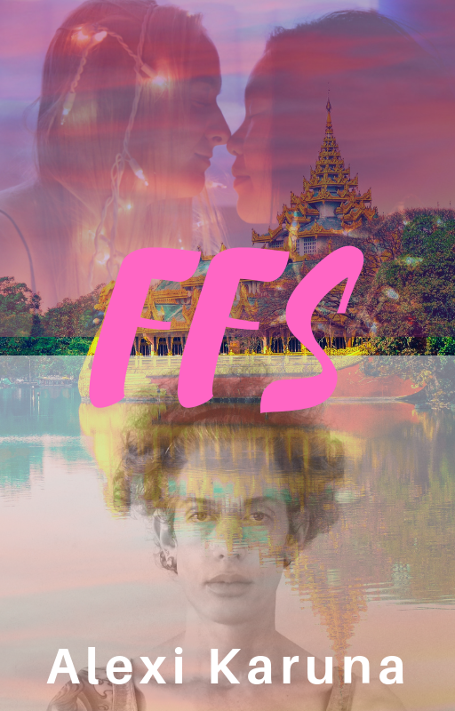

Mali, born physically male feels feminine inside but is insecure with the depth and expression of such. Over some years Mali has gravitated progressively toward feminine presentation. But the apparent ridicule of the world around, much of which Mali attributes to how they look in the mirror keeps them in check. Not to mention the more fem they let out, the more they are read as being 'gay' which feels like the painful end of hope for their most cherished dream, a melting love with a special woman. Now floating in Thailand as a tech-nomad, Mali is flirting with hormones and feminization surgeries, with no goal in mind but to face their identity once and for all before returning to the USA.
Cat is a successful Thai entrepreneur, educated in Japan with impeccable social polish and beauty, still seeking an elusive happiness that her heart is holding out for despite cultural and family pressures. Grappling with the loss of her lifelong best friend due to her apparent attraction to Cat, and an always lukewarm relationship with men, her current boyfriend no exception, she feels like she's reached the limit of being able to understand herself and move her life forward.
When Cat and Mali meet, a friendship develops allowing each a place of deep expression of what they've been unable to communicate with anyone else - in friendship and eventually intimacy. To Mali, Cat is the perfect woman who could get 'him' over the whole 'fem thing'. And to Cat, Mali is the perfect man, a 'rockstar', the answer to what has been missing in her relationships. To each, the other seems to be the answer. But in the way expected?
ANTECEDENTS
One Day
BEFORE
Koona
The Price Tag
Shocked
Kaa Kaa
Dee and Dee
MRT
DESPAIR
Standing
Thai Reality
The Pink Button Down Shirt
Fuck. Fuck? Fuck!
Frustrated Shaman
Home
Re Koona
The Night Market
Recollections
The Chinese Tune
Reunion
Open Soul
The Creepy Sperm Bank
All Living Things
The Klong House
100 Years
Japanese
Kali
Cat's Heartbreak
The Blackest Sheep
Sarai
CAT
Un-American
Chatuchak Park
Away
Chiang Rai
Skype
A Plan
John Lennon
The Restaurant
Piano
The Path
Sweetness
Parting
Kad Suan Kaew
Surprise
Suan Benjasiri
Are We There Yet?
Broken Rules
Only You Are Confused
No Promises
The Actual Dessert
Roles
I Think I Should Go Now
Back Alone
LAY OF THE LAND
Such Misery
On the Moon
Parallel Life
Ultimatum
The Motley Crew and Thailand
Ruminations
The Free Fuck You
Really.
Home Again
I Need Help!
Karina
"Normal" Trans
Terrasanto'sWonder
A Girl Who Knows a Guy
Doorstep
The Face
The Way Back to Love
HOPE
Hello World
Hating on the Road to Bangkok
Dress Shopping
Dress Wearing
Anastasia
AUTUMN The Pumpkin Head Snoutmark Streetlight Silhouette Going Crazy in a Park Secrets Out Thai Pancakes and Watermelon Escaping the Ten Minutes Searching for Godot Reflections from a Motorcycle Farang Kon Katoey Soi Katoey
TRUTH Girlfriends Aussie Ape Man Going Deep Loi Krathong Separafusion Codigo Rojo Intertwined Fabric of Life Sinking Fortress
TRANSIT 767 Coming Out Chaos New
OMAHA
The Smile Gender Confirmation Stereo PTSD Tough Customers Caged Spark
To... Who has always been here but for acceptance, a name and outward appearance. Who never gives up searching, often on the tail of a feeling and a distant hope. Deciding to trust oneself, body and feelings, even when the external world has come up empty on answers.
One moment can change a day, one day can change a life and one life can change the world.
— Buddah
Hospital Moderna, Montevideo, Uruguay
The wall-clock across the room ticked away, making it all real now. 8:05am.
Ana put her hand on her heart and massaged, gently kneading into her small developing breast, the warmth and softness in stark contrast to the almost scratchy starched gown she was in.
I’m sorry about this. Sorry you’ve hurt so much.
The lump in her throat came and her eyes contracted with mist.
You can always tell me ‘no’… still. I’m listening now too.
An image of herself as a young child. The girl with full wavy auburn hair inside the playhouse simply turned her head, smiled back and then turning back went on playing like nothing.
She nodded. Business as usual. Just as before. Simply the feeling of things being right… with herself, the world…
Even that clock on the wall.
If I die in this process, I’ve died fighting for myself.
I’m at peace.
She was starting to see the pattern. These decisions took aggression to make. Each choice to change nature’s physical default, required a certain threshold of something almost like anger despite feeling at the same time right and absolutely necessary.
She shook her head.
The paradox of being violent against her own body in the name of authenticity. It had taken the last eighteen months to face and accept that. And years more to even get to that point.
But I’m still sorry.
She ran her other hand over her face and neck, letting her fingers gently sink in and massage the flesh.
Hi face… hi neck… everything inside… I’m sorry…
The dark nothingness approached… it was planned to last over eight hours today.
The one I’ve already put through hell.
The tears intensified in her eyes.
“I’m sorry little cells,” she pout-smiled and intoned almost inaudibly, as a mother to comfort a child, herself choked up with emotion.
The usual response did not surprise her.
“It’s okay. We’ve got this.”
Once again they were going to war for her.
With their blessing.
Only minutes from now, she guessed. Thrown into a state of trauma and shock. Confusion. Attack. There was no way that it was not that. The loving and innate intelligence that no matter what would fight for survival until the very end.
And even happiness.
So maybe, then, there’s no conflict after all.
“Good morning Ana.”
The man in green scrubs and a surgical cap whisked around the corner and smiled, causing an immediate smile back from Ana, puling her out of contemplation.
He came see me before the surgery.
Just as he had promised.
The last little thing in the trust rebuilding process.
Check.
The one… she’d flown half way around the world for. With whom she’d fought with almost to the point of canceling plans several times in the six month waiting period. During that time she had wondered if she could trust him and his team. At best their email communications had been volatile. And now, if she had to do it again, she would have flown here six months ago to meet him in person. Because in person confirmed everything about her choice.
Terrasanto. Everyone just called him that. No ‘doctor’ prefix, just Terrasanto. An aesthetic and surgical genius. A hacker in his own right. A man with an internal barometer of what was good and what was not. He did forehead reconstruction differently than any other doctor in the world. The online forums were full of back and forth about him.
In the end, when someone is the one, they simply are.
And you know it.
It hadn’t been about any promises he made her - in fact he only told her what he could do and where his limits were. He didn’t ask so much what she wanted but more like an artist told her what he thought would be a best total result. So much different from the technician surgeons who seemed to think of her face in pieces, as if they were themselves insecure in taking responsibility for the final result and instead asking her ‘what do you want to do?’.
And she’d seen examples of Terrasanto’s work. So on paper and inside she knew.
A hope she’d never had before.
Back then she barely had the faith such was possible. At least for her. Not the least that all the other surgeons she’d met with at best had been reluctant.
Maybe the only one in the world who could do this.
For her. What she needed. She knew enough of life to trust such strong senses, as they were not always so clear.
If I don’t trust things when they’re crystal clear, its like taking a sledgehammer to my internal barometer.
She knew that from experience.
A spontaneous deep breath entered her lungs as if her body was giving its blessing into his hands. The same that had always come when she contemplated this choice, regardless of the apparent external conflicts in the interim.
“How are you this morning? Sleep well? Get here alright?”
Terrasanto continued in strong but accented English, the rapid fire questions making it clear that detailed answers weren’t required. His perceptive eyes were already studying her face.
“Yes, everything was fine. Glad to be here finally!”
She smiled. Although fluent in Spanish she no longer cared to assert so when addressed in her native tongue. It was funny how the more she liked and became herself, the less ego she seemed to need to support her.
The surgeon was followed by two other men in the same type of scrubs.
“This is the rest of my surgical team, Dr. Salvatorre, Dr. Rivera, and you’ll meet Dr. Guzman my anesthesiologist in the quirofano.”
Standing around her bed the surgeons began talking amongst themselves, her face was the object, discussing the locations of the incisions they’d make for the various combined procedures and the surgical game plan. With the green head covers and surgical masks, all she could see was the focus and intentness of their eyes.
Another deep breath came. She felt surprisingly calm. She felt complete trust in this team and what was coming next.
How much more you appreciate what you have on the day you leave.
There was something inside that shriveled when she recognized how her defenses, the anger and anxiety so often present played into alienating herself from others. And now the same feeling, but with life itself.
All the times I’ve cursed the universe for putting me in this position. Giving me these challenges. And not trusted. Over and over. And every time…
The tears again came to her eyes.
Because it’s been perfect. I’m always cared for in the end. Always have been…
I’m sorry life. Universe.
Thank you.
I love you. I wouldn’t change for anyone.
Really.
A smile broke on her face when she realized what she’d just said to herself.
She knew today was a big point between before and after. Every piece of imperfect trust had led here. The operation and change almost no one she knew thought she should have or ‘needed’.
That’s what hurt. But then again…
This is not running.
She knew how good it felt to run. Drop things, start over, go somewhere new. But today was different. In the last year, running had lost the power of promise.
This is what all the running of the past was toward.
From here on I live. I face things head on…
If I live.
For the first time in her life she really saw it for what it was, the passion that made her, to the outside world including her family, appear to be fragmented and lost. Albeit a world nomad who up to now did fine supporting herself and her enigmatic lifestyle and choices. And then the last sprint to the visible goal when the mystery unraveled enough for her to see things clearly, this past year.
As if the thought of running was the cue, the gurney-bed was now in motion, guided by a pair of nurses who had come silently to the task. On her back, all she could see was the ceiling as its dimmed lights as they went by.
No more time.
She couldn’t help the silent tears from falling now.
On the edge between choice and no longer having it. Like the occasional dreams she’d have of being in the waiting line to receive death.
Immediate non-existence.
Nothing about pain. Just the line between being on one side and then the other.
The huge emotion of letting go.
This must be how animals feel. On the way to…
Out of your hands unless you want one last fight.
I have no will to fight this… any longer…
A fitting climax to the past eighteen months of her life. Not to mention all the years before.
I’m all in.
She massaged her heart again and nodded.
Poor heart. I’m sorry.
Regardless of the comforting, she felt her adrenaline kick up a notch sending a visceral chill of anxiety through her system in a cool sweat.
My system. My life. I’m playing with it. I made a choice.
She took a deep breath.
Time was speeding up more now, she could feel it.
And if this is how it ends, thank you life. I’ve loved you.
She felt the release of big tear dropping from her eye.
A port in a wall of glass approached. The sign said Quirofono 9. She turned her head in curiosity. Inside, smooth white tiled walls were accented with electronic equipment, blinking lights, a few metal tables. She saw the array of x-rays of her skull up on the lighted screen behind the operating table. One more detail making her feel safe, cared for and in the right place.
As her gurney cleared the opening, the glass wall closed behind them and the room became its own enclosed and protected station.
Terrasanto, the team, and a few other people she hadn’t met were already there. In her last two surgeries she had not even known if the doctor had arrived by the time she was put under, leading her to wonder even when waking up if the surgery had actually taken place.
Another detail making things just right.
As the gurney made its final roll and the nurses helped her transfer to the operating table, she was greeted by a smiling man who took her hand. Terrasanto approached them.
“This is Arnoldo Guzman, he’s a genius with anesthesia”.
Dr. Guzman’s smile captivated Ana. It was wide and warm. Like a Cheshire cat. He had backed in with the moving gurney, having taken her hand gently, and sat casually atop the table next to her in his differentially gray surgical uniform and wrapped head. Meanwhile several other hands were on her prepping for the surgery adding to the sensory overload.
“You may be a bit dizzy,” he mentioned almost in passing, still holding her hand with that mixture of comfort, professional confidence and care.
She had been put under general a handful of times before. She guessed soon they would tell her they were administering it and ask her to count down from 100. Probably that feeling of coolness flowing up her arm from the IV, the cool of unconscious sleep. Maybe the mask and to ‘take a deep breath’ of ‘oxygen’, they would say. That one would otherwise make her crack up… ‘oxygen… yeah right’… but she had never stayed awake to do so. Sometimes they did and sometimes they didn’t have that mask. The smell-taste of the gas was imprinted on her psyche.
For whatever reason, she paid close attention to everything that happened each time. On the way in and the first moments out. It seemed important.
But why did he say I might feel dizzy?
Then nothing.
Black. Not even that. Not even nothing. Void.
Not.
Soothed by the sound of the nearby waterfall the two young women sat next to each other, dangling their legs, feet playing in the warm water of the amorphously shaped pool of dark blue. Among the aroma of sea and suntan lotion, the beach-side sunset faced them, lulling and soothing both even beyond what the expert Thai massages had already achieved.
Long hair and slender silhouettes. Thai-slender actually, a level of petiteness, delicateness beyond, yet beautifully healthy. One woman with a round pretty typically feminine face, the other with a more forward face, eyes that rest in slightly furrowed ovals giving her an aura of being serious and quiet, even angry. Always the relative introvert or the two, everyone always said how striking she was but she had yet to believe it.
They were the only ones remaining, as it was midweek in off season. As well, the last of the hovering men they were habitually used to - according to Koona, really after Cat - had been waved off, as always, without second thought.
Cat toyed with the water surface with her toes. She had never really considered it, but it had always been this way with Koona and it felt strangely right. Forever friends and just here, alone together. They had always waved off the guys when they were hanging out. To the very last one, even the cutest and best looking. It was like an unspoken agreement, a loyalty.
That’s all.
Cat smiled and stared off into the approaching sunset, darkening blue skies punctuated and shrouded by clouds of every color from the light puffy to angry looking shades of dark gray. All framed by the surrounding trees and freshly lighted evening torches, the light warm wind soothing primally, deep inside.
“This is so amazing!” She could not control the feeling of beauty and awe not to mention the warmth and company of belonging with a lifelong friend, at the end of a few days of just hanging out, beauty treatments, massages and Netflix.
She caught Koona’s subtle nod in agreement, the other woman still staring off dreamily into the distance. Always on the same page with one another, without words.
She and Koona, were two of a kind in childhood in Chiang Mai but separated in early adolescence when she was sent to Japan for school. But they had both found their way to the same university in Bangkok which renewed their inseparability without missing a beat. Aside from another fateful trip back to Japan for herself for a year, they had both ended up living and working in Bangkok, like so many young up-and-coming Thai’s did.
Cat smiled to herself. To her, her friend had not changed a bit, but in the outside world Koona had become one of the top finance execs in the country. It was weird how this was. Working at one multinational then another, as well as with a seemingly constant flow of interested farang - foreigner - suitors. Good ones. Cat had always assumed the eventual outcome - Koona ending up in a foreign country, for work, love or both.
And of course herself with her own passion, her beauty clinics. But they still arranged at least every couple weeks to get together. At the mall or simply take a walk in the park. Celebrating the plentiful Thai holidays together when they were not returning to home up north, often also together. Always close and open with each other about everything, boys, then men, suitors, drama and whatever else was going on.
Each reached thirty years old this year. The birthday’s came and went without any apparent change in themselves or lives.
It’d be nice if this never changed.
It was a thought she had never had before.
Maybe that’s what’s different after you hit thirty?
She nodded unconsciously and smiled ironically.
I wonder if we’ll loose this when one of us gets married.
“What are you thinking about?”
Koona’s husky voice modulated close to her ear, pulling Cat off-guard out of her world-off thoughts.
She turned her head to Koona with a broad smile as her world, one that was so orderly and bright teetered, like a glass ball balanced at the edge of a precipice.
“Hi Mark,” he whispered, rubbing the photo gently.
The words escaped full lips, gray-blue eyes meeting with his current reflection in the mirror ahead while the old self, Mark, stared back blankly from the voided passport in his hand.
A person I am no longer.
And today even less, by legal name.
Switching his eyes to the freshly minted passport, he smiled, seeing his new name in the black ink. He ignored the icky feeling resulting from the fact that his picture looked more like a gay queen than anything resembling female. One who in the past habitually made a point of paying attention to such subtle conflicts and detracting feelings, at some point the noise and drive in the foreground had gotten too loud to consider such things.
The chain of events over years that brought this moment came from somewhere deep inside. A part of him - seemingly very physical and in his body - that seemed to hold an override switch even over what he wanted most in life and in his heart. This driven part of him had its own momentum and agenda.
Or more like a compulsion? Was it healthy?
When ignored or displaced, it would sooner than later return full force and irresistibly. The start was always sexual.
To be taken.
The both forbidden and delicious feeling in his gut that only in recent years had he decided to be okay with. If for no other reason than he had no control over it.
To surrender. To feel embraced and penetrated completely that the energy in his pelvis could run up his body and fully express itself… straightening his spine, opening his heart and neck along the way before it then connected him to all that was and is.
But from there it led elsewhere. It needed to be expressed and he could never conceive of not doing so.
In intimate connection.
And not as a man. It was just not acceptable to not be a woman in this expression, the mandate coming from the most visceral parts of his body. Mental gymnastics and therapy aside, he could never get there.
Getting smooth. Waxing. Always the first step.
Where it led after required every ounce of self-permission he could muster. And each time more than before. Not to mention the time, money and energy. And fighting the unspoken feeling and thought behind all this that told him this was a waste of life and resources.
Becoming high maintenance. At least relatively.
All vanity.
This drive supplied the needed aggression and the leap to execute on things the world thought - or wanted to think - were out of character and even not natural, not to mention breaking his own heart in the process.
So here I am.
The sadness came the moment he saw the old passport.
The man who once was.
He could see this, feel it. Who seemed to have a certain possible future. Not that he wished him back. Even when he’d tried, time and again over the years to give him another shot…
Even as he watched his world get smaller and smaller, from being higher maintenance to the stress of not conforming to the likes of society as a whole….
The path always ends up back here. One way or the other…
To my worst nightmare.
The hope of some normal resolution had been dashed on the same rock too many times for the damage not to be imprinted.
He put his hands on his knees to balance himself and took a deep breath to balance the lightheadedness that took over more and more lately. He felt his ever faithful heart beat heavily in his ears. The walk up the five flights of stairs had had the same effect as it had started to of late.
Tears came up to his eyes.
Like wounding an innocent animal…
My heart. My body. The faithful and insistent life inside, nature itself. The collateral victim.
It was this feeling, that came more often these days, that…
I’m in the process of destroying myself.
His trajectory felt like a runaway train that not only could he not get off, but at the same time, one he chose to stay aboard.
Another wave of tears came and he didn’t hold them back this time.
“I’m sorry I could not be you,” he looked at the photo in the old passport, “I’m sorry I couldn’t make you happy.”
All of which simply increased the crescendo of tears.
Maybe this is why people don’t like crying.
Crying had always felt good before. But this time it was different.
Maybe this is how people feel at funerals.
He’d never understood that completely either.
Looking back into the mirror he knew he’d fought his whole life to stay in the light and away from this. Even as a child, San Francisco had felt to be a dark place. The gay place. Of ‘alternative lifestyles’.
And now here he was in this tiny studio in the Tenderloin, in the heart of the deep San Francisco fog, something in any possible future he would have prohibited from his life… Living in the darkness.
BDSD, S&M, TS/TV… gay… bisexual…
Words from the shocking adult newspaper he as an adolescent had once found on an SF street on a family visit to the city. All indelibly etched along with the feelings and images a child creates when contemplating incomprehensible sexual acts, some involving pain. Hearing about men, bathhouses and an out of control disease that was killing them. Men who dress as women.
And that he was a man too. At least seen as one.
And that I always loved being penetrated.
Well… I look gay.
It fits right in now.
Alone. No real in-person friends. Not having had a date much less embraced with anyone for years now.
Not living… in this world or that one…
And mine getting smaller and smaller.
The ghost of the woman who could have been the one for him cried along inside. Who he’d longed for since early childhood. She was the only point of doing anything in life.
Still.
But I don’t even imagine her anymore, holding her when I fall asleep at night anymore.
Because it all seemed further from any possibility. With each step on his path toward what he called the ‘fem’, powered by this inner force, it seemed females in the world took a step away from him.
Except to have a gay friend.
He nodded sadly.
I’ve become my worst fucking nightmare.
And I’m not even fucking gay. Jesus!
If there was a way to put out into the world every possible wrong signal about who he was and wanted most deeply inside, this was it. And the heartbreaking thing was, whatever this was deep inside…
I still want it.
I don’t make a reversal.
When I try it never sticks.
This is my price.
The fem is more important than my heart.
Maybe than even my life.
He shook his head and dropped to the floor. Against the wall of the dark closet, falling back through the hanging clothes, embracing his knees with his arms, surrendering to the deeper tears. The ones that take over sound and breathing, running through the body as if they own it.
Because today they do.
Cat had turned her head in the direction of her friend’s husky voice. Koona’s now striking soft alpha face was very close. Dark eyes, wide, with what seemed like perpetual and indelible makeup that was just their natural beauty. They searched Cat's own coffee brown before they traveled down to her lips. Koona was leaning over and it was only inches that now separated them.
Busted.
Koona’s proximity disturbed and invigorated something deeply intimate in Cat. It was the last thing expected and she had no idea what to do. What with always being close, hugging and embrace between them had always felt so normal. But this, even though they were not touching…
The tone had changed.
No words were spoken but there was no escaping what clearly was now, just like the object they had watched way out in the ocean become apparent as a ship… and then a cruise ship… then the Princess line.
That real.
Koona felt both excitement and fear inside. Not only Cat was her best friend, but she did not understand completely what was going on with her. Why she was losing control. And why now? She’d held these feelings close over the years. But they were now breaking her apart.
Maybe its just age. Time passing… makes you crazy…
Cat held Koona’s gaze, unable to relinquish it nor process what was going on either. She swallowed. Her jaw relaxed and lips parted slightly, unconsciously.
Something in deep in her abdomen felt an incredible excitement too, desire yet enveloped in fear, nondescript but it felt very personal and vulnerable.
Dangerous.
In the given moment it was an unclear and confusing feeling.
But not foreign.
So from where?
Without warning she felt her feet brace against the pool wall, as if not her own, with them and a feeling of giddiness, her hands pushed off like a rocket and buried herself in the water. As deep as she could. Holding her breath as long as she could. No thoughts, just the impulse action of activity, of doing something, anything to maintain her world intact.
“Chan chop gin puk gup kaew ka,” Mali completed the sentence perfectly albeit mechanically.
“Kaa kaa!” Kuhn Nok, the teacher at the whiteboard affirmed, “Jonathan, poot arai Mali na Angrit ka? -- Jonathan, can you translate what Mali said?”
“He likes to eat vegetables and rice?”
The teacher smiled in partial acknowledgment and corrected, “SHE likes to eat vegetables and rice. Remember, ‘ka’ at the end is for female, ‘krup’ is for male.”
The other student, a big black guy from Chicago, looked about to protest but thought better of it.
Mali’s lips turned up in a smile.
Fuck me. She’s correcting people on my gender. All for the price of using the ‘ka’ instead of the ‘krup’ at the end of the sentence.
He had had no ‘identity conversation’ with the teacher or anyone in the class. Not the usual crap you had to do in English if you want something when you don’t meet the standard the culture has set for you to be yourself: ‘I identify as female and use the pronouns she, her and hers…’ and all that bullshit.
It seemed obnoxious to $er.
Something Mali had no heart for because…
I don’t look to people like a woman. I look like a rockstar. Or a gay guy.
A gay rockstar probably.
I would have to go around the world telling everyone then. I don’t want to force people to make me be what they don’t see in me themselves.
Uphill battle.
And there was the latent truth that $he did not even realize at the core…
I want to see and be seen. For who and what I am. And on the trajectory I’m on, if I can’t have that… I’m truly destroying my life.
Fuck me.
Fuck you English.
Fuck you puritan creepy fuck-off American culture.
Thailand is so much easier.
The fact was, below the surface as it was, Mali’s pronoun and gender for him, her, or whatever ‘self’ depended upon the world. How others seemed to define him, her, them, whatever. Setting up a perpetual conflict with others and the world.
And reading the above paragraph you can get the sucky confusion and wordiness if you don’t know which pronoun to use for someone…
Or what is right with yourself.
So in this moment Mali wrote proudly in the notebook in block, double embossing each letter…
$HE
$ER
$ERSELF
For now that’s what I am.
Like a variable in computer code.
A variable in code is a placeholder which at least in some languages can be assigned anything… and generally changed while the program runs.
$he = ‘she’$he = ‘he’$he = ‘Mali’$he = ‘Mark’$he = 12345$he = [‘The’, ‘Real’, ’Fuckface’, ‘Von’, ‘Clownstick’].join(‘ ’)
A placeholder, and what’s inside is changeable. A work in progress. Like a shell in a shell game, you may know which shell contains the item, but the shell itself is not the thing inside it, which you may or may not know what it is.
If you’re hacking into some code, you may see the variable but until you look inside it, you don’t know for sure what it contains. It might have a nice name like...
xxxxxxxxxx$Cassandra
But look inside… what is in there?
The world… the people outside see only the variable, not what its value is. And they make inferences and judgements based on only that. Which you can imagine makes it hard for someone like this:
xxxxxxxxxx$BigTallMan = ‘Jessica’
Especially when SHE walks into a bathroom in some hick town in Texas.
That’s why $he came back to Thailand. Thailand seemed to be less obsessed with coupling the variable name - its shell - to what was inside and made the country a good playground, compared to many places. It did not have the often present threat of outrage and violence that the US seemed to hold.
Mali’s naive thoughts upon making the travel plans were - and without timeline - maybe try out hormones, a couple of relatively minor surgeries to if not become female in appearance, at least a lot cuter…
Harmonize my variable… my container…
And do due diligence to know what this mystery inside actually is.
Cat plunged deeper into the twilight water, continuing to hold her breath for what seemed like a super-human time, and through it a series of semi-conscious thoughts passed that never quite made it through to prime time…
She’s my best friend!!!
But we’re both Dee’s. Feminine women.
In Thailand it is men and women, Tom’s and Dee’s.
Dee’s and Dee’s? Never.
She had heard of this but the couples were laughed at and called abnormal.
How could it be?
We’re both not only normal but successful people. High performing!
Far from the night life and the street…
But it was happening right now. Inside her and she’d lost her grip to keep it at bay.
Ah, but I’m not gay.
Somewhere more deeply sub-conscious, Cat had a hope that somehow Koona would make this easy for her. Koona was always there. She was always the one to get things to work right no matter what the situation was…
And without still knowing her true emotions, Cat surfaced and intently looked for Koona where she had been sitting.
Because even within all that fear in her was a hope she was not willing to admit, rationalized as friendship. And coming up for air, that hope was now.
As if Koona and the air she’d done without were one and the same thirst.
Cat’s heart dropped.
Koona was no longer there.
Or anywhere.
Heading out of the air-conditioned Sukhumvit ‘Times Square’ building, the sweet warm humidity of the Bangkok evening hit Mali. $he smiled. This felt good. The class, the little camaraderie with the other expats. Even the Chicago guy seemed okay in the end. There was something fulfilling about being social, even frivolously social $he had never really ever enjoyed before in $er life.
It wasn’t lost on $er that this was also the first time $er felt gender had ever been affirmed publicly. It was strange as $he never felt okay to ask for this or state it $erself. But given the choice of ‘ka’ or ‘krup’ $he knew which one $he was more of.
And here I get to choose…
I’m a katoey here. Ladyboy. Transgender woman.
I’m seen.
First a katoey. Not a gay guy. Not a drag queen. Not a ‘man in a dress’.
I’m defined as something…
At least more like I feel I am.
It doesn’t even matter what I look like.
That was something $he’d absorbed from the various Thai katoey movies $he’d watched in $er first time in Thailand the year before. The pride and absolute disregard for the haters but for the own femininity and self-regard of even the most masculine appearing katoey. It was amazing. Anyone, $he saw, could be fabulous… and just themselves…
_For the choosing. _
It had been two months since $er breakdown back in that SF apartment and the resulting decision to come back to Thailand. For hope. To progress. Steps which seemed far too difficult and scary back in the United States. Bangkok felt a world away from San Francisco. It did not have that dark energy. It was more like a hybrid between urban Mexico and NYC.
Walking down the steps of the Asok MRT subway station, $he felt just a little more $erself, more authentic. A little proud even. Proud was not a familiar feeling to Mali, so a little was a lot. With a slender one-hundred-thirty pound dancers frame, only that $er face was so much masculine, in a European-type way, long, oval with big lips, pronounced cheek-bones. Always a target for the gay men throughout $er life, making things ever more complicated in the social world.
I do wonder how Cat sees me.
One inconvenient fact was the Thai culture seemed to regard katoey as only being romantically and sexually interested in men, and of course that was a problem. Cat was the receptionist at the beauty clinic $he was going to for $er ongoing laser facial hair removal. On whom $he’d developed an enigmatic crush.
Would I drop the fem and be a guy if she was into me?
Would she be the one who is so special that it overrides all of this?
It was not a new thought for $er - that the perfect woman, ‘the one’ could fix this that ailed $er, but before it had always been a hypothetical question while the fem train $he was on continued it’s seemingly wayward journey. But now… the problem was embodied in a real woman.
Cat was that attractive to $er.
The perfect woman.
Several Months Later…
Chatuchak Park, Bangkok
A slender silhouette stands by the edge of the lake amidst a chorus of cicadas. A thin oval head, slender body and big hair make an appearance that seems as likely in a Dr. Seuss book as in the surreality of predawn Bangkok.
Alone.
Stationed under the tree with huge protruding roots, half in the water and half on land. Those which are visible and those only known to existence by inference or from their subtle reflection through the water. And the massive trunk they hold upright. Above, the branches extend like protective arms in many directions with the effortless grace that only a tree can embody perfectly.
The figures arms, like branches too, are held circularly in front of their chest, fingertips of each hand pointing to the other, knees slightly bent, back straight. All seems to be in complete stillness.
It’s way before sunrise but nevertheless tank top weather, the sultry humidity foreshadowing yet another completely normal Bangkok day. The sweet smell of natural bug repellent lingers around the figure. The early morning exercisers - joggers, the tai-chi and qi gong crowds one by one and few by few are making their way, to their usual spots and routines. Usually the first ones here, some notice the return of the silent farang to the scenery. Several months had passed since they’d seen…
Him? Her? Too slender for a man. Too minor a head. Too tall for a woman. Wider hips than a man. Not a woman’s chest. Crazy mop of hair, frizz that seems on its way to wanting to belong in some horrible frustrated neverland.
The face hidden in the shadows hides its distinctions secretly in the one time of day the conflicts are fewer. The occasional passing and curious onlooker wouldn’t know at this hour that the situation was almost as ambiguous inside as out.
Whoever.
Falang never show face.
Mali has long loved the solitude of the early morning. Time away. Alone. In the darkness. Before the emerging forms and definitions could be easily cast. A relief. Time to reset. A chance at a new beginning. Toward this everlasting hope and passionate drive inside.
For whatever reason years ago $he honed in on $er body being the answer to the conflicts $he felt. All the tension $he seemed to have no conscious ability to release or control. Not to mention the romantic sense and sexuality which has defied $er apparent male incarnation. The abundant feminine energy in $er pelvis $er primary teacher.
But even in the brightness of day, like the tree, half in, half out, half in overwhelming feeling, half immobile, half rooted in the ground yet stuck, but with a head and heart - and hope higher in the sky as seemingly anyone, as such was $er existence.
A tall skyscraper looms through the trees, on the other side of the street, poised to provide shade as the sun rises. ‘TMB’ in red and blue letters glows at top. Mali has positioned $erself specifically in its line of shadow knowing that $he will be standing here immobile for $er usual forty-five minutes - and it being important to be shielded even from the earliest morning sun. As much as for a few extra minutes of shaded solitude as to protect $er skin from what will already be indelible sun rays, and its resulting entropy.
Not good for skin or beauty.
A few ducks float by on their early morning food paddle making an ever so slight murmur in the still water, oblivious of the silent presence.
Mali is after something. Been after something. For years now, day after day, going inside. Not to mention all the years leading up to such. This practice, alone, the solitude and discipline for the good yet still not masterful rewards, also matched the rest of $er life.
Good but not great.
Closer but not spot on.
Even with this essential morning reset, on the average day things virtually always went downhill from the stillness, poise and whatever grace achieved.
I only know a few things for sure. I may not know exactly where home is. But I know this is the way.
Mali had the somatic inner confidence to dismiss every teacher, sifu and martial arts master to date.
My power is softness. Slow, minute movement. When my body becomes more aligned, more symmetric, muscles balance themselves, it brings…
Joy.
Anything or anyone empirically contradicting this got the boot. Anyone who espoused speed or force before perfect slow mastery.
$he knew this joy was inside $er but no one seemed to see it. It had at best been drummed out of the public view with laughter and ridicule in childhood. If in fact it was ever fully accessible at all in $er.
I can’t remember… But I can feel it there. The thing under everything. Like the eternal flame. Perhaps at times a tiny flicker but it’s always there. Another of the few things I actually know.
Only in the past year had $er discipline crystallized to a level of conscious comprehension, a system and checklist with consistent results.
As the body becomes increasingly symmetric, front to back and side to side, and the muscle tone between opposing muscles balance…
It was the practical theory $he’d come up with to describe how $he could get there. And more and more $he could apply it at will.
…comes true authenticity, joy… super-consciousness…
Or in more practical words, the ability to…
Just be myself.
This translated practically to acquiring the ability to move and adjust consciously in micro-movements, aligning the front-back tilt of each body region as well as the lateral and twisting relationship of every body part to the other.
It was ironic that the discipline $he poured in to excavating $erself - which showed increasingly as female or yearning to be such - in its diligence felt disciplined, focused, even controlling…
Mali smirked.
Using the male programming to become free of itself.
Pretty funny.
It made $er happy - and confident - to know that $he never had to be lost to $erself again. At least for long. What in the early days required much more effort, time and muscle - and sometimes loosing the path for months on end - as much as now it required the opposite - softness, balance and alignment, finesse. And just a few moments.
The practice was $er rock. For the mornings. Along with almost daily afternoon hoopdancing. Practice probably being the wrong word. Joy would be a better one. It was a desire and release, not a ‘have to’. Standing, solitary and contained. Hoopdance, passionate and expressive albeit following the same evolution over the years of brute force and effort moving toward grace, softness and minimal effort just as standing.
A slight breeze caresseed $er bare arm and face from the side. Like a gentle tug. A reminder of what is truly delicious. At the edge of the lake, like at the edge of life looking on in…
My life… practicing… just to be able to exist…
Each day coming and going like a number, starting like this.
This was $er lifeline and consumed much time, including what would be otherwise social time. $he was always aware of this tradeoff of friends, fun, even maybe lovers.
I’d have it no other way in the early morning. This moment I only want to be here. Alone.
The dusk, evening, going to bed alone, was when the longing would present.
A third thing I truly know.
Mali smirked.
Today we’re counting I guess…
Ever since $he could remember, the embrace, with a girl, now a woman. The always elusive melting contact together. True connection, intimacy.
The primary dream.
And the heartbreak that the same force $he was connected to now leading $er into increased authenticity was in direct opposition to ever having this.
That one magical night with Cat aside.
Even the general limerick in Thailand had been getting drummed into $er head…‘Thai ladyboy like men not women’… $he’d heard it over and over and it made $er pissed.
But what else could $he do? To stop fighting was not an option. To stop this practice, the entropy of $er grace and structure would begin to unacceptably degenerate in just a day or two making $er run back to the early morning discipline. Stopping this fight would be also akin to stop loving and revering life… and what $he felt inside.
The same reverence made $er doubt some of the things $he was doing now in $er life, and wanted to do. But they were all connected… $er pelvis, standing straight, opening $er chest and heart, feeling female, hormones, surgeries…
Too much passion.
I’ve come a long way. And every step of it toward the fem.
That night kind of proved it’s working.
In younger years $he felt due to the excessive tension and gridlock in $er body that trying to express the passion inside was like sending a million volts of electricity through a thin constricted wire. Energy that when tried to be felt and expressed would result in even more gridlock and tension because there was just too much of it and a constricted conduit getting blown out, burned.
But that night…
The full charge of energy came through $er unimpeded.
For the first time ever… and with another person…
$he shook $er head in disbelief still of that evening and smiled. It had been ridiculous. Everything $he had dreamed about in connection with another.
Complete union.
But the moment after…
Complete separation.
Until tonight.
Maybe.
Hopefully.
And why I am back here in Bangkok today.
Mali slowly and slightly rolled the bottoms of $er feet. Pressing the ball of the left foot just behind the big toe into the ground. And then the same on the left. Then each heel too, alternating feet. Outside ball of left foot. Then the right. Inner left ankle. Right ankle, slightly flexing each joint. Outer ankle. Pushing the left heel into the ground and feeling the left knee extend. Then right. Left hip up toward ribs. Right.
Left shoulder up… down… forward… backward, all with the right side in turn. And so $he worked through the body the preliminary exercise which allows the generally contralateral and differentially left and right wired brain sensory-motor areas to create a more accurate map of the current and actual body asymmetries and muscle tone imbalances.
The magic of all this which Mali discovered is that by bringing such awareness to the brain, without further conscious intervention, the brain takes over to do an often almost miraculous realignment… Essentially creating a ‘current state’ map, to which the brain is able to superimpose with the more ideal prototype it already knows.
My true self.
The template of the best me.
The image of a perfect, open spine with arms outstretched, unimpeded to the heavens came to $er as a visceral feeling. The innate, wise part of $er that seemed would take over and run the show if $he could eventually let it.
Being all that I am… and can be.
Just as a prism divides the pure light into a rainbow, the longing for bonding, intimacy and love had somehow become disconnected from $er innate sexuality not to mention, male or female identity.
$he was somehow now in this in-between place, living in fragmented light. It was currently a painful mystery that in the moment the prototype $he was after seemed to be at odds with $er core dream and longing.
Standing was $er way of getting the cohesive light back, it’s what $he felt and trusted… And Mali was spending $er free time writing an app which formalized this system…
Maybe other’s bodies work similarly…
So things - all this that is my solitary life - could mean something, someday, to someone else.
Another warm breeze caressed $er now slightly perspiring skin, the resulting coolness like a whisper making $er feel that everything was and would forever be alright. Everything was already okay in the pure now. Nature and the outdoors had that way with $er.
$er eyes teared as the peace of stillness overcame, finding that familiar better place. Muscle tension ceased to exist and as the alignment progressed, $he came to be as one.
Moments ceased to be divided and flowed together into a timeless place. A place where forty-five minutes, an hour, would pass like nothing.
$he fell into the nothingness of stillness and balance.
The sideline of life where $he felt $he lived most waking moments disolved.
There is no sideline.
I just am.
And have always been.
This.
A deep breath filled $er like water in the desert breaking the tears of freedom open further. The insidious complex of tension in $er neck, shoulders and heart broke as it often did.
A full smile came over $er face as the tears silently streamed rivers unhindered down $er cheeks, cascading down $er neck and down the middle of $er chest. $he could not explain the feeling aside from being authentic joy. Relief.
And the tears, freedom.
There was nothing more addictive than feeling this way.
Nothing.
Why I do this.
And everything.
It was the only actual feeling in life that made $er know not to fear death. The mind being off and everything being still was actually very sweet.
Now I remember…
Who I am.
I’m nothing.
And everything.
Onwards of an hour later $er closed eyes dozed open slightly allowing in with always surprising vividness color and light as if $he’d slept, as if it was a second new day but in a Technicolor world. Across the striking dark blue lake $er eyes made out the form of a slender and athletic Thai woman jogging. Poised and straight, a graceful neck that seemed to oscillate with each foot-fall, the envy of envies to Mali, being the major challenge in $er own posture. Straight black hair pulled back in a French braid. The muscle tone in her jaw depicted determination and strength, in a kind of masculine way that $he loved to see in a woman.
Strong, beautiful. Hot.
What she takes for granted.
Then came the immediate sadness.
What I do too.
What we all do.
Breath entered again making its sweet presence know in Mali’s lungs.
Under it all the familiar feeling of both wanting to be with and wanting to be at the same time.
I hope this is what’s coming back to me tonight.
The almost gone feeling of hope was still an ember. But $he checked the thought as the first vestige of tension and disharmony returned to $er body. As $he had become used to in life, letting go of what $he hoped for and creating a more compelling plan in place of the originally desired tended to work magic.
Not Cat then.
Instead, me!
Outside the steel fence, the tranquil greenery abruptly ended and the concrete jungle began. The park was bordered on three sides by the gigantic ‘tanons’ - boulevards - the same of which could be found all over the city. Cars - many cars - densely populated the road, coming into existence just as the light of day too had come to pass.
_Rot tit. _
Mali smiled at the Thai words for traffic jam.
Synonym: Bangkok.
When: Always.
Where: Every major street that leads anywhere directly.
The taxi drivers were always amused when $he’d spout the word. It was one of the ways $he knew to create good feeling and commonality which was highly valued in the Thai culture.
Where there was not ‘traffic jam’ were mazes of side streets and alleys which only the most experienced taxi drivers could use effectively as many of the little portals ended abruptly. But some didn’t and the navigation by some of these drivers to Mali bordered on genius. These side streets or “soi’s” were finishing touches on a city and country which Mali had in earnest started to believe that many things had been arranged by some Machiavellian mastermind to keep foreigners in an at-best confused twilight. Busses with one name but variable routes. Words that $he could pronounce but no one could understand. Transliterated signs with letters that did not come close to the actual sound of the word - not in the Thai alphabet, not in the phonetic alphabet and certainly not in English!
All part of the fun and mystery.
Not to mention the juxtaposition of the apparent respectful status toward foreigners and at the same time the sense of them being the primary joke of the natives. Of the kindness in one minute and then virtually being laughed at to $er face, with Thai words $he was assumed not to know.
As always, walking in these post-standing moments, $er body felt at its best, strong, aligned, cohesive, even graceful as $he began the twenty-something minute trek.
$he passed the bus stop and the lines that had formed to board ever crowded and rather old busses with destinations to the nether-regions the giant unknowable city. Whereas in Mexico or other countries $he could find $erself intrigued by the busses, their numbers and the names of destinations, these days and here, they held very little interest. If nothing else it was simply too hot to make geographic exploration much fun.
Some eyes of those in line rested on $er as $he passed but it was okay.
It meant $he looked good, tall, graceful, maybe even strong. When they were just eyes, not words, they were like a Rorachach to $er inner state.
Eyes are okay when you feel good, have poise and grace.
Soon $he was back to the preferred solitude as $he upped the steps of the first of two expansive pedestrian skyways which criss-crossed above the tanons and would deliver $er to Tanon Latprao, which would lead back to the hotel.
Making $er way up the second skyway, the panorama was simply city, morning sunlight came from somewhere beyond in the forgotten sky. Two large shopping malls, several skyscrapers with the rest being two or three story serial buildings, the kind and style that seem to populate many large cities, roll up door bodega shops on the first floor with a few floors of apartments above.
A woman passed by on her way across the bridge and stared. The long held stare. An enabled stare. The one that says you may as well be an inanimate fucking object. Mali was often conscious of the fact that in a split second when receiving such a look if $he added a smile it could turn into a heart-filling moment of connection. Unfortunately even now $er defenses did not permit such.
And why the fuck does it always have to be me who smiles first???
In $er mind they were different, but for $er sensibilities now over half a year into $er Thailand journey, it was a tie between the inanimate object stare and being laughed at and talked about just feet away. They both in the end led $er to the same place.
$he felt the minute anxiety and accompanying tension of defense raise. It always was disheartening.
And the story of my life.
This was not just Thailand.
In the US and other western countries, people would tend to look away sooner. Here not so much, added to the mix that people would often laugh or even say words to their companions in plain ear sight. $he did not know all the details but enough times the words farang, katoey and laughter paired made a plausible story. It hurt here as with everywhere. The difference was that here it didn’t feel dangerous as it did in the USA, although for some reason it hurt more.
I know they’re calling me a transgender foreigner. Thats okay in theory, aside from the inanimate object stares.
But fuck the laughter.
It was like people there often seemed to feel they had the right to stare, do double and triple takes with $er.
Gets fucking old…
And although $he was no stranger to relative isolation in $er life, isolation of course made it worse here. So over time, in the day to day, with the culture here $he could only characterize it for $erself as polarized love-hate. Or love-anxiety relationship, punctuated with uneasiness and feeling ashamed when $he seemingly overreacted from what $he held in.
$he remembered the day in this general area $he’d walked with a friend from Thai class, a tall and quite attractive woman. $er friend had also been stared at and on an occasion called katoey. Mali smiled at the memory. On one hand it helped to know… that it happened to genetically female foreigners too here. On the other…
They’re still gender categorization obsessed assholes.
In Thailand $he appreciated the crazy amalgamation of new and old, modern and traditional. The deep history and Buddhism, the dark unknowable alleys of the city as the Thai psyche itself paired with the most modern, over the top malls, technology centers and innovation. Superior street food outside of five-star glitzy restaurants. Not to mention their polarized femininity and masculinity coupled with what seemed like everything in between. Tom’s and Dee’s, gays and katoeys.
And to this mess, add a heaping measure of self-consciousness. Image.
The selfie-culture.
Insecurity, especially in the heteronormative young, female world which $he had grown to dislike, the ultra-feminine, temperamental and at least superficially vapid young females who did nothing apparently than shop and text. All this made $er feel less feminine than $he felt in the US due to the divide.
But then there were others, the LGBT types $he’d come across in the 7-11’s, cafes. And so many good natured people in their forties and above. So in short whatever anger or frustration would boil over in Mali would be checked regularly with shame when $he met with kindness and what seemed to be a genuine smile and connection.
Just like my own volatility and insecurity.
This place is a perfect reflection.
Don’t even think of leaving here until you’ve worked yourself out.
Mali warned $erself about this regularly. It was the intuitive and unwritten deal $he had with $erself that $he was going to resolve $erself here and soon. And not leave until then. $he had a habit of moving and was starting to wonder if it too wasn’t an escape.
Running away.
This place is the best chance I have.
Like it or not.
Mali was no stranger to surreal living and the sometimes floating feeling about $er life, in Thailand exacerbated by low cost of living relative to almost any major city in the world. Mali, then Mark, had left the normal ‘job’ life in 2009 and began freelance programming to support $erself. Self-trained, $he had wondered if $he had what it took. But $he got one client that lasted a couple years, then another, then another. All of which enabled first a new life in NYC, then as if to push the boundaries, $he went to live in $er old love, Guadalajara, Mexico.
The problem was… it worked. $he didn’t miss a beat with $er client. This fueled the fire of pushing boundaries virtually at-whim, city and country hopping for the last five years. And in the meanwhile finding the freedom to explore $er identity more. At least in appearance. It was amazing what you could do to be free if you had money and could be virtually anywhere.
In $er words it was ‘simple living’ but $he generally went where $he wanted, when $he wanted, saving a good amount of money on the way due to making $er US contracting rate. In a way $he started to understand how it might feel to be wealthy or a celebrity and have so much freedom of time and location.
But the flipside was - just as with the celebrities - that sanity could also at times seem like a relative thing.
Like tonight may be.
It was virtually guaranteed to be.
But the unknown was in which direction.
What was I thinking?
Cat was staring at her date again.
Friend? Date.
No. Nooooooo!
Friend.
Date. I was the one who asked…
Her deep brown eyes and impeccable Japanese poise veiled the internal conversation expertly, adding to the already unknowable mastery of her Thai birth culture.
But that night…
What is anything?
It’s frying my brain.
This and everything surrounding the situation. She had missed Mali enough to call, in the hopes to see. If the friend, the time together, the before could be…
But now?
I wanted that Mali to show up. I miss - uh…
Him.
The hope HE represented.
Future boyfriend. A ‘yes’, at least a ‘maybe’ instead of a…
No way.
Regardless of how easy and perfect they were together, there was something more than that. Something that had been on her mind ever since the night the dam broke.
With HIM I could make sense…
Of me. Of how I am.
Having a man with her. Not any man, but a man like that made her feel like she was okay inside too. Secure and safe.
A chance. And the connection…
It reminded her so much of how it had felt with her best friend, like it had been with Koona, transparent, natural.
I want more. More connection, fun, and of course love.
And a man.
And what happened in the bedroom?
Cats breath caught at the thought as it always did since that night a few weeks back.
Well, at least up to that point.
She had still not come to grips with who she’d become there either.
But that’s beside the point. It’s fine if it’s just in the bedroom.
But it wasn’t just the act and she knew it. It was what inspired it, triggered a desire and abandon she’d never known. She had hoped Mali would come back as the rock-star she’d projected on ‘him’ when they had met and first gotten to know each other. A guy who could be that and love with her the way they had been that night.
That’s the point! But this is not who $he is.
The person sitting in front of her confirmed it.
Heck, I even encouraged this!
Although she wanted to kick herself even for perhaps inspiring Mali to go further in embracing $er femininity, she knew how selfish that was and recoiled inside against her own thought.
She took a deep breath as the realization settled.
I can’t do this.
There’s a reason I stayed away and felt so confused.
I should have listened to that.
When Mali had walked in a few minutes late Cat had watched $er approach from afar. At first her eyes caught at Mali’s hips in $er fitted blue jeans. Then $er lower back, smaller, gracefully muscled and more slender than many women… that perfect ass. $he reminded her of the dancer woman in the movie The Black Swan. She had admitted to herself that although Mali’s face was masculine, $er body, especially that ass, exuded an energy that felt female.
Mali’s long legs one in front of the other, perfectly aligned feet-knees-hips-ribs, graceful and not even trying. It wasn’t a show, it was what $he was. Not to mention the energy and feeling that came from $er…
And what was between those legs…
Being with Mali had been nothing like being with a man. But it was the same that had put her over the edge that night… that feeling… that tight body. Female energy against her. It was intoxicating. And really all about why she, after everything, had suggested Mali come tonight.
In rapid succession Koona came to mind. She’d never thought about it but Koona was tall too…
I don’t understand it but I want more.
Of something.
I thought it was this. But that shirt…
The pink button-down shirt was tied at Mali’s thin waist. Tight blue jeans and combat boots. Five centimeter silver sliver pendant earrings, add to that makeup that was… over the top just enough to be questionably theatrical and not flattering.
From the neck down perhaps… a country type.
From the neck up… uh… flamboyant? Is that the word?
The combination of the two being fine aside that they created the illusion of what…
Neither wanted.
She did not know how Mali could have made it all the way from Chatuchak on the MRT without being stared at constantly by the not to mention hovering gay men.
It’s not that $he looked bad.
But toggle a tight black tank top and pull the faders down on the makeup and voila…
You have rock-star Mali!
She made her way to Mali’s face and lost the illusion.
What we’re you expecting here Cat?
The girl she saw in the body she did not see above $er shoulders. The intensity of the night they’d shared mostly in the shadows clearly had created some projection and transference. She’d begun to desire something more…
But this isn’t it. I know now.
With the initial ‘hi’ from Mali, she realized, in the way Mali smiled and how $he talked that Mali had a way to go even to accept $erself.
$he’s not all female. Not yet at least. I don’t see it in $er eyes.
Cat caught herself in the thought.
As if you’re looking for a woman, Cat?!
The problem was, the extra feminization Mali attempted out of anxious anticipation of this evening did nothing in the service of the felt inner being $he was so desperately trying to exude.
Mali couldn’t see it right now but one day would recoil. Given $he had been on the way to see Cat, it was true, $he conveniently deleted the looks of every-gay-man in the MRT on the way here. Otherwise it would have been the case in point why $he dressed rather androgynously usually. Albeit assuredly in all female clothes.
But Cat’s sudden communication and request which brought $er back to Bangkok today had electrified like a zap of lightning on a complex of wires every conflict and insecurity within $erself. That night… the last time they’d seen each other… it was all fem. And initially everything that went beyond the friendship between them had happened and ended so fast that there was no time for insecurity.
But no longer…
$he’d had to decide if this was this a date. Cat had disappeared for three weeks, not to mention their awkwardly painful goodbye. So in the end the result was a combination of “I don’t give a fuck” and “what the hell, let me go all out”.
So the image of who and what $he felt to be tonight won out over hard reality. As every female knows, dressing is for your body type, situation and the social context. Things Mali was not yet to the point of comprehending. And no true fault to $erself, in that, appearing female is a total sum of many things. But when you have only a few of the ingredients, the tendency is to overemphasize the ones you do have - both in accentuation and attempted masking. Only natural.
It was true that $er face could never right now pass as female or close to it. What didn’t help was its muscle tone, the tightly wound tension was just in such contrast to the the effortless surrender that female faces seemed to have naturally, even in the toughest situations.
That and too, if it weren’t for $er rather forward, what $he judged as ‘turkey neck’, and the tension in $er chest and shoulders, $he might actually look elegant…
‘Body of woman, face of man’
It was a phrase $he’d heard repeatedly over the years on the street, usually after the person had turned around to check. It never ceased to ricochet in $er brain amid the rest of $er confusion. It always was at least two or more people and the comment in ear sight, for whatever insensitive reason. The feeling of something being wrong with $er eclipsed the true hurt and sadness that the remarks left behind.
$er neck was one of those things $he knew $he could have control over. $er shoulders a bit wide and athletic for a woman and showed the struggle between them, $er neck and head for poise, the muscles and tendons of $er neck showing the fight against the exposure of $er Adams apple. $er standing practice helped this control, day by day.
$er facial features were pronounced from $er Jewish heritage - the way $er bone structure was and proportions. $er head and face were oval and compact more like a woman’s. But the features were male.
And as slender as $he was…
Hence the gay look.
The mirror was always a schizophrenic place for Mali, not to mention how to process the man-woman comments. As half of it was affirming, then the other a painful dysphoria.
A socially constructed shit sandwich.
The most painful part aside from constant self-evaluation and judgment was the feeling that how $he appeared to the world was so far from the nature of who $he felt to be inside.
It was not that $he was adamant that $he was a woman. But that $he was at heart gentle and not an angry person, and that $he did not feel like a man. And the world seemed to see a rather serious man.
Albeit a rock-star.
At least according to Cat.
So in the end, $er face was the biggest barrier. To be that soft and gentle but with this face, it was unthinkable.
It felt so wrong. $he felt like $he always came off as…
Very very gay.
So $he’d created a kind of wall. In androgyny. Flirting on the edge of what felt right while using the roughness in $er tank top, jeans and combat boots to make sure anyone $he came across would get the message that $he meant business. Not a good target for ridicule.
Faux butch.
Bull-dyke.
Although $he wanted to see this in $erself, there was not a bone in $er body with this kind of poker face.
And did it work?
Not really.
“I think we made a mistake,” the words escaped Cat’s lips as if they had a life of their own.
A mistake.
“I feel responsible. I don’t know what came over me. I shouldn’t have…”
These were her first words and she’d had no idea she’d say this. They were rude and insensitive.
Not of your class, Cat.
Because I didn’t plan them.
Maybe this is why Thai women get the reputation for being self-entitled bitches.
Hmmm…
And now that’s me.
Only in close relationship does one have the chance to see the jagged edges in oneself. Cat was not used to seeing such in herself as she was basically aloof in dating, so it was a blow to her otherwise polished and ultra-polite Japanese educated Thai self-image.
Without volition, Cat flashed again to Mali’s waist and lower back… Followed in the next in rapid succession… of that last moment with Koona… when the seemingly inevitable kiss that Koona had been moving towards…
Cat… what are you thinking???
She would have liked for what happened with Koona to have been different and this now to be different but it couldn’t be.
Because how could it be?
I’m not gay.
And I want a man.
With those two checkboxes marked, she knew she was writing off the two people she’d been closest to in perhaps her whole life, the best friends ever.
Done and done.
I’m a superficial and self-centered bitch and I know it now.
It was about appearance. But so much more. Mali as female simply felt out in the cold and dangerous although she could not completely put her finger on as to why she felt that way.
There are reasons. Very good ones though.
“I just wanted to see and talk to you in person.”
Because I still had hope for something else.
Jesus Cat.
Despite her usual composure, a telltale tear fell from her right meticulously painted eye belying the mechanical precision of the rest of her demeanor. Which ignited just a little spark of hope in Mali’s heart.
At least she feels something.
Because in the end, even in the embers of who and what ‘he’ was in the past, this fire would never extinguish, $he knew. This longing. The original dream. If someone asked what $he had always wanted in life…
It was this, right in front of $er.
That night… it seemed to resolve everything. Who $he was. Who SHE was. At least with Cat and in her…
What is that even called, an embrace???
Mali felt the memory of that moment when Cat took $er to the limit of the world. HER and Cat. A crystallization. In presence of Cat’s feminine, and dominant loving essence. There were no promises. And something in $er still didn’t want to accept this.
You just don’t have nights like that without it meaning something.
Over $er gender exploration years, in time $he became closer to who $he was while seemingly making more improbable ever fulfilling the longings of $er heart.
You don’t increase your already sucky relationship odds by looking more gay and feminine than you already are…
The usual maybe once or twice a year of meeting a potential girlfriend had fallen to zero. Whether it was $er own complex that did it or $er appearance. But somehow on that night, Cat singlehandedly leapfrogged that bridge. For a moment in time $he saw the future $he longed for as a possibility. Having both.
But then nothing…
The weeks of ensuing silence between them, the experience instead was on its way to being another case in point.
Of going to hell.
Killing half of $erself for the dream, or the dream for $erself. Neither of which had the will to die a natural death on their own.
Cat looked intently at Mali and raised her brows at Mali’s silence. $he had just then begun to have a ‘what the fuck’ moment inside which went something like…
I just flew in to Bangkok for this?!
Did I somehow become Cat’s bitch?
In the most wrong way?
“Its just not what I want. You’re amazing, its just that I really want to be with a man, and that’s not who you are.
Mali’s ears selectively shut off for a moment out of self-protection and heard just sound. Cat continued what might have been for a minute or two.
“…So it seems…” The last phrase turned up just enough to be hinting at question as she added, “… who you want to be… right?”
Mali snapped out of $er confused upset. It was true. That night was an experiment and they had entered it with the agreement to let it be. No promises, no knots.
“Who I want to be?” Mali raised $er eyebrows.
When people talked like that it was the biggest fuck you of all.
Who in their right mind would do what I’m doing if it was truly a choice? What person in their right mind would cross the gender line to live without something very powerful driving it? I know I wouldn’t.
The world seemed to think this was a choice. A Thai acquaintance had also made it clear that in her culture, one choses their appearance based on who they wished to attract and be with, not upon internal authenticity, in the case of any conflict with the culture, “A ladyboy with a woman? Unheard of. How would the woman respect herself?”
Mali too treated it that way. As a possible aberration. Even up to now, except for the fact that no matter what $he did neither dream nor impulse would change or go away. It had been years.
And then Cat entered the picture.
Conflicts with no resolution always made Mali’s body tense and angry, as if both sides were tensing opposing muscles, embodying the stuckness. It was really the main thing that would anger $er in life - feeling this way. It’s what made $er heart turn colder.
And truthfully this feeling is what $he knew about being a man. Because being a man had always had this quality of frustration for $er.
And not much else.
And as such, in contrast to the joy $he found in $erself more and more, being a man became increasingly repulsive to $er. Like stagnant water, a smelly swamp. Truthfully, that’s how ‘man’ felt. How $he felt about men. And foreign. Like it was a game $he had to put a lot of focus on to pull off.
“So the connection we felt was not real?”
“No, it was real. And nice. But it was alone, behind doors. I’m talking about all of life, everything. I just can’t handle it,” her hand fanned out and across the table as if to emphasize Mali’s appearance,
“Being with a katoey. Even a woman… imagine, not a Tom but a Dee! I don’t know, I just can’t do it, I’m sorry. Now I realize when I started falling for you, I saw you as a rockstar, sweet and gentle and so many things. I still see those! But on that night…”
Cat slowed and unusually fumbled for words, “It’s just, it would be unfair to expect you to be that. To be what you’re not. Things just went too far too fast that night.”
Mali nodded. And that was true. All of it. $he’d had the thoughts too, those of changing $erself to meet Cat’s likely expectations in a partner.
Fuck me even for still doubting myself.
It was beyond $er how many trans-women $he knew could make a decision and transition within a year. And $he’d been sitting on the pot over twelve yet.
“But what does it matter? I mean, were not talking about us not getting along, agreeing on things and no doubt the bedroom. How often do you meet someone that feels simply transparent? Easy? Fun?!”
“It just does. You don’t understand my position here, I mean my family aside, who is very open, I have other associations and I don’t know, it wouldn’t feel right. Its just not what I can face now in my life. Its too much for me.”
“But how do you feel now? With me?”
“Wonderful,” her eyes upturned in a gentle smile and contact, just like in the earlier days of their friendship, sending that old familiar warmth into Mali’s heart.
“Me as a woman?”
“Well of course. But I just can’t do it, in life. It doesn’t feel right.”
“But we’re here, out in public now?”
“But Mali, that’s just it, you and me. I mean in the end what does it matter, some clothes and makeup? You could just dress as you were before, heck even a little makeup. You looked like a rockstar. Rockstar can be that way in the bedroom. They’re different. But katoey, now, well…”
“And what’s inside? Everyone who stares and laughs at me? About my body and face not matching? Even as a ‘rockstar’!”
“That’s just on the outside. I know who you are. That’s what matters.”
“Then why make the outside matter anyway?”
“Because it does to me still.”
Because if I could accept being with a woman I’d be with Koona.
The unexpected words in her mind hit Cat like a freight train. Her eyes furrowed at a realization never considered in light of Mali, who for all intensive purposes had filled the void in her life left by the absence of her now ex-best friend.
“That’s insane, Cat. Because from my side, everything else here seems perfect and how many times does life offer us that? You’d give it all up for this?”
“Aren’t you?”
Mali played with the candle burning in the middle of the table. $he was not surprised. It was how things, love - with someone $he really wanted - always ended up. $er heart was breaking, as it was accustomed. $he had learned time and again to detach from the longing for the outcome. For the return call, the second date, the goodnight kiss. Always ready and not surprised to receive the friend zone instead — or just nothing at all.
A ghost.
And now detached once more, $he did not care to have tact and not to spill some of the worst words a true American can speak:
“So you’re giving me a choice? To be myself or to be with you?”
Cat let her head angle downward to her lap as if in passive affirmative, where she kept it. Then with her head still down, she dealt the final blow.
Quietly and in almost a whisper as if she knew how hard it would hit with all Japanese sternness, “You have to be who you are. And too, you know my sister, hormones change many things and you’ve barely touched them. How can I really know? How can you really know what you truly want right now? Even romantically. You’re just starting the change. If you are even.”
To Cat it helped simply the way Mali presented tonight. There’s no way she could handle… a rockstar, yes… but a flaming transitional katoey?
Mali would have kicked $erself to have known this. But in the end, it was the same kick $he’d been dealing $erself on a daily, often minute by minute basis for years.
Being something… else… for someone else… for fucking hope’s sake.
$he knew it was over, the familiar black hole was there in the pit of $er stomach. $he knew that $he could not argue Cat’s last point in any convincing way. Cat was right. Hormones were a notorious unknown. She was in fact just starting.
I’m not even sure if I’m really a woman. Fuck me for not knowing. Not even proven myself… to ME!
No worse nightmare existed. $he had failed to know or accept $erself enough to have a solid identity. And now that $he’d met the perfect women and everything was…
Fucked Up Beyond All Recognition.
FUBAR.
Check.
Each side with barbs that dig in. Pain and bleeding in either direction. Hurts going in and just as bad coming out. Or to just leave it, not move and not to breathe. Which would lead to absolutely nothing and safety but not actually living.
Oh yeah, that’s exactly the life I have right now.
Mali promptly excused $erself from the restaurant. $he felt pinned down and backed in a corner, not in a good way. Setting out $he just walked. $he could have taken a cab or the Skytrain but walking was $er medicine. The conversation with Cat only brought to a fever pitch $er own inner dilemma.
Maybe I am like the Native American shaman who is not one sex or the other. Could it be that simple? Not have to do anything else?
Be with Cat wholeheartedly? Not have to be either?
If I had to choose would I be a man for Cat?
Mali knew even exactly how many cars, including the colors and how many windows and seats there were on this train of thought as $he began riding once again.
The front engine car always felt like hope. But by the caboose it was always a sucky and heartbreaking shit-show.
I’ve lived it…
Through $er last two actual relationships.
$he was faster now running the scenario.
I know myself. It always starts in sexuality and ends in being feminine.
There was no role, no bonding or fucking that ended in a happy ending as a man.
Or in being anything than seen as female.
Maybe in Thailand than anywhere else, the man’s societal role could be worked around. Men could be softer here if they felt that way.
It was in the bedroom.
It had been exactly how that whole night happened. As $er armor fell, there was only what was left. $he knew Cat had truly seen who $he was.
And that’s why she disappeared.
And why she doesn’t want me.
It was undeniable and $he wouldn’t even try the mental gymnastics of earlier years around this one.
Cat doesn’t want what I am.
Who would want that?
A woman that could have any man… heck, any woman she wanted?
Who am I deceiving?
$he took a deep breath.
Every day, sometimes by the hour Mali felt the need to board this fucking train and ride it again, explaining once again everything to $erself. The WHY. It was essential and was required at a moments notice $he be able to do so.
Life is calling my fucking hand.
Mali kicked the pole as $he walked by the now familiar park gate. The late evening was cooling ever so slightly to a pleasant eighty-ish degrees.
“Just bend me over and fuck me. Just fucking do it,” $he was speaking angrily under $er breath,
“Fuck you!!!” $he raised $er eyebrows, looking toward the sky and made a bit of the finger gesture, just from the hips in taut but controlled aggression.
Then realizing to who $he was addressing and the role $he attributed to them, it inspired $er anger to rise the necessary magnitude to confront the heavens.
“Universe, god, whatever the fuck you are why do you keep me here? Fuck me! Why don’t you just put me out of my goddam misery once and for all? I can’t fucking win. You bitch slap me whichever direction I turn.”
“Fuck you. Goddamn you!!! Just fucking do it. Put me the fuck out of my misery.”
$he was screaming at the top of $er lungs before $he realized it.
Straggling late-night passerbys turned. In Thailand, anger was pretty much the last resort to anything, something the culture avoided except at the extremes. Expressed anger to another person could turn out to be very dangerous.
But given that the strange farang was yelling to no one in particular, those around with an almost imperceptible tic of the head simply turned on their mental erase and continued on with life deleting the episode.
She walked on into the late evening reminding herself again,
I know she feels for me, feels deeply for me. And I do for her.
The mantra which made the tears and uncontrollable sobbing break through the cloak of rage and run its course.
The one redeeming thing was the warm light she felt inside, the warm light that Cat herself had brought her closer to…
Myself.
That in here somewhere is someone to be treasured.
Who could make things better, all around, unconditionally, always, up to the very last moment.
Oh, how good that sounds.
Mali finally made her way to the skytrain station and her lips turned up in her first smile in hours, never one to not delight in the irony of life however painful.
Yes, the perfect woman.
But who was the perfect woman?
She heard immediately in her head the name Ana.
Ana?
Who is ‘Ana’?!
Suddenly I see what I want to be. Suddenly I see, why the hell it means so much to me._ — KT Turnstall
Propelled by the still running energy of frustration and anger and the fucked-up situation, Mali had entered $er hotel room, packed quickly and made $er way to the airport on the MRT, having briefly logged in online and booked a seat on the last flight home. It was one of those nights $he knew that $he didn’t care if $he slept. Because honestly, $he still didn’t care if $he died either.
The walk had helped but…
I’m still me.
$he now sat in an alone corner at the relatively uncrowded gate awaiting the plane. A tear fell as $he felt $er breath and the life in $er.
I’m still here.
Fuck me.
Why did I do this again? Get involved with someone?
$he shook $er head and chastised $erself lightly for even going this far with anyone, when $he was not even okay with $erself.
Unresolvable. And it’s about me.
My own internal fuck-up. I can’t blame Cat.
I’m sorry world and universe.
I’m just really angry.
Through $er life $he’d always relied on external circumstances, like this with Cat to help $er make up $er mind what was right, who $he was. But Cat was like water to either polarity and everything in-between. Different than the resulting train wrecks of $er last two relationships which embarked with $er willing and ably defined as a ‘male’, onward to their inevitable destructions. $he could never sustain it.
Maybe that’s why I tried here. I thought it could be different.
Now I know.
Life is calling my hand.
The rural tranquility hit Mali as $he exited the cab just after 3am and made $er way across the gravel parking lot to the security door of $er building. $he could feel a light breeze. The familiar chorus of cicadas soothed as $he made it up the stairs and down the open-aired hall to $er end unit apartment.
Opening the door, $he gently raised the dimmered lights just to the point of being able to see and not much more. The subdued light was comforting and relaxing. Even cozy.
Home.
Liberating $erself from $er clothes, $er arms brushed lightly over developing breasts and $he noticed a soreness in them for the first time.
Feels nice.
Looking in the mirror, by habit or compulsion, $er heart sank as usual.
Fuck if I’m going to be a man with breasts.
I still have to live with myself, so I might as well keep fighting.
It felt like everyone $he knew would say that the stuckness and straight-jacket $he was in was $er own doing. By going against…
Accepting what I am without changing anything.
‘Being a man’…
But does accepting what I ‘am’ come along with the feminine clothes and looking like a gay man? Or meaning I have to look around and dress… and act like men do?
Is the highest there is for me to non-conform?
Because in reality this is how others seemed - even Cat - to see $er. But inside $he was no activist or even trying to make a statement despite what people read into $er person or intentions.
I just am what I am.
And this ‘what I am’ year by year was showing colors that conflicted ever so greatly with the exterior and how $he was perceived.
Up to this point most of this had been like play. The clothes, makeup, even the hair transplant which broke open the door of hope that before had been pretty much plastered shut. All these things didn’t mean what this did.
All of this.
$he looked around, at the long counter, $er makeup, hair products. The clothes $he wore. Then down at $er far too thin body.
What is this?
It was one thing to have moments of doubt while all alone in the world, but having just faced Cat, someone who possibly might have been… could have been… much more, the one for $er.
I’m just flushing this… this life… this amazing precious gift… down the toilet…
Destroying a man.
Going to hell.
$he knew $he was pushing the red line with $er body. The strange thing being that there was no turn-around moment like in the past where there was enough desire and a moment of full belief to put an end to the insanity and return to male mode. Or accepting $he was fem or a woman but allowing a more full and male developed body to be, which $he could never get $er head around regardless of all the fifty-minute hours $he had done over the years.
A magazine was laying on the desk turned to an image of a slender model with a sports bra and perfectly toned belly. Along with a beautiful face.
She was hot and a turn on.
I want her.
I want to be her.
Mali felt like crying as both felt equally far from possibility.
Images like that had always tugged at $er in the two directions. Only lately was the duality becoming clear. Since a child it had been a single unified feeling: Complete bonding. As a child gender distinctions, ridicule and hiding didn’t exist. But life and experiences like tonight had functioned over time to beat the simplicity of ‘of course I can also wear my girlfriends clothes’ out of her.
$he stared at the beautiful woman.
That’s my body.
I already am.
Breasts aside but who cares about breasts.
Mali was a face and ass girl, in $erself and the other. Slight breasts were more attractive than any other alternative.
I have the body. But not the face, not by a long shot.
It had been a long roller coaster over the months visiting surgeons here in Thailand and getting their opinions on $er face. Never finding the one that felt right.
It’s all vanity.
How will I feel at the end of my life?
Will I care?
Will the cost of this make me cry while I’m dying?
And too, with all the surgeons opinions, it would be still be a great compromise - still a masculine-ish face at best for $er. $he was told $he was too thin. Did not have enough fat for feminine cheeks. ‘Very difficult’. Even with significant procedures. No one seemed confident.
What was the point of spending so much money and all that risk for such a result with a doctor that isn’t even sure?
Mali looked around $er apartment.
I know this is home.
I’ve felt safe and homey here before.
But it didn’t feel like it right now.
Everywhere $he looked there was something that reminded $er of $er inner conflict and indecision. Or decision to stay in the middle which was not any better than indecision.
Especially those.
$er eyes had caught the ‘over the counter’ Estrofem and Aldactone tablets $he was taking which were in many ways the tipping point. Estrogen and an anti-androgen.
Feeling listless, $he flipped on $er Mac to check email… just because. Even, although $he wouldn’t admit it to $erself, $he had a glimmer of hope that Cat might have written… that maybe… she had… rethought things. A persistent pull $he knew even now would just take time to wane.
But instead a subject caught $er eyes:
Virtual FFS photo results
It had been a few weeks since the order and despite the fact that the desire to see the result was floating around $er consciousness, $he had assumed it would have been a few more weeks to get the response and was not expecting it.
Funny timing.
It was from the woman in the UK who had a business of taking actual photos of a persons face, front, side and other angles, and simulating what different combinations of surgical procedures could achieve in terms of feminization. Mali had had pictures taken and sent in with the $200 cost out of despair with all these surgeons.
All these Thai surgeons who only wanted to know ‘what do you want’ and seemed to see $er face as parts, not as a whole. So far there was no true artist here. No confident man or woman who ‘got’ $er and would say… this is what I recommend…
The image attachments were there on the email and soon they were open.
Mali stared at the pictures, toggling between before and after, different angles and different levels of surgical intervention. With the expected cost being in the $10-30k range based on surgeons in Spain and Argentina among others, they did not seem to be earth-shattering. But they were way more feminine looking than $he had imagined could be done for $er.
But for the cost and the risk, is the result worth it?
After a quarter of an hour or so, noticing $er head nodding off, $he put things aside to get ready for bed. It had been the longest day $he could remember, in time and emotion.
As $he was coming to bed her eyes paused again on the open magazine. Something clicked. $he grabbed it and looked close. One of the Virtual FFS pictures came to $er. That look - smile and the eyes in the model.
I look like that in that picture.
$he quickly sat down again and brought the Mac back to life and pulled up the Photoshopped picture of $erself with the full shebang, including a lip lift.
It is.
I am.
With that a hope dawned on Mali. Maybe called obsessive, as it attached to the past. Cleaving to the despair, the aloneness, the ridicule. The lost hope. A possibility that $he had never fully embraced before. Ever since standing there in $er mothers form fitting black dress, alone in the bathroom mirror of $er childhood home… $er face forever the dealbreaker to any further contemplation.
I might… can be…
And another that $he’d still barely ever let $erself have…
Be attractive to another woman…
As a woman.
Photoshop was one thing. Reality another. There was still the question of surgeons, costs and risk.
And what this could all mean.
Have I stayed in the middle and not move to the female side because I’m not?
Or because I think I can’t?
Or because I’m afraid?
These were new questions that were never possible because this never felt possible before.
Because I can’t handle it being any worse than it already is.
Because I won’t be a man with breasts.
Regardless of the questions, once $he saw it, the connection could never be erased.
Angel or demon.
First Koona, now Mali.
It must be me.
Once, sure, a fluke. Twice? I know three times is a pattern.
Oh, may I please be wise and avoid a third!
Cat upon awaking sat in a daze on the couch of her 44th floor condo, looking out over Bangkok’s skyline. The condo with the plush mostly white decor, the fruit of her hard work but at this moment such achievement was lost on her in terms of meaning anything. After the tears, Mali’s definitive exit, then more tears, she needed to say something. To someone. To talk this out. She needed a friend. A deep friend. A friend she didn’t have.
Anymore.
In a city full of millions, busy sidewalks, subways and life, coupled with communication with her family, work, taking care of the business and clients, it seemed she could go for long periods without something deeper.
Aside from Koona, she loved her group of friends but they all fit more in the catty-ultra fem set and all very Thai. No one she could have an out of the box conversation with.
Certainly not this kind of one.
In fact it had been a year now since Koona disappeared on their vacation. And aside from the fact that she had a couple thousand Fecebook friends, the only one she felt possibly that close to was Koona. Only Koona.
Not one to sustain known lies to herself for long, it was now clear what she must do.
She had no idea how this was going to go but had to try. Like life itself was calling her bluff at the end of a year of less than conscious avoidance. She hadn’t intended to disappear and not try to reconnect with Koona. Just something in her…
Did nothing.
Paralyzed.
But how can I call her now? And even if she doesn’t hate me, am I ready to tell her everything?
Will Koona understand?
After what seemed like hours, in a dazed stupor she began moving toward the inevitable action she must take. She fumbled for her unusually neglected iPhone, found Koona’s contact and, with a deep breath and holding it in, pressed the green button. It rang a few times.
“Sawadee ka?” intoned the sultry-breathy voice at the other end of the line.
Cat felt weak in her stomach. “Koona ka? Is that you?” as tears migrated to her eyes.
“Ka.”
“Hiiiiiiy,” she let out softly, melodically as if encoding everything of the past year and what was now going on, in that one syllable. There was a silence on the other end that seemed to go on forever.
“Cat ka?” the voice sounded hopeful yet wounded.
“Koona ka, can I see you na ka? Karuna ka? I need to see you… please?!”
Just be calm, slow down, take a breath. Try to smile.
Mali heard echoed back from $erself the inner advice and wisdom $he was coming into especially from observing $er day to day vicissitudes with $erself in the little north Thailand city.
When $he was calm, stood tall and was happy, things went well. Smooth. Almost very good. And $he wanted more of this.
But when I’m not… it’s shocking…
$he smiled and laughed to $erself. It was true. Heavenly or simply shocking. It was absolutely true.
And getting overheated, carrying too many things, does not help. Slow down Mali. Take a break when you need one.
That was the advice from inside.
The heat of the day still hung and radiated from the ground as Mali made $er way on the short walk to the Chiang Rai Night Market - the place to see and be seen on a Saturday night. $he’d made several deals with $erself, one of which was not to carry more than a few light bags at most if $he bought anything. Second, to stop places and take breaks before getting overheated. There was an inverse connection between being able to stay poised and ‘$er own person’ with getting physically fatigued or overwhelmed. This had become absolutely and replicably clear.
The third which $he’d done since arriving in Chaing Rai was to fully rest every Saturday. As $he was accustomed each Saturday, $he reflected on the week past, a morph of the Jewish idea of a sabbath.
A week ago tonight I was sitting at dinner with Cat.
$he felt like a different person now. But not in such a good way. $he had grown listless, and day by day over the week, more. Feeling less okay out in the world, more untouchable, and inside seemed to mirror the outside. Today’s rest hadn’t helped like it usually did. It was the kind of feeling of not being at ease or comfortable anywhere in $er own skin, even at home in the most chill and relaxed situation of the day.
$he turned into the busier area at the corner with crowded mom and pop restaurants and of course $er favorite refuge, Wawee Coffee on the other side of the street. $he could feel the tension in $er body, especially neck increase and willed to have control over $er poise but it was a struggle.
$er body knew $he was going to be in contact with people.
Many people. Thai people. Often nice, but not infrequently, irreverent.
Passers by. The Night Market crowds.
Regardless of the Photoshop epiphany the week before, $he was still going back and forth on it.
And I know although I see it, to have that face requires surgery. Why can’t I just accept myself and my amazing body as in between? Love myself and get on with it?
It wasn’t like $he was unattractive.
And really, if I smiled more and calmed down, that goes a long way to being more of who I am.
There are people… women out there… who would get me. Look at all the new age or surfer people… the guys are often so pretty if not feminine…
It was true. But so was Mali’s journey and the paradox of how the physical, appearance, hormones coupled with the spiritual, the emotional and life outlook — intimately tied.
More important than any surgery was the let down of $er defensiveness. In times when $he was able to ‘just be’ and connect with others, $he felt amazing. It was a nice idea but $he could not implement it. As the defensiveness seemed tied to how $he looked, how others seemed to respond to $er.
How can I possibly let my guard down… when I’m already stared at, laughed and and ridiculed all over the place?
So it was this catch 22 where maybe looking better might fix things. But it seemed the wrong way to do things. The easy way.
Then of course, was the almost irresistible allure of the potential change.
But then the cost.
The risk.
And no strong match on a surgeon.
It was true, being a man and $erself now more than ever felt like oil and water.
But is it just because of where the world is? Because I can be this way? Choose it? Because that doesn’t make it the right path…
Would I have chosen this if I lived in the past? When things were harder?
I doubt I’d had the balls.
Mali laughed at $er own inside joke, having realized over the years that the more feminine $he became, the more $he’d ‘grown a pair’.
Maybe I can just let this all go and just be happy, meet the right woman who gets me and loves me and everything will be alright.
Of course also tugging at $er was the ongoing time on hormones. Soon certain things would be irreversible - like sterility and not to mention the manboob problem.
Surfers and new-age guys aren’t taking hormones and getting facial femeninization surgery.
No comfort there.
Home did not feel comfortable or like home anymore.
The apartment felt like it had bad energy.
$he had a Skype consultation scheduled with a recommended surgeon in South America, but that was not for a few weeks.
It was all up in the air.
Looking out the window earlier that day, at what was in weeks past such a tranquil world now for some reason seemed dark, something subdued, hidden, even malevolent. Even the rooftops with their Thai ornaments and the darkened windows felt like eyes of a world of which Mali was outside. In every possible respect.
$he couldn’t concentrate.
$he knew from the past that such a state was due to not being able to be present in the moment and feel $er feelings. But nonetheless it was like the whole environment had conspired. Construction had begun on a new building next door. Noise sometimes going into the night. Losing sleep didn’t help. It felt like $he did not own $erself or $er mind anymore.
$he had tried to get away, to the park, the mall, the little coffee shop by the Clock Tower at the center of town. And now she approached the Night Market, although in $er state it was more with anxiety than true interest.
So in jeans, combat boots and tank top Mali reached the street lined with makeshift booths and ad hoc lights. $he wandered in the flow of the substantial crowd, many young-ish Thai people as well as adults, punctuated by occasional tourists. Flat chested, androgenously dressed, with $er neck, $he wandered in the flow, checking out all the bright, colored or simply beautiful merchandise being sold.
$he still grinned and chuckled at the more strange offerings.
Jesus… putting snails of my face as a beauty treatment…
Not gonna happen!
$he walked slowly, reminding $erself to stay in $er body and not rush, the only possible chance $he had at enjoying the evening at all.
“Look at the foreigner…”
Of course this was said in Thai and not meant for Mali’s ears.
Here goes…
“Looks good” another young male voice responded behind $er, “thin, pretty.”
“You think the foreigner is a Tom or Dee?”
“Hmmm… dresses like a Tom but you know, Dee I think.”
“Yes Dee.” They agreed.
Mali could not help it and turned to the source of the words, a couple cute young Thai — pretty clearly gay — boys quickly turned their heads away and together, Mali catching the embarrassed upturn of their ‘no crying over spilled milk’ smiles. There were twelve or thirteen distinct smiles that a Thai person can identify distinctly without any difficulty, and Mali was starting to be able to see them.
That was the thing with Thailand and it still screwed with $er mind that even if people seemed to be laughing at you it was maybe not really necessarily that, not the same as being laughed at in the USA.
But Mali couldn’t completely tell. They weren’t necessarily being mean spirited. They were just being themselves, in the present, being Thai. There were so many levels of smile and laugher there and they could be as much about the emotions of the person themselves than a criticism of the apparent object.
Nevertheless, such attention activated $er American sensibilities, which was generally the path of a downward spiral towards frustration, anger and feeling ridiculed.
This time, though, $he actually smiled.
Hey, at least they get me.
Does that mean they saw me as female?
Is there Tom and Dee for gay men here?
Are they seeing me as female, katoey or gay man???
$he would have done anything in that moment to be fluent in Thai and have Thai friends $he could actually find out the truth from, it would be truly eye opening. But the language aside, the culture tended to put what seemed like a hard barrier between foreigner and Thai.
At least in my case.
Tom and Dee were descriptive terms of lesbian women, the closest thing in English being butch or fem, but here they were much more than that.
Regardless, barring further understanding, Mali took it as a compliment.
After another twenty minutes or so, $he was getting hungry and started edging against the general flow of Night Market people over to the street that was all about food. Which of course did not help $er sense of wellbeing, both being hungry and having to try hard to get to where the fulfillment would be.
Feeling $er blood sugar - which was ever volatile as $he was late on a meal due to $er minimalist diet, $he compromised on some fried noodles and sushi. With a plate of food in hand $he spotted a dry fountain area atop some steps where many, especially younger people, were sitting.
Finding a solitary step area, $he sat down but not without noticing the following eyes of a few groups of youngsters. Not unusual, except one boy kept staring. Mali had no mechanism to interpret such attention positively - be it the attention of ridicule or of perhaps gay attraction. $he ignored it and sat down.
It would be nice to connect with someone though.
But $he had no sense or concept of how to do that short of someone approaching $er. As was $er default passive strategy in life to date. Intelligent and even aggressive, in everything but in connecting and meeting others. Not to mention $er seeming inability to prioritize social time if there were opportunities against the somatic excavation project $er body demanded for hours a day.
$he kept noticing glances over at $er. Also totally normal in Thailand and in fact anywhere at this point. They exaggerated the pain of loneliness, the form of which was tension in $er body $he felt impotent to handle at the moment. Every time $he heard laughter $he willed $er eyes not to look to make sure it was not about $er. But $he succumbed to the compulsion to check out the situation more often than not.
Another foreigner, an attractive and confident looking black woman sat near $er, a combination which Mali had always found very attractive. Black skin was unusual in Thailand. And too the culture was all about being white. The whiter the better. Evidenced by all the whitening cosmetics and skin bleaches available at every pharmacy.
I wonder how it is for her here.
Mali willed to talk to her. $er mind coming up with creative remarks, but then sitting on their execution until they became stale. After a few minutes, as the woman came, $he went.
As things were, Mali being who $he felt $he was perceived as, hardly had the spark to even try anymore.
What was the point to even try now?
A breeze had been coming up a bit but it was the first drop of rain that made it conscious. And then a big gust of wind, as if from nowhere. People looked around and many rose immediately. A trickle started but from the strong gusts of wind and the rather quick up and go of most people, what was coming was pretty clear. Mali gathered up $er bags and followed in suit.
Home was ten minutes walk, close, but that could be ten minutes of being soaked with what seemed to be inevitable.
The heavy rain started just as $he was turning off the night market street. Just a patter at first but then another wind came. It was dark, with occasional dim rural street lights illuminating the dampening pavement. A street later, crossing the two-lane bridge into the more residential area, full downpour.
Instead of fighting the rain $he smiled and let $erself feel it.
$he was walking all of the sudden care-free in the warm rain down a dimly lit rural street of a remote town in northern Thailand. The confluence of surreal and real hit $er. A remote nowhere, was a remote somewhere. Who would have imagined $er here? As $he was? $he couldn’t have even comprehended this a year ago.
This is my home.
In a split second was a traversal of the artificial division between outsider and insider, not okay and okay, man and woman, katoey and cis.
I might be nothing to anyone. But I’m someone to me.
I chose to feel the rain because I like it.
It felt powerful. To choose to like something because you do. To own your choice.
I like this.
I love these roads. The traditional colorful houses.
This rain.
The peace and tranquility here.
The chill people who I know are all around.
I like what I like.
I like what’s inside of me.
From nowhere the apex of tension in $er throat broke, just like the storm clouds spilling rain and $he began to cry. No one was around and if they were, they could not hear it.
Being alive was beautiful. This simplicity, the joy of feeling the rain was so wholesome.
$he did not know where the tears were really coming from, but $er body was triggered by the contrast of surrender to everything $he had and was going to put $erself through.
It was as if nature had sent some help.
Like the black woman at the market. I like her because I do. I don’t care that she’s different.
In fact… I’d prefer her to be that way.
If I like being a girl then… why should I make that not okay either?
I’d be doubting it just as if that beautiful black woman doubted if she was beautiful… just because of the Thai white obsession!
So why not me?
$he got home and felt a bit better about things. All alone and unsure of what she was doing, riding the waves tonight.
Almost literally.
Riding the waves. Finally feeling the vortex of forces $he was enmeshed in.
Leaning against the windowed wall of the quirofano, Terrasanto took a deep breath and watched his two protegees, Salvatorre and Rivera as they completed the stitching and de-prepped the nose and completed forehead. But his attention turned to Ana which brought an inner chuckle and smile. At that moment his phone rang - it was his wife - and as so, gave the signal to the team as he stepped out of the room.
Not unusual for her to call and check in especially on the days of major surgeries, he answered.
“Hola” he vocalized with a tone of caring and familiarity that belied their relationship.
“Como va?” - how are things going?
“Well, we got through the worst of it. Complicated nose - the worst we’ve seen this year. Horrible! But the result, well, you’ll see.”
“I know I will. It’s to keep you on your toes!” replied Castaña.
Terrasanto chucked, “compared to you I do the work of a nurses assistant!”, referring to the fact that Castaña was a top cardiologist in Uruguay and known in most of Latin America. Not that one would ever realize that in the down to earth and warm way she carried herself.
“I’m not so sure about that! This is Ana, today, right?”
“Yeah, can you believe we made it?”
“You said always she was different. I’m still not sure, the way you tested her, was it right?”
“I wanted to be sure. She was a different one. I could just sense it. You know, everyone evolves of course. But the person who first contacted me and the actual woman who walked into my office last week, casi no lo creo. I’ll never know for sure but I believe she grew like crazy in the interim. And I’d like to think I had a part in that.”
“And apparently if the reports from Claudia are accurate, she took a deep sigh of relief too when she met you in person, huh? That was a bad scene for awhile. She really did know she wanted you to be her surgeon. Hmmm. I mean, you didn’t even send a car for her at the airport! Hmph!”
“It was worth it. I lose some by testing them. But that’s not what its about. In all the striving for perfection and vanity in this world, who would I be if there wasn’t something special about the connection to and what I am doing for each person I operate on. I mean, look at who I have to compete with!” the smile pervading his voice as he referred to his wife, “no, I could not wake up with you in my arms and look you in the eyes.”
“Ah que galan!”, but Castaña’s heart still melted, “Think of me as an accomplice then. I wrote most of those emails to her, remember??” as she arched her tone to emphasize.
“Pure artistry. You know how to read people. And this one, even more, and how you figured out her level of Spanish and pressed her buttons not even in her own language,” he was now laughing, “But seriously, I read a concern, an unsureness, trepidation even in her - well actually then it felt a bit more like a ‘him’, with all respect…”
He was referring to the period where from the first consultation and subsequent delay before she made the booking, then for him to delay the final surgery date confirmation for a few months. Part by necessity as he was changing hospitals in the new year, which facilitated the process to make sure that Ana really wanted this, knowing the depth of what the complete rework of a male face to appearing as female - not only that, of an attractive female - meant in life. Sure, the general *gender community and WPATH did not advise or require letters for facial surgery, only gender reassignment. But he had his own standards.
Ana and his team had gone back and forth, escalating at one point to a name-calling email orchestrated in Spanish by Castaña alledging that Ana was being “incredula y loca”, crazy and incredulous, and that she should “tener un actitud mas positiva”, a brilliant double-bind.
Which Castaña knew Ana would take as feeling completely misread, as Ana’s emails had simply been attempting to be warm, perhaps overly cautious but also anxious to know her surgery date. Ana had canceled and then with Terrasanto playing the good cop and making the emails appear to have been from his assistant without his direct knowledge, allowed them to mutually reconcile. A rollercoaster for Ana, and little did she know, one architected to perfection.
“Well, all in a days work, huh?”
“Mi amor, what a life. What do we do? Is it right? We can only answer to ourselves and god.”
“Well, its time you get back to Ana, no? And let that blessing spill over. She deserves it, dios!”
“Si mi querida, bye!”
Terrasanto hung up.
The next morning Mali awoke to a tune from the building under construction next door. It was like $he had heard it before but couldn’t name it. Melancholic and droning, pulsing with a light tingle of bells and the melody of a flute, Asian - sounded Chinese - but with a western scale.
So beautiful it felt ominous.
It was harmonious, shimmering and completely frightening.
Behind such beauty its effect made something hurt inside and hinted at something dark. Funeral beautiful but not death beautiful. It was overwhelming.
It made $er feel things…
Like I’m in a movie. I’m that person you’re so glad you’re not...
… because they’ve made choices… it’s dark… they’re dying…
$er next thought was that the movie is not even real.
$he slapped $er cheek lightly as if to test for this.
Ok okay… not a dream, not a movie.
Ow.
But it was a song that could not be ignored without digging into what this feeling was exactly. For some reason it hit $er that maybe this melody was from the other side, the place where the psyche connects with everything beyond this life. And some in-between entity had written it down and performed it.
The place where consciousness meets…
Not.
The things that can be done to us… drugs, surgeries… w_hat you feel in moments before and after anesthesia._
Life bleeding away… close to the road. Approaching last moments. And at that point there's nothing you can do about it.
Every choice you’ve made leading up to this is in front of you.
Maybe this song is a warning?
Because I’m was still alive, right now, hearing it.
I can change things. Take a different route.
The one of light.
Not this one.
Maybe I’ve mistaken its light for darkness?
Images of hospital rooms, needles, anesthetic masks and the dark sleep of the beyond during surgery came over $er.
A needle boring into $er forehead. In fact in the proposed surgery it was likely that $er forehead bone would be removed so it could be shaped and replaced.
It all felt malevolent.
And now with $er body so slender, could $he even survive such a procedure?
Because that’s what was on the table should $he go this way.
I’m playing with my life.
I’m betting with my life.
Jesus.
Most of the time none of us feel how just close to the road things are for us. Just some blocked air or a puncture to an artery in a moment brings us close to the meeting of consciousness…
With not.
Our biology, our life support. We take it for granted until…
It all goes wrong.
$he turned over in bed, it seemed that sleep was likely over for the night.
Where am I? What am I doing?!
Was this the wrong way? The wrong choice?
Of course, deep inside, there was all the experience, knowledge and drive that had brought $er here. The same which was in set opposition to the mainstream world. The world of people who had told $er almost categorically that being gay is a lonely path and that being transgender is not real, just an element of play.
That being a man or woman - being true to your birth biology is ‘where its at’ for happiness. That one’s stress response is innately built-in, either masculine or feminine.
And these things… I’m doing, contemplating…
Are permanent.
$he remembered $er last breakup before heading down this path of attempted self-knowledge and acceptance. It all felt like an alternative path then, to break up, a choice. Even as it was happening, it felt like a major switch in the code of $er life. An alternative to something more wholesome and right.
But completely and unacceptably boring.
Staying as it was.
Itself its own death.
Yet life and $er own body had brought $er to that breakup. And as with the relationship, the same here.
Looking around, the room which before had been dark, subdued but relaxing and cooling $he could now see - imagine - as the place of a cold, dark, lonely departure from this world.
Even the building itself could have been a hospital before. Who might have passed through this room?
Is this what $he would come to? Would $he remember this moment when the end was imminent and realize it was in fact folly, and feel the pain of knowing $he had known?
Wrong choice? A fatal one?
All the heart, the dreams, the love, desire, the tears, $er body, its cells, organs and magic, all reduced to nothing by the outcome of this choice?
Tears welled up and started to fall.
$he pulled up the eye scarf $he slept with around $er head. It would be so perfectly fitting. So fitting $he became afraid of it. Not conscious but deep inside $he knew of a vision, path and inertia that $he’d never had a whole lot of control over. The same which brought $er here.
Its what $he had always run from since childhood. Running from the darkness. From that fucking goddam San Francisco fog. As if it was one and the same as the darkness $he saw there as a child in the 80’s at the height of the AIDS epidemic. The alternative lifestyles. It seemed all dark to $er. B&D, S&M, gay, transsexuals.
All that, dark dark dark.
As an innocent child the feeling was sadness, darkness and isolation. Desolation.
I know my heart.
My heart is not an alternative heart.
My longings and dreams are not the ‘B’ side.
A thirsting heart. A searching heart.
The same heart in $er as a child holding a pillow in embrace feeling a beautiful girl with $er.
The same heart that longs for…
The primary dream.
A heart that could love, connect, merge, some way, some how.
What the fuck am I doing?
But $he was doing and $er own heart was doing it.
As $he walked out from the apartment building to the road, the fact was Mali must have looked strange. Coupling how $he already presented normally, with the fact that $he was more out of sorts than in a long time.
Weird energy.
$he had dressed as $he meditated on the Chinese Tune that still droned on like a malevolent zombie that would just not die.
In the mirror the body of a runway model. A female runway model. Thats how more than one past girlfriend described ‘his’ potential. At least from the chest down.
Jesus… neck down is just fine. Fuck breasts. Don’t care.
$he liked $er body, slender as it was. Actually loved it. Despite all this fear instilled by the Chinese Tune, images of that woman in the magazine with a slender waist and toned belly like $ers and the likeness of faces.
With surgery.
Like that. Just like that.
AND so fucking vein.
So much money.
All the risks.
But congruent.
For once…
…in my life.
It was compelling. Even in spite of the death-wish wakeup call…
Putting on makeup did not make $er sad today like it had the past few. It had then felt like a burden. A reminder of how self absorbed $he had become. But today, makeup at least brought $er intermediate being into closer harmony. $he felt better with it. At least reducing being misread.
$he evaluated that today $he was pretty. $he knew $he had a lot of masculine still on many fronts but this inner person was more and more real despite the warnings of a possibly crumbling facade from that fucking song.
Moisturizer, sunblock, some soft and nice smelling foundation, powder, bronzer, eyes…
Many times $he asked $erself how in the world it got to this point from ‘his’ past ability to wake, be in and out of the bathroom and outside in five minutes. It was not a lie that $he missed such simplicity. But then again, $er entire life had acutely diverged from such over the last few years and more even in the last six months.
And here we have… Mali in… the new normal…
Dressed in sleek yoga pants, a tank top, brown Converses accessorized by sparkling earrings, a rose quartz bead bracelet, $er favorite aqua colored onyx studded Japanese ring, plus computer backpack, $he made it out, and sooner than usual was able to hail a tuk-tuk.
And requested a ride to the Central Chiang Rai mall, pronouncing it ‘Centroo Chiang Rai’ to make sure $he was understood by the driver.
Staring out at the passing scenery from the back of the vehicle, Mali mentally prepared $erself for the mall. $he had often left that place in an agitated and angry state and willed today to be different, remembering the visit from a couple days ago…
Maybe half or more of everyone who walked by was looking at $er it seemed. Every lingering look. It was always like this. $he’d often start out in good spirits and resilient, smiling. And then it would just go to hell over time.
Feeling at the whim of the world.
Hearing over and over the words ‘farang’ and ‘katoey’.
And then often the fucking laughter.
Even seeing the people as they made these comments.
The passers-by who were not already satisfied would continue to look back once or twice, maybe three times after they passed.
As if I don’t exist.
As if I don’t have feelings.
As if I’m an inanimate object to those fuckers.
Or they know I have feelings and want a reaction.
Over $er lifetime $he’d learned to avoid showing $er feelings and reactions in public just for that reason.
The mall. Like being in second grade. Insecure and picked on.
To not let them see me cry.
Yet here…
I live in a foreign country on my own volition.
I came here and I can leave when I like and go more or less wherever else I like in the world.
I make more money in a day than perhaps many of these people do in weeks or a month.
There might be no one I’ve ever come in contact with in all of Thailand that can match me at coding and analytical abilities.
And what the hell, I’ve been in the arms of one of the most beautiful women in Thailand.
So, Mali, what are you concerned about?
It wasn’t even $er style to look down on people. It was only especially in the recent years when $he realized how much others would capitalize on $er being different that $he started to adjust $er openness and caring for people.
When $he was calm and really in $erself, how $he loved life and to see people. Feel them really. Associate to them. Almost like $he was them. Their beings, feelings, aliveness. Each one’s joy, dreams, longings and good intentions.
But when it got to the point of feeling constantly poked at, she simply felt angry, even violent. Hated them. Frustrated. Feeling tense and resultantly kludgey, ungraceful and frankly, ugly. And since starting the overt gender exploration years, the hurtful experiences unfortunately eclipsed the positive ones, at least in $er primal brain which was wired for just such protection.
So eventually with enough instances $he shut down in large part to anyone $he did not know. To smile at a woman and be open, only to be stared back, even sometimes with that look of fear in their eyes. Or an initial smile quickly becoming a frown. Which $he assumed meant $he had been ‘read’ and rejected.
No more. The door is shut.
Or the dealbreaker being men. Especially if they were a group where any eye contact or even a nod would in a moment prompt audible comments if not all out laughter. It was only in the last few months that $he’d allowed $erself the luxury of ignoring men completely in passing.
No more fucking men.
Thank god I’m not attracted to them.
But $he still had to deal with the atmosphere around $er, like it or not.
Thailand had at first held a lot of promise, and even now was still a much softer place than many. But it had it’s own way of dealing with foreigners, much less katoey ones. And where $he had hoped that $he would have been able to become part of the Thai-katoey friendship culture, one of the hardest hit realities was that no matter who you were, foreigners always seemed on the outside here.
Unless you want to be a walking ATM machine.
The one notable exception having been Cat.
Although $he was sure there were worse things to be, katoey farang seemed pretty low in the pecking order in terms of how a good portion of the public felt entitled to treating you. Well, unless of course you were in their store spending money.
This of course did nothing to help with the wound inside that $he, for $er lifetime had been desperate to sooth. And the old patterns of rigidity, anxiety, coalescing into what could appear as conceit, aloofness or simply shyness held.
The result was frustration and anger that always seemed just under the surface in $er. And it was one and the same which diminished the joy and feminine feeling in $erself. So it was a vicious circle - $er defense to ‘hurt back’ itself made $er less $erself.
‘Sabai sabai’ was what the Thai used to describe a happy no-worries lifestyle. One of the reasons so many foreigners flocked there - the weather was warm, the people were overall chill and you could live on a fraction of what it cost to live anywhere else. It was attractive…
If you’re a cisgender heterosexual man… or maybe a gay man.
But on the other side of things, $he was constantly stared at. Things were said $he sometimes understood but often was unsure of. So there was all that, and too, the chasm between Thai and foreigner - as they called them, ‘farang’ - became clearer. ‘Farang’ originally had meant ‘barbarian’ although the term was used colloquially now. And under all the smiles there seemed to be unknowability.
Almost dehumanization… at least of others… my emotions.
But all in all, even if $he was in fact laughed at here, $he felt safe. Unlike in $er own country. At the end of the day, $he felt both from contact and intuition, that the Thai people were generally sensitive and kind at heart although in moments they could at least in appearance be the biggest assholes.
And it’s hard to put on a real smile when you don’t feel good about even the smile itself and the face that depicts it. It’s hard to be with others… or even be yourself to yourself… when you don’t really know who you are.
And it’s hard when the overall feedback projected back seems to be that something is wrong with you.
But nevertheless, as $he entered Central Chiang Rai today, $he put on the smile $he had. Because if nothing else it was an emollient to $er own edgy nervous system… as long as $he could make it last.
The roofbar was crowded as always and full of life. A veritable fixture at the top of one of the most salient skyscrapers in the Silom area of Bangkok, touted as one of the best rooftop bars in the world. Where wealth flowed, a respectful demeanor and anonymity held. A guilty pleasure of the friends even back in university days when they could scarcely make ends meet, it was their place to come and dream. Even then they dressed and looked the part, and now, upon reflection, they both had made it real.
Cat sat at a corner table, just a bit early. A few minutes passed and as if by instinct she looked up immediately as the door produced the figure of Koona.
Well, a new version of Koona.
Which she swore at this moment had become just a little larger than life. She exuded a confidence and poise Cat had never seen before in her and was looking simply…
Gorgeous.
Cat nodded internally… yes, that was the word…
This was not the basically pretty but serious and kind of invisible girl she knew. This was a woman, a woman with…
Something special.
Like an added dimension to her person had sprouted.
Koona wore slender black pleated slacks and a form fitting blue button down dress shirt, sleeves folded up at the cuffs, showcasing a silver link bracelet and a matching chain hanging from her neck. Enough glimmer to catch attention and yet calling out that the best is…
Uh… under those clothes.
WTF Cat.
Koona’s waist was Thai-tiny as ever and although her torso was still long and slender as ever, her breasts had filled out even a bit more. Or maybe it was how she walked. This was a woman who owned herself, all confidence and self assurance. And not a facade, Cat could feel this was real.
She had clearly grown the last year into her own. That needed not be spoken. The natural oscillating opposition of her hips, ribs and shoulders along with her perfectly poised neck commanded attention. Her head straight and chin slightly angled down, her gaze powerful through the upper half of her eyes. Her straight subtly highlighted dark brown hair, long before, was now cut angled straight and hanging just an inch or two above her shoulder and swayed along with her.
Catching Cat’s eye, which she held through her trademark furrowed sockets, a slight smile came over her upper lip, showing her upper teeth. By the time reaching the table, a full warm toothy brilliant smile she had rarely ever shown in the past bathed Cat. A smile that said too much. Of course which made Cat take a breath of relief, but also uncomfortable just a bit without knowing why.
“Hello ka!” they smiled in unison, as Cat rose and they embraced almost a little too long. Cat knew because she was looking up into those perfectly painted eyes and saw a glint too much. Knowing better than to repeat the past, Koona let go and made back for her chair.
From nowhere a pang of envy - or was it jealousy? - hit Cat, with the realization that the woman in front of her had clearly lived this past year. Even that she herself had been the one to push her away, it still held. What had Koona done and seen? Because whatever it was, it liked her, and people didn’t flower this way in a vacuum.
“Sooooo…” smiled Koona, raising a brow slightly, prompting Cat.
Cat smiled and laughed nervously as she looked back at the best friend she had ever had. This was not going to be a game. Cards would be on the table this evening.
“I missed you so much Koona. I’m sorry, I didn’t know what to do. I’ve been so alone in my heart. You are my best friend and always will be even if you tell me you never want to see me again.”
“Why didn’t you call ka? It’s like you just let things go and gave up na ka,” she intoned, adding the polite particles at the end, there was some magic of a close friend giving respect and distance in such intimacy. Something only Thai speakers and similar languages would ever know the melting heart of such a feeling inside.
Cat had no answer of reason she could consciously give, “I’m sorry ka.”
“Well, I guess its true, maybe I sprung that moment on you? But you were there too. I thought you felt it. If I was wrong and scared you, I am so sorry. I didn’t mean to. Okay, I mean, I felt it but you know what I mean. I guess… I… I just hoped.”
“So you liked me that way?”
“I’m sorry Cat, it's more than like,” then correcting herself, “was more than like.”
Something in Cat wilted at Koona’s correction like the same stupid envy-like emotion that she couldn’t understand.
“I like women,” Koona intoned with the ‘come on’ childlike whine, “That night, well, after you pushed away, I gave up the charade and just accepted it completely. Cried a fuckload. I guess… I mean I was not thinking… with you… it could have…” she cleared her throat and smiled the ‘I said too much’ smile,
“Anyhow, this past year, beyond a shadow of a doubt, I know. Its just who I am, it’s not just you,” she paused contemplating her water glass, tipping it a bit on the side with her perfect short clipped unpainted finger nail, “But really, I am first a woman, a friend, with a good heart, only after that a lover or mate. So don’t worry if you don’t feel the same. It’s okay. That’s how life is. It’s okay. I get it. I felt bad after that day. After I got over the sadness it’s true, I could have called you just as well. But I got busy.”
Koona got busy.
How busy?
Cat!
Something in Cat would have done anything to turn back time to have kept that heartbreak from Koona. Was she just empathetic? Was that it? She couldn’t imagine ever intentionally hurting this being in front of her. But not only that. Was it really heartbreak she wanted to take back?
Koona 2.0 was in front of her. Her heart felt jeopardy knowing that to become this… she had done things, who she was, and what those things must have been…
The women…
Who had Koona been with?
Cat caught herself as Koona interrupted her brief daydream,
“But anyway, we can talk forever about this, what made you call me?”
“I created a disaster and broke another heart.”
“Not that you missed and wanted to see me?”
Oh fuck.
“I caused a hurt and somehow it woke me up to how much I miss having my best friend.”
“So a guy?” Koona let Cat off the hook, but it made her sad that maybe this was a mistake, to see each other again, “Er, because Cat, that would not be news of any sort”, she smiled her “I’ll humor you” smile broadly breaking herself from her rumination.
Who cares Koona, I’m me and I’m seeing an old friend.
“Shit, it was almost a game for us back then! Damn marks on our bedposts, even if we never brought them there,” she laughed and then playfully added, “at least as far as I know about you!” she flitted her eyebrows suggestively.
Cat blushed but the train was already in motion so she put some momentum to it, “Well, I met this amazing farang man. Well I don’t know if I can say man. He looked like a rockstar, you know, combat boots, tight clothes, makeup. His name is - was - Mali.”
“Wow, okay, this is new,” Koona savored the information, “Mali, like meaning the flower bush in Thai, no?”
“Yes,” Cat chuckled realizing she had never really made the connection for some reason, and so fitting that Mali’s name referred to the flower plant, not the flower itself as if it was itself it’s own hint about $er identity,
“We got close - first as friends, emotionally. Then there was one night,” Cat paused wondering how to simply summarize everything, “Koona, he - she - is not a rockstar, thinks he - she - is katoey.” Cat looked down, still ashamed about how the whole thing went down with Mali.
“He - she - told you?”
“In bits. Then the night we were together. I can’t tell you. It was like magic. He didn’t tell me. I saw her. I think. When we were together.”
“Oh my god!” Koona exclaimed smiling with a little bounce in her seat. Cat made an immediate mental note that this was in fact Koona 2.0 because in the past the ‘wow’ would probably have been an ‘eeeewww’ accompanied by a concerned frown.
“So then what? Did you, you know?” Koona winked all too seductively.
Cat nodded unable to speak the words to Koona’s dropped jaw.
God, when did she learn that look?!
Had she always been this way but I’d not noticed?
Is this how female friends look at each other?
Cat had never wondered about such things before.
Shit I’m self-conscious right now.
Why?
Cat was getting rocked. She was the master of poise and since Koona walked in she could not even orient herself.
“So come on, then what?” Koona cooed as Cat started to doubt her own unquestioned grip on reality.
“I ended it. Well I told him - her - that I wanted a man only.”
“And you do? Because last time I checked you were not exactly hot for them. Or for anyone,” swallowing the last phrase that was still begging for release…
And certainly not for me… I may know how to be a real friend…
But I’m still a hot blooded woman damn it…
Cat met her friends eyes while hers filled with tears. Koona reached across the table and took her hand in her two palms and squeezed gently, “Cat, it’s okay, I’m still me, you can still tell me everything. I won’t judge you. Much less now than ever.”
Cat shook her head,
“Its just that I feel I can’t see straight anymore. I used to be so clear, now I am so confused. And unhappy.”
“Cat can’t see straight.” Koona stated matter-of-fact and smiled deviously with the words holding gaze as Cat crescendoed into a full blush. Koona felt just a bit mean but it was so worth it, and Cat deserved it.
After enjoying the moment of her impeccably poised friends embarrassment, Koona interjected, “So, you don’t have to tell me but when you made love with Mali, you saw her as a woman?”
Cat took a breath to survey the elephant she’d been boarding in her room up to now.
“Uhm, I can’t lie, yes,” she squinted her brows and eyes moving down beginning in vein to work on a subsequent thought that would save her as Koona waited patiently. She wasn’t going to mention the images of Koona which kept hitting her starting that night. Nor the role she herself had found come so natural there.
“You know, I’ve never felt that way before. With a man. It wasn’t aggressive, contrived or difficult, there wasn’t even a goal, it was just softness, so incredibly soft and easy. I mean, once I helped Mali let go of… I guess of what the world programs males to think they’re supposed to be.”
“Do you love her?”
“Apparently not, since yesterday I told HER she had to be a man to have me,” Cat furrowed her brows again, “But Koona, even so, even if so… I don’t think she is far enough along. I mean, she’s barely come to terms with who she is. Barely even on hormones. Hormones change people. You know my sister!”
Koona paused thoughtfully for a moment taking it in,
“Well, some of that may be valid. But acceptance of what one truly is can come in a moment,” Koona winked.
Cat’s heart fell. Once again, that unexpected feeling. How long could she ignore this and not probe deeper?
“Koona, honestly, I clung - wanted to cling to him - because I thought he was the one amazing perfect man in existence. I didn’t consider further. He - she - had this feminine aspect. I mean, the way it felt to spend time together, walk in the park, the way he played the piano, could talk and join with my family. It was just easy. But still a man. It made everyone happy. Including me, for once…”
Cat paused not knowing if she should say what was next on her tongue.
What the fuck then…
“Spending time with Mali reminded me of how it feels to be with you. But he is a man… I thought…”
She stared out over the balcony and out to the sky. Because there was something else she knew but yet didn’t understand. De-focused and dazing out, it felt like she was on the edge of something but could not say what in particular.
She had thought seeing Koona would clear things up but just in minutes everything just seemed much worse and even more blurred. She was expecting the old Koona who would get her back… box her up.
Koona broke the expanding chasm, “It’s getting late, you want to see my new digs?”
“Diiiiiggggs?” Cat questioned. Definitely Koona 2.0.
How long does a dark night of the soul last? Can it last a lifetime? Cause this one’s dragging…
Mali had held the rather dark contemplation on the ride to the mall alongside the rehashing of $er visit earlier this week.
But since arriving everything was just about perfection. $he had settled $erself at $er favorite table at Doi Chiang Cafe, an open cafe in the free space in the middle of the top level of the mall. It was a modern mall with lots of glass and white. Buffered light filtered through from the opaque glass on the ceiling high above.
The mall was bustling - it was the weekend and rather a miracle to get this table. At $er side was a plate of vegetables and rice $he picked up from the vegetarian stall a couple levels below, to Mali the best meal in the world for about $1.25. To the other side was $er green tea latte. Doi Chiang made the best ones, beating out Starbucks easily. The ‘cute as a button’ baristas were exceptionally kind and friendly here too, greeting Mali as a regular with warm smiles.
With $er Mac booted, opening Gmail in a Chrome tab, a spammy subject caught Mali’s attention.
xxxxxxxxxxHey you… from the past
Mali laughed at the fact that $he was still going to open it and mentally prepared…
I’m going to feel cheap, gullible and used in about a second.
But at least $he had called it.
$he read the opening line.
xxxxxxxxxxWow, you’re hard to track down.
Good one, Mali thought, as $he knew $he was going to keep reading falling further for the trap…
xxxxxxxxxxThis is K, remember me? San Diego. Data Incorporated. Who saved your ass over and over until you disappeared???That one.
At that moment Mali realized this wasn’t spam at all but from the past that now seemed like another lifetime. $he kept reading, intrigued,
xLook this is going to sound too weird and… believe me its weird for me that I am even being driven to write this.I had this dream - no it was almost too vivid for a dream - two nights ago and its staying with me for whatever reason and that’s not normal for me. Like burning a hole in my pocket so to speak, so I need to hand this over to you and be done with it, hopefully --In it I saw you as a child - you know how in dreams you just know who people are even if maybe they look different or you didn’t know them then??, maybe around 8 years old? You were standing with your arms open as if flying and arched toward the sky. I heard the words ‘open soul’.That’s it.Weird, huh? Does that make any sense to you? Does it help in some way?I know…I feel like a stalker, I mean how hard was it for me to find you? You changed from Mark to the nickname MK and then to Mali. How I found you, the only constant thread: you’re continued posting on blogs and message boards re elementary ROR!Duh, dude, if you’re trying to change your identity :(Its a good thing you suck enough to need that OL chatty shit otherwise harder to find you LOL. I knew you too because of your way of writing, you’re style stayed consistent. You write like a writer and not a programmer. Easy to spot. Good for you :)Your friend,K
Mali exhaled realizing $he’d been holding breath. Absorbing the punch in a way. But that was K’s way and sense of humor. Not that it didn’t mean gritting $er teeth. But having learned the hard way, $he knew it was a good thing when K taunted you because it meant she actually cared for and respected you.
It did not make sense to Mali nor could $he even imagine ever being able to be that way to someone else just for the possibility that they might take it the wrong way and feel hurt. $he smiled, but so was K. It had been years.
Right then the words entered $er mind like a cutting of clouds, open soul… maybe around eight years old… does that make any sense?
It was weird. The timing. Why today?
The Chinese Tune, dark night of the soul. Now this.
Too serendipitous to ignore?
Mali did not make any connections though. $he thought of $erself eight years old. Seeing $erself as a boy with open arms, standing and receiving some sort of bliss? No. That wasn’t the quiet, timid, creative and sensitive child $he knew from then. Expressing or showing outward jubilation would have been simply uncomfortable and out of character then. Possibly dangerous. Ridicule and bullying wasn’t an uncommon occurrence back then for the boy. This was not a posture $erself as child self had ever entered, $he was pretty sure.
$he had not had a bad childhood by any means. But at age eight, open soul, well, $he was not living the dream, if K was seeing the past, it was not this child’s past. Now, if $he was seeing a potential, that could be.
Because $he knew $he was still fighting the battle to be that. Exactly that.
Open like that.
Just like that.
$he remembered $er last day in San Diego, walking away from $er last girlfriend, the stable well paid job and the apartment overlooking the ocean, surfing in the early mornings before work. Stability. What felt like safety. It felt like another life. And that last day before departure to a new life in NYC, $he stood arms open on the bluff overlooking the beach, a feeling that could only be described as feminine. Feeling the delicious and what seemed to be natural feminine arch of $er lower back, chest opening, neck releasing and lengthening, poised. Self-conscious but doing it anyway. As little bolts of electricity oscillated entering $er spine from the ether.
That’s what came to mind from K’s dream.
$he was more than a little intrigued. Not just open soul, but that K had clearly taken effort to find $er. K… the last person on earth who would be so woo-woo about a dream, if it were. K was part of that San Diego life. Like the past calling the future back to it.
Hmmmm.
What did it mean?
All the listlessness of the past week returned en-force bringing with it that shit Chinese Tune song. What did this mean?
Another mixed signal.
A clue?
$he had to… to get space… time… perspective and it was not happening here. Chiang Rai and everything surrounding $er life now loomed claustrophobic. $he felt desperate.
Away.
It was a good as a time as any to take care of business in Bangkok…
Get my visa fixed for the next few months…
And…
The wall of 3pm humidity hit $er as $he exited the bronzed glass doors. She hoped $er ‘sample’, was enough as $he had no desire to return there. Ever. After all, $he was doing the responsible thing but truly, $er heart was hardly in it.
Was it $er or the clinic that was creepy?, $he wondered, opening $er umbrella to shade $erself from the intense sun on the busy Tanon.
Maybe its both of us put together.
Mali smiled lopsided about the weirdness.
It had hit $er the moment $he entered the office. Too many rooms, glass offices with white slatted louvers. Unlit portions of hallways. Tinted glass.
As much as there was a shimmery surface on Thailand - both the traditional and the modern, every time $he delved in to learning more about the country where $he lived, especially in the day to day, there was so much under the surface and some of it felt kind of dark… of which $he wanted no part.
Like the massage salons. Infamous. ‘Oil massage’ meant ‘happy ending massage’, or so $he’d learned from second-hand knowledge.
$he wondered when $he entered the place, just because of the apparent moral gray area in Thailand if in this clinic females would be made ‘available’ to the male clients to ‘help out’. There were definitely stranger things being done in the country. Why was it that this should come to mind here?
If it did it raised a dilemma. Not that $he would have accepted the help. Just as the feeling $he got when walking by the occasional attractive women in front of the massage parlors. $he’d still fixate involuntarily… on the less girly one, the tomboy, the girl with jeans an a tight t-shirt. $er heart still wandered there. But it would derail quickly… it wasn’t about sex. It was knowing this was all about money. But moreso, knowing that no matter what $he would pay, $he could never ever get what $he wanted there.
Even in the peak of $er testosterone days in $er 20’s, it was still more about the longing to bond. Even for a few minutes. Be close. Feel. Be felt. It had been five and counting years since even touching someone…
And then Cat came, throwing kerosene on the fire… that night.
To feel and be held.
Would I pay for it?
Stupid.
Such could never be bought.
As it would mean nothing to the girl but money. There was no ‘happy ending’ that money could buy that would satisfy $er heart.
Not even in Thailand. And $he knew that without having to stupidly try.
So was this why it was creepy maybe?
Or maybe all sperm banks are creepy?
Whatever it was, it was pinging $er creep-dar red-line and $he didn’t like it. It was actually in good part a fertility clinic.
What is creepy about that?
But it was.
Nevertheless, it was the only sperm bank $he could find in Thailand.
In the end the clinic was professional. No optional ‘help’. At least to $er. Not to the ‘farang katoey’.
“Mr. Mali,” the reception woman called $er.
Fuck English.
Fuck this fucking fuck.
Mr. Mali dressed in womens jeans, a tight tank and in makeup, using the ka… going to a fucking sperm bank…
Now that was creepy.
Mister fucking goddam Mali.
Fuck me.
Mali shook $er head and shrugged ‘oh well’ as $he walked away down the street back to the skytrain, glad just to be away from the awkward situation. $he had seen the Thai movies, even the most passable Thai katoey was called ‘he’ by others, ‘Mr’.
But nevertheless.
What came the next morning was not a surprise.
The woman on the line spoke in clipped but clear English, “We need you to come back to clinic, need about ten more times you gave to have complete sample that be preserved.”
And so went the ultimatum.
Surely in the past, $er sample would have been normal. Not on hormones, and especially not the slenderizing of $er body, probably borderline anorexia.
A sad tone set in, just slightly conscious. Confirmation and bringing up to front of consciousness that $he was doing things that seemed against $er body. The kind of thing you don’t face until confronted with a medical exam or a blood test.
And $he knew, because when $he did ejaculate in that cup, imagining being in the arms of the Cat-surrogate $he’d created in $er mind, not much came out. And that was about a months worth! $he had created the Cat-surrogate fantasy because it also felt creepy to imagine being with Cat.
But someone like Cat was okay apparently.
“Can’t you just preserve what I gave?”
“No, ka. There is minimum limit. Not viable,” then a pause, “You come back few times, give more?”
The truth was too it cost $100 every time $he had to ‘give a sample’.
$he viscerally could not imagine, visiting that creepy place ten more times nor ejaculating ten more times…
Ever.
“I don’t think I can. It exhausts me,” Mali spoke the truth, “Ejaculation, more than once a month drains me.”
The language was probably lost on the Thai nurse. But the nurse spoke again,
“But maybe you not need do this?”
Mali would never know if this woman really knew what $he was saying.
But to $erself, $he knew in that moment the truth of those words.
This was not in the cards.
$er own biological child.
If the truth be told it wasn’t so much true as the fact that $er life situation was just coupled with not liking who and what $he was. $he was in no place with the desire to reproduce in love. There was no desire to reproduce the train-wreck of $er own self and life.
Worse, the concept of $er being a father was abhorrent. To be called ‘dad’.
And everything else was very much in the frontier of possibility.
Too, if anything was in Mali’s sensibilities, they were towards orphanages, foster children, adoption. $he felt for these beings, not just empathy, $he could see potential in people.
My genes are pretty much fucked anyway.
It was in honesty the furthest thing from $er mind to bring another into this world where $he hardly had dominion over $er own existence after forty-something years.
It made $er sad. Below conscious level, but the fact was, $he had an amazing body, allergies and special diet aside, was very resilient, full of energy and strong. In contrast to so many who had issue after issue but were integrated into life and society in a way that Mali had never known.
And actually got laid more than once every five years.
It was all quite sad. Incomprehensible given what $he dreamed of. $he felt like crying when $he ended the call but did not really know why.
Sitting in a mall cafe to refresh, $he took the last sip of $er hot chocolate and saw the bottom of the cup, trying to get one more drop of the delicious mixture, even with $er tongue on the side of the cup, in vein as it was truly the bottom. As if this was the last of sweetness, ever.
$he felt lost. Having made the decision of no more trips to the creepy clinic, $he could return to Chiang Rai. But $he was having a visceral aversion to returning.
Everything felt off. The goddam Chinese Tune was still resonating in $er mind, not so much the actual tune but the image-print it had left. An inescapable haunting.
And open-fucking soul.
$he could go somewhere else. To get perspective. That was an idea. And however ungrounded it was to run away from your relatively new home in an already foreign land, $he was game at this point. $he felt cornered by life.
All living things fear being beaten with clubs. All living things fear being put to death. Putting oneself in the place of the other, let no one kill nor cause another to kill. — Buddhist saying
“500 baht” the driver was adamant.
“Peng mai?” Mali arched brows and intoned.
“No expensive, it far! 10 keelomiter…”
Finally agreeing to the fare, now in the cab, Mali shuddered. Another mistake? $he was generally good at intuitively making decisions, in quick time and good results. But, $he sighed, here it could make sense. Under such felt pressure and duress to stay away from Chiang Rai at all costs, it would be easy to have followed a suboptimal path.
Running from was different than running to.
Which one was this?
Whichever one it was, this one was not fully baked. But that could be said about the depressed rock-bottom $he felt in regards to $er life in general lately. $er rock bottom, not unlike walking in a creek bed of sharp rocks, you don’t want to move too much and certainly not too fast.
Arriving after thirty minutes, the fare clearly earned, the resort looked nice but lifeless. The taxi pulled up on a gravel parking area in the arriving twilight. To the left the road and the ocean, and to the right, what looked like a pristine - but completely vacant, sparsely lighted resort. $he assumed in the city of Hua Hin there would be movement and many tourists and the whole Thai-massage-expat-geezer scene there $he wanted no part of. $he wanted quiet and tranquility.
This was that and some. $he walked up the path to a pool area, actually beginning to wonder if the place was not actually shutdown. It was not run down, just completely devoid of life.
$he finally saw a solitary employee at the bar.
“I have reservation” Mali spoke slowly in tourist English but without meaning it, let the tone be tainted by $er anxiety, as was not uncommon, causing an even more male voice, leading on one more level to being misunderstood for the person $he felt $he was and wanted the world to see.
The man seemed confused as if to say ‘we’re not expecting anyone’.
A chord played in Mali’s body. Alone, deserted.
Not wanted.
But $he did not know $he felt these emotions, all $he felt was annoyance coupled with self-consciousness.
There’s something wrong with me. And everyone sees it.
Just for being alive.
Here
At all. Just by nature.
Perfect.
Mali considered the possibility that $he really was not expected, but insisted again as $he really had nowhere else to go easily. Finally the bartender pointed and motioned by hand ‘that way’.
As $he walked, it became clear that the entire resort was barren of people, not just the pool, but everywhere. $he might be literally the only one there. Aside from the scare of such desolation, there was a quiet tranquility to the place.
$he walked, following the ‘directions’, over a wooden boardwalk, through the tropical garden which encompassed all the property and hotel buildings. The place was composed of many individual buildings, most of them roundish or octagonal, two stories, white with wooden trim and roofs. They were all dark in the windows.
Aside from the conspicuous absence of clientele, it seemed to be an ‘A’ resort. Everything was clean, well maintained and basically pristine.
$he heard a murmur of water as $he noticed that alongside the path was a man-made brook, running the length of the property too, winding under the boardwalk path as it needed in order to stay unbroken by buildings and other obstacles.
All of the sudden, what $he saw paralyzed $er heart and made $er stop in $er tracks. Unable to move a step further $he sat down right there, in place where $he was.
“Seriously Koona?” exclaimed a wide-eyed Cat, as the cab stopped in a very working class neighborhood, almost ghetto. It was a long way from Koona’s previous plush condo towering Ploen Chit.
“Well I like it”, Koona vocalized sassily, “Just check it out,” she smirked as she handed the driver full fare and a nice tip, a habit she’d picked up from the farang.
They walked on the dimly lit path alongside the flat one story building which housed several in-line apartments.
“Wow,” Cat murmured looking to the right upon hearing the soft murmur of free water, realizing that they were at the edge of a klong.
“Hold on, you’ll see.”
Koona softly put her arm around Cat to stop and guide her to the front door. She paused for a second and looked over at Cat, their eyes meeting softly, questioning eyes on both sides. Koona smiled shyly. She was having trouble making sure this was really happening.
Or what was happening.
She’d be damned if there were not at least mixed signals. Or she herself was going mad.
Equally possible.
She opened the door and ushered Cat in with her hand falling down her arm with a gentle tug on a soft receptive hand when reached. Koona switched on some very subtle track lighting which exposed a mostly rustic style studio. Immaculately clean and simply furnished, different shades of wood were the overall visual. A well equipped kitchen at the far back, a bed with all white linen on top of a wood box frame mostly behind a Japanese panel, a beautiful white plush couch just to the right and in front of them facing the front window, which she imagined if was not covered with a closed slatted wooden shade that it would look right out on the klong given that this was the last unit in the row. All darks, wood and mahogany color accented with plush whites and some black surfaces like the kitchen counter and the dining table.
It was perfect. Cat felt it. Even the smell had a slight musky smell of cedar.
“Woooowwwwww” Cat intoned, “I love this, I really do!”
“I told you! Really, I needed a change, I had this vision and I found it,” Koona waited as Cat seemed to finish her admiring, “Do you want to sit down?” she motioned to the couch, “Something to drink?”
Cat smiled, “Yes. And water. Definitely water. I’m so thirsty,” but her eyes, the way she was looking at her, Koona’s heart filled with warmth and involuntarily connected to the ever longing sensation in her core.
Thirsty for what really are you?
Jesus Koona.
Mali sat alongside the gentle brook. Glimmering fish, white, yellow and brilliant orange sparking a contrast against the black rocks in the twilight. Playing and flowing through the evening, alive and oblivious of the pain and despair looming nearby.
Swimming and swishing through their evening. Beautiful and alive, thriving, slithering. To Mali what looked like playing.
Just being themselves, in all they are.
Vibrant, alone and en masse. $he couldn’t help but feel a natural connection to them.
Isn’t this all that any of us really want? To let life run through us, to be embodied and express what we are fully? To be, to flow? Be around others doing the same thing and in communion? Without having to worry?
It was a moment that reminded $er of the mystery, similar to looking out on the stars on a clear night. Reminding $er $he knew nothing about how this was all put together, the fabric of life… and everything that exists.
The only reliable barometer $he seemed to have was expression, feeling and being after joy and the enigmatic longing to bond - yet always on its skirt tails. Which came out when $he hoop-danced, when $he practiced $er standing. The same river of impetus that had brought $er exactly here - who $he was, to Thailand, the clothes, makeup, surgeries…
And how it would feel to truly embrace and be embraced in someone.
If I ever get to again.
This was exactly what these fish spoke to $er.
Vanity.
That was the deal-stopping thought time and again. That made $er run back to ‘being a man’ over the years. Not just changing clothes and getting back to ‘man’ ways, but actually purging the female from $er life, throwing clothes and everything else away as if this time it would be different.
Letting go of myself.
Just living. Being.
Isn’t all the rest of this fem stuff simply self-indulgent?
Selfish?
Alienating myself from others?
And from my deepest longing for love?
Seriously, as a dude I’d do well in Thailand, being younger and more attractive alternative to the geezers. With Cat!
Then $he remembered, $he wouldn’t have ever come to Thailand if it weren’t for the katoey, the fem in $er.
I’d have stayed forever in Mexico probably.
But at the end of life, even in later years when the body becomes less ‘perfect’, would it matter?
And the cost?
This life is ONCE.
What am I doing??!
Am I killing me?
Causing suffering, to my own flesh?
How was it, this unknowable intelligence and gift, within $erself be the same that was seemingly guiding $er to turn a knife against $er own organism?
The fish as if their oscillation in the water ran through Mali’s gut reminding $er of the sperm in $er that were, probably, even at this moment, dying off from the hormones $he was taking.
And eventually would no longer exist either.
As much as $he hated being a man, that was reality.
What was $he doing to parts of $er physical self? Was there a being who was supposed to come from $er?
The livelihood of what $er body was as-is would be able to continue to live and possibly thrive if $he got off this train and damn soon.
The sperm and cells in $er were just like those fish.
Unknowable.
The nature of life itself. A nature $he didn’t and would never completely understand. The mystery from which sperm emerge from nothing it seems, not to mention how they can combine with an egg and create life.
Me.
Like stars that are being born.
How the fuck can I take that into my own hands?!
Only as much as $he could imagine - and $he couldn’t - jumping into the brook and with a knife taking life away from even one of these fish, could $he imagine doing that to $er own body.
Yet $he was now, had been and was contemplating doing more. The woman in the magazine…
The face that launched a thousand ships…
In this moment sitting here with these fish $he knew time was up.
Up to this point it had all been play - dressing, makeup, slenderizing… with who knows what kind of impact.
And the fish below had just presented $er the balance sheet.
A drive toward death?
Destruction?
Is this the death instinct in me?
Going to hell?
The game was over. These fish. $er body, it was of course $er body still no matter how $he looked at it. A body born and grown, as if magically, as if any of us really know the ultimate mystery. Inside a womb for nine months. The same womb $er brother inhabited a couple years after. From a woman and man who despite their flaws gave this being love and cared for $er and wanted $er to exist and to continue existing and to be happy…
Who was $he to take the knife against all this? All these gifts? Taking the knife to what was to date virtually perfect health.
Against all the love in the universe?
And the facial feminization surgery - the FFS. Just as with the fish and the sperm, every cell in $er body was alive. Each one would feel at the level of their nature every incision and scratch, anesthesia or not. There was no doubt in $er mind.
But maybe $he too was like those fish - striving for life and to thrive, to be true. Misguided or not, her days, even the sacrifice of income and stability were all about this. Counterintuitive to most of the world, even stupid. Seeking $erself, then in step turning the knife against $er own body by its own instructions.
Barbaric ordination it seemed. Even tainted with evil.
A system consciously transforming itself.
But Cat.
Cat was the dream. Not an exaggeration, the original dream. The fem in $er already existed then and $he knew how it felt. But back thin it was before it was a contradiction to love. A condition against it. A ‘no’ rather than a ‘yes’ from Cat.
The grace and beauty of the living being whose arms $he’d been in only a short few weeks before. Wasn’t that with her worth more than any of this?
How it felt with her… I’ve never felt with anyone else. Same as embracing the pillow feeling first as a child…
As if throwing it in $er face, Cat had laid it out.
“I want a man.”
No more makeup and… being… becoming prettier. Having to be and call $erself a man.
Being fucking called ‘sir’ and shit…
Although $he was more able to say no to this now, it didn’t remove the pull and sting of wanting to run back to safety.
Was $he entering the dark world? Is the Chinese Tune right?
All of the sudden $he was viscerally aware of the feeling of multiple barbed knives sunk into $er in opposing directions. Each one with any movement would cut further - whether moving from or toward.
Hormones. Surgery. Cat.
Integrity. Expression. Love.
$he sat still. Almost not breathing because any more than the minimum was unbearable should it cause the knives to dig deeper.
Life had paralyzed $er.
$he had been paralyzed for years. Each day requiring a smaller and smaller world which permitted $er to maintain the brittle illusion of who $he was, if only to $erself as $er inner self-knowledge grew. And the world saw seemingly no more or less of something $he was not. $he knew there were all kinds of people, transgender, queer, every possible sexual orientation and so much diversity. But $er foot wasn’t in the pool. $he hardly knew where the pool was. Or even if so, how to do it.
And certainly not swim.
To be myself, through apparent violence and have integrity but the loss of all hope of my core dream.
It wasn’t about accepting femininity or trans-ness. It was about an irreconcilabe duality in $erself between $er gender expression and romantic identity. And without the knife could there ever be a chance at reconciliation.
Or to stop the train and get off, all the dreams intact. Under the condition of being a man. With the intent cutting off of something in $er that that seemed not willing to be dominated ever.
Not to date.
Not without someone to help figure $er out. $he knew well too, that’s where ten years and probably $100k had gone. The house most people would have purchased in their thirties sat with $er and these fish in the form of barely remembered fifty-minute sessions, completely impotent.
As $er ass with little padding tired of sitting on the boards, the hope of another way, one $he had never considered or believed in sprouted in $er heart like an angel of light. $he had no idea what that was, but maybe there was.
Maybe I’ll be able to find it… decide it here.
Once and for all.
But surrendering to the feeling of being pinned down, feeling it to the core, admitting to it here in front of this little brook, it seemed to have loosened the anxiety and terror of $er situation and of the Chinese Tune.
After who knows how long, $he raised herself and made $er way on. A few minutes later $he reached the actual front of the resort, where $he was in fact greeted by a standing, smiling professional and welcoming Thai staff woman.
Mali had a bit of an ironic smirk on $er face, as was $er playful character with $erself, even in adversity. Not to mention whatever the tears with the fish had made of $er face, expression and eyes.
Which of the smiles is that??!
_T_he hostess could not figure out this strange farang. Maybe he??? was not American.
“Some ‘open soul’”, Mali thought as if in unison with the clerk.
On the wall there was a gold monogrammed saying:
Cut yourself some slack.
Remember, one hundred years from now,
All new people.
The pretty and polite Thai woman smiled and offered Mali the key to $er room.
‘What kind of foreigner?’ the woman wondered.
‘Just what kind of hotel is this?’ Mali wondered back.
Mali walked away in a kind of sad stupor.
This is what I’m doing with my hundred years.
This.
Not to love someone but…
This?
Fuck!
Mali broke to the real tears again as $he made $er way down the solitary path to find $er abode, knowing $he was truly alone.
With this precious and fragile gift that I’ve been handed.
This never-to-repeat precious day, these heartbeats, this breath.
This force of life in me that makes me alive and here.
These feelings that never get touched or felt with someone else.
All this fucking vanity.
What was any of it but a fucking self-indulgent turmoil-quest?
As $he climbed to her top level, second floor suite, all the holding of who knows how long crescendoed and tears turned to sobs and full catharsis toward what in feeling seemed to be the bottom.
It was perfect.
There was no one around to hear.
Much less care.
As Koona went to the kitchen and was filling the glass Cat felt a shadow. Something eerie. This place felt almost Japanese. Substitute the bed with a futon and you had…
“Cat?” Koona returned with her hand out offering Cat a full glass of water, “Cat ka?”
Koona furrowed her brows, “Cat are you okay?”
Cat was immobile, staring directly ahead, what would be out the window if the shade were open. Koona set the water down on the coffee table and softly put her hand on Cats as she kneeled. Cats’ body literally jumped tense and then softened as she woke from wherever it was.
Koona saw fear and tears in her eyes.
Cat stared at her as if she did not know her. Or was afraid. It was as if her two worst nightmares, the things she’d simply not faced in life in a moment were coalesced by Koona.
“Cat, it’s okay,” Koona stayed with her, removing her offending hand and keeping eye contact. She’d never seen her friend like this.
“Its okay, please, talk to me, whatever it is, it’s okay.”
Cat’s eyes softened a bit as she looked at Koona and took an audible breath. A tear fell, “Koona…”
“It’s okay, do you want to hold my hand?”
Cat reached with both hands and pulled Koona’s to her as she searched her eyes.
Still with fear but ready to talk, Cat spoke, “Koona, I’m so afraid,” her hands responding with a tremor as if by command, as Koona held back gently but firmly. Cat knew what the things were. But the shaking in her body, that was the scary part. She couldn’t understand it. Nor control it, like a visceral anxiety reaction.
“What happened just now? Where were you? What were you thinking of?”
“I was looking at your place. It reminded me of Japan,” she paused as if wondering if to say what was next, “It was a place… not unlike this…” Cat trailed, “it’s so weird…”
Dawn had broken and the early morning sunlight streamed gently in. Mali woke upon the round bed in the round building. Wrapped in a light white comforter, head on the plush pillow, legs wrapped around a body-length one, comfort $he was not used to. The air-conditioning was on and the cool un-humid air created a coziness of not wanting to leave bed, a feeling $he was unaccustomed to in Thailand. It was a sweet surrender $he had not felt in some time.
But then $he remembered who $he was.
And where $he really was.
And why.
There were bruises left on $er psyche from last night.
As $he turned over, $he felt the hangover of the catharsis.
Good fucking start.
Ahead laid four days of what seemed like would be virtually complete solitude to some sort of hopeful resolution…
Something.
Because this can’t keep on.
It seems so often in the first moments out of bed $he would get the actual 'vibe' of the day. Today $he stumbled and almost fell, having gotten strangely twisted in the blanket, hence frustration was the tone. Then anger at the fucking blanket holding $er to this clumsy fate. The same anger and frustration which throughout life had so often threatened to overwhelm $er slight figure and underdeveloped musculature.
$he paused in the bathroom after brushing $er teeth.
More of the ‘decisions’ that $he’d made in the twilight yesterday came back.
Should I moisturize my face if I’m being a guy now?
Unsure, $he just splashed water carelessly on $er face and then made back to the big room.
$he had packed clothes only for two days, and for Bangkok - for subways and air-conditioned malls. $he’d either had to buy some clothes or improvise.
$he eyed $er jeans, not the favorite pair but they fit nicely enough.
Sacrifice?
It was either do this or go buy clothes somewhere. The trip to the resort for all $he was aware placed $er in the boonies. And the last thing $he wanted to do was go anywhere. Hard enough trying to be fem. Now…
I can’t go anywhere.
Nothing is solid in me.
I’ll get eaten alive.
Inevitably someone would stare, perhaps worse because of not wearing female clothes or makeup, but having the slight figure $he did, slender face, and what over time so many people called ‘feminine energy’.
And witness my fucking transition from katoey to gay in public before my own eyes.
I think I’ll pass.
It was different flipping back to guy mode. It had been over a year since $er last attempt. Instead of a flow and moving toward things like smoothness and certain clothes and way of being, ‘guy mode’ was more of a rule-based mostly restrictive journey as if $he was in the military or something. The only freedom is eating as much and whatever $he wanted, as long as it didn't make $er sick, which eating more often did.
In guy mode when they laughed or said something, it was worse. Because at least if you are clear who you are inside, it’s an insult but in the name of identity. When you’re not even being what you are to your best, all you are is a shell, a feather in the wind, you’re buffeted randomly by the negative you come in contact with.
And being a guy you can’t take that kind of shit from people.
Of course Mali was forgetting the possible good that could come from being out and about. We all want pleasure but it seems that we’ll do more to avoid pain. And $he was far into triage mode.
Even to be a ‘he’ today. It was not convincing - to $er and probably anyone else in turn.
So walking over to the kitchenette, ‘he’ found a knife.
Maybe I don’t have to do all this fem shit anymore anyway.
$he was angry at everything and it showed.
The problem was, on the path toward femininity, whenever something new and more feminine became habit you reached a new level. A new normal. In moments of trying to return to manhood, $he’d forget the stepping path of ‘new normals’ that had gotten $er to the current. So given the heights $he was at, $he’d forgotten about the terrain $he’d already climbed. And how far the fall would be.
But that was beside the point right now.
$he stood with the jeans.
$he had the impulse inside to cut the legs high.
Sexy.
Because… they’d feel good.
Jesus Mali.
Gay gay gay.
In that moment Mali self-acknowledged the man thing was off to a bad start.__
The warring factions compromised, cutting midway, mid-thigh.
They still fit $er ass nicely.
Uh… I’m not supposed to care about that.
$he figured $he’d look like a European male.
Which would be called gay in the USA.
$he walked to the bathroom to take a gander. With $er slender build and non-existent but tight ass, the outcome was just as queer as if $he’d cut them to the bikini line. The body reflected in the mirror was still of a runway model, not anything like male from the neck down.
Okay, maybe not the chest. Everything but the chest. But I don’t give a fuck about having breasts…
Mali stop!
Seeing $er feminine-like body in the mirror a rush of warmth and hardness came between $er legs. It had always been like that…
Longing to be with and to be…
Being and being attracted by the same…
Being one with myself and how I feel...
Even from childhood, $he’d found $erself turned on often with sight of $er own body. As it was… on what $he focused and fixated, analogous to the bodies of the beautiful girls and women $he found so breathtaking. It was so fantastic $he even looked and felt like them, felt them, connected, related to them.
And since $he was in male mode $he indulged a quick and completely draining release.
Post climax $he stood with $er hand on the bathroom counter. The tiny dribble of cum was barely anything to clean up.
Just eight more fucking samples now you goddam creepy clinic!
She smiled half-heartedly.
I hate how I look as a smiling man.
It felt bad. $er male orgasm. Depleted. Sad. Unhappy. Alone. The same feeling as $he’s ever known as a man. Unless the orgasm came from the feminine part in $er. But this was not that. All $he knew of male was 30 seconds of excitement and then misery.
$he sighed and knew - the years, how $he thought and how $he lived, by now, queerness - at best queerness - was inescapable. It would take probably a couple years to cover over this again, back to a ‘male’. And that path was full of conflicts and land mines if possible at all given $er - if $he’d admit it - almost anorexic-like tendency to not show anything that looks like a male belly.
It was instructive but the irony didn’t occur to $er that in hours, a day, certainly less than a week, $he had in fact gone on several occasions from being the most masculine $he ever was and get back to enough female to feel comfortable that $he was home in $er heart and sensuality. But that it would take a disproportionate amount of time to get back to appearing as a man…
A straight man… because that’s the only acceptable thing I could be…
To the world.
Would take time. A long time. Well… we can see…
Mali had no real faith in any of this too familiar ‘fresh beginning’ shit, having been here and done that before then and again, but what else was $he to do now?
At best at the resort $he’d have to face some employees here but aside… $he had a few days. Between the resort and what the little restaurant a few hotels down could provide, $he did not have to go anywhere else until $he left.
How small my world has become.
Remembering the words of warning from one of $er psychologists, that $he’d do exactly this, become a less expansive being. Not a gender exploration affirming psychologist, that’s for sure…
But were any of them?
Where most people on vacation would go and have fun and explore, do things, this was $er circle of safety. The goal right now was to stay close to the deserted resort and avoid people.
Especially today.
For Mali it wasn’t fun meeting people anymore if it ever really was. It was just plain uncomfortable.
Or heartbreaking if they were attractive women. In that case it hurt so much $he just ignored them and didn’t look, averting $er eyes.
It wasn’t that people were generally bad.
But it hurt feeling always misread.
And that was just the tip of the iceberg.
Trying to be a man again. Hmmm…
After cleaning up the remains of the jeans and the sad situation in the bathroom, ‘he’ went out on to the balcony and found a very comfortable wooden reclining rocker - much more comfortable than it had first looked. $he took a breath and looked out on the greenery and jungle-like aspect of the resort, with the pool and then the ocean off in the distance.
It was lost on $er that for so many people simply being in a place like this, under the freedom $he enjoyed would mean they had made it in life.
Ironically that was the furthest thing from the truth about how $he felt about $erself and $er life. But $he tried…
As a man this would mean having made it.
Cat would be here… maybe.
There would be a ‘we’ of some sort, regardless. Maybe a family too… Heck… I was twelve years old by the time my parents were my age.
But no. It’s just me here and my small, ever-contracting world.
Sadness crept up. $he was remembering Cat in those early moments before barely even friendship had sprung up between them. That moment - it was just a second - but it was a look, a feeling, the held gaze of knowing the connection. $he knew Cat was in that moment too. In fact she’d been the one to hold the gaze.
One of those infrequent moments where life actually rewarded $er heart.
I’m so selfish.
That’s too what one of the psychologists had told $er - $he was supposed to focus on the woman and her emotions and wants, not ‘himself’… ‘You’ll only be fulfilled as a man by being that for a woman.’
Cat turned out to be amazing beyond what Mali had even imagined based on $er initial attraction. A woman with seemingly endless depth, the ability to talk, a true companion.
Albeit for measured time.
Mali’s face squinted as if to squeeze the tears out, like juice from a dry orange. $he felt for a second almost like $he was hyperventilating or suffocating.
It was the feeling of loss, but pre-loss where you feel like you have a choice still to not lose it.
Fight.
I can still…
$he wanted Cat back. $he wanted what they had had. It was not so much something between a man and a woman, but what they had, whatever it was.
Could I make this man thing work? To have her? If that is what it takes?
It was tempting. $he was getting used to the idea of shedding the clothes, the makeup. But then came the realization of how far $he’d come as a feminine creature…
The waxing? No.
$he hated being hairy.
The hormones and anti-androgens?
$he couldn’t bear to keep pattern balding and the rough skin that would come back.
My unacceptably male face? Being called a handsome man? Called ‘mister’, ‘sir’… ‘dad’?
Fuck that.
But regardless, in $er was this irrepressible pull to bond. It’d always been there. It wouldn’t go away just as much as…
I wish I just didn’t have to do anything. Just be. And be myself. With no conflict… Like a yoga woman who is simply female. She doesn’t even have to put on makeup, just splash some water on her face. She is still seen as female. And a beautiful one.
So maybe I could - should - just accept myself as am and get on with life.
The problem was Mali could not, as hard as $he tried sitting here, come up with a comparable image of $erself as a man that could be both analogous and pleasing to $erself as being that prototype yoga woman. Much less something $he knew would please Cat and be sustainable.
Each morning, day and month in and out, now for three years, $he’d made the choice who $he was and wanted to be. Consciously. Because $he had to.
You put on makeup… or you don’t.
You choose these clothes… or those other ones…
Being female was somehow irresistible. In the high ninety percentile of days… it was the girl who called to $er. The other days it was no man that called, only the mandate of ‘not man’ to be enforced.
Eventually she threw out the last of the guy clothes of the latest round - the three-button polo shirts and Dockers… clothes $he could no longer tolerate to even look at.
So following that logic… shouldn’t this mean…
No man. No man for Cat?
If it means not choosing my inner woman?
Hasn’t my own life action decided that empirically?
Aside from missing the fact that as a man $he could be out of bed and out the door in five minutes, could be more low maintenance and agile in lifestyle, there was not much else. The only other thing to ‘look forward’ to was the residual gridlock, frustration and anger… the only things $he actually knew about being a man and felt while $he was that.
This morning, visiting ‘he-ness’ felt good. For a moment.
As a false hope. A false relief from all this psychological pressure. $he realized at best that moment ended with that fucking unhappy ending in the bathroom.
It was a place to visit but not stay.
And only for perspective.
$er heart sunk. The ‘new beginning’ was only another false start, a road already travelled a hundred times. The fact was, there was no ‘back’ to being a man. There was no one home there. No one was at the wheel. Only the female inside was something tangible $he could run to… even embrace… and be embraced back by.
Shit, the only thing in me that seems to have conviction and balls is…
Everything that’s not a man.
For so much time $he had conflated being male to eating more and not ‘dressing’. Either of which did not make $er a man. It was nothing like the longing for $er female wardrobe, form fitting clothes and sensuality, the freedom of play and expression… the only things in life that seemed real to $er…
As $he sat there on the deck overlooking life and nature around, $er mind felt dirty, like it was full of constipated shit.
Mental turds can certainly ruin one’s view.
Mali smirked then actually laughed at the image. Pretty funny.
“Koona,” Cat looked searchingly at her friend. The memory had returned and it was like a knife in her side. It would hurt to pull out, but now discovered, it would have to be exorcised.
This would perhaps be the most vulnerable thing she’d ever have to tell someone.
Koona came over and hugged her.
“It’s okay Cat, you can tell me anything. You know that.”
Cat nodded sadly, “I guess since we’re on a roll today, huh?” The level of disclosure between two already close friends had already reached new heights in just a few hours reacquainted and it was just getting started.
Koona nodded, “I’ve not held anything back from you today, have I?”
Spill it.
“Your place reminded me of something I forgot. That I just remembered…”
Koona was silent.
“I’m remembering… I don’t know why I forgot. Completely forgot. My tutor…”
“Mr. Takeda?”
“No, no, tutor actually, to help me after school…”
“I didn’t know you had had one…. you know, there’s a lot I don’t know about that period of time with you. You never talk about it much.”
Cat smirked what looked like almost in pain, then spoke slowly “... maybe this is why…”
Koona raised her eyebrows.
“Koona… fuck,” the tears started coming, “fuck.”
Koona put her hand on Cat’s own softly with a firm warmth, “Cat, it’s okay, whatever it is, it’s okay. It’s okay, I’m here, don’t worry.”
She held her crying friend again as the minutes ticked by, soothing her with slight movement in her embrace, like a mother helping to rub a wound to make it better.
Cat raised her eyes to Koona, searching.
“Her name was Noriko…” Cat smiled off into the distant past before the injurious moment.
“I got hurt. Actually it was double hurt…” it was all coming back now. The feelings, the innocent impulse inside her young self… and then…
Koona was trying to piece things together. “You were how old when you were there, nine?”
“Ten. Because I remember that horrible birthday the week after when my parents came to visit,” Cat inhaled deeply as if preparing.
“Koona, she was young too but older. To me, big. Like fifteen. We spent every afternoon together, you know, because I was new in Japan and there was so much, just the language alone…”
Koona nodded waiting for Cat to continue.
“Koona we were playing. We would play…” Cat looked far off for a moment again, “She was… she was cute. Confusing… Cute…”
“Tell me about her… Noriko.”
“I didn’t know anything then. She was cute like a boy but she was a girl. I didn’t know what a tomboy was then. Barely knew the difference between boy and girl anyway,” Cat smiled ironically, “she was just… she was just who she was, okay?” Cat adding the question to see if Koona understood.
Koona nodded. She did. All too well.
“We’d play… ah… in between… uh… we we’re supposed to be studying, you know, right? With our time. In the afternoons.”
Koona had never heard Cat have so much difficulty speaking, for a woman so eloquent in just about everything. She gently placed her hand back on top of Cat’s, and moved gently back and forth in comforting.
Cat looked directly at Koona, yet not being able to control the tears that would afflict her next words.
“So we’d… you know when I’d say something dumb or she’d make me laugh, I’d push her or she’d shove me or something… you know, kind of roughhouse, right?”
Koona nodded.
“So one day… we we’re there, alone. Sitting on the bench in the kitchen… working, playing, you know… and… I remember she totally cracked me up about something… who the fuck knows now… but I just shoved her over and… you know, I was a lot smaller. Well…”
Cat started crying fully again as the feelings she’d buried for so long in shame returned.
“I never knew what it was how I felt about her. You know… when you’re young… you just… you just feel, right? There’s nothing wrong about anything, you know?”
Koona nodded again.
Oh do I know Cat, you have no idea…
“So I succeeded pushing her over and I’m there on top of her… uh kind of… uh… I actually pinned her down you know? And…”
Koona smiled broadly in empathetic joy while Cat gave her a sideways quizzical look.
“Okay, so you pinned her down and???”
Cat shook her head, “Jesus Koona… I kissed her.”
Koona willed to stifle her surprise and kept quiet.
“And then it all happened so fast…” Cat was shaking her head, “It hurt so much. She pushed me away. Hard. Like she hated me… and then…”
Koona interlocked fingers with Cat’s hand, “Then we weren’t alone. Mr. Takeda had arrived. He saw the whole thing… you know, like from the start…”
Cat shook her head almost in unison with Koona’s empathetic disbelief. She started sobbing again…
“Koona, I never knew what shame was. You know, in Thailand we have our stuff. But there… in Japan… Kyoto… I’m alone, away from home, my parents… cared for by Mr. Takeda and his family as if he was my own father…”
Koona continued shaking her head. This all was just a lot. If this was how Cat was inside, and this happened the first time she tried… She herself knew firsthand, and even as an adult, how she felt at the pool with her own first ‘slip’ and Cat’s ‘push away’… And here, both rejection and witnessed by the man Cat had always regarded to this date as her Japanese father.
“So what happened?”
“I buried everything Koona… I became Japanese. Everything I’ve created in my life… is around…”
“Not being yourself.”
“No fucking shit, of course not. Nothing was okay about me after that moment. I was repulsive… to Noriko and jesus who knows with Mr. Takeda. We never spoke of it. It was always in the air. He saw me… he saw me kiss a girl. And be rejected for it.”
Cat paused then continued, “No fucking wonder he said nothing. He knew he didn’t have to. To this date I don’t know what he thought really. I never saw Noriko again. I was afraid to even ask less the subject be brought up.”
Cat shook her head, affirming her own realization, “So look at me now. It’s like after that day I stopped remembering this. Or having feelings. Until now.”
“Because of my place?”
Cat nodded.
Strangely, though, Koona felt this might actually be a good thing and even a pang of hope.
“No… well I guess it did bring it back. But…” Cat returned her eyes to rest on Koona’s.
“Yeah,” Koona nodded sadly.
Hmmm. Hmmm. Hmmm hmmm. Hmmm.
Dangerous. Tread carefully Koona.
“So you never remembered or felt that way again about someone?”
Jesus Koona.
“You know me… everything was just playing from then on. And being Japanese as I can be. It’s a great culture to repress as you’re served with all the rules of etiquette. Mr. Takeda was so proud of me,” Cat smiled. No matter what she loved that man, so quiet, stern in his way but always with this unspoken gentle lovingness.
Aside that he didn’t console me. The most confusing of it all.
But Cat’s mind and heart was not done processing and quickly interjected with tearful emotion, as if remembering something very important, “I felt good with her. She was a tomboy. But still pretty, just athletic, strong. That’s why I liked her,” she looked away wistfully and smirked, “why it felt good to pin her down... I felt… maybe like her a bit.. strong… I’m just realizing, I was so naive,” she shook her head, “I didn’t distinguish. I thought that’s how boy’s were too. Supposed to be. I’ve been waiting and waiting… for a boy like her. I realize I’ve never found a boy - a man - anything like that, the way it felt.”
“Koona,” Cat widened her now drying eyes, “and now I’m afraid.”
“Why sweetheart?”
“Because…” Cat looked down and uncharacteristically slumped, playing with her hands. After a minute she timidly raised her eyes and turned her head just a little to the side to look at her friend.
Fuck.
It was like a second wave of crystallization of what had happened with Mali on that night. She thought Mali was that man. The tomboy man. He got under her skin, under the radar… But is not a man, Cat scrunched her brows, feeling overwhelmed.
Koona nodded a soft smile, “Because?”
Cat noticed that same hopeful yet wounded tone she had first heard when she reconnected with Koona. Maybe she was imagining it. It was exactly as she herself would sound if she’d ever been herself all these years.
“Because…”
I feel like I’ve fucked up my life.
I want to pull you close and never let you go.
I’ve never been myself.
Because I need you.
That’s why.
Cat felt a kind of tunnel-vision dizziness come, like disorientation that had often come and gone over the years and lately more frequently since that night with Mali.
“I’m so obsessed with Japan…”
Koona waited in silence, intending to give her friend space, and after a minute, shook her head and smiled. Cat had fallen asleep mid-sentence, sitting up straight.
So typical. The perfect Japanese woman. Wouldn’t know she’s asleep aside from that she has just stopped responding.
Koona went to the bedroom area and her eyes quickly fell on her soft body-length pillow. With a glint in her eyes she grabbed it along with a light comforter.
The forth day of solitude finally came…
Mali had climbed over the balcony outside $er room to a ledge $he’d found large enough to sit on. It was actually a fence, some artificial division of the property for whatever reason but had a ledge and a back as if it was a bench. It was surprisingly comfortable $he had discovered in past days, aided by a pillow and a couple towels $he had brought over.
It was $er last day of the lonely and unproductive retreat.
Where in the past solitude had allowed $er to work things out, the current was unworkable no matter what $he tried. $he’d escaped Chiang Rai and then Bangkok to this god-forsaken place carrying high hopes.
Going to hell
$he had written it and now etched it indelibly by going over and over it again and again by pen in $er journal.
"Going to hell," $he said absent and dreamily, half aloud, and then angrily…
"This right here is fucking hell… there’s nowhere else to go!"
Which is how in recent years, mostly unconsciously, $he had felt about $er life… into the gutter… the sewer. Not in small part by being affected by those around $er who had no way of really seeing what was inside and who saw a man still. All the gay-friend-zoning of woman. The not infrequent noise and pokes on the street. Being called or assumed gay, even by the well-meaning. People on the outside did not seem to get $er, or see where $he was going.
Trying to go.
Could go…
For a moment $he contemplated the magazine model who for all Mali had presumed, caused that fucking Chinese Tune to start playing.__
The ‘going to hell’ period started in earnest after things broke open a few years back. $he dropped the external ‘help’ - therapists, bodyworkers, psychic chiropractors, teachers and whoever.
All this stuff that years had shown impotent against the fem in $er. $he’d finally grown wary and smarter. The new age way of thinking that all you have to do is flip some switches in your mind and everything will resolve and you get your hearts desire - to be whole, enlightened, your soulmate, yada yada.
The (fucking) Secret.
Nope.
More like Victoria’s Secret.
Mali smiled.
Not only did the shit not work, $he hated feeling so dependent on others. Not trusting yourself has a deep price and $he’d begun to feel it as too painful to continue. Too $he was sick of having to pay all this - money and time just to be ‘okay’. Moreover, $er deep conviction of self-determination was always undermined by being geographically not to mention financially tied to whatever practitioner $he was currently seeing.
Ironically, ‘going to hell’ started at the same time $he started trusting $erself.
And although $he did not realize it at the time, within months of taking responsibility for $erself and $er power back, $he quickly gravitated more decisively than ever to the fem and more than not stayed there because there was no one to pull $er back with their voodoo-new-age-psycho promises of something better. No breadcrumbs of hope sprinkled anymore by the bygone weekly therapy sessions. $he did just what $he felt like doing bit by bit more over time, and which brought $er to… here.
Female clothes, then makeup, waxing and laser… hair-loss meds, the hair transplant…
$he vividly remembered the moment, years back now, on a walk to downtown Guadalajara en route to the used bookstore street when $he apologized to $erself for what was coming,
‘Sorry but I’ve got to do this even if its against you, life and even this dream - the most important dream - in my heart. Wherever it leads me.’
It wasn’t a religious thing. It was about himself - herself - dreams and longings.
Going against the core dream.
Her.
The longing for a romantic love with a beautiful and special, warm woman. True connection and deep intimacy. Of a simple life. Maybe a family. In Guadlajara.
This all contrasted with who ‘he’ was if he accepted he was not a cisgender or perhaps straight man. ‘He’ still felt more real back then. It was all a conjecture - $erself against the world basically. This inexplicable pull toward this…
Definitely felt like going out on a limb.
So it wasn’t so crazy $he’d attached the term ‘going to hell’ to the journey. Because it was a scary thing. To do on $er own.
$he knew even then that ‘sin’ meant only to go against self. So $he did not need dogma, or any other human being…
Just integrity and an ear open always to what’s going on inside.
And trying to ignore the noise from the outside…
To date $he knew deep inside that in all this over the years $he was being true…
I have not sinned on this journey… mostly at least.
But I’m so afraid of making a bad and permanent decision.
Thats what it was. Albeit against the mainstream world, everything came naturally, on $er own with barely any input from others. Being a tech nomad already for some time by the ‘going to hell’ point, $he did not belong or visit virtually any LGBT or transgender community or events. There was virtually no direct external influence or pressure.
Heck, I’ve never even been to Pride yet.
Pride in fact scared $er for the most part and the idea of going made $er even more self-conscious of being presumed male-gay.
So it really only left one very important question now…
Was there an alternative to ending up here? To going further on this road… where things will permanently change, like it or not.
Mali by this point was pretty sure there were no mistakes in the universe. Who and how we are born. Born gay. Born straight. Lesbian. Bi…
But transgender?
Transgender was the bastard stepchild, the blackest of black sheep. The one with an additional layer of existential problems.
If it was even real.
The last time $he’d checked it was still a disorder in the DSM.
But if one was basically born transgender and it’s a real thing, where is the natural remedy?
If you’re gay or lesbian, even bi, you just go about doing you. Yeah, there are physical things you might change. Things that may draw attention to you for good or bad for sure. Certainly could bring ostracism and discrimination, even horribly.
But trans, do you suck it up and accept the original equipment? What about the original biology? Hormones? Do you let yourself be and become what nature will or has turned you into if you don’t intervene?
And what do you do if you do go forward and intervene… and none of it is enough to heal the wound?
Is being me more important than having the chance to love and be loved? To love and be loved by the person, the gender I adore?
Everything had been right in $er before the puberty changes. $he remembered $erself in sixth grade photos, around twelve years old, a cute tom-boy… who could be mistaken for a girl. And then $he had to witness progressively becoming what $he wasn’t, didn’t feel to be, even despised.
Before all this I’d been pretty.
It wasn’t about being a boy or a girl per-se. As a child Mali felt so much more solid than now. $he assumed the sexually submissive feelings, even the girls clothes $he’d enjoy dressing in… were things everyone, boy or girl felt and did. $he’d even imagine having a girlfriend and being together with her exchanging clothes. It was all possible and all fine.
$he still carried that sixth grade picture of $erself in that navy and aqua colored pullover and $er OP shorts. $he’d do anything to have the face $he did back then. Even $er neck was smooth and soft.
So if you believe biology should not be messed with and then you yourself watch before your own eyes as you become abhorrent to yourself…
You have a real conflict to face.
All the new age and psychologist bullshit she’d bought into could not reconcile that one. There seemed to be barely a surgeon who now would take on bringing $er back to the ‘before’ condition.
$he’d been so insecure. Even spent two years paying some dousche who'd been to Tony Robbins and studied applied kinesiology to ‘figure $er out’.
Fuck if I want to look like a guy! Much less a gay one.
Mali, just accept yourself as you are.
Fuck that.
I’m not a gay dude nor do I want to be seen as one.
No girl wants a gay guy… other than for a friend-zone or a haircut!
Jesus fucking christ!
It was already a pain point, all the friend-zoning…
The assumed gay friend… The assumed ‘likes men’ transgender friend…
Fuck that and now!!!
In more recent years, before ‘going to hell’, conveniently coinciding with making good money, $he did find more women interested in $er.
Women who wanted to be taken care of.
I didn’t fucking sign up for that shit-show either.
Mali’s programming, $he’d realized over time, had never been toward the dynamic $he finally saw between men and women when $he did get into more serious relationships.
$he felt angry and wanted to lash out and hit something.
Feeling so misunderstood and not being able to do a damn thing about it.
I’m not who I appear like in life nor how I am treated.
And the last bullshit psychologist in Brazil $he’d contacted, $he’d actually had the good sense to tell off.
‘Just do hormones. No surgery. Be as you are.’
A man with breasts?
As in the words on Stuart Copeland’s drum heads…
“Fuck Off You Cunt”
$he’d actually grown balls apparently since arriving in Thailand.
$he smiled…
I am growing.
Fuck that I even need to talk to someone or present my case to know what I am.
But nevertheless, $he was the one who’d sought out the others. Blindly following.
Then came the last and latest possibility $he’d found on the web which still haunted $er: Attachment theory.
Is all this just some unfinished or unfulfilled issue from childhood? Needing mommy or a woman so much that I need to become the woman I am thirsting for? Because she doesn’t exist or can’t exist?
Could I be that wounded?
And Mali how much more money, do tell, would it take to figure out this is also not the answer?
Truth was, if this were true, Cat should have solved most of that problem. And to date Mali was no less who $he was, if not more complexed.
Although $he could still access the dream, the hope for ever having that normal life $he dreamed of was in shambles.
Too many things had been done. Too much water under the bridge in the ‘alternative’ journey.
What if I got ‘cured’?
In a relationship, with a new woman, ‘he’ would have to tell her about all this. Not doing so would be a major withhold and against the intimacy and transparency $he’d always dreamt of.
Even $er own bullshit indicator red-lined now even to the passing thought that $he could ever pass $erself off to a woman as a straight man.
$he would not give up hormones nor medicine to prevent hair loss nor body waxing. $he wanted to be penetrated. And to be a woman while being penetrated!
And be so with a woman.
Over these days at the resort, one of the visits to the past $he made was to Sarai, the first transgender woman the 'he' of back then was with, one of the handful of events that started making ‘being a man’, in romance and sexuality, something that could not be returned to...
They stood in front of each other, the two virtually equal in height. No heels involved.
She was everything Mark imagined from the pictures she’d sent. A complete woman. Beyond even. And in their short coffee date, he already knew she was a woman he’d want to get to know and spend a lot of time with if she felt the same. Columbian with dark eyes and a face which was a mix of feminine beauty, and a masculine streak here and there, especially that angular jawline. She was striking. Perfect.
He had had few real interactions with transgender women and there were still a lot of questions floating around inside, not helped by the web and media, questions like 'are male-to-female transgender women were really women?'. And if they were real, 'is being transgender a real phenomena or a pathology?'. Not to mention the body question, 'what is real, and what is just porn and photoshop?' It was already a mess in his head.
But it took Mark less than a second in front of Sarai to know one absolute answer.
If Sarai was not a woman, then you’d have to dismiss most of the genetically female world as ‘not women’ also.
It was this combination… this mix of feminine energy wrapped and laced with just some masculine, in the physical and all the way to how she spoke and emoted. Her husky voice could have been tell for ‘gay’ on a man, but was extremely sexy in a female. He’d never met anyone remotely like Sarai and never imagined how he could feel in such a presence.
But the tone changed.
The innocent coffee date had turned into a make-out session right there at the table, led by Sarai to where they were now. It wasn’t perhaps what Mark would have initially chosen - to date, get to know each other and maybe become a couple - but there were some things he needed perhaps before and couldn't resist the flow.
The two were already undressed virtually before getting through the door of Sarai’s apartment. Mark had been stumbling around to explain his own years of confusion, the ‘why’ of seeking out to date transgender women, per Sarai's request, as things were becoming increasingly sexual.
“Well, I…” he stumbled, himself at the time at the peak of whatever masculine he was capable, “I guess I feel feminine inside and I just want to…”
Sarai interrupted, “I know what you want,” she cooed sensually, reaching down to pull aside the front of her thong to reveal a beautiful penis, worthy of being called female. It was exactly what he wanted. She was completely smooth and smelled amazing. It was perhaps even not so much the object, but the energy behind it, her strong hardness the figure and symbol of explicit feminine desire.
How I want a woman to want me.
To want to take me.
To be powerful and strong enough to take me.
To be able to surrender in her arms.
Yet in her kiss and her heart, all the softness, warmth and beauty of female.
Things I have never felt for a man, no matter how I've tried.
Most of all and unconsciously to Mark she was the closest mirror he had to his own inner being. How he felt inside and the fact of of the existence of his own penis. Although of course there were many differences between them, but regardless this felt...
Like home.
Mark kissed her softly and then slowly made his way down her smooth and very firm body, another major turn on. Under her bra were slight breasts. To him she was perfect, like an athlete, the exact kind of figure that felt so right. He kissed her nipple on each side and continued to make his way down her toned abdomen.
Mark had tried on a couple occasions in past years to be with men, both of which were complete disasters on all levels - romantic, sexual and aesthetic. There was no real turn on, nothing and no one to get lost in. No one he wanted to come back to and hold after making love. But making his way to Sarai’s penis, everything was completely different.
He wanted her. Not just her sex, he wanted her. It was the first time in his life the sexual and romantic seemed to fit.
And it felt so good to have her in his mouth. Amazing. Natural. Totally natural. Totally free, uninhibited. As good as he imagined it would be. He sucked on her but in not long, Sarai took control and holding his head, thrust herself into his mouth and down his throat. There was something primal in the almost gagging sensation of encompassing this beautiful being, taking her in fully. He would never forget the hard softness and kind of smoky taste that came along with her penis.
There was nothing emasculating about serving this woman.
There was no one there to emasculate.
But nevertheless, this was him. If anything this was the truest part of his nature he’d ever experienced.
This act he’d imagined and run from for so many years, so confused, thinking to feel this way meant he was gay. More confusing was the affinity he felt for beautiful transgender women. But there was always a stop right there. There was no way he could ever become close to what one of these women were. And the almost seemingly impossible task of finding someone in person who was like this. Until now.
But in the moment this was not a thought as he’d checked his mind at the door. He came up to embrace and kiss Sarai, still feeling her steel-like hardness against him still.
Being here was the most life - and self - affirming thing he had ever done.
In just a few moments, Sarai with her gorgeous feminine beauty, warmth and hard penis undid the houses of cards been built by $er therapeutic ‘support’ over the years. All the warnings and cautions, injunctions and tacit shaming for this being his own nature.
As Sarai guided him to the bed for what was next, he breathlessly whispered to her, tears in his eyes, “I don’t know why I have waited so long!”.
“Why did you?” she breathed, raising an eyebrow, but it was rhetorical.
Now on the bed, she raised his legs, and slipping on a condom, forcing herself into him. It hurt a bit. Too much, too fast. For a second he let it happen and then complained “Ow, it hurts!” His own true fantasies as always in lovemaking were way more gentle, sensual and soft between partners. But nevertheless, he was still riding the moment.
“Take it like a man,” Sarai laughed.
Mali winked and gasped, “if you even knew.”
But Sarai didn’t really.
But he loved how she felt, and how he himself felt. Especially pulling her to him in a kiss as she penetrated, as he embraced her with his legs. He was breathless. He'd never been breathless with anyone.
Something in life for once felt right.
Afterwards, he found a new comfortability and peace with men.
The next day while sitting with his roommates in their shared Upper West Side apartment, the change was apparent. Living there was by convenience more than anything really in common with the frat-types his roommates were. But sitting there shooting the shit in front of the TV with them, he was a different person.
He didn’t tell them what he’d been up to the night before or anything. He didn’t have to, there was no need. No apologies or neurotic thoughts either. Where always in the past he felt rather uneasy around them - and men in general, the 'am I hiding being gay' question and all that shit, tonight he felt confident and self assured. Even if they came to know, he wasn’t embarrassed, in fact was proud of the last twenty-four hours. Something in his pelvis was solid, grounded. Having been used the way it would seem was intended.
He’d be absolutely honored to have Sarai as his girlfriend. Publicly, everywhere with him. And he hoped for that. He was hoping to hear back from her at the moment even.
He’d always been confused with the feminine aspect of himself, especially the desire to be taken or penetrated. He knew now without a shadow of a doubt he wasn’t nor would likely ever be attracted to these men, or any man. Only that before this time these strange feelings made him wonder if he was really a repressed gay man.
There was something to knowing and embracing what he was, what had been driving him and once expressed, a certain security had come over him.
Even if it isn’t the whole picture…
This was still not who he was - he was not a guy who likes getting fucked.
A girl?
If he could have flipped a switch in that moment and become a woman for the rest of his - her - life, he would have right then. It was that clear.
Being a woman. Loving Sarai.
Of course what would come in the next days was to wax his body, get more smooth and more slender, more female. Sarai was a woman, there was no conflict in his mind about this. It wasn’t about Sarai’s penis as much as the fact that she could, and did take him.
And because I don’t have to use mine, I can just be myself. Use it or not use it, it doesn't matter, not like with being a 'ma_n' _for a woman.
Express.
And be taken.
Feel her power.
Surrender to her.
Feel alive.
Feel soft.
Any woman with that energy going forward in life, that was the kind of woman he wanted. Be they transgender or genetic females, it didn’t matter.
He even revised his concept of who could be ‘the one’.
But only… they have to see me as a woman.
I don’t want to be humored.
A past girlfriend had been game for the role reversal. And she was awesome for it, but Mark knew that was not what really did it for her. And for him it was critical to…
Be wanted. Desired.
Taken.
That way.
As a woman… by a woman…
Sarai lost interest as soon as he started his own way toward the feminine.
Sarai wanted a guy. That became clear. It didn't matter what other things 'he' was.
It was Mark that turned her on, just as it was with every other straight woman over his life. The story held…
The more I express as I am, the more I will distance myself from who I truly want - a woman, be they transgender or genetic.
And I’m not going to be humored by a woman who can pretend I’m a woman.
I’m not going to be with Cat who will see me as a male rockstar.
I’m not going to be with a Sarai, me being outwardly a guy but not inside…
It’s just not acceptable.
So of course the problem was then as was now…
Where does that leave me other than with a knife in my hand and a seemingly impossible task ahead?
Months before...
Perched as always at the reception desk, Cat smiled as Mali came through the glass door.
Cat’s smile, that smile. The one that made $er feel like the only one.
The feeling in Mali was a stark contrast to the almost less-than-nobody who $he felt $he was the minute before.
Even on the way there, the stares. Just a bit too much laughter apexing as $he passed. $he could never prove it was about $er but assumed it was. $he swore $he heard the word katoey. $he wasn’t sure if it was $er mind playing a game, but $he heard it everywhere. Even in people’s sneezes in passing.
The stares meant that $he wasn’t okay.
$he’d never really delved into the root feeling.
But to $er it meant $he didn’t look good. Looked funny. Weird.
Like a man.
Something is wrong with me.
Certainly not beautiful or attractive.
As a female.
Double takes by passers by. They could only mean one thing.
Cat spoke softly as if to ease Mali out of the barbs $he felt embedded in $er.
“Please have a seat, they’re running a few minutes late but will be with you very soon.”
She made full eye contact with a smile that made Mali shy and avert $er eyes. Cat made it feel as if the world $he just came from did not exist. And if that world did not exist, then Mali felt ashamed for the thoughts $he’d been holding about people and the emotions $he’d been having. The frustration and resentment from all the social noise $he read and judged in $erself as being hatred for others.
Here $he was faced with the root dream, the thing $he had always been after, before $he knew anything else. That woman, friend, communion that just made the harshness of the world irrelevant. The one that mattered.
The only one.
The one.
Cat rose from her seat at the counter, disappearing through the door to the back for a moment and returning with a pot of green tea and two cups, pouring one for each of them, before returning with hers to her position at the counter. It felt amazing to be around someone whose gentleness and social polish was so impeccable.
A feeling Mali would do anything to hold on to. And to have in every moment in every day with $er future love. Something that seemed to be less and less likely by the day, month and year.
This all was very un-American. Cat’s gift was that she was - well, seemed - authentic. Unused to such treatment, Mali knew too well that $he could easily read something more into it. Friendliness mistaken as friendship. Intimacy meaning attraction. Politeness and grace meaning interest.
Like the Japanese geisha.
Not to mention all the times in life $he was naive and simply proved wrong, left feeling the mud on $er face. But it still did not change the feeling because the longing could not be erased. The thirst was too great.
“Thank you for always being so kind to me here,” Mali smiled at Cat as $he returned to the white waiting room couch following $er treatment. There was a new cup of tea waiting for $er.
She wants me to stay longer?
Otherwise why should she bring me a second cup today?
Of course.
“I know this is your job but you are just amazing at it. I think you should run for Miss Thailand, you embody for me what is the best of the Thai culture.”
Yes, let me reinforce a bit more and pathetically of how I feel about you.
Stupid.
$he felt uncomfortable in $er own skin in the moment. Everything felt confused… how $he looked, what $he was doing - trying to show $er interest in a woman. The mixed signals felt like they were like a bunch of disparate radio waves in the air.
However being attracted to anyone lately was usual for $er. It was maybe once a year now. Part was loss of hope, another part confusion, and part homage to all the reasons $he imagined why no one would be into $er. And so it had been.
Cat smiled back with a slight blush and turning down her head, shaking it ‘no’ but yet clearly with a further building smile but hidden similarly as to one who is trying to hold back laughter or tears but only making it worse.
Shyly looking back up just with her eyes, she said,
“I got your Facebook friend request and said yes.”
Mali smiled inside poking fun at $erself.
Oh really shameless stalker... jesus.
Sipping slowly in silence, in a moment Cat asked “did everything go well?”.
“Yeah, in spite of the pain I actually got a little nap”.
Mali smiled to $erself at the joke. It was kind of nice barely being able to communicate with the laser operator. As with so much else in Thailand, a kind of permitted ignorance. Except for…
“Thats good. So what are you doing now, are you still getting ready to go to Chiang Rai?”.
At that moment the doctor and the other remaining staff member at the clinic hustled by apologizing with a quick good-bye and that she was late for an appointment. Leaving Cat and Mali for the first time apparently alone.
“Well, I’m kind of ready. I really don’t have too many things and I have moved so so many times over the last few years that I can pack in my sleep,” pausing to try what $he hoped would work,
“How about you, big plans for this evening?”
So fucking transparent.
$er feeling of scarcity and desperation not even registering behind $er generally prevalent mask of tension, especially while interacting with others.
“No, well not really, I was going to take the MRT up to Chatuchak Park and take a stroll, maybe sit a bit and relax. That’s one place in the city that helps me refresh.”
“I’m surprised, I would have thought you would be out on the town having dinner with your friends, or dessert,” once again remembering the photos $he stalked on Cat's Instagram. Half of them were of what appeared like good times with friends, other half, food. Quarter of those, beautiful desserts.
It was a conscious decision of Cat to open a door for Mali. It was because for some reason she felt more out of sorts whenever Mali came in. Add to that Mali seemed to want to be friends. For some reason this foreigner made so much of her life and home in Thailand seem unreal and lonely, regardless of how generally gregarious and abundant her social life was. Mali was different and for some reason she wanted to know more.
“You would think?” Cat looked down dwelling a moment on all this, “Well you have a lot to know about me yet! I’m actually boring, so I am told,” she raised her eyes and smiled genuinely in her masterful reversal of what might have been construed as immodesty.
“Well, for what its worth you wear that persona well - if it’s true which I truly doubt,” Mali smiled, “I just am what I am and its hard for me to put on a persona, so I envy you. I feel like I'm an open book, it just takes someone to ask me something and I spill it! I would be a disaster at your job!” shaking $er head, “Oh, and for the record, I am a horrible horrible liar. My body does not cooperate!”
Cat smiled, shaking her head, “Well maybe I have a lot to know about you too. And at least now I know you can’t lie to me, huh?” she paused a beat, “I also expected you to be a bit wild and out on the town, I don’t know, with your friends? Or with a boyfriend?”
Mali felt a slight recoil inside, the ‘bf’ word. An immediate impulse hit to clarify being misread.
I’m not gay.
Not a gay man.
Damn it, not a man.
I don’t want you to see a man. But I want you to like me.
Mali’s true gayness was not even on the radar yet.
Fuck.
“Well thats one more thing for you to know. I don’t like men.”
Cat looked down appearing a little puzzled, perhaps slightly embarrassed yet thoughtful.
“Sorry, maybe too much information,” Mali added.
But how the fuck could I not say it?
“Hmmmm, yes thats also interesting and I bet a story behind that too.”
“Yeah. I need a lot of quiet and solitude too, I bet more than you. So I don’t forget who I am. That’s also why I feel I need to go live up north.”
Mali paused for a moment appearing nonchalant and thoughtful but in reality anything but that.
“I don’t know, would you perhaps like company at the park? I can be quiet if you just want to relax and contemplate, I promise.”, $he said with a smile and a little of the trademark Cat ‘wink’. For some reason $he was always a sponge for mannerisms $he found in women $he found special.
“You know, I would enjoy that.”
Mali felt an edge for a second, worried for a minute Cat was saying this just to be polite.
“I really mean it,” Cat added, as if reading Mali’s mind, “it will be fun!”
I need someone from the outside of everything to talk to. Maybe you’re that person.
There are things on my mind, maybe you can help.
Maybe you can.
It was pretty anathema in her culture to even have this thought not to mention act on it. But it was what she felt in the moment, the seed starting with Mali's friend request.
Mali felt at ease again and smiled, “Great!”.
The two emerged from the Chatuchak Park subway station and were hit by the usual wall of muggy warmth of the early evening. Thailand heat could be a menace during the day but one of the prizes for holding out were the evenings. The big red sun was setting to the west, its rays masked and scattered by the proliferation of trees, spreading its tinge through spiky shadows over the oblong lake around which the park of many acres was situated. Green grass, Asian styled bridges over small waterways. A refuge from an urban jungle which at times reminded Mali of New York City, at others, Latin America.
But this park, only could be in Thailand. Not to mention this moment.
Cat smiled at Mali with a little shiver, overcoming the air conditioning freeze of the subway. It felt good to be here and with Mali. There was something natural and transparent about... actually kind of Asian about him…
Unusual.
Although she loved her culture, revered her parents and had a close group of friends, it all sometimes felt like a cage with eggshells on the floor, having to be careful where she stepped. And the thing she couldn’t fully understand was that her culture was quite permissive of individual liberty, in its own way. So she was aware on some sort of twilight level of something being off. But she could never say exactly where or what. She was in theory free to be whatever and whoever she wanted. More or less. Just something missing. But something important too. Something juicy.
“So you like to come here often?” she asked.
“Yeah, in fact I live not far, and I walk here in the morning, very early for my practice.”
“Practice?”
Mali explained $er ‘standing still’ practice to Cat.
“That’s a long time. I like that. I bet it’s wonderful, the stillness…” Cat looked over at Mali, processing what it must be like to be still for almost an hour each day, and what would motivate someone to do that. With her head tilted she prompted for more.
Cat is truly unbelievable.
“It just comes from inside, it helps me connect to and remember who I am. Somehow it seems when I do this I feel much more alive, passionate — juicy.”
The word juicy not being lost on Cat, “You are different,” she exclaimed, making Mali’s heart miss a beat, of course still reading too deeply as always into everything.
“So tell me more about you?” Mali was finally learning to not talk about $erself all the time. It felt good actually.
“Like what?”
“Anything. Whats on your mind?”
Cat knew this was her cue. She barely knew Mali but she trusted him…
“Okay, well you know I did think maybe you could help me with something. It’s sometimes hard to talk to anyone here. I mean, if I talk within whats accepted it’s fine, but to talk outside of it, you get blank stares and deer in headlights look.”
Mali smiled widely as if to laugh, recognizing how ridiculous and unusual was Cat’s mastery of English, the beauty that it came through a still moderate Thai-asian accent. Especially in Thailand where at best foreign languages tended to be spoken on Thai-language terms generally.
“Must be something big, huh? Well spill it!”, Mali raised $er chin and brows. $he was starting to feel just a bit more comfortable here with her.
“Okay, well lets see where I start. I am - have always been - a very independent person. I do what I want. Like returning to Japan and living there recently, aside from the other countries I have visited and languages I know. That’s almost unheard of here,” Cat rolled her head up with her eyes for emphasis, “I mean, doing so on my own, my own money and means, not my family’s or a husbands,” Cat arched her brows as if to send a question mark to make sure Mali understood what she was saying, “So I guess I have a certain ability to be outside the box… or to want to be.”
“That’s cool… I like that. There’s nothing wrong with that, right?”
“The thing. I have had a boyfriend. Thai boyfriend but we’re separated. Everyone, including him, wants us to be married. On paper it is perfect too. He does well in his business - well it’s a family business and he inherited it - but he’s a smart person but is definitely Thai and not a hybrid like I tend to think of myself.”
“Are you truly a hybrid? Are you parents both Thai?”
Mali couldn’t either imagine Cat being fully Thai nor not being so.
“It’s a funny thing, yes. But somehow, I’ve always felt different. Especially since I lived in Japan when I was young. My parents sent me the first time, my once poor family had come into some money and they thought it would be good for me to go to school there. And it was.”
“I can see that, you remind me of Japanese style and culture. You also seem very awake and aware. I guess in Buddhism, you’ve been around the block a few times,” Mali chuckled, “Well, at least you put on a good show of it.”
Cat joined in the smile. “Yeah, I feel that way. I feel like I see beyond many things and can’t let go of being that way. But then too there are many things traditional that I do like. Beyond love, I fear nothing. I just fear when I’m confused.”
Cat looked out over the lake at the apex of the ornamented white bridge they were crossing, then walking to the rail, stopped.
“About love. You’re confused?”
Cat was not exactly a person $he’d imagine being confused about anything. That way she held herself. Mali as well could hardly come to grips that $he was here having a pretty deep conversation with the same spokesmodel-like Cat from the clinic. She was the best of all worlds - so cultured yet at the same time showing to be a person who could open up.
To me no less.
Mali decided in that moment Cat was simply not of a single nation or culture. She was the future.
“Yeah,” Cat inhaled deeply as if preparing, “So, basically, I didn’t want to marry so I made that clear. I am not going to be some man’s possession. Not even for a good man,” she turned to wink at Mali, “That’s exactly what I would be walking into here.”
“Why?”
“The culture here makes us property and men can do as they wish more or less, have mistresses, be unfaithful, and the worst, simply not be my best friend.”
Cat tugged lightly on Mali’s arm to prompt them on their way to the other side of the bridge.
“What I’ve always wanted is something much more than what I see. I’ve never had it. The only reason I believe in it is because I feel it. Once in a while I know of someone or hear stories of such loves. But its really just in here,” Cat tapped gently on her heart and upper breast.
“I know what you mean.” Mali knew exactly. As if Cat was a mirror image. And it made $er feel conflicted and sad.
Because she could be the perfect other half.
“You do?” Cat broke Mali from the rumination that was beginning.
“Actually yeah. A few years ago my heart broke when I started seeing the real dynamic between men and women. I was like ‘What the fuck! I didn’t sign up for this!’” Mali recoiled a bit at $er own swearing. But Cat seemed non-plussed.
So $he continued “I always wanted intimacy, to be equals. Also, it’s kind of like… I didn’t realize it for so long, that it was unnatural to be in the man’s role for me,” and now was the time to disclose that sadness, “But then I still long for a partner, a woman. And I wonder if I’m all screwed up. I’m not what they want,” $he paused, deciding not to go on, “That’s what hurts.”
“Yeah,” Cat looked off into the distance and spoke dreamily, “that’s funny you say it that way.”
They edged off the main pavement onto a winding and rustic path laid with stone that cut through a more secluded grassy area.
“Why’s that?”
“Well, I had never really put it in those words. But I prefer just to be with my friends, I don’t really feel like I’m missing anything,” once again her vision drifting and her mind apparently far away and then stopping,
“That of course sat really well with my boyfriend when I told him!” Cat laughed a bit huskily, “But it’s true. I feel free with my friends. With a boyfriend I feel in a kind of role.”
She turned things back to Mali, “So then what did you do when you realized how you felt about the reality of men and women?”
“In time I made it here,” Mali smiled.
As if on cue there were a few tones that came from the park loudspeakers that had been playing soft music for a bit. Most parks and public places in Thailand had them. On cue, everyone from strollers like Cat and Mali, the jogging and exercise crowd as well as couples and groups sprawled on mats on the abundant grass, came to a stop and stood in place while the Thai national anthem played.
It was a peaceful moment of stillness and unity with all others that Mali had come to love. It was not like the in your face heart and bible beating national anthem of the USA. If anything, it was quiet, peaceful and polite. The best of Thailand.
They had now made it over to the far north side of the park, now in the dusk shade, they sat on a bench near the lake, not far from where Mali would come to stand in the mornings.
“Why Thailand?”
“Honestly?”
“Yeah!”
“It was to see the katoey. Both in my attraction to them and about my own confusion with myself.”
“And?”
“Well, when I first came here I tried once more to 'be a guy'. Like this twisted thing in my head that made me think I had to present as a guy here. And that lasted about two weeks during which I even started falling for the woman who rented me my apartment,” Mali laughed, “But day after day I felt like I ran into so many gay and katoey - like everywhere - and I saw how feminine and sweet they were. And how okay and beautiful they were with themselves.”
$he hadn’t thought of this for some time. But it had been kind of the last turning point for $er.
“So I put my makeup and clothes back on and never looked back really.”
“And the woman?”
“I let her be.”
$he couldn’t contemplate pursuing her. As who - what $he was then. Now. So $he continued at the time to simply live as $he had the previous years - to long and hope for but not really believe, certainly not try. Yet, here was the sadness again. And Cat had already stepped miles ahead of that woman. $he tried not to have the thought but it already had come:
If I could be with Cat - forever - would I give all this up and be a man?
Cat nodded. She understood yet… it was a lot for her. So she stepped back to her side of the story,
“So I don’t know what to do now. I mean, he’s still seeking me out. My family is in love with him, gosh, for sure more than I have ever have been,” she reflected.
“So just let him go, right?”
“But it’s made me confused too. It’s that I too expected different with men. Kind of what you said. Closer. Transparent. I want this with him but whatever I do doesn’t work. I like the feeling of his strength but it feels not close, intimate as you say. But maybe I should try and work at it, it could become that?”
“I’m not sure I’m anyone to consult on matters of successful relationships!” Mali thought of $er own track record throughout $er life.
“I cant believe I am telling you all this - do you know what its like in my culture to talk like this, especially to a farang, and someone you just met?”
“Don’t call me that I hate it! I hate that word!”, Mali said chuckling, “and yeah, I do have an idea and I’m honored. I promise what you tell me is between us and only us.”
The combination of this nice tranquil moment in the park, Cat’s beauty, polish, intelligence. And the intimacy of all this self-disclosure. It was the best of everything. $he’d take it over sex or anything else any day. $he really could get used to this.
“Like Las Vegas, no? I know of that media campaign!”, broke in Cat, interrupting Mali’s distraction.
“If only you knew,”, $he smiled back.
“Its funny, you talk a lot like a woman I dated when living in Mexico some years ago. About men. I was trying to be a man, more masculine, at the time, doing my best, none of these tight jeans, makeup, all that. On the second date we were sitting there having dinner and she mentioned she liked how feminine and soft I was. Horrible! I was at my peak trying to be a guy!”, Mali moved to falsetto and hiding $er face in $er hands in mock shame, “She was like ‘even the most liberal guys here… in the end the machismo just comes out from under the rug’". And then to go on how she had considered being lesbian but in the end could not face the social stigma.”
“They are not tolerant there?”
“There is more now than ever. Heck, her city, Guadalajara is the ‘gay’ city of Mexico. Anything goes at least in certain areas and circles. So, no, it became clear to me that this was an internal game for her, just as my own is very much about that.”
“Like here,” Cat murmured, not even knowing what she was saying.
“In Thailand it’s even more tolerant, right? I mean, are you attracted to men? Here its no big deal to be into women, right? Here everyone does what they want - katoey’s, lesbian and gay couples…”
“I think I’m not into anyone,” Cat cut Mali off, “It’s all too far confusing!” She paused, turning the question on Mali, “So you like women or you were just trying because you thought you had to?”
“Oh no, I love women. More than even men do I think. But not how a man wants a woman, it seems. But lately I am not sure who I like or even if I like anyone.”
Cat nodded, “Sad.”
“Not really, it’s just long and far between to find someone who sparks something in me. You know, I don’t feel attracted often, and really I think hardly anyone finds me attractive anymore either. I feel like I am doing all this, all for myself,” Mali again gesturing to $er appearance, “I often think I’m crazy. But I can’t stop.”
“So when was the last spark?”
Mali at least knew better than to speak that truth and just shrugged $er shoulders with a grimace.
“Years…”
“And what is ‘all this’ that you do?”
“Well, women's clothes, makeup, jewelry… hair transplant, starting hormones, thinking of face surgery.”
“But you don’t wear dresses?”
“No, I guess maybe I don’t want or need to.”
“So maybe that’s just how you are, like the rockstars? That’s kind of how I see you. An artist.”
Such a description didn’t really bother Mali, in fact it was flattering, if only it was the truth. $he’d seen such men. They were cool. But what was going on inside $er belied a difference.
“Yeah. That’s tempting to believe. But I am not sure. I would like to be cuter. I don’t like looking like a man. Those rockstars, eventually they loose hair, go bald, have a belly. But they don’t seem to care.” $he stopped $erself listening to the words that were coming out of $er mouth as they were excruciatingly superficial.
“So, it’s that, inside, like in love, let’s just say, that I feel female. My response is feminine. Rockstars still want to be a dude in bed. I’m not like that,” pausing, and then, “Every time I ‘man up’ in life, my sexuality… it’s the first thing that revolts. Then romantically. Then the rest. It happens over and over.”
It was strange but Mali’s words somehow elicited a certain forbidden feeling in Cat, almost freeing in feeling. One that she could not fully grasp but for some reason made her think of Koona. Maybe that was it -- Koona was the only person she’d ever talked to like this.
“But what if you met someone with the ‘spark’ you say?”
“I know,” Mali looked away as Cat just hit the nail on the head, “Thats the problem and the only one.”
That same sadness as before overcame Mali as $he looked out and a bit away from Cat.
“Complicated, huh?”
Mali nodded. Being in Cat’s presence, this talk, made $er want to cry. And $he was actually aware of it this time, unusually.
“Well then, here we are, it’s you and I here alone. Each alone - because the tradition has failed to inspire us. Is this good? Are we happy?”
Instead of crying, though, Mali channeled it into aggression. The ‘happy’ word didn’t help.
“I get more joy out of hoop dancing than I ever got having to fuck a girlfriend. And sorry for the language but that is what they seemed to want, to ‘be fucked’,” all the hurt and disappointment of the past apparently still simmering in the background,
“Oh and they liked my career and money. And add to it that I can talk like this. Intimacy. I was like everything - they had the best of both worlds, that’s why I was special, different and why they were into me. Even that my body is slender and kind of female by default. They had everything they wanted…” Mali looked off contemplating $er next words,
“But… not for me… In the end there was no upside. Work to support them, then when I come home I’m their girlfriend. And then they expect me to be a guy sexually on top of it all because ‘that’s what I am’!”
Fuck them.
Now the tears broke.
“I am so sorry. I did not mean to upset you. Just know, I can relate a bit,” she smiled and put her hand on Mali’s forearm. Which in that moment, the connection making the confusion and hurt of feeling so alone vanish.
“Don’t worry, you didn’t upset me, this is just me. Upset is when I start breaking things. Like computers. I had this job where I destroyed laptop after laptop and they kept giving me a new one!,” Mali’s lips turned up in a smile at the memory, “It makes me sad to break things that other people worked hard to create.”
The tears fell and a sob arose. $he couldn’t put it in words. But it was $erself. The broken, the being broken. $er body. The love in the universe that, just the mere fact that $he existed, this train-wreck of a miracle in the works, on the path to destroy everything systematically. At least that’s how the world and past made $er feel about what $he had been doing these years.
Everything given up. Lost. I could not sustain or hold onto… because of… what I am, me being me. And I’m supposed to stop this.
Cat reached out and gave Mali a brief and gentle hug with her arm.
“How about we walk and talk about the weather for a bit, shall we?” said Cat tenderly, reaching to dry the tear that was falling. It was strange with Cat, Mali felt okay, really almost disoriented how far $he’d opened. $he hadn't just repeated the words $he'd said over and over to $erself in these years, but $er words were more about how everything felt.
And saying it aloud to someone .
Cat stood and Mali followed the cue.
Mali was concerned that $he’d gone too far. And that maybe Cat needed to get away from $er. But the anxiety was alleviated feeling the gentle pressure Cat was pulsing into $er hand.
As Cat led $er by the hand it made $er remember a dream $he had had many years ago, one of those dreams that for some reason feel most real in comparison to others. Of a beautiful young woman reaching for $er hand and leading $er on a path in the forest. A perfect companion.
The one $he’d trust with $er life. And dedicate $er life to.
The walk and lighter conversation did them both good, which turned into a decision to have dinner nearby at an open restaurant that specialized in delicious seafood and fish. As well as, could be expected, spicy. Which was not lost on them as at one point the whole seating area filled with an almost noxious smoke floating in the air of heated pepper, causing everyone to fan their eyes and many to cough and tear.
They were seated in front of each other, Cat still poised as ever - which Mali had decided by then was simply not even poise but just how she was even at most relaxed, and that it would actually take effort for Cat to be any other way. Tears from the fumes were running down $er cheeks as the coughing started to subside.
Cat rolled her eyes, gently coughing and smiling.
“I know I’m going away tomorrow but isn’t this just a little dramatic?”
Cat smiled fully back sprouting a chuckle, catching the reference,
“I told you honey, its over! Completely over, just walk away and don’t look back!”.
A woman who could not just get a joke but play it. There was nothing better.
“I’ve enjoyed this afternoon. It’s done me good more than you can imagine.”, thinking to $erself that even ignoring the fact that the spark $he had felt before for Cat had now been exponentially multiplied, if $he could have this afternoon and this friendship, just like this, forever, $he’d take it in place of anyone or anything.
“Me too. I’m sad now you’re going away. I know its good for you and given the chance I'd do the same. But selfishly, it would be nice for you to stay here so we can talk more, and gosh, have a little fun.”
Fun?
Maybe I could stay.
Mali wanted to say it. But that was thorny. Cat had all but asked $er to stay but, wouldn’t that make things worse, more confusing?
“I know. It’s crazy to go. But crazy to stay too!”
Cat nodded and they sat in silence for a bit.
“So can we stay in touch? I don’t know, sometime I go to Chiang Mai to be with my family. Maybe we could meet up.”
“I’m the one who Facebook friended you!”
Once again getting the humor, Cat laughed “Yeah, more than the altar for some of us!”
“I have to come here pretty regularly for my visa stuff so maybe too,” Mali wanted to say so much more but was not the kind to be direct, “and yes, I would like to know you better, I don’t have many friends and I guess I sometimes blame myself for being closed but in reality, its just not everyday I meet someone I can have a real conversation with that feels good.”
“As you say, ‘amen to that’”.
What blew Mali’s mind was, if Cat’s English was so amazing - she’d never lived in any English speaking country as far as $he knew, what was her Japanese like? To Mali at the moment Cat was like one of these people who pretty much master everything they touch, with no apparent effort.
“Shall we get going? I don’t want to keep you out past your bedtime!”, Mali laughed.
“In fact, its already past my bedtime,” remarked Cat. Mali noted one more unexpected coincidence between them. It was actually ten o’clock and the evening had flown by.
After splitting the check, they walked to the nearby MRT stop.
“I don’t have words”, Mali looked inquiringly at her, shaking $er head, already feeling the sadness that was to come. But $he was conscious, perhaps from the deepening of $er own feminine sense - or the release of masculine acculturation that $he needed to defer to Cat for all things that would point any further than they had already traveled together. In any case $he needed Cat to take the lead, if this would go in the direction that $he undoubtedly longed for. Anyway.
“Nor do I really. How about ‘see you soon’?”, Cat did her single eye wink, “does that work?”
“For sure”, Mali replied smiling. $he reached out to Cat for a hug. Cat stepped forward into outstretched arms then completely relaxed and embraced into Mali. To Mali it felt so soft like a pillow embrace. Cat too noted how comfortable it felt.
“Goodnight,” Cat replied as she pushed back, turned and began to walk toward the subway stairs.
The tall poised woman, a true real life model, beautiful in all aspects was walking away from $er.
The impulse to yell ‘wait’ and stop her was beaconing. The urge to sit Cat down and make a different plan. To stay here. With her. Forever maybe. The katoey and makeup stuff… didn’t matter.
But it was better to let this - whatever it was - breathe. Heck, let $erself breathe and process this. $he knew better. Anything else would not be authentic no matter how much $he wanted it.
As Cats head disappeared from view down the escalator, Mali turned and began to walk, with a knot in $er stomach. It was a mile or so back to $er apartment and $he needed every step to even get $er head around even the surreal fact that this lovely afternoon and evening had actually happened.
The strong current of A/C felt welcome against Mali’s face as $he settled in the cab and peered out taking in the morning Bangkok street. Although the night had ended up being a late one, $he wasn’t tired at all, nourished it seemed by the essence of Cat. Sleeping in an unusual luxuriousness in the luminance and luster, the hovering of Cat’s presence and touch, actually feeling like Cat.
To be with and to be. It was $er puzzle from ever back in time. Not just imitating mannerisms of women $he’d crush on, but viscerally feeling as it was to be her. Without consciously trying or thinking about it.
This did not happen with men. It’s seemingly impossible to know exactly how someone else really feels being in their own distinct body, but Mali knew somehow that $he did know.
The final packing had been a breeze, less than an hour, again with Cat’s lingering essence and smile all the way along. Cat winked to $er as Mali closed the door to $er Bangkok apartment for the last time.
The cab turned onto Tanon Latprao, the big busy street feeding the soi’s - alleyways - of $er neighborhood. Soon to be old neighborhood. They passed the always boisterous signs in the Thai script, some of which were transliterated to western letters.
This was Cat’s world. The stores, the sidewalk food stands with their tables, fruit vendors, the air and essence of Bangkok, of Thailand. It felt like Cat owned it all, $he was simply an invited or permitted guest. This city, without Cat had no light or meaning. Before, in making the decision, it was easy to leave. Now, not so much.
Because Cat was Bangkok.
Cat was Thailand in fact.
$he felt Cat, wanted her, this, this life.
It would be enough, more than enough. Full.
If only not for…
Me.
But today Mali was nothing but a longing observer of Cat’s magnificence and ownership of herself and her world. $he was leaving Bangkok. Doubly not $er city anymore, owned completely by Cat. Longing to see her again already, yet feeling a grinding tension between the polarities of friendship that seemed more likely from Cat’s perspective and the ache for so much much more from $er own.
But too with $er identity in play and still unresolved as ever… and so many questions…
Would $he just be a man if it meant $he could have Cat?
Like yesterday?
But I was not a man with Cat yesterday. I was myself.
Hmmmm…
It had been several years since $he had liked anyone enough to ask this question in anything but hypothetical reality. The last time $he tried it in reality with a woman, it had been a train wreck.
And so much time and life had passed since then. And so much more femininity had overcome $er.
It's a battered old suitcase to a hotel someplace, and a wound that will never heal. — Tom Waits
The plane banked and dropped in altitude, in the midst of farmlands and green hills, Chiang Rai came into sight. Mali took a spontaneous deep breath. Somehow, regardless of everything of the last day, this felt good. The plane flight and travel gave perspective, as well as distance not only from Cat but from who $he was in Bangkok. $he had already started to become conscious in the last few geographical moves $he’d made in life, that $he was in some sort of process of integration. Moving to a new place allowed $er to see more fully what was $er, and what was simply an artifact of the place $he had lived previously. By moving rather regularly, patterns could be seen that otherwise $he’d have missed.
After a smooth landing, the exit from the airplane was down a staircase onto the tarmac outside. Which $he loved. There was something comforting and grounding about this. Something more real than the abstraction of climate controlled jetways to airports which isolated one from feeling what was really there in the new destination.
It had been late afternoon when Mali completed $er ‘move in’, laid out $er yoga mat and sprawled on the floor in a starfish position, exhausted. The studio apartment had a high sloped ceiling with high windows on one side, and a larger window on the far side near the bathroom. Allowing light in but also regardless of the time of day, keeping a tranquil darkness and cool over the room.
In many places such an apartment might be too dark or unpleasant but here with the heat it was welcome. Relaxingly quiet and still in stark contrast to the soundtrack of Bangkok.
The neighborhood was mostly Thai, working class, normal people. This building being the exception on the street with a combination of Thai and expat, student and professional tenants.
It was early evening as $he wandered slowly down the rural Thai road on a mission to find the park near the river $he had been told about but never visited. There were older houses, showing their years, with wooden shuttered windows, complimented by the newer ones with pristinely fenced lots, bricks, stucco, electric gates, and tinted windows, staples in Thai modern architecture.
Both old and new yet distinctively Thai, with their fluted roofs and ornaments, which for some reason reminded $er of an elegant woman’s styled hair, with a knob, bun or chopsticks. Or a cat.
Cat.
Mali shook $er head as if to rid the thought for just even a moment.
There was something so poised and feminine to the houses, and to the culture, its love of aesthetics only matched and tempered by its Buddhist heart and amazing smiles. Traditional and modern but all with the Thai mystique. Just like Cat.
Fuck.
$he passed a building with a few shops and restaurants. A group of Thai men stared as $he passed by. $he heard the words farang and katoey. And then laughter. Symptomatic of $er experience in Thailand, kind of a divide in $erself as to how $he felt about the people here. Well, especially working class men but also some women.
On one side, in person $he was always treated quite politely. The polish and the Buddhist kindness that $er heart always wanted to be the real Thailand. But then there were these moments, and what felt like a lot of them, which made $er feel frustrated and angry. Like now. Powerless. Because they were passive, indirect yet at the same time hurt deeply.
The fucking laughter. Jesus.
But $he was in a pretty resilient mood, noted the place and to be wary of anyone there and continued on.
$he wandered, looked and wondered. $he could own one of those modern houses, no problem. All $he had to do was get serious with work, accept to open the offshore software development company $er current client had been asking about. It was a train of thought that was far from home in $er own soul and passions for work but resurrected in connection with the question of Cat.
$he had already walked miles ahead with Cat since last night, not to mention at some point having unconsciously ditched $er identity by the wayside.
These knee-jerk thoughts even in $er own imagination which in theory $he had full control over were a good part of $er felt craziness. Why $he’d need to be a guy, the one to buy a house - or the need to buy a house at all! - and give up what $he was truly passionate about. But $he felt like $he had a choice - be a man and have Cat… or someone like her… or… not.
Such had been $er romantic life to date, whatever there was of it. To live, ruled by whims of feeling, bodily sensation in association with thoughts and senses of things, made $er a very creative person. Which contrasted and conflicted with such mental designs seemingly required to be a man, which always felt like they needed a lot of effort to keep in place. The thing, though, was that such designs seemed prerequisite to the love and bonded connection she ached for with a woman, according to women themselves if they were being honest. The kind of woman $he liked. Love was on top of all and as such, gave power to the fabricated and prescribed man-world construct.
Over the years it was always the same. Periods of being a man in earnest. But inevitably a moment of deep sensation or some serendipitous brush with someone in the world would trigger a flood, like another person, the feminine, coming over $er. It was visceral, physical, sexual but very much more. $he could only describe it as the way a woman feels in herself.
It would trigger all kinds of havoc, the uncontrollable sexual desires to be penetrated, equally confusing as men never were attractive to $er. And only if $er lover actually saw $er as a woman. It was not right for $er to look like a man and have this. It was not that $he was judgmental about gay men. It was visceral, apart from the mind. $he wanted to surrender as a woman. It wasn’t even about being passive or active. It just didn’t fit how she felt and wanted to be seen by $er partner coupled with how $he appeared in the world ‘as a man’.
It made $er want to get $er body smooth and waxed, wear form fitting clothes, and long and often go deeply into $er own exploration of which for all purposes felt like female sexuality.
And not just sexuality, all the changes, all the higher maintenance stuff of the world of a female. $he did what $he could, bit by bit over time. But never coming close to being treated as a female as default by anyone.
Girlfriends on more than one occasion would innocently comment that $er body, being tall and slender was like a female models. But then $er face. When $he looked in the mirror it may as well be the head of a horse. The deal-breaker since childhood, the trigger shutting down any further consideration. Likely even if given the option of ‘transitioning’ which was a non-existent concept growing up in the 80’s in suburban Silicon Valley.
Back then $he had no idea what this was even, and through late puberty had innocently never considered that $he was any different than other boys. Aside that $he did not relate to them generally and hated sports. So of course, it didn’t enter $er mind that $he had a choice to be a different gender. A girl.
$he would hear the comments like ‘body of woman face of man’ leaving others lips. Especially embarrassing when $he was deep in male emulation mode and doing $er best. Another of those passive drive-by angering moments $he felt impotent to do anything about.
What do you fucking say or do? It isn’t said directly to you but you hear it. Fucked by the world if I react, fucked by myself if I don’t.
$he’d try to gain weight, do military workouts, but within just weeks $he’d get sick and lose everything $he’d gained, not to mention slip back into the feminine mode because $he secretly liked the more female way about $erself. $he longed more than anything for someone to see $er, recognize and validate what $he truly was. But no one ever did.
With all the changes, in recent years not seeming attractive anymore to anyone, perhaps save for gay men, in whom $he had no interest. So then, would she give up the possibility of a relationship with Cat in exchange for the fem, and in the end be alone, and read as more of a gay man than anything else? To be something that felt seemingly right to $er inside, in spite of the world, at the price of losing what $he wanted most in life externally?
Someone special.
So it was not so much about the house, work or things, but what they symbolized. The intimacy like $he’d had only the previous evening with Cat in the park. A life partnership, together. Equality. $he would do anything for such a relationship. But however $he tried, the person in $er who seemingly could attract that slipped further and further away. Upon $er own body’s insistence. Which had recently led $er to trying female hormones and going on androgen blockers, now that $he was in Thailand and could buy over the counter. Bringing up an even worse problem because $er body seemed to like - no, love - them, and $er small breasts had started to develop.
And it was totally unacceptable to be a man with breasts.
It just was.
But unlike in the past, now contemplating Cat, something in $er hesitated and even pushed back. Even on this day in which she felt so very enamored with Cat. Regardless of not passing as a woman currently. Even to get back to the semblance of a mans body…
It would take a year or two.
Seriously.
Military workouts.
$he still saw it, though, an option. What $he always forgot was that even if $he did start progressing back toward masculinity, it only took a few days, a week or two at most to feel fully feminine again. Lose it all. But that was beside the point. The world and even $er face especially seemed to say $he was supposed to fight against this inclination to be female, and so did a good part of $er own heart, it seemed.
If nothing else to avoid a lifetime of this bullshit ‘farang-katoey’-like ridicule.
But today, as $he contemplated it, doing this manning up process again was just a house of cards.
Destined to fail.
Because it had.
Over and over.
Empirically.
The accrued pain and hurt of the past actually made $er heart revolt today. The courting, the promises, the falling of the woman for $er, a man, apparently at least. $he felt immediately sad, it made the woman $he purported to love actually be a sucker for a false hope.
$he’d never seen it so clearly before.
But could there be something in $er that could unravel this compulsion with being feminine? Some unresolved childhood issue? It was the type of thought, the only one left, really of hope to hold onto. Something too, which when resolved, $he could explain to $er future love, hopefully Cat.
But then again. Being a man. It came with so many anxieties. Would Cat take financial advantage like her ex’es? Would she demand the he fuck her or complain that he didn’t fuck her enough? To fuck $er girlfriend, that way, as a man, it felt like a chore. More than that, it made $er totally anxious.
No win at all. Having to support a woman and then coming home and having to fuck her.
Fuck that!
So in the end it was an unresolved draw. $er heart still longed for such a love. And $he was not anywhere near being seen by anyone as a woman. But just as well, $he was neither able to let go of who $he had become, at best an in-between-gender being. Who $he knew was too thin to be attractive. Clearly off the female radar.
Meaning too, Cat’s radar.
Probably.
Just a ‘katoey’ friend.
So having made yet another pass through the contents of $er trunk of despair, coming around the last bend ahead in the physical world in contrast, was paradise to $er eyes. A park, with shade trees, many gazebos, all along a flowing river. On the other side was rural country, houses and hills in the distance.
$he knew this would be her new home in the early morning and perhaps too in the evenings, like tonight. $he took a deep breath and released it. Fully conscious that for some time even deep breaths did not have the same feeling as they had in the past.
There was something holding $er from full surrender. Ever since taking the ‘going to hell’ path, certain things, just a latent tension or anxiety were ever present. They’d become the norm. She willed and wished to uncover what that was that was doing this.
The clock of life was ticking and this conflict was not going away.
Mali had Facebook open. Cat had just posted a picture of a chocolate cake she was about to eat. $he had already Liked it some minutes before. And had typed a Comment ‘Where IS that? It looks sooooo good!’ $he knew better but pressed enter by some force in $er $he had no control over. Regardless of $er inner conflicts this action was not not going to happen.
It had been a few days now in Chiang Rai and $he had not heard from Cat. $he was testing the waters. Apparently cold. Cat did not respond in several minutes but showed green on chat as online. Mali got up and started $er pre-bedtime routine which would include a shower, the whole thing which would normally take thirty minutes and forty-five on hair washing day like today.
In the meanwhile Mali began the so familiar process of facing disappointment that itself was a routine: Feel the despair, create an alternative future without the thing or person. Go on living.
The problem was that over so much time $he’d not developed the strategies to handle if $he actually got what $he wanted. Which was counterintuitively frightening.
In some moments $he heard from the bathroom the Facebook ping and simultaneously felt that also familiar feeling hope mixed with anxiety, ripping off the recently placed band-aid against being disappointed. Shutting off the faucet $he had just opened, $he made $er way out, to the low table on which $er Macbook Air sat. A chat message from Cat.
xxxxxxxxxxCat: I’m home now. How are you? How’s Chiang Rai?
Mali felt in $erself the impulse to think through what $he was going to say - given all the inner conflicts $he had been facing and the fact that regardless of them, there was part of her $he had no control over that no matter what wanted to get closer to Cat. But then, for some reason, $he let it go and just wrote what came to mind…
xxxxxxxxxxMali: Hey! It’s good. Quiet. Like a writers retreat… I may actually get some things done here :)Cat: That’s good but Bangkok misses you!
Really? How is that, Cat?
xxxxxxxxxxMali: Really?Cat: Of course. Well, I miss you.
Fuck.
xxxxxxxxxxMali: I miss you too. It was so fun hanging out with you and having dinner. I’m kind of sad here, alone.Cat: Well you know there are ways to stay in touch! Do you have Skype?Mali: Yeah, we should do that…
On Cat's request $he typed in and sent $er Skype id.
Mali hurried to open Skype, not sure if this is where the evening was going but to be ready if it did, temporarily putting off $er shower plans.
And then there was Cat calling $er via video.
Prepared for this? Not one bit.
But here we go.
Mali answered.
“Hi!” Cat sat smiling into the camera comfortable, knees up and in a night shirt. Mali immediately felt at ease.
“Hey you,” Mali smiled back, “Fancy meeting you here!”
“I know it’s really strange running into you,” Cat played along.
“It’s good to see you.”
“Same here. It’s funny, my ex-boyfriend’s already jealous of you,” Cat smirked.
“Really?”
Wow, that meant something. Cat was talking about me??!
As if reading Mali’s thoughts, “I told him I had a new friend. I said katoey friend - I hope you don’t mind? I didn’t know what to call you and it just felt easier.”
“It’s an honor to be called katoey in Thailand and by you,” Mali smiled, “That’s what I love here, its like being katoey isn't an anomaly like it feels in the US.”
“So how’s it going? Is Chaing Rai treating you well?”
“As well can be expected. It’s smaller and more people seem to stare and laugh at me more,” $he immediately thought of the creepy-guy open restaurant $he had to pass every time on the way to the park.
“That worried me too. But don’t worry about it, you know, Thai people are just pretty light with things, try not and take it personally. All katoey here have their days, unfortunately.”
“Really, you have katoey friends?”
“Actually my sister is katoey.”
“Seriously?”
“Yeah,” Cat smiled shaking her head.
If you only knew.
And so now doubly intrigued by Cat, Mali felt so at home in conversation with this woman. And apparently Cat did too.
So began a few weeks of impromptu connections together every few days on Skype. It was that shot in the arm Mali needed after so much isolation and also in this remote place. It all felt so easy and was just a continuation of that first night. They talked about everything friends would, up to the point of family and Cat’s first hand experience with a transgender sibling. But not more than that. Which actually felt alright with Mali, as in the end, it was this connection $he was after. And Cat was available, interested and they both seemed to enjoy each other’s company enough to keep doing it, sometimes a few hours at a time.
And the distance allowed $er to continue sitting on the fence with $er drawn out life-conflict and keep guessing about what might be going on here.
Mali pushed $erself up the stairs to $er second floor apartment. Hot and just on the edge of sweaty from the late afternoon trek through town in the smoldering orange of late Chiang Rai afternoon sun. Plastic bags of vegetables and other miscellaneous groceries in hand, opening the door, $he released them on to the floor while taking $er shoes off.
$he had been looking forward to a quiet Friday evening and Saturday of unstructured relaxation and reflection, a contrast from how even here in Chiang Rai, $he structured $er time and productivity so much during the week. $he tried to make each Saturday a ‘sabbath’, $er own version of the Jewish tradition of taking a day for reflection and off from work.
Not like all the stuck rules of the traditional Jews, to Mali, the only rule was to break patterns - to not do anything $he would normally do during the week, like wake up early, work, shop and run around carrying things in hand. Also no plans or schedules: Do what you want to NOW and then just do what comes next naturally. It was flexible and $he would add to the prohibited list whenever $he would catch $erself getting wound up on this day. $he too loved the way the Jewish people - $er predecessors - started the sabbath the evening before.
And for $er, the deal was that Friday night was movie night as $he didn’t watch tv or entertainment the rest of the week and $he was looking forward to it!
Just for good measure $he decided to check $er email one last time, as $he liked to take the day - aside from the movie night - off from all computing devices.
There was an email from Cat. $he clicked it open. Simply written, with the greeting to Mali in Thai script as Cat had been helping $er learn during their Skype calls,
xxxxxxxxxxสวัสดีคุณมาลีค่ะ,I’m coming to Chiang Mai for the weekend to see my family. Do you want to come down? Maybe Sunday?Cat :)
Do I want to come down?
What do you think, Cat?
It was perfect, a nice rest day and then $he’d go see Cat. This would normally have been all sorts of anxiety provoking for Mali given $er sense of closeness and wanting more of Cat, but strangely, it all felt transparent. To date they just flowed, really like great friends. They had sxeen each other in their night clothes and without makeup. They had shared some of their own deep wishes and feelings about what was going on in their lives. They even talked about Mali’s in between state and how $he felt. The only thing they did not talk about was what was going on between them, if anything else was.
Certain things Mali knew, and $he could swear there was something more going on than just friendship.
Mali easily replied,
xxxxxxxxxxสวัสดี คุณ แมว ค่ะ,OMG yes, I’ll look forward to it. I’ll go and buy an early bus ticket to Chiang Mai, get there about 9 or 10am on Sunday? Is that good?Mali
For the heck of it after $er movie that night, Mali allowed the dispensation to check email again, and Cat had responded,
xxxxxxxxxxWonderful, I look forward to seeing you. Maybe we can go to Wat Doi Suthep, it’s the monastery high up the hill overlooking Chiang Mai. I have a feeling you’ll enjoy it.
Mali texted Cat as the bus pulled into the Chiang Mai station,
Good morning :) I’m here!
It was a bit after 10am. When the phone beeped with an almost immediate response, $he was pleasantly surprised, then caught off-guard by what it contained,
My father suggested you come to our restaurant today. I think you’ll like.
Restaurant? Interesting. How big a deal could that be for a full day?
We come to bus station and find you, okay?
Mali’s heart sunk a bit. $he had assumed, well, was thinking $he and Cat would spend time together - alone. Who is ‘we’? It kind of hurt. This is the kind of thing that women do when they don’t want to be alone with someone. Invite a group. Often it was the point when $he'd make the realization that $he’d been in the friend-zone from the start.
But it was what it was. $he shook $er head realizing that despite the calmness in their conversations, $he’d never backed away from how $he’d felt since day one with Cat.
With the acceptance out of the way, Mali then felt a pang of anxiety and insecurity. Other people - family - restaurant? It was the inner drive that kept $er rather isolated from others: feeling uncomfortable. Not so much uncomfortable in $erself, which was of course part, but $he thought more that $he felt uncomfortable that $he made others uncomfortable. But then, $he had seen the picture of Cat’s mother on Instagram and she seemed so down to earth. As if $he already knew her. So how bad could it be? Anyhow, there was no saying no.
Wonderful, see you soon!
What else could $he say? $he had no idea what he was getting into. Aside from a couple other Thai friends $he had met through a language exchange website, Cat was the third. But her family? Would they be there?
OMFG!
Cat's polish and perfection had to have come from somewhere. Mali shuddered and knew $he was in for something and it might be embarrassing. Even if they were nice to $er as they in all likelihood would be, it could be… awkward.
Why was Cat being so open - at first it was just Cat - but with her family? It seemed that Thai families were quite private, not to mention with foreigners.
All things considered, Mali was thankful that Cat had only informed $er of this now and not the other day.
Mali stood at the front of the bus station under its shaded drive-through carport with a green tea latte in hand.
A large black Mercedes 500 pulled up. All tinted windows on the sides and even the front. It always fascinated $er, especially in third world countries, the affluence that would show itself on occasion. $he continued to sip and watch the morning traffic and movement of cars, tuk-tuks, mopeds and people as they came and went from the station, distracted.
$he turned to a familiar voice, a bit hoarse and breathy, next to $er “Sawadee ka khun Mali ka,” with a bit of seduction and smile in it, even without seeing her.
Cat.
Mali half jolted at the surprise and proximity.
“You didn’t see us pull up?”
Cat was wearing a form fitting one piece white dress, hemmed a few inches above her knees, matching white heels. And everything else black - beaded necklace, earrings and creative ring assortment, all onyx. Which brought out the dark of her eyes and laser straight hair which she was wearing down for once.
Mali was entranced as Cat gestured to the car $he came from. The 500, of course. Also apparently part of the outfit.
Fuck.
Mali finally came to and turned to her,
“Hey you, that is your car?”
Cat nodded, “My dad’s actually.”
Dad.
“Come on, come meet my sister.”
Sister.
Jesus.
Mali exhaled for what seemed like the first time since learning they were going to a family place. As $he walked led by a Cat $he could not keep $er eyes off her. Not like ogling so much as simply in a kind of disbelief of the company $he had somehow stumbled into. $he did not feel like $he fit. The kind of woman and situation that would in most realities would not ever give $er the time of day.
But here I am.
Cat opened the back side door and chivalrously gestured Mali to get in. Cat followed and pulled the door shut with the kind of vacuum thud that only comes on a precision car. Next to $er on the far side, was a girl smiling and staring out the window, headphones on, oblivious it seemed. Kind of a tom-girl, she had rather short, wavy hair, an amazing profile, not unlike some of the most adorable Tom’s that Mali would see especially around $er old Bangkok neighborhood. Slender, boyish yet still feminine. Totally hot.
The resemblance to Cat was in her slender Thai figure and beautiful posture, yet with an edge.
Mali looked at Cat and they shared a smile at their aloof unicorn. Cat reached out across from Mali and pulled one of the headphones from her sister’s ear.
“Oh, why you do that?” she reprimanded Cat, then smiling again, “you Mali?”
Mali nodded and smiled.
“This is my sister Kwanjai,”
“Cat, say Kwan, not Kwanjai, pleeeeaseee!”
“Okay, my sister Kwan,” Cat acquiesced, and Mali got $er first flavor of the sibling drama.
Mali smiled and did the foreigner attempt at a wai, a bow with hands together, which made Kwan smile as she did the same only with full grace.
As Kwan replaced her headphone, Cat came to Mali’s ear, “Kwanjay, bpen kon katoey.”
“I heard that!!!” Kwan complained, face and eyes facing directly ahead.
“It’s okay, we joke all the time. In the end of the day, she’s totally beautiful, no?” Cat gestured with her jaw to Kwan, “And she knows it, so it doesn’t matter. She’s actually very smart too. She’s going to study medicine next year. Wants to go to Chula and become a surgeon to help people like herself… uh…”
“Really? Wow, that’s so cool.”
“Yeah. I’m her best advocate. Making sure she studies and stays serious. My parents - they’re not so disciplined. Guess its the partial Japanese upbringing in me!”
Cat changed the subject, “My father got excited and suggested that we take you to our restaurant, out in the countryside, when he found out you were coming to town, is this okay with you?”
Cat looked to Mali questioning for the truth with her eyes, “Of course we’ll make sure you get back for your late bus, okay?”
Mali’s brain circuits were getting fried at every turn, “Uh, of course! That sounds amazing.”, $he replied smiling.
Cat leaned forward over the front seat to speak to the sunglassed man who Mali only assumed must be the family driver based on his demeanor, dress, and the fact they were all in the back seat, “John, let’s go the nice way, okay?”
And with the instruction the car was in motion.
“John?” inquired Mali quietly to Cat.
“Yeah, his parents named him after John Lennon. He was born the day John Lennon was killed. We grew up together actually. He was like my big brother in ways.”
“Wow.” That was all Mali could say. A million questions which every moment seemed to divide into a million more.
As if reading Mali's mind, Cat brushed $er forearm, “Come on, let's enjoy the scenery for now, okay?”
Over the hills and through the woods would certainly describe where they were going. After about forty minutes driving and admiring the lush country scenery from the dark tinted windows, from fields and tree lined roads to foothills and hilly curves, Cat announced that they were almost there, just up this hill a bit more.
The car deviated into a stone-laid driveway, through an arch created by intertwined bent trees on either side, and began making its way up a steeper incline. Passing what looked like a rustic wood cabin, they continued, some dogs catching up and running alongside the car, barking along the way, escorting them safely to a small gravel parking area.
As the car stopped, Cat whispered, “Were here,” then reached to open the door, through which she and then Mali stepped out into the warming day. The first thing Mali noticed was the air, although warm, was lighter, and not humid. $he inhaled deeply, seemingly for the first time in months, really since being in Thailand. Cat, picking up on it looked over,
“We’re higher altitude, it’s different air! Good, no?”
“It’s the best! I wish I could live here!”
“This is actually where I grew up, my younger years.”
“Really? But how…” the million and accruing questions returning to Mali.
“We’ll talk later and I’ll tell you the story. Let’s go in?” she reached gently for Mali’s upper arm to coax $er in the direction.
The ‘restaurant’ was a two tiered modern looking wooden building, the top of which was open aired by the grace of large windows that opened upward and latched at the eaves. The top floor cantilevered out from the hill from the long driveway they had traveled, rooted back in the direction of the parking area.
Cat led Mali onto the walkway to the restaurant, followed by Kwan. As they neared, a jolly woman with a huge smile came down to meet them. Mali recognized her as the same woman in the photo with Cat, who $he had assumed was her mom. “Welcome to our home,” she greeted in accented but perfect English.
As Mali tripped over the home vs restaurant question, Cat broke in.
“Mali, this is my mother, Bow. Mom, this is Mali, who I told you about.”
After the formality of a wai - Cat gracefully and Mali in attempt - and a smile to Cat’s mother, Cat looked at Mali to explain, “Like I said, I grew up here when young. In fact this property is where my mother grew up and actually her and my father met. His family’s land was a few parcels over,” she continued, a little quieter as if just for Mali, “We were dirt poor. Well, aside from what they could produce. I remember a bit as a child. Different life for sure. And could have been for me too.”
As they started walking up the stairs and in to the building, Cat continued, “When my father discovered that grapes for wine could be cultivated here, everything changed. For them, for us. Actually for Thailand. We were the first winery that we know of in the kingdom. I was just a child. It was like over a year or two we went as you say ‘from rags to riches’, Cat laughed, remembering something, “You know the fairytale books and Disney? I thought they were simply true and that they happened for everyone - because it seemed to be happening for me in reality as I grew up!”
Mali raised $er eyebrows. It was an amazing thought and synchrony to have as a child. Maybe that was one reason Cat was a person who seemed like there was no limit or ceiling to anything.
“But the thing is, I hope you will see in my family, it never went to our heads particularly. Well, except for me, just a little, and my dad with his Hong Kong Mercedes” $he winked her signature, at which Mali quietly snorted, the fact those were the exact words in $er head this morning at the bus station when $he first saw the car.
“Well, please come in and have a seat, the best table is over here for you,” Bow urged them on, as Cat and Mali had gotten stuck chatting at the entryway. And true to the fairytales, it was a majestic view that made Mali believe in what Cat had just told $er.
The table was shaded, and really the whole restaurant existed in shade thanks to the long gradually sloped roof overhangs. But due to the elevation, the view was panoramic. Seated at the two person table, Cat and Mali gazed out upon the property, vines, and behind them the road and surrounding countryside. It was another world. It could be Napa or Tuscany. The altitude they had risen to made the air and environment, at least to Mali, a much happier place. If it was up to $er, $he would live here over Chiang Rai or Bangkok.
Menu’s arrived. One page, on rustic paper. Very classy. What caught Mali’s attention was it all looked healthy. No pork, in fact no meat or animal products aside from dairy.
“All the food here is organic, vegetarian and grown in this area… we don't bring anything in. Even the eggs and cheese.”
“Wow, I’m not only impressed but this is like the perfect food for me!”
“I thought you’d approve,” Cat smiled. They had discussed food and diet at length on one of their Skype calls. They’d both admitted the tendency toward being vegetarian but neither had succeeded yet.
Soon they both ordered, and once the food came, the simplicity and deliciousness at par with the whole of the restaurant experience, they sat, savored and spoke of Cat’s family, past and this amazing land. What Mali already knew of the kingdom of Thailand, temples, golden fluted roofs, rustic and modern aesthetic beauty had extended exponentially.
To something real.
To something…
I feel included in…
Through lunch, Mali fell into a kind of relaxation and surrender that $he did not have so often. Just when the body really lets go, even becoming sleepy. The dry warmth of the day did not hurt either. It was comforting like a nice summer afternoon in a temperate climate, like where $he grew up.
As they finished and continued to sit and chat, Cat looked over and saw this and smiled. Almost not wanting to break the mood but as well having so much $he wanted to share with Mali, now that they were here and in person, she broke in, “So are you ready for the next part of the tour?”
“Well off course,” Mali drawled and smiled lazily.
“Great,” Cat replied as she stood, Mali following. Turning toward the inner part of the restaurant building, through glass doors, an intense black shine caught Mali’s eye. A pristine upright piano, the sight of which anywhere made Mali drool to feel its keys. As if they were vanilla-chocolate, and the sound was probably like the rest of the current environment, $he thought, imagining it to be transparent, crisp, warm and true.
Cat caught $er staring. “Do you play?”
“Well, I just do what I do. I am not formally trained but I love the piano. It gets to my heart.”
Cat arched her eyebrows, “Really. Well come.” She opened the door and led $er into the inner room which was really the internal dining room and bar, right now empty and with a nice coolness complimenting the shaded illumination of the windows which surrounded it on two sides.
Cat looked at Mali, “I want to hear,” she smiled.
“Okay,” Mali smiled back, excited to share this with $er but as always insecure as although most people felt something when $he played, who knows what Cat would think, and it mattered what she thought. Aside from fantasy, music was the place that could exist and be created of the longings in $er heart. If a girl didn’t 'get' $er playing… it was a total turn-off historically.
$he pulled out the bench and sat down, Cat joined $er at the edge, “Is this okay?”
“More than okay,” Mali smiled back. Everything felt just like home.
Today $he would remember to stay relaxed as $he played, just feel and stay in the present. Sometimes, well almost always in the past $he played to $er liking but ended up tense. Although $he felt good about what $he was improvising, $er body reminded $er that $he wasn’t completely relaxed, maybe not completely authentic, trying to please perhaps or simply self-conscious.
$he knew that was not necessary. Just like with women. Things could feel so good and right, yet engaging, connecting, getting closer to loving, $he could feel the tension and some sort of discord build. Something did not fit, regardless of $er sentiments, as a man moving toward this with her.
$he struck a simple low C with $er left hand and a major 9th chord with $er right. Simple but the 9th adding a dash of emotional foreshadow. The piano was perfectly tuned, the keys were in precise mechanical shape. The black shiny piano was not only playable, it was potentially heaven.
As was $er style, $he just intuitively moved from chord to chord, slowly, not playing the next until $he heard it first inside - actually felt it - and knew its harmonic function which would give $er the relation in the actual scale $he was in, which was easy right now because $he was in the key of C. $he tended to stay in certain scales because $er hands and muscles were almost auto-tuned to translate what $he heard and felt inside into the feeling it took to execute the sound with $er body.
That was what it was all about for $er. Not the mind, just a feeling, almost bypassing the mind, from the internal feeling, the longing, through to $er arms and hands and out into harmonies. Almost a passionate aggression. Not angry, but insistent. Knowing. Knowing of all things of passion, what $he liked and did not like were always clear in music. It was one of those things - musical taste - $he just knew without anyone telling $er. Same with fashion, same with taste in women.
If only I was so clear on ME.
The sounds, the feelings evoked with each execution of $er hands, all that was so hard to find reciprocated in day to day life. As if the tones and the somatic feeling which produced them made $er relate to how $he wanted to touch and be touched by her. The only other thing in $er life that resembled this was how $he was with $er hula hoop, also powered by music on $er iPod.
What $he did not consciously realize other than knowing $er passion for it, is that the piano and $er own unique way of playing it, really becoming one with it was the third instance in $er life of $er way of knowing — somatic knowing. $er body, muscles connected to $er emotions, nervous system and brain, in that order. To know what things were.
The first was the feminine sense in $er pelvis and sacrum. The one $he still held in doubt because everything around $er had told $er to do so. And the second, maybe equally early in life than the first, was the embrace $he longed for.
In theory love and sex should have been somatically understood and driven too, but every connection and relationship $he had had went a step further beating out of $er the once-upon-a-time knowing. Which was the most disappointing thing on top of all in $er past relationships - that females from whom ‘he’ expected high levels of sensitivity and intimacy, seemed far from it, even less sensitive than $er own innate senses and longings.
So in the past especially, the piano was of coming home for $er. $er lifeline to $er tenuous inner true self and without it, who knows where $he’d be in life. And from music sprouted dance. And from dance sprouted expression of femininity and authentic movement in $er body. Maybe femininity came first but in $er it had to find a path out perhaps.
Hoop-dancing had taken over playing the piano for $er. With the piano it was $er heart channeled into $er hands and fingers. With hooping, it was further, the music $he heard channeling to $er whole body, even soul. Where in the past the offering of music was a way to express how $he felt inside to someone, but now in dance, it wasn’t an offering to anyone as much as an embodiment.
Not for her.
Because in dance I am her.
Whenever $he decided to be a ‘man’ again, $he would always fall back to playing music as an outlet, piano, flute, drums, whatever because the embodiment was proscribed in that role. But now, the embodiment $he’d reached through hoop-dance, it was $er, who $he was. It still - and had been engrained into $er from past teachers and therapists - that this was really selfish.
“You’re supposed to only care about discerning and feeling your woman’s emotions, she does not care about your emotions. No woman wants a man whose feelings are equal or primary to her own. Biology makes us that way.”
Well, fuck you too then.
It was one of those things that made $er angry and bristle inside in male-female relationships, of how $he was ‘selfish’ for being aesthetic, wanting to look good, slender, sexy in a feminine way. It pissed $er off what $er girlfriends could do and wear but $he couldn’t. It had been a long time, but now $he remembered how upset this would make $er feel. Any any insisting on it at all was ‘wrong’, culturally emasculating and a felt embarrassment. When trying to be a man for someone.
The woman was the one who was to be the focus of $er attention. $he resented this imposed dynamic from the core of $er being.
As if today was witness of $er continued growth, $he did not tense. For some reason $he felt no pretension or need to please. Even with Cat sitting right next to $er. $he let the feeling and tears come. The longing for a love and closeness and as intimate as these 9th and altered 4th chords, of the play and changes, and the resolution, especially the IV chord over a V pedal, the sound of the most intimate union. To $er taste the dominant V chord was in so many cases just bare and vulgar compared. $er playing was never perfect but imperfectly perfect.
All $he really wanted was for someone else, another, to feel how $he felt, together with $er. Because it was so intense and deep. People did not understand sometimes when $he cried. They tried to stop or comfort $er. But $he loved the feeling of crying, it was like life and liberation, if there was a ‘water of life’ or holy grail, for $er it was crying. It softened and revitalized $er body like nothing else. Erasing the cage of tension $he lived in, albeit for some moments.
And the piano was an attempt at such communication.
$he checked in and Cat looked like $he was having a good time, eyes closed and comfortably leaning on her arm, leaning slightly toward $er. Deep inside Mali wanted and wondered. If Cat’s consciousness was placed inside $er own body, and $he in Cat’s. Or for that matter interchanged with anyone else. Would the feeling be familiar or of a different world of feeling?
We have language to try to bridge understanding between people, and we have touch and senses to lessen the distance and make us think we are all alike. But to one person who gets transported to another - if it was indeed possible - would they find a prison or a palace? Would it seem familiar or foreign compared to ‘themselves’?
Do we feel ‘normal’ just because it’s what we’re used to? But if mystically transported to another we go from tension, doubt, despair and anger to humor, joy, gratitude and peace? Then whose ‘normal’ is really ‘normal’?
Because even in $erself, through the secrets $he found about $er own body, $he could go from gridlock to expressive bliss in a matter of minutes. Just by changing how $he held $erself, paying attention to symmetry and balance in $er muscles $he became a different person.
Can anyone love so much to really be one so you feel everything together and the same way? Somehow $he trusted this as being possible regardless of what $he saw out in the world. A knowing not unlike the music itself.
And if it was, this was the kind of place, this land of Cat and her family, the kind of world where it could happen. Maybe the only place.
Cat sat even deeper in herself. Her head down, hands now in her lap, head tilted to the right, almost appearing asleep. She wanted more of what she felt in this music. This flow. She wished she could have Mali playing while she was falling asleep, it for sure would bring her to places in dream that were the best of where she would hope to ever go. The encompassing and warmth she longed for. Even in pain or death presence, these sounds would be light and hopeful.
It was also confusing. This Mali. Rockstar or katoey Mali? So soft and gentle. Yet something very strong. Was it her being selfish that she wanted Mali to be a man? Could Mali be a he? He would be the perfect life partner if he was. The way they could talk. It really was effortless. Not unlike a best girl-friend. But then, was there more?
She found her thoughts on Koona. Poor Koona. Who had so many times been up here with her too. What had happened? So many years of friendship and now this void that apparently neither cared to bridge. A cloud came over her but the music insisted in her heart that she not hide from what she was feeling.
What was even stranger to her is that somehow, in Mali’s playing, the feeling reminding her of that last moment with Koona by the pool. Another cloud passed over her heart, this one more suffocating. Being with Mali was also rather familiar, it was kind of like being with Koona, but if she were a man. But then again, is Mali a man, right?
Jesus Cat, mind-fucking are we?
Well, who knew but one thing she did know was that Mali was into her. And she was feeling things too but it was all so confusing and jumbled. Like since that night they walked in Chatuchak Park, this all was something in motion that she didn’t have control over but to go with it. Albeit a bit passively, waiting.
Well, too, it felt good.
Like the last week with Koona.
That felt good too. As good.
Better even?
Cat made an unconscious nod.
Everything was always better with my best friend.
Fuck…
Mali knew $er flow and inspiration were coming to an end. Timing was timing and $he knew to listen and respect it. $he eased off the last resolving chord on legato and looked over to Cat. Who simultaneously opened her eyes and smiled.
“That was amazing.”
Then out of the corner of $er eye, Mali was shocked. Inclining toward Cat’s ear, “Oh shit, look around!”
The room was almost full of diners. They had not been alone for who knows how long. That was a first for a generally hyper-aware Mali.
From nowhere Cat’s mother was at their side, “Mali, we want to hire you. Really. Everyone love your playing.”
“Mom, Mali lives in Chiang Rai.”
“So, he can move here!”
The ‘he’ hit Mali’s heart but $he sucked it up.
How is Cat’s family supposed to know… if she nor I really do either?
Jesus Mali.
English sucks shit with it’s built in ability to shame. Even when unintended. And too, English was not Cat’s mothers native tongue, so $he let it go.
Cat looked at $er mother and then to Mali, “So you want to go on the tour still?”
Mali nodded and smiled.
Cat spoke in Thai just to get Bow off Mali’s back,
“Mom, we’ll talk about it, okay?”
She knew her mother could come on strong at times.
“Okay.”
In that moment Bow was called to respond to another group of arriving diners.
Mali turned to Cat as she led the way just a step ahead, “sorry, I got carried away… this is a beautiful piano and such a beautiful place, I could not help myself.”
“You think you need to apologize to anyone?!”
“So you’re mom wants to hire me, huh?” Mali smirked.
“It would seem to be the case,” she winked shaking her head.
Mali actually hoped Bow was serious. Of course $er motives would be all twisted... would accepting to come here to work be for the music or just because $he felt this family was surrounded in light and $he wanted more of it?
A few minutes later Cat led Mali from the restaurant, back the way they had came. The patrons unobtrusively watched and smiled. Many of them were regulars or those who knew the family. Who knew Cat. And that Cat did not lead men around, or even really accompany them for that matter, except for in the most formal and rigid etiquette. It was like she was leading a girl-friend more than a man but that was lost for the most part on the people there.
They saw ‘his’ feminine physique, but many Thai men as well were pretty, gosh, with virtually female faces, which of course Mali would die for. Slender bodies too. They did not see ‘his’ makeup or jewelry. All they saw was ‘his’ back while 'he' played then being led out by Cat.
When they had made it up the driveway, past the little rustic parking area, they turned to the left onto a path which was almost a tunnel created by trees. Light came through but it was shady and relatively cool. Cat turned, smiling and said “I could not say it in front of my mom, but that was beyond amazing! Your playing was like it was from another world. It made me feel so happy and calm. I wish I could listen to you play everyday!”.
Mali’s heart skipped a beat. What was she saying? No, it was just a compliment, he had received many from women especially as for some reason they could feel and appreciate $er playing more, and no, they were just sweet people, friends but it meant nothing else, historically. Although somewhere inside $he felt what $he played was a message encoded for someone, intended and impulsed for the one.
That’s who I play for. Only her ultimately.
“That means a lot to me. I don’t play much anymore, and when I do I not only miss it but feel I should be playing more…”
“Not just something, Mali. It made me wonder whats under all this, inside you,” she whispered just a little lower tone and huskily, gesturing at Mali’s appearance. “I mean, oh, I don’t know…”
It was the first time Mali had ever seen Cat with even a slight tumble over her words.
“I mean, what else are you so good at?”, she stumbled, twitching her head as if shaking off those words, “No, that’s not it. I mean, I don’t know, do you feel… uh, what do you feel when you play? Do you feel like I felt when I listened?”
“How did you feel when you listened?” Mali chuckled.
Cat was in a corner, betrayed by her own words.
Being true to her name, she gestured “Come on, let’s not just stand here, let me show you the best thing about this place.”
Mali smiled inside and allowed her escape.
“For sure, lead the way,” $he smiled, feeling a warmth inside knowing that at some point, there was a promise of some deeper conversation. Too, of things $he wanted to know like…
What is really going on here?
Of course $he could guess where Cat was going with her questions but of course too, it was better to let things come naturally. Especially from someone as special as Cat. Mali as well continued to wonder what else $he didn't know about her special friend.
Cat led Mali at times reaching for $er hand as if to gently hurry $er along. Like the woman in the dream, ushering $er down a wooded path on a pristine afternoon, the comfort of being in this woman’s hands felt so good.
The trail was at times sparsely covered with young green trees and plants and at other points around a turn, almost dark with old growth. Light green, dark green, white-gray rock gravel path, sunlight that played with them, threatening to heat, even scorch, but never getting the chance as they made it again to a covered part.
The thing was, $he was walking behind Cat, alone. Cat in that dress that perfectly fit her slender, toned form, at some point the heels had been traded for some equally cute shiny white sandals. It did cross $er mind how it would feel to hold and be held by her. It wasn’t sexual. Well, it was. But not in the way that $he’d been programmed to think by $er culture. Or perhaps by the rare spikes of testosterone based desire. Sexual was supposed to be penetrating but $he had no desire to. But to hold and bond. Even as friends. But no, Mali wanted to kiss her. And if $he was honest - to be Cat’s. What she’d dreamed of since $he could remember, being three years old and embracing that pillow, essentially imagining the same thing. Being with and being. One.
“We’re almost there,” Cat announced happily as they came up to a clearing, but one which the trees further up the hill were now was shading from the sun. In the clearing was a white structure. Some might call it a gazebo but it was not the traditional frilly kind of round or hexagonal. It was a rectangle wood structure, all natural wood with small supporting pillars making it almost invisible under the thick lattices of interwoven grape vines, evident with clearly visible purple grapes! The vines had been arranged to cover the back toward the hill as well as the two sides to the right and left, creating abundant shade and leaving the front exposed with a complete view perpendicular to that which they enjoyed from the restaurant, only several hundred feet higher.
“What do you think?”
Mali was speechless again. It kept getting better. All this reminded $er of the long drawn out crush $he had had on $er best girl-friend throughout high school and how $er family had owned a property not unlike this. It was uncanny, and too the same unexpressed longing of so many years back. Then as now, never declared. $he simply wanted this with Cat — and this day itself — to never end. Now as if it was also then.
“You okay?”, yelled Cat, already inside the structure.
Mali had spaced out. Coming to, $he hopped up along the last fifteen feet of the path and up the steps to a new paradise.
“This is so amazing!” was all Mali could say, as $he reached Cat.
This is so amazing.
Just words. Regular words.
The last words I spoke to Koona.
Is life fucking with me?
“Want a grape?” Cat offered with a playful arm out, erasing the melancholic thought. Cat had a more liberated and seductive look than Mali had ever seen to date. Mali accepted the grape and as $he bit down and found another heaven in the sweetness and slight sour bite of the blue grape. Delicious. Here $he saw what seemed like a younger, carefree Cat. Someone in her own element. Not that she was so heavy now, but otherwise was cultured and polished, to a T. This other girl was just — without so much. Natural. Just like the friend $he had been secretly in love with so many years before. That kind of ghost in $er that seemed could hide even for years but would never leave.
There were a set of wicker reclined ‘sun’ chairs with thick white cushions, on one of which Cat had taken out a luxurious sprawl, along with her bunch of grapes.
“Sit here and we eat grapes!”, the younger Cat motioned to the matching lounge chair next to her. Mali settled down on it and stared out. Comfortable. Relaxing. With Cat. And this place, this view. A sense of being cared for and protected, something $he hadn’t in years except for fleeting moments.
Since $he began ‘going to hell’.
$he closed $er eyes and took a deep breath. The whole scene was still so Mediterranean-like. Too, it reminded $er of the peninsula on the west side of the Bay Area where $he’d grown up. So many associations overlapped in the synesthesia of comfort. Albeit half the world away, everything in this moment felt so comfortable and familiar, to a T.
This feels amazing.
Maybe this meant there was something wrong with the path $he was on? But $he didn’t have time to contemplate and the worry vanished when a few seconds later Cat held another grape to $er lips. Which $er snout accepted, biting down with a grin.
“These are so delicious!” Mali intoned allowing $er voice to rise and quiver just as many women would in receiving the same delicacy. $er voice still had a lot of work to be done but it had its moments of femininity when $he would actually let go, which were rays of hope and of encouragement to keep going. In fact the first day $he tried vocal training practice, $he found $er female voice - not a put on pretend voice, but something real. That actually felt less constricted and tense than what $he was used to as a man.
So it seemed that whatever kept $er from that voice and that person, was more in $er head than a real limitation.
“Soooooooo”, let out Cat, marking each word slowly, “As I was saying earlier. What are you all about? I just cant figure you out still,” then she spat out a piece of honesty which left Mali on the floor, now the one cornered, “I mean, at moments I feel like you are someone who is like a man who wants to get to know me and ask me for dates and all that stuff. Its not like you’ve done it as much as I feel you might want that.”
Mali could feel $erself bristle a bit inside. $he for some reason could not stand being seen by a woman like that. In fact, $he always had disliked it. It felt inherently predatory and wrong. The wrong signal. But what the world expected from a man. Contrary, $he just wanted to be close and the girl, equal to $er, not to feel like $he had pretensions of getting into her pants or necessarily leading her anywhere. That was virtually never what it was about for $er.
But on the other hand, it was true. Mali clouded a bit, as $he realized that $er own confusion was probably causing Cat to have a confused feeling too about $er intentions. $he wanted more than friendship with Cat if that was possible.
But Cat continued, “Then turn around and you are this - who are you? - amazing pianist and sensitive person, like someone I can talk to when really in life there is no one anymore, who can ever get in here, where you are with me. And then like leading you up this path, you are my best friend - a girl-friend,” she intoned the world ‘girl-friend’ as if stating a fact, “Like any of my girl friends but just more of a soul sister. So what is it, you?”
Cat did feel a halting moment, as the unresolved Koona swept again like a breeze through $er mind and heart.
“You want a box, huh?”, Mali smiled. Two could play at honesty.
“Well, I don't know. I just want to know who you are and what you want with me.”
“Who said I wanted something besides you?”
It took Cat a minute to process the sentence as it could mean more than one thing. First causing her to doubt her English for a moment, and then put her into a kind of spacey place while her mind tried to unravel it.
“Well who said I wanted something besides you either!”, she smirked reveling in her intelligence, again not lost on Mali.
“So here we are then.” Mali smirked back.
“I guess so.” Cat returned. Long pause as they both stared out and continued working on sharing the grapes which Cat had placed on the little table in between their chairs, and trying to make sense of what was ‘not going on’.
“All I can say is it’s nice, whatever it is,” Cat drawled in a beautiful feminine sing-song.
As if on stage cue, there was the sound of gravel, shoes and what sounded like skipping which preceded the appearance of Kwanjai. She bounded up into the gazebo beaming her happy-mischievous smile, as Cat rolled her eyes. At that moment Mali further recognized the humanity in Cat and that she did not just come out of nowhere as a polished Thai-Japanese spokesmodel but had a real family and past. The drama of siblings.
As if to punctuate the thought, Cat remarked, “and heeeerrrrre,” she drew out the last word, “may I present my kaaatoeeeeeey sister!”, rolling her eyes again and then into a smile, the one with the squinted left eye, as if letting Mali in to an ongoing shared secret.
“Mom said keep eye on you two. Doesn’t know what going on. Not sure who or what Mali is.”
Mali almost choked on a grape and a piece of it went up $er nose.
“They say katoey’s talk more than any genetic woman and that they hold nothing sacred. They are often so vulgar. Well, here is my family’s contribution to affirming the reality of katoey folklore,” stated Cat again as a fact.
And as if not to disappoint, Kwan continued, smiling at Mali, “So are you a Tom or a Dee? You dress kind of like a Tom. But you know what, I think you are really a Dee you just have not accepted it?!”, lisping the last few words.
Mali smiled into a laugh at not only the directness of Kwan, only young Thai’s could be this way and get away with it since it was all said and done with such lightheartedness, but also her perceptiveness. Too because $he remembered the conversation and verdict of the two boys at the night market.
Mali knew $he was a Dee if $he was a ‘she’. Although it was easier transitionally to appear as a Tom. Stronger, a bit alpha. Keep people at a distance who would otherwise be able to get too close. But that was all unconscious. $he felt like $he could not dress and act like a Dee and not appear ridiculous… and $he did not want to look ridiculous. Just like man-breasts. Not going to happen. If anything, it was heartbreaking because of $er aesthetic tastes.
If $he wanted it, $he had so much work to do, even if it was possible, and $he barely entertained the possibility. So $he tried to comfort $erself with the salve of ‘in between’ and also being just a little too adamant against the concept of ‘transitioning’ to female…
‘I have no transition, I am who I am,’ stating to therapists and anyone who needed to be told, again and again. Such a decision historically felt like a relief, to $er inner-being of not having to do such heavy stuff like surgeries, hormones, painful long-term electrolysis. Not to mention the expense.
But for some reason $he never found peace. To a third-party observer $er appearance was to the male side if for nothing more than the fact that $he stayed on the fence and hadn’t surrendered. Doubted that $he really could, and feared trying. $he was so used to the gridlock in $er body and being that $he almost had no reference how much better it could be if $he just step on to the other side. If there was 'the other side' for $er. That was the problem. $he didn’t know if $he could.
Kwan’s words brought Mali back to present.
“And what they don’t know either is what you and Cat have. Are you girl-friends or ‘girlfriends’?”
At which point Cat flushed to a full crimson. Mali having done all $he could to hold back, snorted and began laughing uncontrollably, tears flowing freely, even dislodging the remainder of the grape that was still stuck in $er nose. Cat’s disturbed composure was priceless. Paired with the perceptiveness of Kwan’s exposure of the elephant in the room that both Cat and Mali had been tap dancing around all afternoon, not to mention months.
Mali was having contractions and pushed off the recliner and onto the floor to lay out the tantrum. It felt so incredibly good, this. Thank god for Kwan. Well for the whole day for that matter. The ridiculousness of everything - this day, well just being a friend of Cat’s was amazing enough, but the car, her family, the restaurant, the piano… And to top it off the fact that this little katoey was sent to knock some reality out of the two friends and get the answer that they themselves were avoiding.
Coming out of the fit, through $er tears $he turned $er head to the right and looked right up into Cats eyes, which Cat averted. But still Mali could see Cat was also having albeit light controlled convulsions of laughter herself. $he reached to tap Cat’s arm, who turned, making real eye contact now with Mali. Mali smiled. They held their eyes on each other and as if contagious, a smile sprouted on Cat’s face also building until she also burst into laughter, still sharing the gaze. Maybe Kwan could crash the party but the party would just continue on a different frequency.
“Well, you two stupid and crazy! She wanted tell you that - she did not want know all those thing - I did. She wanted tell you that we going soon to city,” then switching to the easier for her Thai, directing at Cat “Father has some business that came up, he wants you to join him as the company counsel can’t make it,” then back to English, “So chop-chop - Mali is that right how you say it? - hurry up!, lets go?!” She turned on her heels and sashayed out of the gazebo and down the path. The ‘chop-chop’ thing to Mali confirming the family relation and intelligence shared between her and Cat.
Mali and Cat were left to face each other and finish the laugh, prolonged by Kwan’s final monologue and stage exit. The laughter broke through the tension and was probably just as well for now. Interestingly, both felt free to call an end to the beautiful foray to the gazebo and head back to wherever it was they were going back to.
“Shall we?”, Mali pulling $erself off the floor offered a hand to Cat out from the comfort of the recliner.
“I don't want to but, yeah, it’s just too comfortable here!” as she got up and brushed her dress, “It’s been quite a day, hasn't it? Well, more for you, you had to get up so early and take a bus!”.
If that was only it.
“Oh, and I am sorry - I’m getting pulled away - to help my father with business. I’ll have to explain at some point”.
Mali stored away one more curiosity.
The walk back to the restaurant, to the waiting family and the car ride back was pleasant and uneventful. Aside from Kwan and her attention from the lookout of her left side seat with her equally alternating questioning looks and then mischievous smile. Once on Mali, then on Cat, then on Mali, then Cat and so on, apparently finding this more entertaining than the music she’d been listening to on the way. She had tried to insist on being in the middle but Cat would not have it.
There are just some things that only a katoey can see in another. Something like gaydar. And it was basically never that she had found a hole in Cat’s polished surface that had any real potential for exploit, until now. That surface was in place since her earliest memory when Cat returned from Japan for the first time some years ago and they met for the first time. She truly was not mean hearted, but as every katoey had to go through, often in their own unique way, to become themselves, she saw beyond appearances and culture. She had already formulated ideas about her sister. But add Mali to the picture… and it was way beyond what she’d even imagined. She found this supremely amusing.
But how it would actually play out was still beyond her wildest dreams.
And at this point beyond Cat and Mali’s too.
As the Hong Kong black Mercedes entered the city proper, Cat, who had been in a daze watching the scenery and looking just a bit tired, probably just to keep Kwan at bay for the ride, turned across to Mali, “Look, there is my sister’s school, Chiang Mai University!”, she pointed over to the right as they drove by, “Its a nice campus, tranquil and pretty place to enjoy. I wish I could have taken you there today.”
Kwan smiled devilishly.
“Yeah, well we can make a list, right? Add also to that the monastery you talked about.”
“Oh yes! I almost forgot about that,” Cat spoke and thought to herself, that truly both places would be so nice to continue that chat they had started earlier.
“I don’t think a monastery is quite appropriate for you two,” Kwan couldn’t help herself but was ignored.
"So what did you study, anyway?”, Mali had been curious for some time, for some reason there were certain things that never really came up. For that matter, there was still so much $he didn’t know about Cat, as was evidenced in today.
“I studied, believe it or not, international business law. Very useful to what I am doing now, don’t you think?”, she paused, “Well, aside from helping my dad on weekends when his own legal counsel refuses to work!”
“So how did you end up where you are now?”
“I floated after school. I mean, a Thai woman from a family with some money, that is easy to do,” she paused pensively, “But actually most people would not consider it floating. I went back to Japan to work. In whatever, just because I wanted to.”
“That’s when you found the Japanese clinic?”
“Well, yeah. I got a job at a beauty clinic in Japan, doing more or less what I do now. I met the owner of the clinic and we got along. It was just a nice match. I love greeting people and I love the Japanese way of things, can you tell?,” she made her wink-smile, sitting up ever more in her poised manner, then laughed, “And I wanted to ensure I had access to all the cutting edge beauty treatments… forever… so why would I change? I came back to Thailand a few years ago and helped them open the clinic you see now. So actually, I know I look like the reception but actually I own this one and the other we have in Thailand, in Phuket.”
Suddenly many things started to make sense to Mali. “Wow, so you really have made it for yourself, I mean you are in something you like and happy doing it? And doing well at it.”
“Yeah. As well, I get a lot of freedom. I don’t have to be in the clinic when I want to go travel. So it works out, and I still make money even while away!”
“That sounds wonderful. I am happy for you.”
Mali’s programming work afforded $er the life of a rock star, so was the inside joke about such between $er and one of $er previous co-workers whom she’d remained internet friends with. Well at least a rock star on a shoestring budget. But that was fine. That $he had freedom of location and often working hours, generally working when $he needed money and it paid well. The only thing is that $he felt like it drove $er into the ground. Unlike Cat in the clinic in something that was affirming to her person, Mali would feel so anxious and tense after hours of programming.
On one side the work totally absorbed $er, just as solving puzzles and problems absorbs many. But the focus, it was like it disassociated $er from $er body. The same work which sustained $er and made all $he was doing possible, at the same time seemed at odds with $er ever reaching where $he felt $he needed to be as a social person in the world. $he longed for what Cat had - income, ideally $er own company or product, and feeling alive in what $he did - at least for a great part of the time.
Cat was lost in thought when Mali looked over again, as if cuing her.
“So maybe - now don’t say anything here,” she whispered, “it helps you understand some of the things I said to you when we walked in the park the first time. About how I am. Just a bit different. I’m fine on my own and have no need for certain things that many women are looking for,” the last sentence even more softly. Which Mali read into, hoping it too meant something about their connection.
$he sighed internally as $he realized todays time was running out. The car was now in sight of the Kad Suan Kaew mall where $he’d hang out before making way back to the bus station.
As the car pulled into the malls ‘VIP’ carport, Cat looked apologetically with scrunched shoulders, and smiled, “I'm sorry things are cut short. But maybe…”
Mali broke in, “Don’t worry, it was a fantastic time. So much! It’s okay. I’ll see you soon, right?”
“I’ll try to Skype later, if that’s okay?” Cat offered.
“Totally.”
Wow, there could be more today. Incredible.
“Well have a nice time at the mall and safe trip home.”
“You too, and thanks for everything, it was wonderful!”
Cat opened the door and got out, with Mali in tail.
She smiled, “Talk soon.”
“Perfect," Mali smiled back.
Mali sat in the crowded Top’s Market cafeteria, which was on the basement level of the mall. With a bowl of duck noodle soup in front of $er, $he ate slowly, while looking around. It was a surreal contrast to where $he had been even an hour ago. But it was Thailand. Where almost absolute contrasts were just part of a normal day.
The place was lit with fluorescent lights giving it a feel that made you not want to linger too long beyond the tasty food. On the perimeter were the myriad food booths where one could choose from virtually any type of Thai regional food, not to mention other options like Indian and Halal.
The crowd there was an overall sample of the population of Chiang Mai. Many Thais, families, young couples, couples with children. Some Thai-Muslim’s, and occasionally what looked like more ‘serious’ Muslim people. The difference to Mali being the combination of colorful dress and lighter smiling faces compared to just the standard black and more solemn attitudes.
And what’s the deal with a woman in a black Birka and her guy wearing shorts and a t-shirt???
Then there were assorted expat riff-raff — men or women who looked like they might be more comfortable sitting on a Harley or at a biker bar. But if you talked to them, like Mali rarely did, they all had a story. And expats tended to be quite nice.
Every expat foreigner in Thailand had a story. The Thai culture tended to designate people either as Thai or ‘farang’, a word originally meaning ‘barbarian white person’. It was something perplexing, something Mali often considered at length. Set against the ever present Thai smiles and sensitivity, this us vs them distinction made what often seemed like an impermeable wall. One that newcomers to Thailand, $erself included, would easily miss.
The collective sum of expats had a shared culture and experience. Anyone who had to face the monthly visa runs vs Thai language school visa decision, hailing cabs, ordering food, local vs foreigner prices, not to mention the question of love. The concept of which was discussed endlessly in online blogs and forums. Well, about love between men and women. Forums which now were basically academic to Mali.
To Mali up until Cat, $he had started to think that as a foreigner $he’d always be on the outside culturally. As if there was some unwritten thing floating in the air that categorically created and enforced in every Thai person to be kind and friendly, yet unknowable. Much less, accessible for a true relationship beyond talking about superficial things like the weather, the traffic, or what’s good to eat.
Given that, Mali found a fascination in the third group presenting in the food court, the generally older white man with the young Thai wife. And sometimes younger farang men with their Thai partner. Sometimes with baby in tow. From what $he understood it was often a mix of economic needs, cultural crosstalk and maybe a good measure mental erase.
Perhaps even split-morality.
Too, once in a while $he thought $he could see a couple who was actually ‘real’ -- had actual intimacy -- in this group. But more often than not the Thai woman seemed to lead the guy around, seeming more like a tour-guide doing her job.
Mali chuckled to $erself, $he’d love to acquire that skill, the Thai mental erase.
For my own purposes.
If $he was honest, there was a fourth group represented here. The farang katoey.
Just one of them.
Me.
Albeit today $he felt stronger and more secure, Cat’s confidence and embrace having rubbed off. Of course in this mall, at every juncture you’d run into a Thai katoey -- transgender woman. It was commonplace. It was one reason $he especially liked this mall in particular. And Chiang Mai in general. It was more of an educated katoey population. Many were students.
Real.
But nonetheless, usually $he was the only farang $he’d in this category. And nothing reminded $er more of this than sitting in a Thai shopping center.
Fucking fishbowl.
Although Kad Suan Kaew was one of the most chill from unwanted attention.
But mulling over the familiar series of perceptions, Mali felt between the two worlds today. Because what had just happened this morning had seemingly taken the things $he thought $he knew and cast them into an unknown reality. Stereotypes and prejudice are exacerbated by isolation. Cat and her family this morning had taken black and white and cast them all into a rainbow.
Jesus, literally!
$he felt the constriction of sadness and tears inside, now sitting alone, all of the sudden. In the midst of what seemed like now again unknowable chaos, with Cat in the distance being the form that unified things back to colorful coherence and light, combined with the fuel of the ever-held longing and conviction in $er own heart.
Returning to the bus station, Mali was dazed. The kaleidoscope of $er inner fragmentation had shifted. But just as a kaleidoscope, it was a new arrangement of light and colors but the pattern that put it in motion was one and the same as before.
Cat was simply mystical.
Almost felt karmic that way.
Too perfect.
What should have made $er ebullient was now attacking Mali at every place of conflict $he had.
I think I love her.
If there was one thing Mali knew, it was $er core dream. And $he knew how to recognize it.
But maybe I can’t make her happy?
Won’t make her happy…
Sexually. Like $er past girlfriends. In many cases they were satisfied with $er, even very. Well, until they insisted on the gender role. Then was $he who felt off. Incomplete. It was $he who always broke things off in the end, like a bull in a china shop, by $er nature, or what rather seemed to be $er inherent brokenness.
I’m not enough for her. Even if I tried. Which would still fail. It always comes back to this.
Would I be happy really?
Why would it be any different here?
The only possible way out was the path $he had not tried, was with a woman so amazing. Such a love that would override whatever was broken in $er. A woman who being with $er, so amazing that $he would have no need or space for this quest of feminine in $erself.
I could let this all go and just revel in her.
But even as Mali imagined this possible outcome, $he felt an anxiety build in $er thinking of being with Cat ‘as a man’.
Because that is what I’d be, right?
But Cat is on another level, right?
Maybe it would be different. Like today.
It was true, Cat was the complete package. In the time $he’d known $er, there was nothing that made $er feel there could be anyone else more amazing than $er. Beautiful, smart, a companion capable of never-ending conversation and intimacy, fun, and a woman who owned her life, independent and self-sufficient. $he still had a bit of trouble believing that Cat saw what whole rest of the world missed seeing in $er. Because Mali knew inside $er depth and how amazing $he was, despite $er conflicted exterior. But for Cat to see this and want to be even just $er friend, was against all odds.
And much less, more than that.
Could be.
Maybe.
Just maybe.
Maybe $he and Cat could be a match sexually. $he was conscious that $he was thinking sexually, not romantically. Because the fact was, $he had no question they were a romantic match.
There something off with $er as a man. A hint that $he was gay? Because being penetrated - as a man - wanting something phallic inside, a penis, made $er gay? No, that wasn’t it.
That does not make someone gay. Duh!
Too… $he didn’t have any attraction to any man attached to such a penis. And that’s where phallic transgender women came in.
But then…
I don’t want to be a man with them.
$he did not feel like a man there either.
And… that’s how $he’d gotten here. Right here. In this place, in these clothes, walking in these shoes.
Paradoxically it was this ultra-soft, gentle woman who was $er last hope. Cat. None of $er girlfriends to date had been gentle enough. Even after asking for what $he needed. $he hated the feeling of being groped. Of the expectation of ‘fucking’ the woman, it felt like being an object, a machine, to 'perform'. $he wanted to melt and bond. That’s where $er sexuality - the one that felt good in - came from. The one that made $er cry when $he came. If $he could feel this, $he could penetrate, but only in the most gentle and soft way. The second the connection weakened or broke, it was over.
So maybe Cat?
But would $he no longer need to be penetrated? Because to express this deep part of $er sexuality, $he couldn’t be a man.
It isn’t possible.
I’m not a man.
Not there…
And this had been the deal-breaker in the past. And even so, Cat did not feel particularly dominant to $er.
$he tried to imagine this but failed. $he would not have Cat taking $er that way, as a man. Even if Cat was totally into it.
Repulsive.
But can I ever really present as a woman?
To the point where a woman who wants a woman is attracted to me?
That Cat would see me as a woman, really.
Because that was where it always ended. $he turned on the camera of $er phone and looked at $er face. The male-ish face looking back at $er made $er bristle.
No chance.
Would I stop waxing?
Could I?
Mali historically always returned to waxing even after trying to stop for some months. Of course making things worse because the first time back would always be summarily more painful than if she’d just maintained it.__
Will I stop taking the pills to keep my hair from balding?
Stop estrogen and see my skin get less soft? And my body-fat distribute as a man's does?
Will Cat quit work like my ex and expect ‘him’ to provide?
$he winced. It was a disgusting thought, albeit totally illogical, given what $he now knew about Cat.
So regardless of the goodness of the day, Mali’s heart sunk.
There was no way out.
No happy ending however I slice it.
Be a man. Or be myself. Be with Cat or be me.
I guess…
In the accompanying depression, Mali’s conscious processing petered out and sleepy trance settled in as $he relaxed in the seat, snuggled in $er down jacket as protection from the infamous frigid A/C of this particular bus line, staring out the window at the passing scenery.
There was nothing else $he could do or think. Everything was shit, even at the end of one of the best days of her life.
The late afternoon sunset did its part in the lull, the comfort of that time of day was always so big to $er. The sunrise was always freshness, but this time of day was romantic time. Of being a bit tired and sleepy even, and a time when it was easy to feel things.
And who I long for.
And how it would feel to be… in her arms... to surrender...
$he had met with this feeling again and again in the past but missed the lesson in it, just like today. The depression required $er to first feel who - and what - $he really was. The point of hopelessness in the ‘real world’ was only the conduit.
Cat.
The place of making a choice.
Going to hell.
Now with the promise of the unlikely but real Cat, lifting $er out of that chasm.
My lifeline.
Mali suddenly jolted.
I have to decide who I am.
Now.
So that the lifeline would not be cut by mistake.
Not again.
$he knew how rare meeting Cat was. The chance of such a connection happening again was...
Minimal on my trajectory.
Cat was beyond all women. If there was ‘perfect’, it was her.
It was as if $er real life experience with Cat had now wedged itself into the fantastic dream originated by $er three year old self - that also now seemed to be unfolding.
And making its demands.
Without thinking, $he brought $er hand to $er heart, feeling gently into the flesh as he would comfort a child,
“I love you. Whoever you are. I’m sorry for ignoring you and worse. I’m sorry for causing you so much pain. I need to know what you really want. I'll let go of Cat.. I'll let go of anything. Just tell me.”
$he cried and $er body shook, silent tears streamed feely down $er face, pooling at $er neck, wetting the down fabric as $he stared out the now darkening dusk sky.
$he was glad for the darkness around and in the bus.
Katoey farang nobody.
With the fairytale-like appearance and magic of the Thai countryside passing by, $he had no answers and was lost.
Alone, in a strange foreign land.
And in an equally remote place with $erself inside.
The absence of expectations results in the reduction of disappointments.
— Buddhist saying
Cat’s jaw dropped slightly but perceptibly as Mali entered the clinic unannounced. A moment of of vulnerability ensued before she could marshal her poise again. Mali looked different, a bit ragged. Tired, eyes a bit puffy. But as the unexpected feelings floating through her, such perceptions were more in the background.
Mali asked, not saying much, for a different treatment. Not the laser to remove facial hair like usual. Which now was not lost on Cat in combination with Mali’s stubbled appearance.
What was up?
To Mali this was not the Cat handing $er grapes in the gazebo. Professional Cat. Polite as ever but almost cool.
All was the same over the span of the appointment, the courtesy, the tea, just like the first time there before they had gotten to know each other.
HE went in for HIS treatment and then came out.
Projecting HIMSELF into the painful male role.
If HE wanted THIS, it was up to HIM.
HE hadn't called Cat. HE hadn't done HIS part. Regardless that Cat had not called, Skyped or anything in the interim was beside the point: It was up to HIM to have reached out. It felt as bad as ever, but anyhow, there was no time to delve in. So it was clear. THIS was the fucking game. The one HE tried to play. The one $HE despised.
Post treatment, Mali sat on the waiting room couch quiet, nursing the second offered cup of green tea.
“So am I taking you to dinner?”, Cat questioned, on a limb, she knew, but to keep face, a little more harshly than Mali had ever heard come from her lips.
Still Mali smiled inside. She cared. Still didn’t know why but she did.
“I’d love to go to dinner, but you don’t have to take me! I don’t have to take you either, we can just go and have fun, agreed?”
Cat felt embarrassed.
This was one of the more self-empowering things ever to escape Mali’s lips in HIS dating life. Cat rarely lost her composure, this really was an unintended reaction from the incessant probing and teasing of Kwan as of late. Not to mention her own apparent paralysis in the situation.
“I agree. I have to be here until 5:30, can we go after that?” Cat said with a calm but a smile hinting at apology and amused embarrassment.
“Sure, I have a little shopping to do - across the street. I’ll come back then.”
Not wanting to prolong the stay there should anything make Cat need to change her mind, HE left his tea and exited.
Cat’s demeanor meant something - feelings, that was obvious. Which was so much more than the outcome HE'd prepared for, indifference. So it was confirmed mutual. Tonight was going to be an interesting one, that HE felt deep inside though not having idea what direction.
So regardless of the fact that neither had communicated to the other in now over three weeks, since that amazing day in Chiang Mai, whatever had been so easy and strong between them - was still there. That was a relief. The last two days since deciding to come to Bangkok and come by to see Cat had been torture to not reach out to her.
Mali felt finally good again in $er heart. $he smiled and took a breath as $he went on $er way.
Oh, in HIS heart I meant to say.
Its name was Suan Benjasiri. One stop on the Skytrain from Cat’s clinic. Suan meant ‘park’ in Thai, the formal word being something like ‘suansaturna’. It was an easy word for Mali to remember and so perfect, conjuring an image of swans and Saturn, like a big orb with swans going all around it. A perfect word for the most treasured of places in $er day to day life.
‘Suan’ to Mali also sounded a bit like ‘suay’ which meant beautiful in Thai. And today as always, Cat was ‘suay mak mak’, very very beautiful. It did feel weird to think this ‘as a man’. It felt like it put an artificial distance between them. Even a little creepy.
As they sat on the bench by the lake, Cat put her fingers on the stubble Mali had let grow, feigning to pull at it, with a curious and playful smile.
“What is this??!”
Mali had let go upon returning home after that visit with Cat. It was not a conscious decision. It was strange but like times in the past when $he’d had been taunted or even mildly threatened because of $er appearance. It was a pattern $he had started to see - that within a week $he’d have an urge to call off the dressing, makeup and be a guy again. But the change if she'd be conscious of it, was not from fear of it recurring as it was more out of despair of her impossible situation.
In this case too, $he had missed the trigger which would have been to own the despair in Cat’s disappearance. And all the confusion between the two exacerbated by that virtually perfect day together.
But in absence of this awareness, the prescription on this twilight level was to become who $he ‘needed to be’ for Cat… for the world, for survival.
A man.
All $he had really felt in this few week interim was more of frustration and anger. And to $er that was ‘guy mode’. Those were the ‘guy’ emotions $he knew, the only ones $he knew as a man.
Hence the stubble and eating a bit more, which counter-intuitively actually made $er body feel more feminine and look sexier in the mirror, because doing so also increased $er energy and drive for exercise and romance, libido too.
The jeans and button-down shirt HE wore today could be ‘either’ but with such a slender and graceful physique, more female than male. The gay guys were all over it checking HIM out today. Regardless of how insecure $he was in $er femininity, HE was completely lost in terms of masculinity, even more now, back in the big city with all eyes on HIM it felt. HE didn’t even know how to move when HE walked.
HE hated the male attention. Every possible wrong signal.
Mali finally answered, “I don’t know. I just let it be.”
God did this feel wrong. HE felt miles away from the woman sitting next to HIM.
“But all the laser?”
Something in Cat made her question what was going on. It was just a stubble, but they had talked too much, shared too much. She knew too much about Mali to believe it wasn’t deeper.
What had happened in these three weeks?
Mali shrugged. There was really no good answer anymore. Or that $he was willing to speak.
Just let me be.
$he wanted to cry, this all felt so bad.
The truth is the deepest part inside wanted Cat and would do anything for her.
Even this.
Just being with Cat had always felt like coming home, out of the rain.
And if there was one thing Mali wanted - no, needed - in life, it was to come home and out of the rain.
To be together. With HER.
This gender thing was simply a fucked-up thorn in the side of what mattered most.
Being with Cat, out with Cat, in relationship with Cat would validate HIS life. Show the gay onlookers that HE had other business here. And fill $er heart.
They continued to sit, shaded on their bench not by trees but by the rather massive high rise buildings at the northwest side of the park. To Mali it was one of the most civilized parks in the city. All kinds of people practicing tai chi and qi gong, the exercise crowd, the lawn sprawlers, and then the sitting couples, including them, on the abundant benches.
Usually HE - well, not HE, $he, would be the additional rogue: the hula hoop dancer. But not today. As a HE, Mali would just be relegated to eating HIS heart out in the expression of other women’s femininity. As well when passing the lingerie store.
Just pretend not to look, not to feel, not to care.
Hoop-dancing was one of the doors $he had found to open to $er deepest feminine. And the only way to the most surrendered dance was to be more of that. Because even to date, there was so much more poise and grace to obtain. There were not a lot of things $he knew in life, but in terms of the evolution of $er body, the hoop was the teacher. There was one true path.
“I’m sorry I did not call you,” Cat broke in to Mali’s rumination and the mostly predominant silence that had lingered over them since leaving her clinic.
Part of that silence was her own. She had also been completely blown out by their day together. Not either being able to completely recognize or admit that over the past months that Mali had taken over the void left in her life by the absence of Koona. And what that meant - about her, about her and Mali, the professed katoey, much less, her apparently dead friendship with Koona.
Something hurt somewhere deep inside, but she could not get there.
“No, I realize I just as much should have reached out. You - and your family - showed me such a nice… amazing… time - I barely thanked you.”
All of the sudden Mali felt more sad. Fuck it was hard being a guy. In the moment HE realized that HE was supposed to have been the one to take initiative, and how this must look now --- weak.
“I’m sorry,” addeded Mali, “I hope I didn’t tarnish the day we had, it was fantastic. In fact more than that. I’ve just had a lot going on.”
“Going on?”
“Well, yeah. I… I don’t know how much to say,” then making an about turn, “It was just such a busy few weeks. I have been sorting out a lot of things, work, what I am doing here, all that.”
“Why?”
I’m not buying this, Mali.
“Because, it feels like I am on borrowed time. Well, life is borrowed time, you know?” HE said, tears forming in $er eyes, “All we have is what is now and I just, well, I want to know I’m not making horrible mistakes.”
If there was one thing, however much Mali intended a poker face, $he loved intimacy and disclosure too much to withhold with someone $he was connecting with in the present.
“How could someone like you make a horrible mistake? I have hard time believing it.”
Mali smiled, loving Cat’s English with only slight and far in between errors that showed only the careful listener that she wasn’t a native speaker.
“Its just hard when I’m not working and don’t have income. I feel bad about myself. My self-esteem. Even if I don’t need it immediately, still.”
“Work?”
Cat’s bullshit detector was redlining. But if it was true what Mali was saying, then it saddened her.
“Well, what I’ve done in the past and want to do in the future. They are not the same and I’ve been sitting on this fence for gosh, now, maybe seven years. Its too much!”
Part truth, the easy part.
The couple stared at the water and the floating and maneuvering ducks and swans. None of this was right, Mali admitted to HIMSELF. $he had a lump in HIS throat. HE felt like a fraud, a lie. A black hole. The same black hole that would be in HIS relationship with Cat or any future relationship if HE ignored who $he had become the last few years. Too many things, tremendous growth, and most of it feminine in nature.
The grace of the swans and the peace of the early evening tugged at the smokescreen. The company of this dear special soul with HIM. How could $he waste these moments, should they never come again?
Cat also felt heaviness but did not know how to maneuver it. Something was off. Had to be broken. No matter what illusion or bubble was around them, the same bubble that probably held both of them in limbo from eachother the last few weeks.
Even though she wished the relationship between them would not change, for Mali to really be the Mali she thought she knew - the artistic, sweet, soft rockstar. Like he seemed to be trying to do...
Was it for me? All this?
But it had to give. The energy wasn’t right.
She also knew deep inside that this Mali would never have even made it to their first outing together. Because that Mali was different. That was the Mali she felt free with, not this one.
How could it be?
This Mali was all she’d ever wanted on paper. But in the end not.
After a few more minutes of staring, appreciating and deliberating, Cat spoke in a soft, breathy, huskier tone.
“Mali, look at me.”
It was the most feminine and commanding. Irresistible to that part deep inside HE was veiling to the world tonight.
Cats head was turned toward him and he slowly let the rigidity in HIS neck and chest allow it to turn.
“Look at me,” she repeated as if anything but full contact was not enough.
And $he did.
“Maybe the problem is another fence you’re sitting on,” Cat looked intently and directly into Mali’s eyes, “Can I speak frankly?”
Mali caught off-guard nodded, coddling the lump in HIS throat, afraid to speak. HE felt about to be devoured by a tiger.
“Mali, you don’t have to be anything you’re not with me, okay?”
Mali nodded but averting HIS eyes.
“Mali, look at me, okay?”
Mali shook HIS head, “I can’t Cat. You’ll hate me if I tell you everything.”
Cat sighed and let out a long breath.
“Mali, this is not who you are. What’s the point of this? We both know this feels horrible right now. And we both know too that we’ve never been like this before together,” pausing, “And from my perspective, there’s only one difference.”
“Okay.” Mali waited for more.
Cat sat and waited too. She knew to.
“Okay,” Mali swallowed.
Time to come to Jesus.
“I just… after our day together. I felt sad you were not still with me. Something in me wants… I feel like you are like bathed in light. I just wanted to be closer to you,” the tears coming to $er eyes, “Out of this darkness, the cloud I live under day to day…”
Cat arched her eyebrows.
Mali felt a surge of anger, “I just try so hard and never get there… You want a man. I was trying. Shit, it’s so embarrassing to say this.”
What kind of shell of a person am I? Ditching the true me by the side of the road in order to love and be loved?
Mali lost it and tears flowed. Sobs. All this longing. For and within. Seemingly at odds. The wound HE’d been trying to heal over broke open once again. A loosening of all that armor $he did not even realize had been re-accumulating around $er heart and neck over the last few weeks.
It didn’t matter, $he couldn’t deceive Cat. There was no point.
$he let go and looked at Cat, her poised yet strongly loving presence. Cat had turned toward $er and had her arm up on the top of the bench, even in this moment not lost on Mali her slender figure with gentle curves, this most beautiful face, full cheeks and eyes that were now looking directly back, also clearly tearing up as well.
$he was back where $he was a few weeks before. But more solidly. Just like every time $he's tried to be a guy.
It always ends with tears and ‘coming to Jesus’.
At that moment a sheet of rain fell.
Not surprising either as they both realized they had felt but ignored the cooling and a gentle but persistent breeze since the time they had sat down.
It down-poured with no foreplay at all, like someone had overturned a bucket.
They quickly broke from the bench.
The gazebo!
Cat was ahead of $er and gestured for Mali to follow, “Come on!”
There was no chance of not being drenched, only the hope of not being so continuously!
Once safely under the structure which jutted out a little bit into the lake, leaning back against a railing, Mali who had now lost all inhibition, feeling everything, surrendered to the sadness, crying.
$he couldn’t speak at all but gestured for Cat to come to $er.
Cat came over and Mali looked at her directly, into that poised, and now wet beautiful face with running mascara. As beautiful wet and disheveled as in her finest, $he thought. $he latched on to Cat’s lower arms near the elbows as she came close, and somehow as if she knew to complete the circuit, let $er hands fall to Cats. Looking into Cats eyes, continuing to cry, Mali fought for the words…
“Cat, all I have ever wanted is this. Fuck,” inside Mali all the pain and torture of a life feeling taunted by this burning ember of desire for such closeness and always seemingly elusive. As was now. It was just unacceptable.
Cat cocked her head to the side in question. Mali continued but cryptically, “I am not a man. I hate being a man. To be myself is to not be a man. But to have this with you… I am supposed to be a man.”
“Cat this is my fucking life!” the tears and the coordinating muscles in full flow, “Its cuts both ways but both ways are inside myself. I can be me or I can be with ‘her’. And each way cuts into a different side of my heart. I can’t win here. In this place. Goddammit. I can’t!” then from the depth $he felt a rage, a rage like being taunted by god. Put in an impossible double-bind.
“Fuck God!” Mali yelled. Not for the first time in $er life and for the same reason $he yelled it the first time when not even understanding the problem, years ago, in bed with $er last ex.
Although it would have been above many, Cat caught the message. And she also knew this was no time to prolong a conversation. So also did what was her instinct but certainly not what her culture and training would say is acceptable. She came closer and embraced Mali with all her heart. Hoping, in some way inside, she could flood away this pain he - she - was buried in. This confusion. It did not make sense to her completely but the spirit of Mali’s words did. She held and let Mali hold her back and continue until complete. Which Mali did.
Strangely, a feeling - no, an image - of a smiling Koona swept across her like one of those fluffy white clouds at the pool, that fateful last moment after all those years as friends, all gone. She felt like crying now too.
Maybe it was contagious.
In a few minutes of holding in silence, things soon quieted down in both of them and the rain.
“Mali, can I take you somewhere?”
Mali loosened $er grip and getting Cat’s eyes back into visibility, all $he could do was nod.
$he didn't even care to ask where. As it really didn’t matter if it meant being together. $er heart warmed that Cat wanted still to be with $er after this insanity. Still with anxiety of jeopardy as never had anything like this ever happened to $er or turned out happily.
They were both still dripping. Although neither could be sure what was rain and what were tears anymore.
“Do you mind walking? Even a lot? Maybe thirty minutes?”
“I love to walk,” Mali smirked, the only expression possible moving between tears and smile.
Nodding, Cat began to impulse them to movement out of the embrace and on the way.
Out of the park, onto the street.
Down a block and a turn.
Looking down at the puddles they were walking through, both with reasonably nice shoes, clothes that were virtually plastered to their slender frames, Mali smiled.
$he felt like a child playing in the rain and being led away by $er care giver, with tears and red eyes from a tantrum. What the tantrum was about? It was about a purple lollipop, she decided. Remembering an actual time they had run out of the purple ones at the doctors.
$he smiled an internal laughter and grin sprouting from inside out.
A sweet surrender to the elements. Letting go and just being in how $he felt and in the weather. With Cat leading the way. Lighter than in ages.
It felt like before with Cat, back to the day in Chiang Mai. Funny how going back to even just ambiguity felt so good.
They walked. And walked. Blocks, puddles, dodging mopeds whose second road was the sidewalk and even more so in rush hour rain. Which on many days was simply annoying if not frightening. But today seemed rather hilarious and special in its lawlessness. That was the best way Mali could understand $er feeling of being more alive in the ‘third world’ than $er own country. It reminded $er of the true fragility of life and the depth of feeling that seemed to have been paved over in the USA.
After a while and growing listless, in the child spirit which had overcome $er, spotting a big puddle Mali’s eyes widened and as they passed to it, and with all $er weight $he jumped into it, soaking Cat, in vein of course.
With her hands up in avoidance and a little scream, Cat succumbed to a laugh, shaking her head.
“No you don’t.”
She grabbed into her open bag and pulled out a small bottle of some sort of red soda. It didn’t take more than an instant for Mali to realize what was going to happen next.
“Nooooooo!” $he cringed, as the liquid met $er skin, smelling cherry, knowing how sticky this would be, but Cat was relentless until the bottle was empty, hair, back, front, down $er shirt for good measure, and tears were now flowing along with the mascara lines, down Cat’s laughing face.
People were passing, looking, questioning. A slender farang and a Thai woman, acting strange. As if it was Songkran (the Thai water festival). But it wasn’t. One by one, they entered Memory Erase mode and went on, never to recall the scene again.
Mali in $er own laughter, shaking $er head looked at Cat from the corner of $er eyes, “Cat, I don’t even care anymore how you take this,” $he paused to emphasize, “I love you. If it were up to me…” She said so lucidly and coherently it switched from the child-play context to something equally special but honest in depth, catching Cat off-guard.
That moment everything stopped. Cat’s mouth and jaw dropped. $he started getting it, the one and only way Cat could lose her perfect poise was whenever it hit close to home.
Mali stopped. No further words, shrugged and smiled as if in apology for the shock but not the content.
As Cat recovered her composure, which she noted seemed to be regularly necessary when Mali was around. She reached to Mali and pulled $er on with her right arm.
“I think we better get you somewhere where you can dry off. I think you’ve become delirious.”
The dismissal would have been a hard hit, especially from the fall from the clouds they were riding, except for the sideways look and wink smile Cat delivered with the message.
Magic.
Cat could feel something pushing up and above the surface of consciousness, almost through her.
Who was this Mali?
Am I right about Mali?
Really katoey?
Female inside?
What does it mean if I like it… enjoying getting close?
Right then surfaced the moment of that almost kiss at the pool with Koona. Unconsciously her smile and feeling of aliveness broadened. Something let go in her pelvis deep down that she had never felt before it seemed. It was freeing.
“Are we there yet?”
They had been walking for over twenty minutes and Mali had slipped back to fun-child mode. The warm humidity had started to take over again in the wake of the rain, making the feeling of $er wet clothes, hair and skin to be like a sticky paste.
“Right around the corner,” Cat smiled no-nonsense playing the parent par-excellence.
“Where are we going?”
“You’ll see,” shaking her head in good humor like a parent being tested.
They turned left and went half a block. They were now in front of a tall pristine white condominium tower which looked like marble. ‘Klong Toei Tower’ was the sign.
“What’s this?” Mali questioned.
“Home.”
“Are you serious???”
It was a disbelief that really shouldn’t have been by now. It was one of those skyrises. The one’s $he always saw and wondered about but from a distance. These buildings had a lot to do with the big city elite feeling of Bangkok. And $he’d never been inside one.
Yet another chapter in the unbelievable life of Cat.
“Yeah. Come on!” hurried Cat as she swiped her keycard. As they entered an open elevator waited.
She punched floor 44. At the top they exited and turned left. 4400. Somehow the even numbered ‘0’ unit made it so much more elegant than say, 4401. The thought passed through Mali’s ever active mind.
Cat opened the door and immediately discarded her shoes as Mali did the same. Not only a Thai custom to not wear shoes in the house - which was something Mali had been doing on her own for years - but tonight it was just common sense. Rain, city mud, muck, motorcycle grease, red soda…
“Let me see,” Cat pondered and seemed to come to a conclusion.
“I have two bathrooms. Assuming you don’t need a bathtub, why don’t you take the one here to the right,” she motioned down a little niche-like hall to the right after the entry, “I’ll use mine. I’ll bring you some clothes, okay?”
“Perfect!” was all Mali could say. $he could see beyond the foyer what looked like a treat. Being overwhelmed in new experiences and sensations once again with Cat, $er life shifted once again to a new version of surreal. Complete feast or complete famine and virtually no middle ground.
They parted and Mali entered the all white bathroom and began to draw a shower.
After a lot of warm water savoring, and liberal amounts of cherry soap and jasmine-coconut shampoo that looked and smelled good enough to eat, Mali exited the shower and wrapped a towel. Playing with $er hair, there was a light knock at the door “Are you decent?”
“It depends what you mean. But if you mean wrapped in a towel, yes!” $er words sending play and smile. It was funny how $he’d lost self-consciousness of $er voice, and at the same time $er true voice came more easily, feeling and sounding so much more authentic to $er.
Cat entered with a perfectly folded item which she held and fanned, “It’s one of my night shirts, if nothing else it should fit and be comfortable,” and then with a wink, she produced some cute boyshort panties, “and these, a bit too big for me but I bet fit you perfectly.”
Mali smiled and nodded. The cotton of the shirt felt heavenly soft as Cat passed it to $er. It seemed too to mean Cat was holding the door open to keeping $er there for a bit.
“Oh,” and as if from nowhere two additional items appeared, “Here’s a razor and cream.”
Mali broke into laughter, $he had forgotten about the stubble.
The items proffered spoke volumes.
“Okay okay. I know. Geesh!”
$he’d be happy to be rid of it, forever. A spark of warmth permeated through $er body, now clean and starting to feel once again normal. The feeling of the soft, plush white carpet under her feet was electric, $he rubbed them back and forth feeling the warm friction. $he had not done this since $er teenage years, and probably never had felt so warm, comfortable and protected since childhood. $he pinched $erself but it didn’t hurt at all, $he felt too good!
Mali caressed the white panties which were just as soft as the shirt. She could feel energy build between her legs. They would feel good, and $he slipped them on, tucked herself under, they fit hotly, from front and especially back as they perfectly emphasized her minimal but firm behind.
$he looked in the mirror, grabbed the comb and ran it through $er hair. $he looked cute. It worked. Taking advantage of the moisturizer on the counter $he had noticed earlier, $he coated $er face.
“Are you coming?” Cat whined from across the apartment, “You’re slower than a wom… geez, oh, okay,” she corrected herself. Mali shook $er head smiling.
Ready, $he opened $er door and made $er way.
The main area of Cat’s apartment was bordered with windows. The combined kitchen-dining-living room looked out on the Sukumvit area of Bangkok and in the distance the park they’d been at. Sparkling evening lights, the inching along of cars on roads and bypasses in the distance, punctuated by those in sibling buildings near and far. Drops of light rain spattered on and off against the outside glass making all out there seem like a snow globe -- Thailand version.
Cat was in the open kitchen at the far left side of the expansive room. Apparently a corner unit. At the far end of the kitchen was a bar-counter all lined with windows on the far wall. Another counter, the main cooking one, closer to $er creating a divider to what could have been a living and dining room but purposed only as living space with a whole bunch of plush white pillows strewn around.
Mali stood in awe. It was the full package and then some. The place, and then Cat, in a white camisole and black leggings, hair pinned up stood at the counter island washing something in the sink. Mali shook $er head just observing, Cat not registering $er presence emerging from the hall at the other end of the room.
The perfect woman.
Whatever had been surreal already was not ending. She pinched herself again and $he knew $he was doing it… but it didn’t hurt at all. It was like being with Cat soothed and strengthened $er.
It was not like such surroundings were totally out of her league.
She had lived - as ‘he’ - for several years in an apartment in San Diego several stories up and up a hill, overlooking the Pacific Beach ocean. Falling asleep to the sound of waves and the treasure of the cool tinge of the ocean breeze in the late afternoon and evening were familiar and everyday occurrences. Long walks after work to decompress on the beach. Even learning to surf. It was not that she was not accustomed to good things.
But since leaving ‘grace’ in San Diego, following after this inside ‘$er’, not so much. Such occasions since then were more based on perhaps a company location in a high rise in NYC or being invited to the penthouse of acquaintances of friends.
But since imploding - self described words - ‘his’ life there, it had been on and off. $he made less money overall but more per hour. $he could have made more. But that wasn’t important to $er. But the rules were changed, and it was not about that anymore. Things that seemed to matter before - like building a career and a life, even having a home, a space in $er life for a woman to enter, no longer had the thrill and hold on her.
What was the point?
Partly from disappointment in the relationships ‘he’ had had, but also that $he couldn’t stop on this feminine path.
Something in $er longed for the security and comfort again that $he had had. Being beloved by her employer, working hard - sometimes to exhaustion - but for something. The last years too had been hard work, but for no one but herself.
A code mercenary.
With the purpose just to figure $erself out, continue the path and carry on.
“Do you know how many rules I’ve broken for you today?”, Cat broke Mali out of $er trip down memory lane Cat's space had inspired.
“Uh… shall I imagine and count?”, Mali smiled, “But do friends break rules for friends? I thought that was a dating thing…”
Busted.
“Well, lets just say on external appearances. If you were a guy and I a girl. Or if you being a girl. Same difference.”
Or is it Cat... really?
“If we were into each other.”
Their eyes locked for a long moment.
“Keep going, so you were going to count?” Cat saved herself.
“You do it. They’re your rules!”
“I am not sure even I can count. Lets see…”
“Being snippy in the clinic,” she thought about it, “no, that’s not really a rule, only being a bitch… I’m usually anti-bitch, you know…”
“Ah, but, being a pest in the park to you to get you to wake up,”
“Holding arms and embracing in the park. You know decent Thai people don’t do that?!”
“Leading you like a child,” Cat laughed, “again, arm in arm,”
"Pouring soda down my shirt!" Mali exclaimed.
Cat smiled widely in response, “bringing you home.”
“Sharing my clothes, hinting to loose the stubble. Intimate clothes! Well…”
Cat chuckled finding irony, “hardly a man other than family has crossed the threshold of this apartment!”
The last sentence stung Mali for a minute but $he let it go.
“I don’t know what to say except that, I’m honored. Not only that, I can’t tell you how magic this afternoon has been… I promise you I will never forget it. Like when you took me with your family to The Restaurant. Maybe that helps assuage your outlandish actions?”
Mali smiled using Cat’s own wink-smile.
“So do you like prawns?” Cat had turned, fumbling with the silver doored refrigerator.
“You know, I don’t eat seafood really but fish. But you know also, in honor of Cat, I will eat anything you cook tonight with gratitude and I am sure it will be delicious.”
“Okay, so I will surprise you, huh?”
“Yeah. Gosh. Whats happening to me. I am not a person who easily accepts surprise dishes!”
“Breaking rules, huh? Mali turning over a new leaf, in Thailand? Sudh can never be such a bad thing!”
“That’s a dangerous statement,” at which both laughed. Knowing what goes on on any given night in Bangkok.
A sizzle and spray of steam rose from behind the counter and Mali just let Cat do her thing.
“If you want any help just let me know.”
“Do you cook?”
“Yeah, I told you about my rice cooker?”
Mali traveled with a rice cooker and made most of $er meals from oatmeal to rice noodle soup in it. $he loved it, but it did feel like slumming compared to the current environment.
“But most of what I make is simple - vegetables, rice, noodles, some beef, fish, eggs. That kind of thing. My body is rather sensitive.”
“I can tell,” smirked Cat with her wink.
Do you like wine?
“A little. Red mostly. Sweeter the better. So you can tell my poor taste.”
“So port before dinner it is,” laughed Cat, “nice.”
“You have no idea. My favorite wine is the Jewish celebration wine. Its sweeter than grape juice, rather viscous and it doesn’t taste like alcohol. And pretty cheap.”
“Well, the sweeter it is the more intoxicating.”
Mali’s eyes met hers, “Is that so?”
“So you are not worldly. But you are here in Thailand, half a world away from home. Out on a limb with yourself — am I taking too much liberty describing you?”
“No’m, that’s pretty much it,” Mali smirked, “the thing is I think in ways I am more like a monk in a temple than most people. I spend so much time alone, I love being up before dawn, practicing my qi gong and stuff. I love the early morning and the sunset, simple foods, long walks, being out in nature, in the forest. I mean, to me that’s really what makes me happy.”
$he added, “But sometimes - often - I feel like I’m not living. Like I’m practicing to live but not actually doing so. And then this whole as you say ‘out on a limb’ thing. Hard to have someone.”
Mali’s outburst at the park was still at the forefront of Cat’s mind. So touching and honest. Somehow it resonated with how she felt too. Maybe everyone felt that way. But she did. For sure.
“Such a dreamer. But I love it. So tell me about that special someone.”
“Cute, playful and fun. Loves the outdoors. Unpretentious, down to earth. But you know… I can make lists but in the end when you meet someone, it all kind of goes out the window, don’t you think?”
Cat nodded, monitoring the stir-fry in the wok.
“Sometimes for the better, really.” Cat smiled softly.
Now that things had really broken open, she had to know more.
“Have you started hormones or thought about it? Just, I have friends and well, most have liked men forever, and some that didn’t, started to.”
“Yeah, I’ve been experimenting with them but low doses. I don’t have a doctor so am being very careful. I don’t want to look like a man with breasts. That just does not work for me. But my body loves the estrogen and seems to also love having less testosterone in me.”
“Has it changed who and what you want?”
“I feel better in myself with the hormones. But out there it takes someone very special to catch my attention. Few and far between. It’s always been like that,” Mali feeling emboldened locked $er eyes on Cat. $he hated being or feeling like a dominant ‘he’ in such a conversation. The instigator, aggressor or the one with an agenda. So $he decided not to.
“You know I was wondering, sorry for all the probing questions, but do you think you’re too thin? Maybe that’s affecting things?”
Mali’s heart missed a beat at the mention of the elephant that had been in $er own room for some time. $he feared this, especially if $he was to go for the major surgery. Just that something inside was sending a warning message, a little red blip on the dashboard that $he just ignored because there was too much else surrounding $er life situation, not to mention that little ‘other problem’.
Even with the increased diet as of late for ‘guy mode’, still very thin.
But $he would not have a belly or a more masculine appearing body and that is what more food seemed to do for $er.
“To be honest - and I have not trusted anyone, or really had anyone to say this to - but yeah. But I don’t want to look male,” Mali shook $er head, “Have a belly and still no butt! I mean, I feel overall good and have a decent diet. But yeah, its like something is off but I can’t get at it. Not in any convincing way.”
“Can I make a suggestion?”
“Sure”
“Maybe if you embrace more fully who you really are, you get on hormones fully, maybe have a surgery to soften your face. It could would work out a lot of these little problems. Too, you might know your true sexuality and romantic preference.”
Mali loved that Cat called them ‘little problems’. Certainly reframed $er perspective. $he didn’t like the mention of $er romantic preferences. They hadn’t changed. $he didn’t want them to change. No, not the aesthetic $he loved women with. But saying anything would have no weight because truly $he had not been on a full dose of hormones nor for long.
“You might be right. I just have no one here, no doctor I trust.”
“Well, it might not be the time yet, but perhaps soon you’ll find who you need. In fact… maybe I can help. You know Kwan.”
“Kwan.” Fuck. This was really close to home for Cat.
“You think you’ll get sex change?”
“No. It feels so invasive. I love my body and the sensitivity it has. It would scare me to mess with that, you know, its the nervous system.”
“Ka,” Cat said dreamily as if in another world all of the sudden, “Yes, oh I am sorry for all the advices, its not my style to be like this, but we’ve already broken so many social conventions that I feel comfortable, becoming an advising bitch,” Cat winked, and then shifted and looked intently back at Mali with a little mist in her eyes.
“In fact Mali, I simply feel comfortable with you. I like you a lot. Its so confusing. But I’m starting to see who you really are. Very special.”
Both had their their lower arms and elbows resting on the kitchen island, across from each other. Cat had forgotten about the cooking dinner. Mali had forgotten about hunger. Well, of the hunger for food at least.
The only hunger had always been the same hunger. $he could not imagine that longing ever changing but $he had to give credence to what Cat said about hormones. In a split second $he saw a path - a probable path - where this would go with Cat.
Down the road that is screwed.
I’m so in-between and shouldn’t have been by now. Damn it!
Without $er katoey existence or questioning, this whole thing would probably be something real, with Cat.
Cuts both ways. Torn in two. Not a new feeling. Not a pleasant one either. Not a tolerable one.
But then again, without this journey, $he’d never have come to Thailand.
Or even be here with Cat.
Suddenly they both caught eye of the cloud of smoke and a flame rising from the wok.
“No!” Cat screamed fanning her hand over the flaming shrimp stir fry. She laughed looking down at the smoking mass as it abated, “how about we order something?!”
She pulled some menus from somewhere, and placed the disaster in the sink to cool off.
“Here, take these, let’s sit on the couch and figure out what we want. I’ll bring the wine!”
Mali took the menus and made way to the living room area at the other end of the room. The couch started on the side wall and curved around to the wall which ended at the hall entry. The walls backing each side of the couch were normal interior walls, but sitting on the couch in any position one had a comparable panoramic viewn of the city.
$he sat down with Cat following, taking up a space not far on the other side of the couch curve. Still within reach of intimate conversation but not of physical reach.
Confirming that path that Mali had glimpsed a few minutes before.
“What looks good?” she asked.
“I’m stumbling over the duck noodle soup. Can they bring that?”
“This is downtown Bangkok, we can get any kind of food any time of day all days in the year, not to mention what else!”
“Oh, right.” Mali smirked.
“Okay, so duck noodle soup for you. How about a second one, just in case? And for me, well I am going to ask for what I failed myself - stir fried shrimp and rice. Good?”
“Wonderful.”
“To drink?”
“Anything but red soda.”
“Thai tea?”
“Sure! Lets celebrate,” Mali didn’t drink caffeinated things past mid-afternoon but suspected that regardless, sleep would not come easily that night wherever $he ended up laying $er head which at the moment seemed increasingly uncertain.
Small talk ensued after Cats call in for the food. It would be thirty minutes.
It was not long before an atmosphere of sleepiness overcame them. From a full day of work for Cat and travel for Mali, the park adventure in all its facets and coming here, it was a lot. There was something about getting soaked in the rain and now warm and dry. It made for feeling cozy and protected. But it also felt to Mali like maybe the magic of the afternoon was ending as Cat seemed to also be in her own world.
Mali’s heavy eyes were sandy when the bell rang. Cat seemed more composed and sprung into action. Mali was shooed away while toddling to the door after her like a zombie with money in hand to offer.
“Come on, I’m starving!”, Cat exclaimed, bringing the food in.
Now a bit more refreshed, Mali, walking to the table saw $erself reflected in the window. $he felt good in that nightshirt and it did something for $er, accenting $er wider than male hips or was it $er slender waist? She nodded. It was not unlike a dress really, the way it held to $er figure.
This might need some further exploration.
$he had held dresses as off limits. $he’d not really thought about it, but they felt outside of $er tolerance for ridicule. With $er face the way it was. A man in a dress. That was the stereotypical image painted by $er culture for $er. Transgender, crossdresser, ‘tranny’, the haters didn’t give a shit. In Thailand it was different, but then again, Thai males more often than not tended to have very pretty faces. And the ‘faring katoey’ plus laughter thing was already enough for $er.
So wearing a dress felt similar to the problem of being a man with breasts. Or letting a girlfriend have anal sex with ‘him’. Just not really acceptable. $he’d rather be a cute guy in andro clothes than to look like a dude in a dress if those were the only choices. And at this juncture those were what was available to $er.
Just not gay looking.
But the nightshirt worked. And this evening worked.
In the day, $he’d pass as female if $he’d just cover $er head with a paper bag. This conflict, coupled with what felt like a growing intimate estrangement from Cat in the last half hour saddened $er.
Settling at the petite glass dining table positioned adjacent to the main window, they were quiet. The conflicted sadness that was building again in Mali, in counterpoint to the jubilation of feeling so free with Cat on the way over made $er want to cry.
The world below existed but continued about in silence.
Ravenous, they dug in to the meal and were quiet aside from random slurps, a series of ‘mmmmmm so good’s!’, and shared full mouthed smiles on both sides. The food and non-verbal communication revitalized Mali.
Finally beginning to feel satiated, Cat spoke.
“So you’ve always liked girls, yeah?,” Cat made out between bites of bok choy as if it was something mundane.
God, is this like a roller coaster??!
Mali’s hope returned like a hopeful puppy dog, strengthened by the fact that Cat had chosen to continue the topic.
“Yeah. That and transgender women. I mean, my life would be so much easier if I liked guys but I don’t. I mean, they're gross! Not that I didn’t try a couple times, it did nothing for me, if not repulsive.”
Cat unlike many had already traversed the fact that a katoey could like women, not only men, in spite of the general choruses of ‘Thai ladyboy only like Thai man’. Only because she had worked through it with Kwan — the epiphany being that Kwan identified as a ‘kind of Tom’ but the more pretty version, and still a woman. Because Tom’s who were genetic women - in trans-speak almost seemed - like female-to-male transgender men, in appearance and etiquette.
It was a mouthful to say the least, and as well for her to get her head around but she had.
“I’ve never been with another girl,” remarked Cat.
“Would you?”
“I think maybe.” It was at that moment that Cat noticed for the first time her own shift. As even a few weeks before she’d never have entertained the possibility.
What does this mean Cat?
What about Koona?
Koona is a woman.
She’d not yet revisited what happened with Koona in this new light.
“Women, girls, for me have never been just a physical thing,” started Mali, “In fact maybe this is too much information but since puberty I became aware of having really two different types of orgasm - one like the typical male thrusting, penetrating and kind of strong physically. The other deep inside and often up to my heart, full of the feeling of union and connection. I did not call the second feminine then but it kind of is. It is through the body, all over.”
“Did it confuse you?”
Mali smiled ironically, “not until it did…”
“I just assumed that all boys were like me. Just like I assumed that they felt and wanted women in the same way. It took me years, even until recently to realize that I’m different or simply maybe more sensitive.”
“What do you mean?”
“Well, the sexual part aside, it turns me on and makes me feel so deeply to just be close and connected to someone I’m into. Soft, gentle. I don’t need the hard kissing and thrusting shit. It’s not my nature to dominate, feels kind of wrong or is hard to hold on to if I try. When a woman gets out of that gentle range with me - if they can get there at all - my energy turns off, sexually, emotionally, I withdraw.”, Mali described, “But on the other hand a transexual woman could take me, penetrate me, even strongly and it would totally turn me on. But in that case I am not really trying to be a man, I am in my female sexuality then. Totally.”
$he continued on a roll, “I mean, only in recent years I started looking around to see what women actually seemed to want from men, add that to my own proclivities, and so many times women I dated saying behind my back things like ‘I like him but he is so passive when he kisses’! It made me start to say ‘I don’t think this is what I signed up for!’”.
“So you like to be passive? But with a female?”
“I guess you could say that. I mean I don’t think I truly mind being inside a woman, but not as a man. I think its being forced into such a role that doesn’t work. I could totally pin a woman to the wall and fuck her but only if I knew she saw me as a woman… that they’d always seen me as a woman.”
Cat burst out laughing but then curbed it in.
“Sorry, I’m just listening to you. I think the only one who is confused about you is you!”
But the depth of Cat’s perceptiveness was lost on Mali. Because $he was distracted with the desire for Cat to truly understand. And in it all, still truly want $er.
And maybe she can solve it once and for all.
Mali had been so blown away by everything with Cat that it didn’t phase $er to once again consider such a possibility…
Complete healing… of this…
“I mean I dreamed of being with someone - this is how I thought all women would be like - and just gently being inside her, just holding her and feeling that connection. Very slow and gentle. Someone who… when were together… it feels complete. Thats the only way I can stay hard anyway - the second there is a disconnection in intimacy or the feeling of having to be in the mans role, it dies. All of it. I want away and to be alone. I don’t need the release, it goes away anyway.”
“I think I am starting to see,” Cat slowly and deliberately drawled. Fact was she already saw.
Mali added, having forgot something important to the big equation, “You know, I have never been with anyone in that way. Its just something that’s in my heart, in my being I guess. I guess it’s kind of sad. Sometimes I wonder if that’s why it feels so strong to me to be female in my expression. I wonder if I am creating the woman who I always searched for, just in myself because I can’t find her out in the world. Or because those out in the world…”
… like you want nothing to do with me.
“Thats kind of deep. Do you really think? I mean, wouldn’t that be lying to yourself?”
“Yeah, that would be it. That’s what I was saying earlier, I am so afraid of making bad decisions.”
“Now I see, the fence,” said Cat thoughtfully, “So if I was a woman who could be so soft and loving, it might be possible to achieve this?” she paused, “You would not have to be a girl… if your hypothesis is right?”
And with that sentence Mali knew for sure that Cat grasped and had summed up $er entire obsession and complex.
“Maybe.” If it hadn’t been for the last several years. Before that it would have been a resounding ‘yes’. And if it had been then, she’d never be here in Thailand sitting by the window in a 44th floor condo of a woman who seemed on the surface so far out of $er league.
“I mean just what you described sounds amazing. In this world so many of us drop believing in such things, such closeness. But we all long for them from birth I think, if we are honest.”
“Do you think?”
Cat nodded, her eyes now magnetically fixed on Mali.
“I don’t know why I don’t give up. I do sometimes. But then a person, a song or something beautiful, a feeling reminds me of what I long for and she’s still there. Just the way when the season changes or a way a day is will remind me of the ghost of longing that never departs in one.”
But even with the thought of being a man and it working… for some reason sucked the energy from Mali.
To be able to be a man.
… if I was healed…
But if anyone was capable of proving it, Cat was. And that was the poignant thing, on the cusp of the big decisions that were floating in $er mind and starting to materialize in $er life, that such a woman, the ‘perfect woman’ appears.
“Do you feel safe with me, Mali? Do you trust me?”
Mali nodded. Cat’s eyes were tearing up.
It felt so good to be asked. Even more so by Cat. In this apartment-cocoon of hers. A place away from all places, of people, interferences, $he could feel it. It was like there was the possibility of that something could be decided here between their open and willing selves and they would never would have to leave.
Mali returned Cat’s magneto-dominant gaze with the opposite polarity. For the first time in $er life, outside of $er own imagination.
“Let’s go sit in the living room, okay?” Cat got up and held out her hand for Mali’s and led $er back to the living room.
Settling down on to the plush and soft white suede couch, Cat pulled Mali down by $er hand, next to her. She reached for the control and dimmed the lights.
Mali smiled, “If I didn’t know better…”
But the whimsical comment was quickly extinguished by the intent force of Cat’s hand pulling $er in. It was the force of…
Beyond friendship.
Unequivocally and for the first time.
“Mali, I don’t know… I can’t promise you anything,” Cat whispered in $er ear, the heat of her breath searing.
“I mean, you make me ask all kind of questions of myself. Things that don’t make sense to me about myself either. You know, the day when you were playing the piano, it came to me that you were… seemed perfect. It just came to my heart, I didn’t think it.”
She still had Mali’s hand pinned under hers, which made what she said next feel like inescapable torture.
“But as a man. You have to know that might still be important to me, I don’t know. I’ve never considered that I could be with a woman or… much less a katoey. It’s just not…” she paused.
It was just not even a concept - a katoey and woman couple - in Thai culture. Well, aside from Kwan. Which to date was untested and simply academic.
Cat felt frozen. An image of a snow globe of a man and woman couple she’d received from Netherlands came to mind. What was it that was going on here?
With me?
This picture… of life… my life… how things should be…
How I want them to be…
This picture she held…
While everyone around her who she cared for… Kwanjai, Koona, Mali, they were all… writing themselves out of the fairy-tale image one at a time.
And me???
She couldn’t process it. Less now with the longing that had been brewing since the park this afternoon, that intimacy she finally had felt that she’d never had before. So she returned to what she knew.
“If you go on hormones, who knows what happens there? People change a lot when they do that. Kwan did. She liked men before she went on them. And now... nothing to do with them.”
Cat was looking directly now at Mali, in logical mode, building a partition, but really less one between her and Mali as one within herself.
“What I am saying, is, I feel something strong with you now, in the present but I don’t want to hurt you,” her eyes becoming glassy with tears, “You’re too special, and I’m too…”
Fucked up.
She couldn’t bear to say it. She was Cat, the poised and impeccable Japanese-Thai woman.
“Or we can let this go and try to just be friends.”
Mali spoke slowly for once,
“You’re right.”
On one hand $he wanted to hold this woman forever on. But there was so much insecurity still in who $he was, or wasn’t. It felt so unfair. $he blamed $erself again, as always, for not knowing by now.
“To be close to you, even for a moment, I’d do anything,” Mali started tearing up again.
It was true in $er heart.
Because for all intensive purposes $er life was meaningless and isolated. $he’d jump into the fire and not look back. If $he loved Cat in $er last moment, and they had this connection, it made everything right. Being together and held like it felt right now, close, in the last moment of life would make everything okay.
Would fix everything.
“I just think I know what you feel — tonight — and really, I’d walk through fire to have it too.”
Cat continued, “Do you have any idea how alone I feel in this world I’ve supposedly created?”, she gazed vulnerably into Mali’s eyes, as she, still holding Mali forcefully in place came closer, “I mean I'm so free, but still…”
She opened light sobs, close enough Mali could feel the puffs of her breath. It wasn’t stupid, helpless crying, it had depth. Everything that Mali said she got. The double-binds, the heartbreak.
I’m no different really.
How different, Cat?
“Its just not enough. Like you said, not enough for my heart. Nothing but the other is enough, I know what you mean. The jaydee thing and people being together for convenience, most of the man-woman thing we see, it’s sickening, it’s not for me. Thats all.”
Koona’s friendship came to her mind. Irreplacable. Beautiful, tall, loyal Koona.
The rupture and scar that had healed over it was also sickening.
By my own hand.
That was something she’d have to fix.
But not tonight.
Mali moved as $he could closer to Cat, also breaking into tears, her full lips pouting, at the moment they came together.
“Is this what it’s like to be with a girl?”
Cat pushed Mali back a bit to look at $er grey blue eyes,
“You don’t make out, you just cry in each other’s arms?”
Mali snorted. The two - and each knew - they had been coming in for a kiss and ended up blubbering for the last several minutes.
Mali smiled. $he’d never felt safe enough to really be $erself with someone. Even with $erself, alone, it was a long fought battle.
“I don’t know. Only in my mind… in my dreams have I ever known.”
Cat nodded and angled her neck to come in for a contact that gently brushed by Mali’s lips.
Where she landed left only millimeters of distance, feeling the soft breath of each other. Mali gazed into dark chocolate eyes as Cat into the blue-gray heights of the sky.
Cat reached up to Mali’s arms and pulled $er in. It was the most close and together either had ever felt. And so much more poignant in the face of feeling both the warm connectedness of the now and the insecure and unknown future, with the monster of culture lurking somewhere in the background.
Finally brushing lips Cat fell over on her side with Mali landing just in front of her.
It wasn’t just Cat. Of course Cat was in front of $er, irresistibly beautiful, without makeup and in this seductive casual atire, but it was also also how $he felt in $er own ‘dress’. Like what things would have been if $he’d been able to hold off the effect of the world and others around over $er lifetime. The physical gridlock which gated $er more complete self-expression felt held in place by the world. As such this perpetual low level anger and tension. But now, surrender in $er inner pelvis was with the same abandon which melted the gridlock and tension in $er upper body. Cat’s loving presence was freeing $er.
They were slow in the time that ensued, like life had moved into expanded time and neither when reflecting later could recollect how long. A hand to brush up and land, with gentle pressure on the other’s arm or side. Eyes that met once and over again, checking in, gazing, longing. Long luxurious caresses which sent shimmers through the other’s spine. Then just smiling, taking a break before diving in again.
It was unlike anything Cat had ever experienced, and exactly what Mali had on so many occasions imagined possible but never found. It was not hard, it was simple. Only prevented by an internalized hell of rules of engagement. Well, and an appropriate accomplice.
What made it right is they both knew that the other wanted the same and that it was okay. Everything they had shared over the months created a basis and depth impossible if this had been a first date. And so through the openness and intelligence of the two, the veil of culture and expectation was lifted.
Because it's possible that two alone can decide their fate together.
If they so decide.
It was as if in this slow coming together they were ironing off any rough edges between them, each body softening, toward the point where the others person, body, even spirit seemed more and more just like their own.
Whether it was a few minutes or an hour later, neither could tell, but the doorbell rang. Cat perked up at the sound and Mali reluctantly loosened what $he had hoped would have been a single eternal focus.
“Who is it?”
“It must be a friend coming by to say hi,” Cat created a plausible story as Mali’s heart sank.
Why?
Why does she have to answer that?
I thought we wanted the same.
The old feeling from $er first love surfacing, of jeopardy and heartbreak because the other cared less than $he did to be together.
One always wants it less…
Or in my case, at all.
$he couldn’t move and just sat there staring at the vase on the coffee table, burning the pattern on it into $er brain as if it was analogous to this predicament, as Cat went to the door. Not really in a good place to greet anyone albeit a friend of Cats. But before $he knew it Cat was back with a pastry box and a large grin.
“Dessert is not optional! You must have been asleep when I called earlier. You’re gonna love this.”
Cat stared at Mali’s state for a second and added,
“And now I know you were enjoying yourself as much as I was. Should have seen your face when I told you a friend was coming by!”
“I told you I suck at lying! I don’t own my body,” Mali squinted one eye playfully.
“I could live with that,” Cat brushed $er upper arm gently, the words and act, of course, making Mali forget that this was possibly ‘just for tonight’. For a second $he felt insecure on another front that maybe this was just how the Bangkok culture worked and what was happening was nothing out of the ordinary for someone like Cat.
I could just be another… flavor of the month… flavor of the night.
Jesus Mali. You know who Cat is. her character, if you know anyone.
In a moment Mali relived the reality of everything to date that had been lived and transpire between $er and Cat.
“Here,” Cat with a wink-smile popped open the box as Mali observed her, slender and luxurious.
If this weren't happening... Out of my league, never even imagine...
The box contained the most amazing looking thing with creamy white frosting.
“We need a fork?” Mali interjected as Cat reached for the cake.
“Really?!” Cat raised her brows, indignantly as she broke of a piece with her delicate hand while sitting back down in the same motion.
With her other arm she pulled gently on Mali to sit up and come closer.
“Here, try this, and tell me picky-eater that you don’t like it!” as she raised it to Mali’s lips. The white frosting belied a dark chocolate velvet interior, it was light, just sweet enough but not too much, with the consistency of a cloud.
At least if I could eat a cloud this is what it should feel and taste like.
Mali smiled now breaking a piece of it for her companion.
They fed each other pieces of the large slice until it was gone.
“Really?!” Cat exclaimed as Mali had taken the wax paper out and was licking it, as it had still abundant frosting remaining.
“It’s the best part!” Mali made a cheeky smile.
Mali in $er abandon had gotten a piece of frosting stuck to $er lower lip and before $he could lick it, Cat came in and gently sucked it along with $er lower lip into her mouth.
“I think that was the best part,” Cat looked seductively back at Mali who only now noticed that Cats hand rested on the mid-thigh of $er left leg $he had crossed under $er and was sitting on.
Cats room was secluded and dark. At first it seemed windowless but as Cat fumbled with a switch, Mali realized it had just another angle of the amazing view as the windows seemed to lighten in tone magically.
The trajectory into this other room had not been spoken or even decided. Nor with a clear leader. But once there, each on their own felt the unconscious tug of anxiety. Of everything that was bedroom and surrounded it, in each of their cultures. Not to mention as individuals. A place that on your own was of refuge and deepest rest, surrender, even intimacy with oneself. But with another - especially someone new - brought along all the explicit as well as subterfuge.
Mali held Cat to $er, for some reason with the changed environment once again feeling the jeopardy of ever losing her, realizing too that $he didn’t even have her. And Cat felt a little afraid for the first time that night. They had crossed yet another threshold.
Feeling Mali’s embrace, the same from the distant afternoon and the other room comforted her. In the same moment feeling Cat’s embrace back, holding $er tightly, Mali felt reassured.
“I don’t know what could be better than what just was, really,” Cat murmured.
Mali nodded. Truer words. $he’d give up sex itself without hesitation if $he could feel that way forever with someone.
$he spoke softly not wanting to disturb anything in the fledgling structure that encompassed them, feeling subconsciously the intruder at their boundary should they not be strong and unified, “I know. How I know. I’m almost afraid to do anything, I feel like what’s here is so special and maybe its fragile. I don’t know.”
$he secretly hoped that Cat would say something and make it all right, and different. About how she too wanted this, and was sure this would be for much more than tonight.
But that was too far out even for the living fantasy they were in.
Mali released gently as Cat pushed back so she could look Mali in the eye.
“What do you think?” she raised her brows.
It was strange suddenly, as for some reason to Mali the way of the question brought back their deepening friendship and how much they shared together over the few months. And $he could feel this thing, both the fact that Cat and $er agreed ‘no expectations beyond tonight’, influenced by the dark thing that was around them and wanted in.
$he felt sad all of the sudden and teared up, “I’m beyond words right now.”
I can’t see the bottom but I don’t care.
I’m gonna jump.
As Mali made $er decision a smile arrived, “Come here.”
How could we possibly go in any other direction at this point? It would be the worst of all the possible regrets.
They embraced again. Once more with no leader or follower. No man or woman. Just them. Mali knew $he had never ever aside from in $er imagination felt so close and tight with someone. It was literally the dream $he’d held since childhood coming true in $er arms.
The perfect woman.
$he started to cry, now in earnest. Because to $er, this was the first time ever with someone that actually felt right. Bonded it felt on all levels, a companion, playmate, intelligence not to mention…
How she feels in my arms. How I feel. How we… this feels…
Cat neither had never felt this kind of closeness and equality with any of the men she’d been with. She felt Mali convulse softly as $er tears streamed, and knew exactly the feeling as she held $er back in reciprocity.
Out of nowhere she wondered how Koona must have cried that night after the pool at the resort.
I never considered that.
Why?
Their bodies were gently upon each other. An electric charge pulsed between and through their clothes. They were of the same material which wanted only to melt and fuse.
Warm and close.
For all Mali had been exposed in culture about passion, this was $er version of what romance… love… even sex should be. It was never grappling or anything forceful like the movies made it seem. It was soft and gentle, it was the only way $he felt $he could really connect to someone… and wanted to. Everything else was just vulgar and in the end unfulfilling no matter perhaps a momentary high.
$he felt Cat’s arm under $er nightshirt, soft, almost like silk, brushing $er inner thigh. A contact, then pulling away. A test to see. And when Mali’s own body responded, re-seeking that contact from her arm, Cat emboldened, grasping and massaging Mali’s upper inner thigh, now anything but ambiguous.
Desire had come and gone over the evening, and now $er inner sex was building again - not the penis that $he could never really read nor understand - but where $er sexual longing and surrender seemed to originate, from deep inside $er core. As such $he could feel highly aroused but not know if $er penis was actually hard unless it made contact with something.
That something now was Cat.
$he had never hated $er penis but simply felt let down in its use. It seemed to steal the focus from that deeper place inside by its whispering of irresistible pleasure involving its stimulation and penetration. But the denouement was always a betrayal.
And without knowing something better, this could be accepted as reality aside from the fact that Mali knew something better. Even from childhood that fire was present. When $he did orgasm from $er core, it was full body, and after it $he only wanted more of the person $he was with… to be with and close to $er partner. To spend the day… or forever with her. Whereas in the use of the penile appendage, $he would feel sad, repulsed and want to be alone.
So, normally at this point, $he would be worried with a woman, about being able to stay hard, condoms and all that shit only making it worse. It was like $er sexual energy could take an abrupt turn at any moment at the slightest sense of feeling disconnected with $er partner. Which often happened, particularly in relation to the use of $er penis.
But not here. As $he continued feeling Cat’s silky touch make its way up $er back, $he hadn’t noticed Cat simply and transparently lifting herself up, embracing Mali’s hardness between her thighs. Cat looked up and smiled into Mali’s eyes while pouting her lips for another soft kiss.
“Come here you,” Cat dropped her hands to Mali’s wrists, leaning backward against $er natural resistance, intimating the direction of the bed. Mali just let $erself relax as Cat’s inertial momentum moved $er forward a few steps, falling onto the bed beside her.
Mali, feeling encouraged, sat up as $er nightshirt dress hiked above $er thighs. $er knees sinking softly into the bed, $he pulled Cat up and put $er hands on Cat’s slender waist. $he needed to be closer to this woman and even these clothes were now too much in the way.
$he pulled Cat to $er, caressing Cat’s low back then hooking $her hands under the fitted white camisole pulling upward as Cat raised her arms in affirmation. From what $he could see in the dim light, Cat’s body was creamy and tight. Pulling that beauty again into $er, $he dropped $er hands down and traced upward the front of Cat’s thighs, causing her an involuntary arch of her pelvis and lower back in a luxurious shudder.
$he had to be with Cat. It was an interesting place for a human to be in. $he had a penis and the acculturation of a male. But this desire no matter how programmed over, even in Cat’s receptiveness, wasn’t about penetration. Even the brief passing thought of it deflated $er a bit.
Mali was resolute, and curved $er hands inward, over the black leggings to Cat’s most intimate parts, again causing that brief arch-shudder but then as if in retaliation, Cat thrust her pelvis forward, causing even stronger and more direct contact against Mali’s hands.
Cat moaned with a little spasm of orgasmic energy up her body. Her mouth dropped open and came in for Mali’s lips as $he hooked $er hands on the waist of the tights and pulled downward.
“I want this Mali,” Cat whispered, breathless.
Mali nodded.
They helped each other liberate the leggings, leaving Cat in her silk black bra and thong, exposing a new musky sweet humidity between them.
Cat reached up to Mali’s shoulder and pulled herself up to $er face, her body pressing fully on Mali’s still clothed body. Which in another few beats became intolerable so Mali broke the kiss and in one movement liberated $erself from the shirt-dress.
They were a perfect match, both slender, toned and smooth. Feeling Cat’s skin touch full frontal against $er was the electric heaven $he’d been after.
Cat turned over and was on her knees and hands luxuriously in front of $er. And with her what was left of Mali’s inner imaginings of hope as a male, the embodiment of gentle bonding. Penetrating and holding a woman who was soft and viscous. The last part left that held the hope…
Of being released of all this vanity…
It wasn’t about the woman being weak or even that stupid repulsive brand of the ‘helpless female’. Rather, it was the only way $he could conceive of loving as a man. The gentleness of $er partner needing to at least match $er own sensitivity and softness -- requisites for reasons apparently different than why other men sought an ultra-feminine partner.
If that woman existed, she was in front of $er: Cat, the last possibility of liberation from $er apparently twisted up and almost broken soul.
As Mali came behind Cat, $he gently reached around and cupped $er small, firm and silky breasts, pulling her upward towards $er, causing a delicious feeling of surrender in Cat, who was actually surprised by the initiative. Mali held her there to $er. $he’d never been harder. Because $he could be here. And to the amazement of both, and thanks to the abundant lubrication that was already seeping down Cat’s inner legs, Mali slipped inside her without even an effort on either part.
Mali moved gently as there was much more to go to be completely inside and encompassed. Hitting a place of stuck $he moved with a nudge and some urging as Cat moved her hips to accommodate. $he felt the power now $he’d never had. Not to penetrate or dominate, but the power to be with. Such was $er life, to feel powerful depended on another to be with who could feel it back and be soft enough.
$he slid into Cat millimeter by millimeter. In a bit, a little out and then further in. Cat was receptive and just felt 'with $er', like everything else with them, what had always been difficult for Mali with other women had become simple and effortless.
“You’re so delicious,” Mali sighed as $he fell forward to whisper in Cat’s ear, now confident with enough penetration. $he felt $er chest softly but fully against Cat’s back. They were now super close and enmeshed, “you feel amazing. I love being here with you.”
And for a moment it was it’s own kind of heaven, as Mali held Cat and moved so slowly. It gave $er the feeling that $he wasn’t with Cat but wearing her. Diving in closer, not even to be with or possess but to be. To be owned by.
Which felt amazing to Cat too but also the ultimate tease as she longed to clamp down, push Mali back onto the bed and grind on $er. The thought of which felt great to Cat and she smiled, almost with a laugh, as she had never felt this way with another man.
Another man.
But just like the first caress or the first lick of ice cream being the most delicious, the moment was unstable. It could not stay as it was. Something in Mali momentarily deadened in combination with Cat’s perhaps telegraphed longing for stronger contact. The non-physical aspect of being with someone, where it wasn’t just the body, $he - the situation really - responded to and evolved in the connection and harmony, or disharmony of the feelings and thoughts of both involved.
It always seems that way.
If they change I change. Or maybe its me…
Historically Mali would always blame $erself for such changes if it was a decrease in sexual energy. But $he knew better by now.
“Hold me Mali”, Cat demanded, at which $he arched $er back and raised from all fours to knees, falling back on Mali. $he felt the tremendous connection of the grinding coming to its furthest potential of meeting.
“Fuck me Mali, okay?” Cat whispered as she held $er close from the back.
Still the perfect combination of intimacy and primal desire, Mali was invigorated. It actually felt good to go harder and a bit faster, with a little slap against Cat’s ass as $he was completely inside her.
The primal fucking feeling taking over irresistibly in both of them as they sped up.
But almost at the same time, something in Mali tensed. A puncture actually, and it was bleeding out magic. $er heart recognized it and sank. Crashing upon reality, the past calling $er back.
Like $er last girlfriend.
“You never fuck me.”
“You don’t fuck hard enough…”
Feeling like a ‘fucking’ object. Being asked and ordered to fuck. And more and harder.
And being criticized when $he didn’t or was deficient.
Not enough.
Not good enough.
Something was getting lost here with Cat. Despite what felt good, $he did not want to do this ‘fucking’ and then cum. $he just knew that. $he wanted more than that here. It would be so disappointing and incomplete, regardless of how good this felt right now.
Even though there was part of $er that still wanted to just fuck the shit out of Cat and cum, $he’d been there enough times to know where it led and it was not a happy ending.
It was the place where Mali had been wounded over and over doing $er best to be a guy with a woman. Because it all went well - so well, even according to the moans and pleasure of $er lovers up to this point - but this is where Mali held. In earlier years becoming overcharged and needing to slow down or stop to not go over the cliff of orgasm. As what happened after orgasm was always a fatal blow to how $he felt about $er partner, and really, if $he was honest, $erself.
What hurt worst was not about $er own satisfaction but that the place $er lover was arriving could never be reached because $he couldn’t bring her all the way there. If $he tried, $he got there way too fast and too soon. And when $he tried to slow down and hold on, $er girlfriend’s energy always fell and $he felt or was made to feel as not enough, not like ‘other guys’. And in turn, Mali’s sexual energy would decline, the part growing flaccid and it would be yet another moment of feeling impotent and inadequate.
It sucked either way. It was in bed too that $he’d dropped - more than once - to the level of cursing god and $er mere existence. Because that’s how it felt.
As then, now.
Except with Sarai. The only different time.
Because $he was the ‘bottom’ basically there.
Cat pulled herself away from Mali and pushed $er over backwards, more fully taking charge. The action authentic and innocent but it connected with all this darkness Mali carried.
Of being deficient. Of being fucking groped and pulled on like I’m some sort of object without feelings.
“What the fuck are you doing?” escaped $er lips before $he knew what $he was saying.
Cat had $er pinned and was riding $er.
Like a man and a woman.
It was repulsive. The latent aggression from all the aloneness and sadness inside Mali resisted and pushed Cat off $er, separating them physically and emotionally the furthest they had been since meeting for the first time.
$he immediately felt afraid and ashamed. $he was not supposed to be like this. In the past $he would suck it up and become passive-aggressive in later days, but now $he seemed to be acting out the feeling in real time.
To embrace or to push away, a double bind $he could never seem to fucking unravel. Or rather, was on the fence over. Still.
As if reading Mali’s emotion, Cat walked to Mali and voraciously pulled $er into her. What was soft in Cat emotionally becoming hard and ferocious.
Mali resisted and while resisting, Cat pulled and embraced harder, with all her strength.
And in a few moments with increasing intensity from Cat, almost magically, $er body released the fight. Not just the person in the now but all that $he carried forward from the past. $he was being held, even dominantly, and the messages to $er brain were now correct and in alignment with who $he was and what $he needed.
Surrendering with the involuntary shudder arching $er pelvis and lower back, $he felt submissive. $he didn’t feel bad about it, angry or hurt. It just felt right.
Is this where Cat's taking me?
Does she know?
All $he could wonder and hope was that Cat wouldn’t relent. $he wanted to cry but was still not sure.
“I know what’s wrong, Mali,” Cat spoke softly in her lions-hold. She paused slowly, whispering huskily, “It’s okay. I know what you need now. I’m sorry. I got carried away.”
Words which resonated as if plucked and pulled out from Mali’s own past, the last time $he felt right sexually. The first and only time. So $he let go and allowed the tears.
Cat stood with $er and continued to hold her. Not submissive. Steadfast in her hips and pelvis. With dominant fire in her eyes as she locked with Mali’s questioning blue and white through the tears.
This was a different Cat.
She nudged $er and walked forward, as Mali backed away to not lose contact until hitting the wall. Pinned. Cat’s arms trapped $er against the hard surface. $he melted further into it…
This was a new experience with a genetic woman. Something in Cat’s way made it all okay. Mali felt like $he had come home.
“I think this is who you really are, Mali,” Cat smirked, seeing $er shift.
As Cat realized the words escaping her own lips she realized too that they needed to be applied to herself as well.
She still did not understand all this, and though it did not feel perfect with Mali, she was ready to follow it. Because too, something here felt more home than anything in the past. Even more than the pure physical desire from a few minutes before.
Something… emotional… felt…
I’m not a Tom though…
Oh fuck it
As she held Mali in her power-plant against the wall, feeling $er soften, Cat knew something new about herself. That feeling such in the other made her feel good. The other as a reflection of the self she thought she was supposed to be.
The shadow of culture leered as it slunk back into the periphery.
As the moments progressed, the only constant was the force with which Cat kept Mali against the wall.
Pinning $er shoulders back with her elbows, Cat held Mali’s jaw, pulling it to her as she strongly pressed her lips against $ers.
Cat’s leg pinned between and upward on Mali’s inner thigh, as a hand came down forcing Mali’s hip at the other side against the wall. Between the elbow on the shoulder and hand on $er jaw, the pinned leg and hip, Mali was immobile and felt the surrender run through $er body as Cat’s hand moved to $er pelvis.
Instead of going for the usual girl-handling of $er penis, Cat caught the base of it between her thumb and forefinger, pushing, forcing it downward, a motion maximally erotic for Mali, in turn surrendering further in the arch of $er low back and pelvis as $er parts moved downwards and back. There was no need for any of that pulling, friction or anything, everything good, wet and orgasmic was deep inside.
The fem.
This was always how it always felt. But $he’d never gotten to this place with someone. $he could let go now… because everything was easy. The signals to $er brain were right.
Cat returned to pressing her lips against Mali’s. Mali’s chest relaxed and deflated, ribs loosening and falling as if cascading over $er spine, softer than $he knew they could feel. It didn’t hurt that $er shoulder was still pinned by Cat’s insistent elbow, as if suspending $er body.
$he kissed back but in a way $he had never known. Not like an instigator or aggressor but as a responder. Longing for and seeking $er lovers lips back, hoping to entice them further and closer to $er. Cats lips were a silky wet heaven.
Cat with her fingers was gently massaging in the area of Mali’s testicles, but between them, inside, in the place Mali always had intuitively gone to find and trigger the deepest in $erself, the most explosive and full orgasms. The place that had nothing to do with $er penis. In fact the exact place the entry to a woman’s vagina would be.
As Mali surrendered breathless, Cat knew she was on the right track. What was strange is that it felt so good being this way with Mali. She’d never conceived - less actually experienced such intensity and dominance. She too felt strong, powerful even, but desirous and loving at the same time. She was receiving but also giving in a way she’s never known. She’d never even considered the possibility of such a combination…
Feeling so good…
Cat had been a bit hesitant, after being rough with Mali earlier, but the only thing that felt right was to dominate $er sex and penetrate hard that place in $er. She aggressed and was rewarded as Mali pushed $er head back and moaned.
“Fuck Cat, don’t stop,” Mali breathed, “Just take me. I love you. Please. Take me all. Make me yours.”
The words which which hit Cat’s heart and brought tears to her eyes for some reason she didn’t know.
Cat sped up her pace and pushed harder on Mali everywhere she had contact. Her own pussy was throbbing and all of the sudden she realized that was being helped by Mali’s hand which had unbeknownst joined her. She looked into Mali’s eyes with that amazing combination of dominance and longing.
As Cat sped up, Mali increased $er own intensity on her, one finger curved a bit inside, coming and going against her g-spot while $er palm moved in a constant but rhythmic contact massaging her front outer lips and the soft goodness under it.
Delicious through her dominance and yet feeling that flutter and release of something deep inside herself that had kept coming back to the surface since the afternoon, Cat could feel herself coming close as Mali’s hand held her, the dichotomy of sexual surrender yet at the same time being strong where she never been before.
The feeling of such overpowered her as the first wave approached. She fingered harder into Mali, with another finger reaching $er anus and kneading into it as she too cupped $er.
In Cat’s mind all of the sudden they were both the same. Two women.
And she wanted her partner with her as she came over the waterfall.
Cat could feel Mali clench and $er breath turned ragged as $he alternated resisting and submitting to Cat’s aggression.
“Fuck,” they both gasped almost in unison.
Energy shot up through Mali’s body. Arching $er back it went up to $er heart, neck and through $er head, sending almost what looked like stars into $er visual field. $er throat releasing, an unintelligible high pitched vocalization belted from $er as $he simultaneously surrendered and clenched everything.
Cat had lost herself feeling the female body in front of her: Tight hips, soft belly, surrendering at her insistence. And in a moment as she lost control, Mali became Koona, back in time, right there, then when that kiss… could have happened. And all that would have happened after. That scary but exciting feeling on the periphery back then showing itself more fully.
Koona’s hand and fingers felt like they had loosened up her pussy to just being soft and pliable as multiple fingers now sunk in to her g-spot one last strategic time.
Like a submissive dominant bitch. Against my true love…
Cat felt whole, complete. Amazing.
Her sexuality never having been opened this far or wide, and she came, not releasing Mali without one last final thrust of her pelvis as the second wave ran through her. With one last push from Cat, Mali succumbed and slid down the wall to the floor in a sitting position against the wall. Cat, losing her footing staggered backward and fell onto the bed as the back of her legs made contact. Having fallen over the edge, on the other side was this warm feeling that missed its object. And now she knew it wasn’t Mali.
Cat cried silently, deeply convulsing.
She was with Koona now.
But Koona was not here and would never be.
The two sat across from each other at the sun-swept kitchen counter-bar.
At first to Mali as $he emerged from the bedroom, Cat was soft, quiet, shy. Coming to grips with the past hours, for both of them, now in the light of day, with a world below that still insisted on existing, it seemed.
How comforting and alienated the night had been from that. A night where no one else - nor culture nor rules nor their own complexes got their way. As if suspended.
A return to innocence.
Everything up to the point of orgasm had been amazing, and Mali emerged hopeful that $he had only been imagining what felt like a change in the dynamic between them - in the closeness - afterwards.
$he had passed through the bathroom, had already faced in the mirror the reflection of a person who was so much different from the woman $he had felt to be in Cat’s arms. That feeling still was more real than the reflection. $he wanted so much more of that ‘her’... and in connection with another.
Coming out to the kitchen Mali had thought for a moment - hoped - that today might mean spending the day together. And maybe more!
Much more.
But as $he sat there in silence now, the moments passing, in front of Cat, it became clear something was up. Outside the day appeared cloudy which gave still the feeling of isolated togetherness. But Cat was unreadable.
She could hardly move. Being completely confused, knowing deep down why but going there being too arduous a task, especially in front of Mali. So then settling for the default of feeling lost and deflated. Shutting off. There was none of the intensity that she’d penetrated Mali with only some hours ago. As allowing anything near that would bring up the whole thing she was not ready for.
As well, as if the clouds betraying Mali’s hope, a bright sun pierced through and made it known that today would be sunny. As with Cat’s mood, it hit with a harsh reality, along with the the distant sound of the road, horns — the everyday reality of Bangkok traffic.
Just as the world outside insisted on a continued existence, so did the the inner conflicts of each of them of which the night had been a well deserved vacation. Or exacerbation.
Reality felt wrong.
Mali wanted Cat to say something. But she didn’t. So $he searched for $er own words which also made themselves scarce. What had felt perhaps fragile last night now felt solid. As what had transpired - and even was now - at least to Mali, inevitable. It had only excavated what was already there.
It was nothing like the future Cat had imagined for herself, even as recent as yesterday before Mali appeared unannounced at the clinic. Too, the reason she herself had not called Mali, as even before yesterday, after their day together in Chiang Mai, she was feeling confused about everything in relation to $er.
Also conflicted with the fact that she was astonished, speechless even, for being with a woman or someone who is like a woman - or turned into a woman in her embrace. And that she’d enjoyed it immensely. A little tingle of the way she came last night still lingered. If she wasn’t so twisted up in the head, she would have paid more attention to the fact that that she too wanted more, much more, feeling a depth in her sexuality and expression she had never experienced before.
Mali knew it had been the night $he’d dreamed of, longed for, Cat bridging $er seemingly eternal inner conflict. The fear that being who $he truly was would mean $he’d never have such a relationship with a woman. Cat had gotten through and deep. To be lovable by an amazing other. Filling the unconsciously empty void of how $he truly felt about $erself.
Now if Cat could only, in daylight still see inside $er! The prospect of which seemed to be dimming by the minute.
Once fluke, twice maybe, three times a pattern. The score was twice now in $er life the feeling of authentic loving and expression through $er feminine self. And zero for $er male persona.
So much for the perfect woman fixing me.
Feeling - remembering - being so receptive to the woman in front of $er - and that that woman had aggressively taken $er was Mali’s comfort in these moments. $he loved Cat’s emotion, and in that $he’d take and roll with whatever she dished out, the good and the difficult. Because it felt good. Even now, just to be in her presence.
It felt sexy to sit here with her. Knowing how they had connected, this woman knowing and seeing who $he truly was and still wanting to be with $er.
Always avoided, always wrong in and to the world. Always wrong in the mirror. But once again, not in $er deepest expression, as last night testified.
They ate in silence the fruit, juice, croissants. And coffee for Cat, declined by Mali. There was no way $he needed caffeine or any other body-mind altering substance today.
$he tried smiling, which came out weak and shy. Cat returned an equally disingenuous attempt.
Mali’s heart dropped. $he felt like crying. It was the saddest and most painful feeling. They had both gone into this with eyes wide open but neither was expecting what had actually transpired. Although in a way it felt inevitable between them on the course they had set.
Just a matter of time.
“Cat, are you okay?”
$he just wanted to hear something, anything, from Cat about what was going on before $he dug $erself deeper into this sadness.
Cat smiled turning to a lump in her throat and a tear, shaking her head.
“Mali I know nothing, I just know nothing. It was amazing, wonderful, perfect,” she looked down and shook her head, “But I don’t know anything. What to say. What to think. You go back to Chiang Rai tomorrow, right?”
“I have a ticket.”
“I think you should go,” Cat spoke slowly and deliberately. But the words hit Mali with the feeling that this was about leaving now, not about $er flight tomorrow. Cat smiled the I’m smiling but am really dying inside smile. The beauty of the Thai culture showing through her, with a way to smile in practically every circumstance.
She added, softening what she knew had come out quite harshly, “I feel like a mess. It’s not about you. I just don’t know anything. Maybe I need time.”
I need time.
To Mali ‘time’ meant ‘no but I just don’t want to admit it right now'.
The fact was Cat had made it clear that last night was just for the moment. Despite $er want of something else, Mali knew this and had agreed to it.
$he wanted to leave too now. The change in atmosphere hurt too much. Also because $he felt at the brink of throwing $erself and begging Cat to talk to $er. $he wished to let the clock back twelve hours and perpetually keep it there, in the world of no-promise togetherness.
Mali nodded to $erself.
“I’ve never felt what I did last night. Regardless of what we said, my heart still hoped. Hopes. I think you reached my core. I am not sure I’ll ever be the same,” Mali returned the dying inside smile as the tears started.
$he tried to voice how $he felt, “I…” But more words would not come, only tears.
Cat got up and came around to where Mali had started to stand and embraced $er, speaking tenderly with a tear in her eye.
“I know. Believe me,” she tightened Mali in her arms, for a moment returning $er to feeling the cherished stability and love in her arms, and for Cat, the connection she too deeply needed, “I am not sure I’ll ever be the same either. I’m just really confused now. I’m sorry.”
She wished she even knew what those words meant in reality for her, but knew they were true.
“I can’t help? We can’t talk about this?”
With the visceral jerk $he felt from Cat $he knew the answer was negative and again wanted to get away in lieu of feeling further hurt. There was nothing else but to let go and give Cat her space. In $er own vulnerable state it was also self-protective and keep whatever dignity $he had.
Mali whispered as using $er voice any more would just lead to breaking into more tears.
“I think I should go now,” as $he pushed back and was released from Cat’s arms. Breaking away felt empowering, albeit the last option of power $he had in the situation.
The clothes were on the bathroom counter.
Laundered and lovingly folded by Cat, who knows when. Was it thanks to the colluding rain, getting soaked that brought the two of them into this intimacy and heartbreak?
Seeing the clothes made her want to cry. The tight jeans and androgynous tank top. Black socks. Combat boots. They now symbolized everything wrong with $er, with $er life. They were women’s clothes, but to $er now, a uniform of insecurity, confusion and indecisiveness.
That in which $he met Cat the first time. A discordant set of attire given who $he had been last night. And too, an outfit that spoke volumes of $er relationship to Cat.
They were unhappy clothes now to $er. The best these clothes could bring $er to was what had just happened. No further.
She took them, feeling them softer from Cat’s touch and care as $he ran her fingers over the rather coarse denim.
They even smelled good.
Mali knew better than to look back as Cat gently closed the door behind $er. $he heard the solid click of the lock into the well engineered frame.
Like everything in Cat’s life.
Mali felt sick.
What am I doing!!!
How can I leave???
But there was nothing $he could say or do. The die were cast.
If I was a man, had been a man last night, maybe… I could turn around and make Cat know that I’ll be a guy if I can be with her.
$he shuddered at the thought.
Jesus Christ Mali!
How fast $he’d turn and sell $erself out.
No. $he would not change a thing about last night. It had been perfect. $he would focus on that, and how $he felt in Cat’s embrace until whatever needed working out did so.
Because everything that Cat and $er had lived last night, and in the time they had known each other was all predicated upon her being $erself.
Last night was the only time things have ever been real for me.
And I’m not there yet in daily reality.
As $he walked away from the building and down the street, shaking $er head in disbelief once in a while. What was most ironic is that $he’d always imagined how being with the ‘perfect woman’ would play out. $he’d be able to be a man with the perfect woman. But last night it organically turned into just the opposite.
Everything that came out of $er naturally last night was $er feminine. It felt easy and right on. The polar opposite of $er encounters as a ‘man’. It was an easy, primal surrender. Just like the first and other time $he’d been taken.
Authentic.
Cat sat on the sofa passively staring out the window as the minutes passed by. There was of course all that had passed with Mali, and that of course needed attention. But she was inclined elsewhere. She felt kind of cold to push Mali out, but she was glad $he had left. She was feeling suffocated.
But then, the sexual opening and release in her pelvis. It felt like an elastic band had been cut inside her. Something in her now felt more open, out and exposed. Sexily exposed. Longingly exposed. With all her heart involved. Yet none of this seemed to tie back particularly to Mali or wanting this again with $er.
You'd think...
And over and over as the sensations, emotions and thoughts passed through her, was a building desire kindled by the freedom she felt the night before.
But could Mali be a man and this just be the way we love together?
She wondered even if that was the case that rock-star Mali could be a stable thing to the outside world and to $erself, could she handle it? She too against that wall in the shadows felt a female against her and it turned her on more than anything she’d ever conceived.
That was probably the most disturbing thought.
She’d already mental-erased the Koona part of her final rapture in ecstasy.
Yet without remembering this, her mind then turned to Koona. If one thing was sure, she owed her an apology.
Yes, Cat, just an apology.
All of sudden she remembered. It was definitely an inconvenient vision that broke into her being last night as she came. She now recalled it in the daylight. Though it was disharmonious, she knew better than to put it back and deny it.
But it could mean anything, right? People have all kinds of fantasies and imaginations. It doesn't make them real or important to fulfill, right?
Cat thought about her estranged friend. About her seemingly liking her… that way. From which she assumed meant Koona liked women. Previously there had been something shocking to her about it. Something so progressive, worldly and sophisticated. It had scared her a bit but she did not know why.
Yet now, it didn’t seem so crazy after all. Almost comforting. In fact, now that the whole topic was personalized — at least in a way — it was fascinating and she wanted to hear Koona’s story at least.
She smiled warmly for the first time today thinking of the fun she and Koona had had those last days they were together. Just like all the times before that, together, sitting, loosing track of time, talking about things, listening intently to her friends words which were always so real and perceptive. Oh, and laughing together. She really wanted that again and hoped it wasn’t too late.
Cat sighed as she rose from her mudra of contemplation.
But before that, I need time.
To get back to life, restore a sense of normalcy.
Readjust. Then see.
So although she often laughed at her own culture for so easily doing away with the uncomfortable, winging away to ‘just being’, as if whatever had happened wasn’t really here and now anymore, for today she’d invoke the tool. Some farang had written a book and coined the term 'mental erase' and it caught like wildfire among the expat communities something that was just prior an unnamed coping mechanism.
She smirked.
She would put out of mind completely what had happened with Mali and all these other confusing thoughts. For now.
Move forward, make something else of the day.
As such was one of the most remarkable yet shocking aspects of her culture. But, then again, it was part of what makes the Thai people and the country so strong and resilient.
And even happier. What's the value of problems and worry anyway?
Mali laid on $er yoga mat as $he contemplated things, stretching and twisting her body. It was true, how much there was to unpack and process from last night. Most of her mind since leaving Cat’s was on the alluring sparkle of some new possibility in $erself, regardless of Cat’s continued romantic interest or even friendship.
$he re-lived the first or many times the feeling of being held against the wall by Cat. As $he relived it viscerally, $er body felt more together, more aligned and solid. More $erself. It felt to Mali like confidence and self-esteem. If $he were really a man, that would be the last thing one would think would bring such - being taken, drilled into, penetrated, dominated, surrendering.
What made it such a turn on and so attractive was that it was Cat, with all her beauty, her tight body, but not just that, the secret sauce was her kindness and warmth, and that they had mental and emotional intimacy.
Her strength.
Mali needed more of that. Anytime, anywhere. This was the way that got inside, key in lock.
Would she ‘be a man’ in the world if it meant having Cat? Like this? Over and over?
“Fuck,” the word drawled out of $er lips as the reality of the situational setup between them now became clear, and $he collapsed back on the mat letting go of $er stretch.
Just like what would probably show to be the romantic gender taste difference between them, the only thing in common between her hotel room and Cat’s apartment was that they were mostly white, clean and a place to sleep. It was - had been - comfortable enough for Mali. Before last night it had been a luxury for $er to sleep here under the nice comforter in an air conditioned room.
Cat’s apartment was like being in a little corner of heaven, thought Mali, and chuckling, that it was high enough in the sky for it to be a plausible theory.
$he looked around $er room.
Compared… this is ghetto.
Maybe it was a portal, the whole thing yesterday, last night, the apartment, an alternate reality to realities. Maybe this is a dream still.
If I never hear from Cat again in time I know I’ll doubt if it ever happened.
Still laying on her mat in $er underwear, $he pinched $erself and it seemed to hurt.
“Owwwww!”
The pinch in the relived memory had barely hurt, but reality was worse. Mali released a strong flick of $er middle finger at the subject as $he felt the bee-sting dig into $er forearm.
Mumbling to $erself, “Shit, I’m really out there, huh?” As $he took action to get the stinger out and away.
Here $he was again.
Back in 'reality'.
Besides the sting on $er arm, $er ass hurt too from sitting so long.
What the fuck am I doing here?
Stuck in the depth of it. This fourth day at the deserted resort $he was not incredibly different or further along solving the same problems $he’d arrived with.
The sperm-fish kept up their vibrant life in the happy brook below as $he had deliberated and fixated.
And come up empty.
Reliving the past had medicated $er emotions and that’s all. It had provided no more information to help or clues than $he already had.
Like watching the same goddam movie over and over.
As with such, $he felt a kind of hangover from it - like riding a roller coaster in your mind that you can never ride again in reality. It had that kind of sting in it.
Clinging to something you can’t have.
Ever have.
Like having the urgent impulse to have done things differently. The moment you’re dying.
Or maybe the realization that you actually want to keep living... the moment after you jump.
Most of $er life Mali lived in an emotionally and romantically creative heart and head, in a world that provided almost no fulfillment to $er creations. Ever since very young, imagining a girl with $er. Whenever $he was down or felt the coldness between $er parents, or whatever despair from the outside, this is where $he’d gone. Always believed, always hoped.
At some point do you start giving it up because it’s not happening?
Uh…
It had happened.
Cat!
And it's passed.
$he felt in her bones the ache, knowing that no further thought or introspection could solve anything. Cat had disappeared. Cat for all practical purposes $he had to consider over.
And another thing was for sure: In past flirtations with the fem, $he could compartmentalize and put away the episodes. Because they were days, weekends, maybe a week or two.
But this had been two years.
Body changes. Feelings. $he could never ever again sit in front of a woman and with a straight face profess to be a man. Unless it was a man who wanted to be feminine and act and be as a female, sexually and in dress. And to $er, that was not acceptable either.
I won’t be a fucking man in a dress and seen that way. I’m not a crossdresser. Power to them…
Mali had met crossdressers over the years but never understood how they could return to being a guy and living in the world. Or wanting to. Some of them were gorgeous.
But $he still felt hope just for a simple, pure, down-to-earth relationship.
I’m not a woman.
No one sees me as one.
I’m a joke…
She knew how people in the USA seemed to view ‘people like $er’, and in Thailand…
Constantly stared and often laughed at.
Then Cat, who seemed to embrace $er and then dropped $er.
Cat wants a man. Well, at least a rockstar.
Would that be so bad?
Mali opened $er eyes again, which were already open but now back to reality and where $he was. Truly, $he had been sitting here for hours. Since the morning. It was now dusk and the sultry air with its soft warm breeze was filled with the tunes of cicadas and not much else. The surrounding turret huts were still dark and mostly abandoned aside for one in the far distance, the only sign of life.
If $he knew to go deeper, $he’d have felt betrayed. Cat, who could have anyone - man or woman - it felt like she led $er to the ledge though $he jumped on $er own accord...
Without fucking parachute.
And $he’d only made it so far, crashing and getting scratched through trees and branches…
In the end deserted by the one who'd given $er the go ahead to jump.
And now I’m in a ditch in the middle of nowhere.
May as well not even be alive.
A tear fell and a soft, calming sob let the river flow.
$he was not out of the woods but had to go on. $he was in a corner. $he needed help. $he could go no further doing what $he had already done, living how $he’d already lived.
Maybe it did mean just embracing ‘the middle’ in between genders more. There were a lot of things $he loved about $erself and $er life. $he was smart, $he loved to hoop-dance which fulfilled $er in many ways. People who know $er embraced $er, those whom $he let in. Albeit not any women, Cat aside, and well, now Cat too.
Theres no further I can bring myself. I'm at the end.
It’s time to get help.
Even in four days in solitude here she had not resolved a thing beyond that was known:
I am not going to be a man with breasts.
If I continue hormones its irreversible and I’ll become sterile if I have not yet.
I could get face surgery and maybe it would all get better.
But will any woman have interest in me, even love me? Would I even pass as female? At all?
Will hormones change me and I still want a woman? Because I couldn’t stand wanting a man.
$he could see the surgical masks, smell and feel the anesthesia running through $er veins, and what felt like the dark side loom. The Chinese Tune .
A vision of a feminine looking poised man entered $er mind, sitting having dinner with a woman in Mexico. It could be. Maybe that was the answer. But the vision quickly evaporated emotionally when it came to sex and intimacy.
I’m too far gone…
Mali finally made $er way to the small outdoor restaurant that $he had made $er favorite while there. $he wore the same cut off jeans still and a button down shirt tied at the waist. As $he sat and looked over the late evening road and seaside, over time $he saw a few couples and families coming in. The last was two women together.
Maybe they are a couple.
Looks nice.
$he was distantly envious and didn’t let $erself get too close to that story, as anyway $he could slice it, it was a world away from $er in possibility.
Regardless of being dressed completely androgynously, no makeup, $he felt a sense of belonging there, as something. That something which was kind of ever present with $er but seemed to crumble the moment $he came into contact with the world.
Tonight was no exception as $he looked over and caught stares from a couple of the tables further in. Nothing hurtful, just too much attention. It meant something was wrong with $er. Otherwise they would not be looking. It felt like everyone $he came into contact with was pointing out a fundamental flaw in $er. Either more directly or trying to hide that they saw it. $he felt the heat of futile anger rise inside.
It too was the pain point set in motion from $er decision that maybe $he could let go of all this fem stuff. As was always the case, when $he let things go, it became apparent that regardless of how bad things might be while being dressed and in makeup, the difference of going back to male mode, $he had simply forgotten how bad the full monty actually was.
And that was for now the only way $he could track $er internal progress with $er identity.
I don’t want to be seen as a guy and be invisible.
I’d prefer this always.
After $he paid the check, $he took a walk in the dark along the road bordering the rock beach. At a point up ahead $he saw some cars being parked on the road, and a couple men who looked like parking attendants for the cars.
As $he passed one stood and stared at $er. Just stared. $he made eye contact. Mistake. He just stood and stared. $he could feel it as $he passed as the tension of anger and frustration built. And worse when $he heard the burst of laughter that followed between the man and his friend. $he’d become too used to it. It sent $er into gridlock in $er sensibilities - to react and lock $er body up or to let it go. Male conditioning does not encourage letting such things go.
A dog came out of nowhere and started barking at $er. Already on edge from the men $he angered further and grabbed a rock and fake-lunged at the dog. Which stopped it. But only until $he turned to go on $er way, as it started again.
$he threw the rock hard at a sign and screamed, “fuck this fucking place… fuck these fucking people”.
$he kicked a piece of wood hard, one that $he judged would not fight back. It broke and flew a few feet away, defeated.
In the aftermath of $er catharsis $he felt edgy and tense. Unfulfilled. Alone. Everything felt dangerous in this world.
Fucking eggshells.
Yes, something was wrong with $er and everyone saw it. Even the dog. Young children averted their gaze. Women made eye contact and then looked away or gave the look of fear.
Even Cat.
Rejected.
There’s something so wrong with me.
What I dream of I can’t be that to have it, and I do what makes the dream impossible!
One last scream escaped Mali, absorbed into the wind as if to confirm $er overall impotence in life.
“What the fucking goddam hell is this shit?!!!”
Approaching $er resort an older couple was sitting on the porch of their traditional yellow rustic house at the lot next door. Mali had noticed them in passing moments while sitting on the wall that afternoon.
The man spoke in Thai to his wife, “What’s the point of such misery?”
The old woman shook her head.
Mali understood nothing.
The full plastic water bottle exploded against the wall. As if in slow motion $he watched the water scatter, then what remained of the vessel ricocheted and as if in a final fuck-you landed on the bed where it emptied its remaining contents.
“Fucking testosterone, I fucking hate it!”
It was easy to blame things on something that you couldn’t get away from. A slippery slope.
Like my fucking shadow goddam it.
She had needed - actually counted on - finding some tranquility here and and come up worse than empty. The evening out had only accelerated the conflict and dysphoria $he’d sat in stillness with all day. $he knew things were advancing and it might be the last chance to…
Get off this train.
Before it was too late.
The maleness. The anger. The years of stuckness. So many years of feeling like $he was all wrong. Being told by therapists to ‘man up’.
Fuck.
I’m not a goddam dude. I don’t want to be a fucking dude. It’s not what I am.
And regardless of how much she wanted this, $he was crossing the line that did not have a way back.
Would I take a knife to the fish down there?
Emotion swung and $he started to cry.
Killing the fish once and for all.
“Fucking goddamit!!” $he yelled, losing any inhibition left.
In a moment of sobbing $he looked up at the dripping water from the sheets.
She cracked up, “Fuck! What are they going to think tomorrow!” she shook her head as $er laugher turned into crying again.
Sad and twisted up and alone.
“Fuck. Oh well. They should have known already that I’m insane, ever since I arrived.”
She lay on the floor shaking her head. Still laugh-crying but also starting to feel the bitter tinge of the aftertaste that such outbursts of anger and adrenaline brought. Rage always did that. There was always the crash. It felt bad in the body, and the soul.
It hurt so much because…
This isn’t who I am really.
It wasn’t a defense. It was actually true and she knew it.
$he closed $er eyes.
And slept.
Cat stood in front of the mirror, in the reflection behind a pile of clothes on her bed, all outfits she’d tried and discarded before finding the perfect one for tonight.
She smiled ironically, shaking her head.
Really Cat?
All they were doing was meeting some mutual friends for dinner. Big deal. Friends. She and Koona.
Friends. Just friends.
Jesus Cat.
She had no conscious backtrace of how she had gotten to this poi_nt._
Maybe it’s the Thai mental-erase.
She smiled. The mental erase idea had started to wear in to Cat’s psyche, as of course, being Thai until it had been pointed out, she’d not known the better. It always made her laugh too.
She’d seen Koona every evening this past week. Which she had rationalized as making up for lost time. But now, had crept into seeming like a pretense.
That’s what it should have been. Best friends reconciled. But the tone, the background felt different whether she wanted to admit it or not.
Finally pulling herself together, she threw on a light white cashmere sweater over her black silk bra, and unlike her, a pair of slender fitting jeans and some black sneakers.
Fuck it.
Friends, Cat.
Friends.
Dressing to go out with friends.
The night was cooler than normal, only a mellow heat remaining to the day which had turned a bit windy and overcast, and strangely lacking the typical humidity.
Sitting in the cab, looking out the window on the short ride, Cat couldn’t stop the thought as it hit her...
What if Koona finds someone? Or has someone.
What if she tells me today she has a girlfriend and is in love?
A feeling immediately cast a dark shadow, mirroring the actual clouds over the early evening. Koona had not spoken about having anyone in her life or not.
Maybe she has someone and this…
Cat shook her head, because at the same time, how in the world could they risk this? Could their renewed friendship weather one or the other of them realizing it was a mistake.
The taxi arrived.
White restaurant building, flanked with green plants. Definitely upscale.
Definitely us.
Us.
Us!
Fuck, Cat.
Friends.
Ever since that first night visiting Koona’s flat. She remembered having nodded off, the last thought she reluctantly remembered was wanting to cling to Koona. And Koona asking her why she was so afraid. Although she felt like it was obvious after revealing to Koona the disaster in her youth. The next thing she knew, it was the morning and was sleeping alone on Koona’s couch, covered with a light sheet and embraced with a body length pillow that somehow Koona had snuck in there while she slept.
“Who were you holding so close, Cat?”
Koona had taunted her playfully the next morning. Which of course caused Cat’s face to flush in intense embarrassment, in the moment of the mental erase of the immediate thought of who she was actually embracing.
The fact of that pillow was not lost on her as she worked on it, over the days, what Koona had been thinking when she said that. If she was not mocking her just a little.
Because fuck if Koona too had not felt that - that closeness that wanted to be that evening. Cat had not even told her the whole story of how she came to call her, and some important details of the night with Mali. But they had just hung out and chatted, more lightly than anything the last few meetings. Like old times. Despite all that floated around in the ether, they really were best friends. Time and separation had not changed any of that, it seemed. Despite whatever else was floating around, at least that had been constant.
Best friends.
It was like the melancholic day and weather simply was a mirror of the feeling in her. The kind of day that reminds you how alone you really are in life. And makes you feel the tears at bay for how much you long for company.
Enduring company.
Company like…
Like this week.
Perfect company.
If she could fix it so neither of them would find someone, they could just stay like this. No problem. Happily. It did not have to be more necessarily, at least it seemed to Cat.
But, if Koona met someone???
Now that was not a pleasant thought.
As their two other friends chortled over some recounted situation, Koona turned to Cat.
“So what, Cat?” she whispered quietly, catching her friend, again off in another world. This weird spaced-out distance seemed to be coming more often with her. She stared at her. Into her eyes. Cat couldn’t go further nor let go, so she met Koona there. Well, better put, the feeling was submitting to Koona like an open book.
No choice with those eyes.
It was not like she could even say anything, they were in company of other friends… friends who knew…
Nothing of this.
This.
What 'this'???
Cat broke eye contact first and shook her head. How much she wanted to say something. But the moment the impulse would arise, the thought would come to interrupt it. Because, how much more damage would she cause if she was wrong. Even if she could say it right now.
It was weird to her. Like mixed feelings… but yet, something seemed so clear and unequivocal.
What my body is saying. My heart.
In that moment she wanted to just cry.
That’s what, Koona.
Right Cat, just friends.
You’re so full of shit.
Because every night, without fail, arriving home after spending time together there was a void. It wasn’t like before. As friends. Because before, even if she did feel lonely at times, she knew Koona would always be there for her. The next day. The day after. And always. Even if she had someone in her life. Or Koona.
But not now.
It had crept in like thoughts, images driven by longings in her that almost seemed better kept at bay because of the problems they’d cause. The feeling of getting into bed, her own body length pillow melting into her and embracing her back.
Koona’s embrace.
Her.
Cat’s new, ‘whimsically’ purchased body-length pillow being an extension of Koona’s own, and then connecting to Koona herself. The feeling of closeness and warmth that was just seeping out of her heart and desire, as if from under the carpet.
She kept it at bay but she was not stupid enough to pretend it didn’t exist. Because it did.
Mental erase or none.
Cat smirked to herself forgetting where she was, that she was the object of Koona’s immediate attention.
So I feel things. That are not conflicted… except…
But what if things fail? She wondered too, if she was uncomfortable being seen as a lesbian - in a Dee-Dee couple, rare in Thailand. But no, it was so unusual but contrary, in fact if anything she wanted to be seen with Koona, as Koona’s woman, even possessed by her, not unlike a Tom would be with a Dee, but in Koona’s case despite her newly externalized strength, was still a woman. Not only a woman, a striking woman. A woman who captivated her but still a woman. Feminine. Beautifully feminine. And she loved that. She wanted that too. Feminine and strong.
And to be the same back.
Wow. I’m coming apart at the seams.
It hit her that all she knew - and saw - about female romance was Tom and Dee’s. Two feminine women together, it wasn’t looked at so well. It was if Tom’s weren’t seen as women in Thailand, but like katoey men, transmen, male.
“Who cares anymore,” Cat murmured, to Koona’s amusement at the long delay and apparent randomness.
“Fuck Cat” she whispered laughing, “you’re really on the moon tonight aren’t you?” a smile Cat that felt so seductive it hit hard and brought her present again.
I’m so screwed.
Is Koona taunting me?
Does she see it?
Is this how girl-friends communicate?
She did not honestly know anymore. She realized she might be very well losing her grip on reality.
Cat, in the pain of conflict and despair whispered scathingly, “So, tell me about your girlfriends?”
She immediately regretted what she said and how disingenuous it was. And she felt sad. She was torturing her friend, who…
Koona raised her eyebrows to the ceiling as her own heart sunk. She had caught herself - albeit subconsciously, hoping again. How long had this been going on for?! Something she swore she would not do here with Cat. A mixed emotion of that sadness coupled with a bit of anger too.
Which unleashed what she actually whispered back…
“Well, I’m here with you, aren’t I? Every night this week if I’m counting right. That tell you something?"
Which she did not mean to sound anything like it came out, either, her anger betraying her true feelings. It was supposed to mean that she was sacrificing. It came out anything but that.
Because it was the truth.
Quietly and secretly Cat’s heart smiled.
At least… I’m not crazy.
It felt real. This was a real thing. A could-be thing. She was not imagining things or hoping for what she’d already turned away and could no longer have.
Cat smiled her Thai ‘teasing’ smile, Koona returning her Thai ‘devious achievement’ smile.
A win.
A dance the Thai could play par excellence. Cat winked back at Koona as they both returned to the general conversation for the rest of the evening.
Omaha, Nebraska
Sometime near the present.
The group sat on the steps of the Crossroads Mall, 72nd and Dodge, just west of midtown Omaha. It was a clear, slightly cool late afternoon. Just normal, down-to-earth real Midwest girls, although facts being, any one of them would fit in just fine in New York or London. And each on their own would have made it in such cities. They were the different one’s, outcasts and rebels in their own way. But the smaller city kept them close in ways that maybe would not have happened elsewhere.
They were all busy and had gone their own ways in the paths of their lives but they made time at least once a month to all be together and do what they knew -- to make mischief. At the moment the only thing seemingly in common besides their friendship was that they had all miraculously become single within the period of a couple months. As if it was contagious. Neither one complained. They each wanted out for their own reasons.
Sitting up on the higher step to the left was Anastasia. Slender, with a slightly long angular face but a curved, upturned nose and wide, expressive big blue eyes. The poised dancer of the little group, she loved jumping around gracefully and playing with movement. Everyone had thought it all was something she would grow out of, but now having passed 40, not a chance. As a young girl they tried to have her channel it. Ballet class... well... was a disaster in her youth and she had been extracted, the actual event was one which was never discussed publicly but only in the quiet intimacy among the dance teachers of Omaha and surrounding areas for time to come and not something Ana ever would talk about herself.
To anyone.
She was smiling, laughing and lightly waving her hand at her friend -- an apparently tall, even while seated dirty blond -- ‘get out of here’ as the apparent cause of the hilarity. That was Jessi and she was just the clown, driving them to tears, always. And Natalia, wide smile over to the right, as if biting her tongue. The quiet one, shy with a few years on the other two, but always on call to join the fun. From early on age meant nothing to any of them.
They had been friends most of their lives, seemed only yesterday Jessi on the nursery school playground was still working out the pronunciation saying ‘Anaia’ like a sing-song, meaning Anastasia, a very difficult name. They were like twins only from different parents, and they lived next door to each other. Always inciting the intrigue, Anastasia could never resist. The irresistible love of laughter and the smile brought them together and whatever they could do to bring it on, it would be done. But they were kind too and never mean. They just liked to have fun and it wasn’t fun to see someone hurt or cry.
So that day when the two came on a crying Natalia, their hearts bled. Natalia was big. She looked to them like an adult, she was in fifth grade, they had seen her! But now she was sitting by the big oak tree with her head down looking at her knees as the tears fell. The other two approached at a distance and stood there. They both were a little afraid, even the apparently fearless Jessi.
Still was a big girl even if she was crying.
Was this okay?
Jessica, the clown, put on a big stupid smile and stood there waiting for her audience to look up. Ana stood there watching Jessica and the crying girl wondering what to do. Then Ana had an idea. She walked over and sat down next to her, her back also against the tree, looking over, with kind big brown eyes just said, “are you okay?”.
The crying girl turned and looked at her, tears running down her cheek and sniffled with her nose, “They are so mean to me. I am just new here. Why do they hate me, they don’t even know me?”, she sobbed, “They pushed me and spilled my books and didn’t let me pick them up. So I came to the tree.”, she continued, the words ‘the tree’ as if it had a special meaning.
“Where did you come from?”, asked an approaching Jessica, still with some remnant of a smile.
Natalia looked at her for a second, as if maybe there was danger and if it was okay. She turned to Ana to check, “This is Jessica. She’s a bit crazy, but she’s my friend, it’s okay.”
Then as if on prompt, Jessi broke in, “Well, this is Ana - and she likes Tigger, you know, the tiger?” Natalia nodded quietly as Jessi continued, "she’s also crazy.”
Natalia smirked at the two, “Like Tigger? Really?”
Jessica sat down in front of them and looked at the new girl. When she did, Natalia smiled, “I always wanted to meet Tigger. I thought Tigger was a boy though?”
“Tigger is whoever they want to be!” smiled Ana. Which solidified the deal and brought a real smile to Natalia.
“I’m Natalia,” she said, “My parents, we moved here a few weeks ago. We always move. I hate it. I have no friends.”
“Well you have two now!” blurted Jessica. Ana nodded.
“So they took your books?!” asked Jessica, adding, “Who?”
“Over there, those boys.” They could all see the little group of about five boys and there were in fact some books scattered on the ground. Third graders.
“I’ll get them for you,” Jessica turned serious. Kids in her own class.
Over time, it would become known to never mess with Jessi. An unwritten rule that had yet to be unwritten.
Walking the length of the school yard, she approached the boys, “Did you take away Natalia’s books?”, she questioned. They looked at her, and one scruffy face boy piped up, “Who’s Natalie?”, pausing, “and what if we did? Then what?”
“It's not Natalie. It's Natalia,” corrected Jessica, pausing, staring at him, buying a few moments, “and those are her books!”, she pointed to the scattering, a few with bindings spread open, face down, a couple others flat. “She’s my friend and you don’t do that to my friend!” Jessica filled with indignant emotion, which was like the combined feeling of being able to run fast - faster than all the boys even a few grades up - and that of falling off the edge on a roller coaster.
She bent down to pick up the books, as the boy, asserting apparent dominion over the mess began the motion to kick her away with his right leg, more like a shoo than a kick, “get away, we can do what we want. Go over there with the other girls,” he pointed at the far side of the yard with a group playing hop scotch.
Jessica saw the leg coming and also saw red. Like in slow motion, and instead of accepting sure impact, however light, she sprung into her legs and at the same time grabbed the approaching foot, standing up. The boy fell over on his butt like he had been knocked over with a feather. The rest of the group chortled at the fate of their leader.
“I said,” she continued, “you don’t do that to my friend. Got it?”, as she put her little black closed sandaled foot onto his chest like she’d seen in the movies. The boy said nothing.
So her legacy began. Jessi. Sweetheart. Protector.
Without opposition, she picked up the books and started to walk away, turning her head to watch her back. Some things are innate. Wherever she got her talents, it was not learned, it was a gift. One which would be tested, often not to her choosing, repeatedly.
And so was the glue that bound the little triad, on that fateful day. And set up Jessi for a learning moment that influenced her up to this day.
As she approached Anastasia and Natalia, she smiled holding up the books like a trophy, depositing them at Natalia’s side. Natalia looked up with big brown eyes of thanks, smiling.
“What’s she doing?”
Jessi looked over at what Natalia meant. Ana was standing over on the playground stage with her arms and chest open, head tilted slightly back.
“Oh...” Jessi thought about how to explain this, “You best just watch what comes next…”
“Its time for dance time!” announced Anastasia, sprouting up to her tall poise, “hey, there are hoops, lets get them!” as she ran over toward the building as if others were in a race and they were at risk of missing out. Grabbing the hula-hoops as the other girls approached, she handed-threw each one as she ran past back to the shade of the tree. “Now look at this! I’m Michael Jackson!!!”, as she put the hoop up at her waist and proceeded to do successive twirl-pirouettes gracefully moving across into the tanbark with a moonwalk, stirring up a cloud of dust. She was smiling fiercely and completely alive. Anyone could see, this girl was nothing normal, not in motion.
The other two joined, Jessica as a background dancer and Natalia shyly alternating holding the hoop like she was looking through it as if what was going on in front was a TV show, and shyly twirling it above her head.
Natalia’s family never moved again. Jessi was challenged but never defeated - in smile or in physical prowess. And Anastasia became, well stayed herself, generally known as Ana. Tucked away in time, in Omaha, waiting to be discovered.
The two were now sitting in a comfortable cafe-lounge. It was Friday night and conveniently, neither had other plans. Each professing no desire to do anything crazy or stay up late.
“Let’s just go hang out, okay?” Koona had suggested at Cat’s unusual ambivalence in plans, apparently continuing her regular trips to the netherworld where she seemed to be spending more and more time lately.
Maybe Cat has changed.
Koona too knew that she herself had changed a lot over the year lapse so gave it not more than a passing wonder.
“Sure, why not”, Cat wanted nothing more than to just be around Koona, ever since their reunion. Despite the fact that she was clearly having trouble keeping herself on planet earth.
So here they sat, in the dim lighted mostly wooden room of the cafe, each in a big wood framed chair with plush pillows, perpendicular to one another. Koona was staring out straight ahead, watching the passers by on the sidewalk strolling the Ari neighborhood, one of the more posh areas of Bangkok. It was like she was in a trance too . The couples conversation easily came and went all evening. Very dreamy.
Now Cat was watching her, head turned to the side as she nursed her tea. Koona, sensing the attention, breaking her daze, turning back to Cat. Something in Cat would not let herself let go of the gaze. Their eyes locked and Cat smiled, holding the gaze still.
“What?!” Koona intoned, raising a shoulder and smirk. She’d also wondered about the different feeling going on since the re-encounter, but neither was she going to make any kind of move.
I will not do that again. To myself or to Cat, to our friendship.
But she was enjoying it, lack of physical intimacy and sex aside, more than the company of any of the women she had been in the past year. The thought that she would even trade the sex for this anytime came to her. Fact was tonight she actually was, turning down yet another invitation from who now only seemed to be another flavor of the month.
Koona’s mouth dropped just perceptibly with Cat’s words, “you’re beautiful.”
At first her heart flushed with warmth and blushed. The same sending the love to other parts of her body, which she quickly ordered to behave nevertheless. But then she felt angry, not knowing why. She felt in a bind. Kind of ruining the chill flow of the evening.
No.
I’m fucking tired of this.
Because it now dawned on her that this whole week she was still hanging out, waiting for Cat.
Like in the past.
And we know how that ended.
She had been hurt badly by her own holding on.
Stupid.
They could be friends but she was not going to do this to herself again. Cat knew where she stood. Cat could do or say something if she wanted to.
And she hasn’t.
The fuck if that isn’t obvious now!
She felt the need to stand, the inner turmoil driving her.
So she did.
“Where are you going?” Cat felt jeopardy, disconnected, feeling a little hurt at the response.
“I need some air,” and without eye contact, Koona walked out to the front of the cafe.
Cat took a deep breath and a minute later followed her friend out. She found Koona leaning one knee up and foot against the front wall, holding a lit cigarette casually in her dangling left hand as she looked the other direction, oblivious or avoiding Cat.
Another piece of Koona 2.0?
No matter how repulsed she was by smoking, something about Koona smoking was kind of sexy, much less, like that against the wall. It was tomboy-like and Cat found it extremely hot.
Koona spoke without looking at her or changing her focus which must have been on some faraway object straight ahead.
“Cat you might not want to hear this. But I’m your best fucking friend. Forever, right? Through everything. You know that. And you know what pisses me off the most? Really?”
Cat was speechless. Koona had never spoken so strongly to her. She shook her head, breathed in and held it, because one way or another she knew this was going to hurt.
Cat could see Koona’s eyebrows raise to the heavens, filling the gap which was to have been her own response.
“Fucking Mali. Why did you run to me to talk about him - her?” she paused, still staring directly ahead and making no eye contact, “And how in the fuck am I supposed to feel, you meet him - her - whatever - and you spend the night just like that?”
She turned abruptly now eyeing Cat, intending laser fire projecting from her eyes to break through and break this all apart even if it meant total destruction of their friendship, so was the rage running through her.
Cat did not totally get where she was going. Did not want to, truth be told. She did not like this path.
And then Koona went in for what she thought was the final blow,
“And you know me forever but wouldn’t even venture a kiss, instead you disappear for a whole year and show up because your confused about yourself,” and then going on a limb albeit one that felt very solid to her, “you know, if you don’t feel anything for me then fuck it. Just go away and stay away. I feel like you’re just toying with me. Probably how you toyed with Mali. Just like a Cat with a ball of yarn. I’m afraid that’s whats going to happen here. When you get bored or what you want you just run away. I’m sure that’s how Mali feels. Because you haven’t professed anything of substance or real feeling to me…”
But she was not done. Cat retained her breath.
“Look, I know you were hurt. I get it. It was bad. I get that too. But Cat you’re an adult now. Adults have to know themselves and try to get things right, you know?” Koona arched her brows in the rhetorical question stating the obvious.
“You know, if you’re not into me then you should not be here hanging with me, you should be out with a guy or whoever you’re into. Fuck, it’s Friday night. And I should be with someone who is…”
Koona slapped her forehead no-duh.
Then a random thought hit her…
Is Cat infected with the Tom and Dee crap like everyone else Thai?
Truth be told, that’s why she now stuck to foreign women.
Hmmm… But back to business at hand…
“So you know what, make it fucking right Cat. Get clear with yourself what you are and what you aren’t, Jesus Christ…”, Koona was remembering Cat’s revelation, “Even take your time,” she paused as if gathering wood for the fire, “But no matter-fucking-what, go clear things up with Mali who I am sure feels right now like a piece of shit.”
She actually really felt for Mali, simply because she knew what Mali had ahead to accept her own nature, from what Koona understood. Not to mention what dating would be like probably.
“And if there’s anything left for you to say to me after you do all that, you know how to find me. But I’ve had enough. It hurts too fucking much and I’m not going to let you do this to me again. I’ve paid my dues this year. Go pay yours. Whatever the hell they are.”
And with that Koona pushed away from the wall and stormed off into the rain.
Cat, having stored up some of her own hurt and frustration from the hard but truthful words yelled after her, “well you should cut your hair shorter and stop wearing makeup, so then at least I’d know where you stand!”
Of course with immediate regret.
Cat… jesus christ what’s wrong with you??? You like… more than like how she is… as she is... and you fucking know it!
Koona stopped dead in her tracks and turned around as if in slow motion, a furrowed and questioning ‘what the fuck’ expression on her face.
I knew it!
_The fucking Tom and Dee. _
And for a split second her heart warmed as it at least meant Cat was thinking of something…
More than nothing…
With her.
Then she let it go and kept on walking, not looking back.
Fuck it.
Fuck this!
Fate was set in motion at the LGBT dive in downtown Omaha. On the outside was was the rainbow flag, and in small almost invisible letters were the words The Dive Club. It was their place. A place where Jessi got along with everyone including the guys - well they’re gay guys… gay guys are cool — and well… it was not like the West Omaha sports bars, or what Jessi would call, prick gardens.
“I bet none of us have the balls to get the fuck out of here, not even for a minute!” Jessi placed her beer down in punctuation just a bit too forcefully, “I am so sick of all the bullshit. You know, even since that stupid thing on the playground, its like every man in town has to come after me. Thinking they have something I want. Or fuck they are so studly they think they can ‘change me’ and their goddam Christian fuck-face conversion therapy bullshit,” the last words in air quotes, “And then turning rough when I turn them away as if the idiots are still trying to avenge their playground-retard ancestor. Because… because… they should freakin already know!!!” she ranted, “You know what, you know what? We should go somewhere where people smile and are just freakin happy! Whats the deal with this place anyway?”
They all knew that for some reason Jessi brought a lot of this stuff upon herself. The Omaha world was not overall horrible or angry. In fact it was an often unknown friendly gem of the Midwest, with a thriving liberal and LGBT community. The west-side conservatives aside. But the one truth is that Jessi did fight, if she had to, for equality and things that meant something. Aside from being attacked, then woe to the idiot. But also from some internal impulse of rage that even she couldn’t really understand fully. It just felt like she was being held back and frustrated by something.
Natalia smiled, humoring her, although she too would leave for her own reasons, “so where would that be?
Anastasia broke in excitedly, “I know, I know! Thailand! They say its the ‘Land of Smiles’,” she made finger quotes in the air, very happy with her recall.. from somewhere.
“Hmmmm…” Natalia leaned over to go into her purse hanging on the tall chair and grabbed her phone. Clicking at the browser ‘images thailand’. And there they were.
“Oh my god! Look at this?!” she overflowed, the other two pulling themselves almost on top of the tall bar table just like children, to get a view and the phone now placed flat in the middle, “Its beautiful! Yeah, I would smile all the time if I lived there too!” Pictures of pristine beaches, temples and smiling people filled the scrolling screen end to the end.
“Well, Anastasia doesn’t have to go there, she’s, well, she’s never not smiling!” Jessi piped in.
“So maybe she will get all serious and forget how to dance there!”
“I think we should go. I mean, we’re all at dead ends, right? You want to quit your job,” Anastasia eyed Natalia, “and you, miss warrior, you are tired of fighting, and me? Well, I just want to be alive finally and it feels like no matter how much or how hard I dance and jump, I get nowhere. There’s something in here,” motioning to her heart, “that tells me there is more than this. Maybe this is the chance?!”
So it was settled. The three sat there, hovering over the Expedia site on the pathetic little screen, booked three round trip tickets to Bangkok departing the next week. To hell with passports and visas, they'd figure that out later. Done and done.
Jessi grabbed the phone, as the others complained, “Hold on! Hold on! Shhhhhh…” she admonished as if she going to dredge up the secret of the universe.
Images Thailand lesbians
“Oh my god!!!!”, Jessi crooned, “they are sooooooo cute!!!! I’m going and never coming home,” she touted the phone to the other two, “they’re boyish and prettier than the women here at the same time, no freakin way!”
“Well I wouldn’t know about that, are the boys there cute?” asked Natalia.
Anastasia, the apparently more worldly one broke in, “The ladyboys!!! I wanna to see the ladyboys!!!”
Everything went silent. The other two looked at her dumbfounded.
“I’m just sayin!” Ana intoned a whine.
The phone was silently passed to her with pressed eyes.
Thai ladyboys
“Oh my god!!!! Bigger oh my god than your oh my god, Jessi!!!!” she almost shrieked, discovering that ‘safe search’ was apparently off on this phone “Check them out, they are hot! They look like total girls, except for…” pause, long pause as she scrolled down, “Oh my god, next to some of them I look like a freaking guy!!!” she laughed full out, tears surfacing, “How about you Jessi, you’re going to get shown up! We’re going to have to show ourselves to prove we’re girls!” The hyperbole not missed as all three were beautiful women in their own right. And another thing for sure: successful.
Natalia grabbed her phone, “Geez, its going to look like I was surfing for porn!”, she tried hard at the comeback, reddening with embarrassment as she realized mid-sentence she’d made a tactical error in the current company.
“Well, you’re the one with safe search turned off!” returned Anastasia, pausing for effect, “nnnnnnnnn… Nataliaaaaaa!” ending the held syllable into a smile-laugh, “I mean... watch ya holding back from us?!”
They were all virtually in tears not from any single thing but the combination. And so was the magic of the triad. The alcohol not hurting things. Nor the apparent craziness of their reckless travel plan. The three friends headed out of the club. There was nothing more that could be done that night to top the last hour nor were they going to attempt it.
Jessi pulled on her leather jacket and got on her motorcycle. Anastasia in her black BMW 500, her ridiculous character foil, giving Natalia a lift to the start of the road about a mile from her house. The answer always being, ‘Why? because I like it, I like to walk’.
‘Insane’ thought Ana as she dropped her off. Natalia was of all of them the most successful and owned a small acreage at the edge of town.
Cat called in sick for work. Something she virtually never did on impulse although had full prerogative as owner. But it was Saturday, they could manage without her. She felt so bound up she could hardly move. It had been one of those nights, of a kind she had not had for years, where instead of consciously relaxing and luxuriously getting into bed, instead, like a teenager without any pre-bedtime routine, leaving makeup on because nothing mattered, she crawled in and curled up in a ball. Willing sleep or simply to disappear from existence.
Now sitting on the couch mid-morning she caught a glance of herself in reflection on her phone. Not a pretty sight. But beyond that, foreign. “Who am I?” she asked, shaking her head. Because the woman she saw was not the polished person she’d created herself to be. She now saw a woman with an edge. A woman who makes mistakes. Hurts others. A woman who…
Feels something mad intense for her best friend.
If they were still friends.
Cat had been on the edge of reaching out to bring Koona close last night. But the way Koona put it, there was really nothing she could say or do that would change anything in that moment. And it hurt bad.
Not the less because Koona was right.
And she did want to make this right. But that also meant coming straight with herself. So to speak, at least.
Because - and she realized it - from the 'girlfriends' question the other night to toying with her last night, she was playing with Koona the way she had with Mali. At least that is how it appeared. With Mali as a feeling, leading to an exploration. But with no deep regard to the other as a statement of anything in her heart. Not because it was not there. But something that although she did not know why she would - she could rationalize and walk away from as an ‘experiment’. Making the actual thought conscious… it stung. She did this to Mali. Would she have done that to Koona? Without Koona’s tough love last night?
A ‘piece of shit’, those were Koona’s words. Cat started to cry. She’d never ever ever think so lowly of Koona. Nor Mali. Heck, anyone!
Cat had thought herself to be an open, honest and caring person. Who was this person she was now confronted with?
It was only noon and she needed a nap, her head felt like it wanted to burst apart.
After a long nap, she decided to get out and take a walk, clear her head.
It had been raining most of the afternoon but had cleared. Bangkok was fresh, even with a slight coolness, something to cherish when it did happen. She had made her way to the path along the lake at the long park along the road near her condo.
If I’d only listened a year ago.
I hope it’s not too late.
A deliciously fresh late afternoon had resulted, and the skyscrapers loomed on the other side of the park accenting a now clear blue sky. Somehow the open space and clearness helped, it seemed.
She kept coming back to the moment when she had gazed at Koona last night. She could not get out of her head that woman’s beauty. In all the mess, in that moment she was most clear. And just about to declare herself. Which made it so ironic.
It was that moment when she came clear on everything. Because it was actually quite simple once she saw it. Life gets simpler when you stop avoiding and running. She laughed how maybe the messenger with the greatest gift was one in the same as her most feared outcome. She needed to see Mali. The sooner the better.
Mali was looking forward to packing $er belongings, and finally the moment had come.
And to getting the fuck out of dodge.
Thank god that was my last night here and I’m leaving.
$he chuckled, back into the costume of insecurity, remembering $er reminiscence. Today these clothes, and the makeup and jewelry $he put on felt good. So much in comparison to the attempt at ‘guy mode’ the last few days. As so it always was, changing to more feminine clothes - even andro clothes that were made for women - always felt better, like coming home.
Soon $he’d be in Bangkok. By bus and then boarding a plane back to Chiang Rai. Finally Chiang Rai didn’t feel like such a horrible place to be. In fact, for the first time felt it as $er true home.
$he had left $er computer out for last, now making the one last check of email, just because.
And of all goddamn ironic things…
A message from Cat.
Just fucking because it had to be.
Mali, I try to find you but can’t. I wait for you on Skype, your phone does not answer. I really would like to talk to you. If not see you. Please let me know you’re okay?!
Cat
Mali felt distance now from her.
It was like putting these clothes back on, knowing this direction once again was confirmed right, inside $er. It allayed the neuroticism of recent and and the whole situation over Cat. As well, after this hellish weekend facing $erself, $he realized too that Cat was not out of her mind at all for saying no to $er. Who in the fuck shouldn’t say no to someone in the place $he was in life? $he could hardly handle $er own red flags, how could anyone else?!
So the answer was easy and $he sent it off.
Porque el vuelo de las aves se parece pero el viento que las lleva no es el mismo
(The flight of the birds appear the same but it's not the same wind that carries them.)
— Alejandro Lerner
It felt like deja-vu except the past time had been real. As such felt $er life, bordering on the surreal. Just alone, floating around Thailand out on the limbs $he was treading.
And Hua-Hin.
Just one night away from that place and that whole experience already felt like a dream... itself was like an experience from a book…
That someone else wrote.
$he was dressed in black yoga pants, converses and a black tank top. After the walk over to the park, $he felt strong and powerful, even grounded. The same which of course would erode generally after daybreak as $he walked back home through the growing morning crowd, sidewalk gridlocks and curious or other emotion expressing eyes. Once again the unfortunate part of ‘body in the world’ and soul not feeling as one.
And today - as despair often seemed to do - it made $er feel sultry, want to be fucked, surrender, taken. Not some mental fantasy. The feeling. The feeling that never made sense unless $he was a woman. And that same slippery slope $he’d futilely spent the last several days trying to unravel once again. And in the face of passing men on the street especially this feeling felt uncomfortable.
And the one thing that $he still did not allow $erself the hope to consider - that $he could physically transition, including $er face and even come to embody to the world everything $he felt.
Well, more of it at least.
Mali shook $er head. $er life was beyond surreal by now.
Not to mention Cat. No matter how sliced, that was the most surreal of all of it.
That she exists.
That they met.
Found a friendship.
That it happened.
Fully happened, regardless of how it ended.
The last time here was with a high hope.
This time, $he was simply listless. Almost directionless.
Like there’s just nothing I can do or give a shit about at this point that would make any difference.
But Cat had asked $er to come.
Again.
Plus there was a good degree of anger. Cat had made it clear that nothing was promised on that night. $he had agreed. But it still hurt. They had gotten so close leading up to it. And Cat didn’t deny the depth of the experience.
Just another time of not being that which the other wants.
But good enough for some passing moments I guess.
$he did not hate Cat, but just felt ambivalent, fueled by the anger to destroy something of it, if it were possible. Although $he was also curious what Cat was going to say.
What more could she possibly say than what already?
$he would just sit and listen and stare.
$he’d hold $erself close now.
That’s the plan.
I’ll probably suck at that too.
Cat was now coded as danger in $er system.
But Mali also knew how fast $he seemed to forgive anyone.
$he’d look like a rockstar, at least tonight. Not because that is what $he felt but seemed to be what Cat liked, $he’d intuited.
Cat can eat her fucking heart out.
Then I’ll go.
That was the best possible outcome.
I’ve earned a free ‘fuck-you’.
Mali smirked to $erself contemplating $er own psychobabble.
$he didn’t care, and in $er mind and heart $he was already thinking of being back in Chiang Rai.
And of a session with $er dildo that $he’d not brought on what was supposed to be a two day trip. Fact was that the fem had come over $er this morning, as it always did when $he’d try for a period to ‘be a guy’ and it was enough in Hua Hin of built-up misery that flipped $er.
It wasn’t a frilly or foofy feminine feeling. $he’d never in $er life had the desire to to be a ‘sissy’ or put on ruffles or a tutu. Or be demeaned or taken as a ‘less than’. It was a raw sexual feeling that was larger than $he was. It was not even about $er sexual identity as a concept but simply about feeling and expressing something that came as nature.
Secretly inside under the anger $he was hoping for a repeat of that night with Cat. At least an offer of such from her. But too $he knew that even if offered, $er anger would win and $he'd walk away albeit with veiled tears. $he always had in situations like this.
Yeah… integrity and self-respect preserving anger.
Albeit the outcome being a little regret at times…
The time flew on the thirty minute walk to the park in $er own world of thoughts and feelings.
$he was now in the same place. At the same park. Same lake. Same time. Same blue glowing ‘TMB’ sign. Except that today $he held $er purple and gold hula-hoop in front of $er as $he appreciated the stillness of the pre-dawn.
Cause today is fuck you day.
A fuck you day.
Why in the fuck am I even here? Being Cat’s bitch?
$he almost was going to just practice $er standing like normal. But since $he’d missed hooping for the last two days, it felt better to do a hybrid practice - hooping and then whatever else felt right after.
Especially given the pool of emotions and raw desire $he was swimming in.
To Mali hoopdancing really had nothing to do with showing off as others often made it be, or even being seen, although it could feel good if it just happened. $he hadn’t chosen hooping for any reason other than it felt amazing and taught $er things about $er own body no other exercise could.
Even on an off-day, it was still the favorite part of $er day. It was more like hoopdance chose $er and $he just kept doing it - because it reinforced itself in feeling.
What $he didn’t realize - and wouldn’t for another year or so, is that hooping was the place in which she’d carved out a daily activity that allowed $er to be totally $erself. Because for $er, being authentic, meant being at one with $er body. And that $he had - even up to today with the problems $he had - had come a tremendous distance. The world was just too spiny to be that all the time in it.
‘Being a guy’ in Hua Hin, even with all the time on $er hands $he had not wanted to hoop. The proscription was authentic from the persona $he’d worn.
Yeah, as if being a guy for me is fucking life affirming…
Growing up she had pinned it as feeling like there’s like a million volts of electricity in her but running through thin wires. Causing gridlock. Those thin wires replacing the flowing and authentic conduit of life energy. Except that $he couldn’t remember ever feeling that original vitality but $he knew it existed.
Every day as $he danced with the hoop, it was a day further toward having more authenticity than $he’d ever had previously. Since childhood $he’d been after just this, something no-one had told or taught $er. Standing meditation and hooping themselves also being organic gravitations. It was one of the few things $he ‘just knew’ - $he’d learn from people, teachers but then move on quickly once $he realized they were going in a direction that was not what $he knew to be right for $erself.
Hooping was the apex of the somatic system $he was creating for $erself - and $he hoped, would be applicable to the world. A hoop session was only as good as it could start slow. Connecting to each area - the bottoms of feet, knees, hips and pelvis, lower ribs, shoulders, collarbone, neck and head.
Having gone through the slow, methodical but equally passionate warmup - and it was still to music where $he just disciplined the emotion to work through each of these individual areas, then $he could let go.
And know and be who I really am once more.
Not just who $he was today. But always. This place - of embodied expression - was always the same, always true, always the highest. And really had a lot to do with the true reason $he’d ditch pretty much everything else in life - money, power, things - to follow.
It was the inner guru some people talk of. It was the conviction to dismiss body workers, martial arts teachers and pretty much all therapists one by one when eventually their guidance did not match this solid reality.
It also helped to be out in public. $he did not understand it fully yet but it was an affirmation of $erself. It was a form of defiance.
With $er iPod shuffle clipped onto a headband, blindfold around $er eyes, $he slowly eased into movement. Not much different than as $he would have eased from standing still into slow motion. As it was in the minute movement and immediate feedback from this higher knowing part of $er brain - the part $he had been courting $er whole life - where the secrets to authenticity resided.
And true, those whispers, the same whispers were those that called her to the fem. Without them $he’d right now be in Mexico probably. In love with a woman and married. With a family probably. It was still heartbreaking the possibility of this other world - of which $he still felt too much like the current was the dark alternative reality $he’d chosen.
Be it as it may, the dark alternative had this. A daily affirmation of life. Dancing with the hoop to music, was the most life affirming thing $he’d ever had, on every level. It compensated in a way for the social and romantic void, the dreams that were getting further and further away on the horizon of possibility in the rear-view mirror.
In the past the passion, when it tried to emerge through the physical, would overwhelm $er body. In earlier days it meant being even more tense, head forward and feeling stuck in a defense posture than at the start. Which actually seemed to be a vicious cycle. It meant punching things - both from the caliber of the passion $he had inside but also from the anger and frustration of not feeling ‘at one’ with $erself.
Or even just okay in the world.
Back then it seemed to have little to do about gender.
It made $er think of - and actually feel - in $er being and reactions - like an angry teenager. Over time $he did start understanding that the gridlock was nothing more than opposing muscles and muscles that should work one at a time were contracting at the same time and then fighting each other to decontract, but the fight actually was making them both more tense. $he wondered if $he communicated this as an educational program if it could help people - people like $er - who feel stuck and at the end of their ropes. Angry people who don’t know why or how to fix it, and feel it in their bodies.
It was only $er ex-chiropractor and girlfriend who had started breaking the circuit. But as if some part of $er knew something much wiser, $he found hooping and other methods of working out this problem on $er own, as the boyfriend-girlfriend thing showed to be unsustainable as $he grew.
The hoop was the perfect complement to standing. It speaks. It doesn’t lie about the degree of embodiment, poise and grace one is in and able to attain while one dances with it.
… and listens.
Mali knew first hand that there was further to go with the hoop. There were things $he saw women do, that $he couldn’t do with the same grace. Because the defense posture was still there. But the hoop was the barometer, and the path. That $he knew.
The curious thing is that blindfolded, as $he generally practiced, $he did not need a mirror to tell $er what needed correcting. The more natural - and often proscribed the movement (for a man) - tended to be exactly what looked best when $he looked in the mirror when the blindfold came off.
It was as if $er body could feel a parallel existence and it already knew how good $he could be. Maybe $er body knew $he was a she. If $he had been willing to trust that more and turn off the mind, maybe this all would have come down sooner.
I even told those fudge-packers I liked Michael Bolton's music.
— Character ‘Michael Bolton’ in Office Space
Mali wore tight jeans and one of $er signature black andro tanks. Combat boots and the usual makeup and jewelry except that both were taken up a notch. All silver jewelry, thicker edgy rings in $er ears and even a larger nose stud. $he didn’t know quite why $he did this or the real cause of the mood $he was in other than it felt like aggression.
The lovechild of longing and frustration.
A 'fuck-you too' I don’t give a shit anymore attitude.
Yet $he felt feminine - $erself - tonight. That was the thing, for $er andro clothes were fem. Having begun back on the light dose of estrogen and anti-androgen on whim $he’d picked up at the pharmacy upon returning to Bangkok, they seemed to be helping.
It wasn’t a bad mood, if anything was a devil-may-care one that got $er to do things, take action and risks. The same which also got $er through the ‘fuck you’ phase of not caring about outcomes, as $he’d learned through life experience that anticipating disappointment was important to $er emotional survival.
But it was not without a pang of sadness as $he was ironically led to the same table as last time. Cat was not there yet. And the realization that $he missed Cat’s friendship, even more now after the long four days of solitude. With all the disharmony within, $he desperately needed someone to talk to.
Could that person be Cat? But…
“Nice table”, Cat smirked as $he was shown in.
What was not so good was that…
All the feelings $he’d distanced from were here now, back in the present.
$he shook her head internally…
That fucking night.
As Cat seated herself, gracefully as ever, but she was different. Well, she was in jeans and sandals. She just seemed looser, not so tightly wound. Less Japanese-like and if Mali had her druthers, just a tinge more counter-culture Thai. Not like the flimsy ultra-feminine women that were the staple there with their helpless end emotional airs. Not that Cat was ever this as… simply just polished.
Always with substance, unlike so many of the ultra-fems.
She was still polished but there was a little grit and some sand in it. Mali liked the change.
Maybe it meant that…
Cat too noticed Mali back in the middle-of-the-road rockstar mode and up a notch. And so typical of Mali, not trying to be feminine actually for some reason came across that way so much more, in stark contrast to the gay-ish outfit of their last meeting here which helped no one.
That was interesting too.
Especially given what she needed to say.
Cat put her elbows on the table and looked into Mali’s eyes moving the mood immediately to the business of what seemed like utmost urgency.
It came out like a confession… No dinner, no small talk. Just the truth.
“Mali, I’ve not been a very nice person, I know I’ve hurt you and I owe you an apology.”
She stopped, sat back, and looked down, shaking her head.
“I don’t know where to start”.
How should she tell Mali about Koona? She had barely ever mentioned her to $er. She’d not thought this out, words usually were not an issue for her.
“Wherever you want. You have as much time as you like, I’ve no plans”, Mali smiled. Regardless $he liked that it felt like Cat was veering back to the authentic openness they had always had before that night. But too, $he still was upset inside.
“Sure. Well…”
So Cat proceeded to tell Mali about her youth in Japan, about Koona, the vacation, the last moment by the pool, their friendship, the year of lost contact and just up to the night Mali stayed over. But not about the last week and the re-encounter. She suspected that would be simply cruel.
“Mali, this is the hard part, and it’s something I don’t understand, but it’s something I want to tell you. You might hate me forever, but I’ll be at peace because it’s the truth. And like it or not you helped me get here…”
Mali nodded.
$he took a breath. This was probably going to sting.
“Mali, you showed me I am - I was - a repressed lesbian.”
Jesus.
Of all possibly worlds Mali had imagined for tonight, this was not one of them…
Did this mean that…? And now…
“I know this now, and without that night together I might have taken a lot longer to realize this”.
Mali was connecting the dots but needed everything explicitly laid out now.
“But what was it? Why?”
Although still in shock, $er emotional eagerness for even the breadcrumbs of something positive for $erself, $he secretly hoped it would be that $er softness and being had been seen and recognized.
“Mali, the only thing I can say is that you, the way you are, how soft, how you were with me, that we could just be together, feel, explore and let go, somehow…”
Cat paused because here was the hurtful part.
“It’s just that something happened in me. It started in the afternoon and then when we were together more. But I kept seeing Koona. Okay, I mean even before sometime when we were together I’d all of the sudden think of her. I didn’t understand it and why. Now I do. I think you brought it up in me… let me feel more free than I’ve ever let myself…”
Cat paused, taking a drink of water and a breath from her run-on sentence.
“You got in because I wanted you to be a guy. A guy with such a way of being. I feel cruel but I didn’t do it on purpose…”
“The thing is, when… when we went over the edge, you know”, she winked, “I realized I’m in love with her. And have been for a very long time. Long before you and I met.”
Cat paused and added for emphasis, “In that moment I knew who I am, how I feel, how I want to love… and that it's okay for me to be this way.”
The other foot had dropped. Mali knew the whole thing now and breathed. Cat was silent.
Okay, this was not everything $he’d hoped for but…
“I’m not sure how I should take this. I mean, I thought we we’re getting close. Even as friends. Was anything real? With us?”
That’s what hurt. It was not just a hookup. There was so much between them. But then at the same time… what Cat was saying, it also felt validating. To know Cat liked women, at least a woman, felt like it went along with how $he felt inside. And after the last few days $he needed this validation badly.
“I know. I have to take responsibility that my confusion has caused this.”
Mali looked at Cat who now had inclined her head to her lap.
“So you’re not into me regardless of what gender I am then?” Mali smirked.
Fact was even in this moment Mali was still conscious that the entire friendship and relationship with Cat had been a gift, something that came to a confused in-between person who had…
Still…
Not worked $erself out.
Nevertheless, $he was a human being, with feelings.
Or so one would think.
“So now you’ve rejected me both as a woman and a man. I’m not sure how I should take that,” Mali smirked again. If nothing $er sarcastic sense of humor was never too far, especially in disappointment and defeat. Cat raised her eyes and caught it.
“Mali, if Koona were not in the picture, this might be another conversation. Do you realize that? Do you realize what I’m saying? Forget about me, think of what this means for you.”
Koona wasn’t in the fucking picture a minute ago! She barely ever mentioned her.
"Looks like a shit sandwich from where I'm sitting..." Mali couldn't help it, “It would just be someone else. What woman is going to want me as a woman looking as I do?,” Mali paused, "You know damn well you could have anyone you wanted. You would choose someone else."
They sat in silence. Mali was just shaking $er head internally.
“I know it sounds awful, and very Buddhist, but maybe you ought to trust life to show you?”
Mali nodded.
“Like us. You trusted life… me… and something happened. You learned more about you, right? You think too much. I mean, that’s good, that’s what makes you different. But maybe you just need to feel. Accept and move forward?”
It was like the theme of $er life. But somehow it made sense still.
It also makes sense to get the fuck out of here.
Now.
The emotion and anger was starting to boil in Mali. It did make sense to get out of here. How could we ever have a friendship at this point? How could I ever have any face in front of her? And have to see her with Koona?
“And maybe it didn't turn out as you’d want but…”
“I think I should go now. I wish you the best, I really do,” as the tears welled, because the connection $he felt to Cat was still there, but $he was far too pissed to care, $he still carried all of the last four days not to mention years, “I need to turn the page. I understand what you’ve told me. But this is ridiculous. What the fuck do you want from me anyway?”
Cat nodded as Mali got up and turned away thankfully before the tears really started. The sobs at least did not come until $he reached the street. It wasn’t sad crying per se, but being ripped apart.
Realization crying.
The kind of crying that happens when you’ve lived a lie and lost your bet.
On the cab ride back from the Chiang Rai airport, it started to rain. Pour. Cats and dogs was actually a better description. The airport was quiet at this night hour, and felt remote from the small city, and the city from Bangkok. Traveling in the taxi on the country road leading into town, the buildings and streets, evening, Friday night quiet. Felt like $he had been away for ages.
Only a week. OMG.
Strangely, all this felt good. Familiar. Calm. Known. A refuge.
Home.
It was the first time Chiang Rai earned that feeling in $er heart.
As they wound around a few dark corners, over the little bridge and around the last corner to Mali’s apartment building, the sky truly let loose, pouring. The stopped car only a few feet from the building entrance still left no chance of not being drenched.
Jesus, only less time of it.
Mali cursed making the manic bag-grab and run to the overhang after paying the driver.__
All wet, $he pulled $er bag up the stairs to the second floor, to apartment 18, at the end of the hall.
With dimmed lights, $he entered, put down her bag and began a shower. Once clean, dried and clothed, it was time to settle back in. This was home. At least for now. As much home - really more - than anything had been in the last several years, since San Diego. A place of comfort. Not huge, but more than big enough, with a lot of floor space. Perfect for stretching and hooping when it was too hot or as now, wet outside.
So full of everything - emotion, energy, $he picked up her hoop and put on a headband to which $he attached $er little red colored iPod shuffle
Switching on the music, $he blindfolded $erself and settled in to the sound and the movement, beginning the orbit of the hoop around $er hips. Home. This was home. $er body, this music, the pathway to what seemed like all the light of the universe, freedom, expression. Connection, to everything and not one way, a conversation…
Words came from inside $er heart…
Hi. I am you. I am part of you. I feel. I long to love. I love being free. This sound, this movement…
Mali reached one arm up at a time, lengthening $er torso and neck, longing for the sky.
Being this, and dancing, it makes me feel alive where nothing else does… or did.
After it was all said and done, Mali laid down on $er yoga mat in the darkness of the night. In a different world now, $he could breathe. Windows were closed as the rain continued to be relentless, cooling the air to something that brought Mali to verge of the long lost sensation of feeling cold, for once relishing the warm air still trapped inside.
Inhaling deeply, at the point of exhale a smile coming to $er lips, as $he shook $er head. It was just all too unbelievable. $er brain was beyond scrambled. Bankok then the escape to Hua Hin and then back to seeing Cat this evening. Then back home to Chiang Rai.
Cat’s a fucking lesbian.
Jesus christ.
Saying it out loud to $erself. Shaking $er head again. Smiling. It made $er laugh, the crazy irony of it all.
And $he was into me.
Well enough for that night.
Fuck.
She found herself because of being with me.
I was the trojan horse so to speak.
Some fucking trojan.
Mali cracked up laughing at the double meaning and $er hate-hate relationship with condoms combined with the mediocre practical use of $er male anatomy over the years.
And then it dawned further…
if I’d had my shit together by now…
I could have been in Koona’s place right now…
Maybe.
Before this… such a relationship… involved $er being a man.
And this thing that felt so feminine inside, longing to be taken, penetrated, to embrace Cat… on the surface was so tense, a protective mechanism preventing entry to the package. So often regardless of what was really inside $he felt so unfeminine, and the world… seemed to agree with this state, reinforce it and make it worse.
And unfortunately I seem to live my life at the whim of the outside.
The inner feminine was always there, always driving $er but always eclipsed by the world and the resulting lockdown of $er person.
But now it hurt more because it was maddening.
Fuck me for betraying myself and not delving in deeper.
Fuck the fucking world.
So $he contemplated. Why didn’t $he, hadn’t accepted who $he was? $he felt like $he’d been doing things in that direction for years. Always going further and trying something new. But always like the timid child sitting at the edge of a pool, swishing $er feet, waiting for it not to feel cold anymore.
And it always still felt cold.
But jump in?
Because $he was afraid, the world was always against $er and $he didn’t believe.
The fucking problem is that the goddam pool always has felt cold.
So now what?
$he had felt so lost after Hua Hin.
But strangely in this moment, $he felt a bit better and more coherent now from knowing how Cat had seen $er. That was itself a gift.
It's all about how others fucking see me.
Just because Cat saw me for good then I’m okay.
Tomorrow when someone ridicules me I won’t be.
It was all about others.
How do I see myself???
Really see myself?
What do I really want???!
Because now, she was freed from the ‘perfect woman’, Cat was now out of the picture. And strangely $he did not feel sad about that, in fact relieved. They could still be friends if $he wanted - potentially, eventually maybe. It was one of the amazing aspects of $er personality to flip to platonic, often in just a moment.
The ‘perfect woman’ experience that should have ‘cured’ $er turned into the biggest possible disaster with a clear answer to the failure of $her hypothesis.
Despite all the turmoil, $er heart was open now. And the connection with Cat lingered but $he knew $he needed someone else now to connect with.
Someone unbiased.
Someone who can see beyond these conflicts in me.
Someone who will call me on my shit.
Also hopefully someone who understands attachment theory and perhaps as one last bastion would either cure $er of the repressed shit that went down in childhood that has caused all this.
The lat ten years of my life. The wasted time, energy, implosion of work relationships and a potentially stable career, the economic cost. The reversals…
Not to mention the social cost, the void I live in.
As for social Cat had been pretty much it - for this year certainly and also making up in spades for the void of the past few as well.
It was time to get help. Enough of psychologists. $he had been there and done that and they had failed.
I need a real friend. A smart friend. Someone who won’t lie to me.
But what friend? No one came to mind.
$he laid there, spacing out, breathing, reliving, processing.
Somehow $er mind wandered as tiredness overcame $er to a flash feeling of how it felt walking in the sunset warmth sun in San Diego.
Open-soul.
The email.
Oh shit!
Mali felt the flowing heat that only comes from a major screw-up.
She’d never responded.
It was like in $er mind $he had because $he had written, but just not sent it because $he couldn’t complete the thought yet. Well, and $he’d gotten distracted by the trip to Bangkok… and then the Hua Hin mess.
$er heart and stomach sunk. That heat of the screw-up in reconnecting with K felt like a fever running over $er, combination of fear, anxiety and excitement.
Jeopardy of missing out.
Having offended a friend. Not just a friend, or anyone… K!
$he pulled up the terminal application on $er mac and logged into K’s IRC channel.
The consoles green text against black was ever sexy and in the day’s of K in San Diego, logging on to her chat server felt like magic, a break from the constipated Microsoft world with GUIs and shit that had the tendency to get fucked up since the user never really knew what was going on under the hood.
$he was actually nowhere near sure that this would work. It had been years since logging on to the IRC.
But if it still is… it will be faster than an email. Cause she's always there.
Although Mali often had trouble remembering names, phone, street numbers and IP addresses for some reason could stick for years and years. They had a certain feel or flavor to them.
Mali: Hey K. Its Open Soul…
Mali held her breath. Unsure if K was there, or would talk to $er. But the fact that the connection seemed to be working was encouraging.Seconds seemed like hours but then it came…
xxxxxxxxxx>>> KO: My god, is this who I think it is?!!
Then quickly followed by...
xxxxxxxxxx>>> KO: So you got my email?!
Mali exhaled and relaxed back in $er chair and smiled.
K’s IRC, she seemed always to be on, going on six years back, in a different place, different life. A life, a place, $erself another person almost. Where they’d actually met for the first time. As well as the last time they’d chatted when Mali decided to move on from $er San Diego life.
The surreality of a past long ago juxtaposed with the sights and sounds of Chiang Rai outside $er window, with who $he was - had become now - was almost too much to coalesce.
Our last in-person conversation…
It started out with K pretty much going on and over $er head about the benefits of PostgreSQL as a database over MySql and Sql Server. Standing outside the datacenter in the middle of the night waiting for a deploy to finish…
And then K’s little aside about the strange sounding Ruby on Rails web framework.
“Its a different way of thinking and interesting, you should check it out.”
Ruby on Rails - RoR as many would call it, came to enable $er career in passion and freedom, enabling everything that came next. Up to becoming a contract worker, getting a decent hourly rate, enabling remote work, which seemed to be possible further and further from $er original home, then abroad... anywhere with a connection.
Mali shook $er head.
This was all back in ‘his’ San Diego days, more or less, while at least trying to appear as a man. Surfing. An apartment overlooking the ocean. April, ‘his’ doctor turned girlfriend.
And the implosion of everything $he had still not gotten over.
All in contrast to sitting in this darkened room in a remote Thai town, in the middle of the confused and broken signals inside $erself and with the world that had only multiplied since that time.
Karina was known as ‘K’ to the world. Not ‘Kay’ but the letter K, as she would emphasize.
K had been mostly only a work colleague - in fact not really that exactly - K was on the staff of a hired consulting company brought on to help Mark and his company maintain and keep the servers for the application he created online. Basically K saved Marks ass and his job over and over and made him look good.
They’d had had a few closer conversations, to know that Karina the woman existed inside her geekily impenetrable and unapproachable exterior and intimidating persona.
She was average height, but her face, the distance between her eyes and brows was close, giving her a serious, dominant rather masculine aspect. Then countered with irises of what seemed like marbled brown, perceptive and enchanting, and full feminine cheeks especially when she would smile. She was truly beautiful to Mark, and completely off limits in every way possible.
Not only out of his league and not to be approached. Not to mention ridiculously intelligent, quick and ever so professional.
And not to mention gay.
Mark had learned this one late night, around 3am at the datacenter, waiting for a painfully slow system patch to be applied. Like it was yesterday. It was Mark who saw something sad about K that night. She had been kind of off, snapping at him and sighing, as if he was such a burden, or the task maybe.
Ah but of course to Mark… to me… everyone’s displeasure is about me.
K always kind of had him on edge. But that night was something else though. Perhaps because something had broken in K's own facade, one surfaced in his. He genuinely liked her, like maybe a grad student to a brilliant professor just a bit older and so attractive that not even the idea of possibility ever entered the picture.
“K? Can I ask you something and not make you mad?”
“Well, yeah, of course, you know me, when have I ever bit anyones head off?”
“True. Um, that would be me normally and that is my concern. But tonight…”
“Yeah, you know you are like very out of place in IT not to mention a datacenter.”
K was always ridiculing him but always with a good natured smile that he’d take it and wait for more. It felt like it meant she cared.
“I know. Still working that out. But now, don’t avoid my question.”
“You have yet to ask it”, K smiled.
“Its nothing just you seem a little sad tonight, just a little quieter, a little more pissed off, like a little something you’re holding in”, he reached and pointed to her heart.
“Sad? You think I am sad. Here I am frustrated and almost swearing at you and so where does that come from?”
Mark then almost regretted having started this.
“You are not acting like you. If I did not know you better, well, I would let it go. But all these hours we’ve spent together, never seen you like this. If it were me - because it is often - I would be covering up that I am sad.”
“What the hell. You think everyone is just like you? I have news for you.”
“Then what is it? I mean you can just go on being as you have been tonight but I am trying to offer you an alternative.”
Mark, where the fuck are you going with this?
Where were these words coming from? He was much more of a nutcase and emotionally reactive than anyone he knew. And would chase the tail of his own mind way more often than is happy or sane.
But it was only a second and Karina - Karina the woman, not K the uber geek - held her laser gaze at him.
“Ok, fine. She left me yesterday, my girlfriend of two years... we broke up. I guess that tells you a little more about me than you knew already. You happy?”
“I had guessed and wondered about your life, was curious, but more really about who would be so lucky to be yours.”
Still holding her solid gaze and clearly trying to keep things under control, he could see a slight softening in her eyes.
K was not used to anyone getting to her and for some reason she felt a kind warmth towards Mark. With the softening, a tear fell from the corner of her right eye, which clearly was the tip of the iceberg of the flood of water pooling in her luminescent marbled eyes.
Mark quickly realized this whole inquiry might not have been the right thing to say.
Particularly I can’t afford to piss her off an lose her professional help.
“I mean, I am sorry, what I just said. I know didn’t help.”
“No.”, Karina stated emphatically in a whisper, partly to keep the conversation private from the ever-present ears in the DC, part to keep from crying more, “what you just said, I felt it in my heart and I tell you, if you were a woman you would probably have jumped up on the list of rebound candidates,” her tears floating over to laughter briefly before returning but now in a silent flood.
“Come on, lets get a breath of air?”
K tapped Marks hand lightly, conscious that everything, literally everything that happened in the DC was captured by video and kept for time immemorial. Probably audio too.
“Lets make sure candid camera here, these guys don’t get any ideas about me... unlike you I have a reputation to uphold!”, she joked through her apparent distress. As they made it through the front door, after clearing several biometric fingerprint scanners intended to both keep people in and out of the DC, she spoke.
“This is just things of life, its all going to be ok.”
“Yeah well, yes, true, and nicely rationalized. I'd expect nothing less from you. But in here you still hurt nevertheless”, Mark tapping on her upper right shoulder, “and if you want to talk or just cry it out, I am here and its like 3:37am and we’re hostages of goddamn Microsoft for the unforeseen future. So take advantage of it, if you like. Or punch me, whatever,” he smiled.
Karina smiled, and then just reached for Mark, making a very weak attempt at a jab. Then reaching up with her right arm first and then her left, slowly and reluctantly, arms hanging around his neck gently, she fell into him. And for a few minutes let the tears interspersed with words flow. It was nothing new under the sun any of the things she said. But for Mark to feel how much this woman, such a strong and powerful woman felt and cared about things, really, to be so close and on this side for someone - anyone - was a first.
I wonder if this is what its like to be a woman and have close friends?
Or heck to have a man friend who could let it down and out. He, true, had had a few close woman friends. And never someone letting herself go like this. It felt so good. It felt like being in love only that the love was just for absorbing the pain of his friend, and the honor of being permitted into her deepest authenticity, it literally made him feel a glow. Not to mention the woman who was sharing with him would do circles around him in everything related to anything in his serendipitously chosen line of work and probably most other things in life.
Not to mention she wears black and rides a Ducati.
“Lets go back in, okay?”
K, apparently refreshed and slightly embarrassed to have let go and for so long, looked up now with a sly smile.
“I dont know what made you think you could come in here and be like this with me.”
She paused for several seconds, then looking more directly and with a tone of gratitude into his eyes,
“But thank you”
Long pause, looking down to the right,
“Because no one really does that for me, I guess they think I'm just so fucking strong and invincible and that I don’t need it... but now you know the truth that I am not.”
She trailed off, staring off into space, “Are you disillusioned as well?”
“Hey, you,”
Mark gestured to catch her attention, “You are strong as anything, woman, but you have a heart and you feel. Jesus Christ, you’re alive. Thats all. I dunno, maybe too, everyone is afraid to get past that wall.”
He smiled, “Shit, I was petrified at the words coming from my mouth.”
“Thank you Mark,” she completed.
He knew she was done. They returned to find the update complete and pretty soon after they were both able to head home. There was no more talk on the subject. Then or for the rest of what would be a few more months working together. He remembered too how he had gone home and told April the next day about K and how she had opened up to him. April had lovingly told him too that he inspired peoples trust.
Back in the dark room, in the present, tears started to $er eyes.
Damn it! $he had not expected this memory. $he was so sorry and hurt about all that had happened with April.
But I’m still at a complete loss to have done anything differently.
Even if plopped back in the same place and time with her back then, $he still did not have an answer or a different path. Hence $er need for some help off this fence and reaching out for K.
xxxxxxxxxx>>> KO: Well?>>> KO: Well????!
Mali stared back at the computer, not realizing how much time had passed, and almost in perfect response to $er own disorientation, another message from K...
xxxxxxxxxx>>> KO: Well??>>> MK: Sorry, got distracted :(>>> KO: You were always the spacey kind weren’t you?>>> MK: Yeah yeah>>> KO: Its been years, what the heck, how are you? Where are you? After that night at the DC it was like pretty soon after you vanished and not long after, my company lost the contract. It was all a little mysterious I was thinking. And then I had that dream a couple weeks ago. Hence my stalker activity to find you.>>> MK: You’re anyone to talk about mysterious, beautiful woman in black on a motorcycle. The entire cast of Night Rider rolled into one :)>>> KO: Night Rider omg lol
Aw Mali if you were only a girl.
xxxxxxxxxx>>> MK: So, well, I'm in Thailand now. Chiang Rai.
Something in K’s mind crystalized as if it had just solved a big puzzle from the depths of the unconscious,
xxxxxxxxxx>>> KO: Jesus. OMG. Dont tell me, you’re trans???!>>> MK: WTF?!>>> KO: Come on, ‘guys’ in IT there is like 50/50 that they are trans. And for girls like me, its 75/25 they like girls or are at least bi, and the rest, well they are probably just not very good at IT… bwahhahhah… evil aren’t I?>>> KO: I must sound totally brash but reality is, to do this kind of work you are better at if you can quickly enter and leave other possible realities. A flexible mind. You get it from having to break yourself out of the matrix. As well, code and debugging stuff, you have to imagine what ‘might be’ behind things based on everything you already know about systems and code and based on imagining what you don't know for sure but suspect. On a daily and often hourly basis we must throw away everything we know and see with new eyes. Now tell me, what do trans people have to do their whole lives until they wake up?>>> KO: But Jesus… you’re in Thailand, the trans capital of the world, and you’re not on the freakin beach, far from it. And you’ve changed your name what I would say increasingly toward the center if not feminine. Reality speaks dude… uh… dudette! The only thing you could up it with is being in Chiang Mai than Chiang Rai.>>> MK: Uh, Chiang Mai was last year.
Mali smirked. This was fun.
xxxxxxxxxx>>> KO: OMFG you are soooooo too trans!!!! Because the only other would be you’re a desperate old white guy looking for a 20 something GF. And you’re not old enough, too good looking and too much going for you to be that lame. And if you were I’d personally come over there and beat the crap out of you til you woke up :)>>> MK: I am. I’m here looking for a Thai bride.>>> KO: You just want me to come there to rough you up.>>> MK: So sue me. I’ve a thing for strong women :)
K’s heart skipped a beat. She knew who she was but it felt good to hear. And for some reason it meant more coming from Mark… Mali. And she’d not admit it to herself but her feelings for Mark were always different. She’d rationalized like a close friend or sibling. But it was this combination of being seen for her strength but also as a human with feelings, few people came being able to get both in the same package.
Or maybe I’m choosing women who just want the image. Just want the dream. And then when they realize I come with emotions and needs too… well and my geek obsessions... downhill.
xxxxxxxxxx>>> MK: Um, you know its so weird but I needed to talk to someone and you popped into my mind. It was without thinking.>>> KO: You’re good at that - not thinking that is hahahah… but seriously, your best gifts are not just your mind, you know that, right? I can see that because I see how we’re different.>>> MK: Yeah, thats why I need you. I need someone with a brain, a logical brain because I’m kind of fucking myself lately :(>>> KO: Fucking yourself???!>>> MK: Not in the good way>>> MK: I have too much data in my system to sort through. I know I could intuitively make choices, and of course thats how I got here already and…>>> KO: Are you okay?>>> MK: So to speak, I think. But I’m coming to the end of my rope it feels. I’m really conflicted and can’t break it. Gosh, what the heck am I writing, as if you were a psychologist!>>> KO: You have no idea how you helped me that fateful night. Someday I’ll tell you. I’d prefer it to be in person, though. And I would also prefer to see you happy when you do come. You were never happy in San Diego were you?>>> MK: I tried. There was so much good but no, I was conflicted there too. Much worse. Just an earlier incarnation of whats going on now. Shit, barely had anyone in my life since then. Things have gotten better but I feel like a rice farmer now.
They had spend the past hour reacquainting alonxg with Mali detailing $er life and decisions since San Diego... and now it was K's analysis which was coming to the front...
xxxxxxxxxx>>> KO: Remember one thing, whats inside of you is you. What you 'feel like doing' is you. I sometimes think most of the problems in humanity is that we think we can change certain things. But we cant.>>> KO: People, culture, our upbringings, society if you’re at all different try to fuck you into destroying yourself. Or compromising your integrity to fit in.>>> KO: So we live in a world with so much free will and power, but at the end of the day whats in you is like ROM, hard coded shit. And if you’re rooted your rooted and it can affect the hardware level no matter how many reinstalls and patches you try, if the hard circuits are mutated or rearranged, thats how they stay. I think thats where the pain is: When we fight the hardware.>>> KO: Fucked up shit tries to tell us that we can change things… how we feel, what - who - we want sexually. Gender too. Goddamn religions. Conversion therapy.>>> KO: You know what is known so far about being trans? Its hardware baby, put on track by hormones, a long long time ago, en utero, before you were born.>>> KO: It’s not going away.>>> KO: We can hack around it… maybe I can help you with that. Maybe that's just what you need. I mean, I don’t want to presume anything only that its not right for you to be twisted up, conflicted, unhappy and so desssssppperattttee that you log on to a private chat server that you have not said boo to in years…>>> MK: I am sorry I lost contact. I actually thought maybe you hated me for what happened with the contract and all that.>>> KO: Yeah, as if my world depended on the income from that! No, not at all. Heck it was Dell servers running .NET and Sql Server and that albatross of code you called an app. You think it made me sad to not have to respond to that anymore? Come on… I’m the one of if not the top UNIX sysadmin anywhere south of LA.>>> MK: Won’t argue with any of that. But you do remember that IQ’s drop crossing the north county line, right?>>> KO: Jesus fucking yeah… ya know, I’d interviewed in SV and in LA but you know… what would I gain by joining that insanity when I have everything I want and need here in the desert?
Mali was alluding to their inside joke of long ago that "'ok' in Silicon Valley, kinda smart in LA, makes you a veritable genius in San Diego". They'd never pinned it down but to date but their working theory had something to do with the North County-Orange County line and a compulsory drop of IQ upon crossing it in the southern direction. The problem was minimal for those like Mali or certainly K who had a good level of intelligence to start. But to others the drop could take someone boarderline into being a breathtaking moron, as evidenced on the Pacific Beach boardwalk. An extra IQ hit was awarded it seemed to college age and especially those associated with fraternities in San Diego colleges. And douches.
xxxxxxxxxx>>> KO: So I said no and now I contract for both companies up there for about three times what they’d have paid me as an employee, hourly.
Something was so fun and easy with this chat and Mali was enjoying it. Didn’t hurt that $he thought a lot of K and was simply elated to be talking like this with her.
xxxxxxxxxx>>> KO: Speaking of low IQ’s, are you going to tell me whats going on?>>> MK: Ok, so yeah, I am trans I think. But not a normal one.>>> KO: Oh, that’s funny, not a normal trans…>>> KO: I ever tell you I’m not sure I’m a normal lesbian?>>> MK: Point taken. In a nutshell I fought it for many years. On and off, like binging and purging. Buying clothes, dressing then at some point getting rid of it all, going back to military workouts and trying to be a man….>>> MK: Hoping for the woman of my dreams. In fact I just did it once more here and it almost killed me inside.>>> KO: You and the Crossfit workouts. You know they actually just made you look super gay???! I mean here you are this slender thing and then you put on all that muscle? Oh, and waxed. Like some runway FEMALE model taking steroids. She would look gay too :) Crossfit makes everyone gay no matter what sex you are lololol.>>> MK: Geez, you should have told me!>>> KO: I didn’t know… maybe you WERE gay?! Uh, I would’ve had no problem with that! I didn’t know, I mean, aside from your body that screams female energy… but that could have been anything… You looked good! And if I remember correctly it was I who came out to you during that time. Not that I intended that either.>>> MK: Well, I am then coming out half way to you now… It’s weird, I needed to talk to someone. Maybe you can help me some.>>> KO: I’ve an idea I might be able. I’ll just have to tell my GF why I am sitting here on chat so late at night.>>> MK: Sounds like someone is pussy-whipped to me… like you need excuses for sitting at a terminal like 20 hours a day… you still doing that, BTW?>>> KO: Long story. On kind of a leash here. But yeah… on the hours…>>> MK: If I were you my body would be sooooo angry!>>> KO: Well, if I were you my brain would be pissed… or what would be left of it after the normalizing lobotomy bwahahahahaa!!!>>> MK: You’re sooooo mean :( May I remind you, my friend which of us is sitting south of the north county border right now.>>> KO: Oh no I'm sorry. I made you cry, did I?>>> MK: Not telling.>>> KO: Ok so whats the problem then, so you like women’s clothes, feel like a girl inside? Do you feel like a man at all, or ever? I mean, I'm not now intending to make any fun of you, but that night you hugged me, you were soft like a girl. If I had my eyes closed... God, it felt that good. You have no idea how high on the rebound list you actually were… as a guy hahaha! Of course I would never have told you that then. But now, maybe that helps.>>> MK: More than you imagine. I just had this similar experience here.>>> KO: The ‘woman of your dreams’ one??? Spill it Mali…
And so Mali and K chatted away for another an hour about the situation with Cat and how it had turned out.
xxxxxxxxxx>>> KO: So I ask you again, what’s the problem?>>> MK: Look, there is a lot I could say. I am not like the trans women who go ‘I knew I was a girl from as far back as I remember’. I am more like, from as far back as I remember my body felt feminine... enjoyed it, felt soft, enjoyed being soft, of course super sensitive, longed for love intimacy, hated sports. But it was like I never questioned if I could be a girl. I did not know it was a possibility. Even so, I didn’t fit a box anyway. But the horrible thing is, I always liked girls, women still are the most beautiful to me. But its like, to have that I felt like - kind of still feel - I have to be a guy. To have the love, and still to have the relationship I've dreamed of, that by being and following what my body tells me more and more I am, the less chance of having any of it. I feel like I'm throwing away the only chance I have at the deepest dream and longing I have.>>> MK: So I feel fucked. I can follow my body and be myself and be seen as gay maybe and drive away any woman who would want me. Or I can try to keep being a guy. Which BTW isn’t going so well…>>> KO: I don’t know if you realize that your words have your answer. But you cant see it. Literally.>>> MK: What, that I should just accept myself and hope for the best? I’m just not a flaming gay man, I can’t handle living and being seen as something I feel totally distant from.>>> KO: No shit. You’re a freakin lesbian. Admit it, NOW. Forget about trans, that’s just a path, but not your romantic and sexual identity.>>> MK: Sometimes I like transwomen who still have… original equipment though :)>>> KO: And your point is what? You ever been with a guy?>>> MK: Tried once or twice. Nice people, but was not a turn on. Felt nothing or worse, icky.>>> KO: But you’ve been with a transwoman?>>> MK: The first and only time I’ve had breathless sex. It was amazing. After - and she had penetrated me - I felt so good, so myself. But she was hot, I mean more woman than many women.>>> KO: And after, what happened… ah let me guess, you put it in a box?>>> MK: Kinda sorta>>> KO: Unbefuckinglievable
There was a pause and Mali waited for more.
xxxxxxxxxx>>> KO: So you’re one of us. Accept it. Fucking a beautiful woman who happens to have a penis… Shit I might do that too. Still feeling pretty gay myself here…>>> KO: Just sayin…>>> MK: I wish I was. But I look like a guy, my upper body. I am not going to be a man with breasts and I am sick of everyone assuming I am gay or like guys. What lesbian woman would go for me?>>> KO: Well, we can work with the first, for the second, you can guess how I feel about that too. So don’t even consider it a problem. Its their problem not yours. Take it from me - and heck from Cat, you’ve got the special sauce. Oh and lastly, why do you despise yourself so much not to believe yourself lovable AND being yourself?>>> MK: Its just that lesbian women, they would not be into me. They’re not.>>> KO: Is that for you to decide? Or have you decided for yourself to shut off from this world so you can stay miserable and isolated, running to a terminal girl for help from the middle of nowhere.>>> MK: Uh…
But K’s words were still coming.
xxxxxxxxxx>>> KO: In fact I have a friend who would be totally into you. But you’d have to jump some hoops not the least of getting over your fear of motorcycles and anything bigger than a 3 foot wave!>>> MK: How do you know that?>>> KO: Come on, give me some credit… geez… girls talk!>>> MK: Damn, so some girl was laughing her ass off. I know, it took me freakin six months to catch my first wave, out there every day. I love the water but waves scared the hell out of me. Still anything over 4 feet and I ditch my board and dive.>>> KO: You’re a peril to surfers everywhere and an apparent Pacific Beach legend… in fact two, the one in your own mind and the one that everyone saw ;) That said, my GF is calling me, for reals. Can we chat later or tomorrow?>>> MK: Sure, I’d really like that. And thank you, I'll probably read over this, you said some things for me to think about.>>> KO: I hope so. Just know, I'm here for you if you need me. God knows I’ve been through it too and had help when I needed it. I accepted and came out in HS, pre-Ellen days you know… in a way like being transgender is now…
It seemed like K had gone and Mali was not ready yet to let go. But then a true final message echoed to $er console:
xxxxxxxxxx>>> KO: FWIW, open-soul? I knew it was you. That dream. You know how you know who people and things are in dreams even if they look different, right? Well, open-soul was you, I knew it. But she was female. So let that stew yer noodles…*** SESSION TERMINATED BY HOST ***
The pieces - spear-like pieces of a few inches, really, not slivers - of white bone, tarnished with areas of blood and membranes sat atop the metal cabinet on a laid out white surgical choth.
They caught Terrasanto’s eye for whatever reason as he stood once again breaking to let his team complete the suturing of the insides of Ana’s mouth. Closing the incisions used to access and remove what was previously a rather masculine jawline and squared chin compared to most feminine facial bone structures.
I could never do this. I don’t have the strength.
Just the physical recovery alone!
Ana would face at least two months of intense recovery from this operation. Add on the trauma from whatever she did for sexual reassignment, if any, the hair transplants, electrolysis. Her overcoming of anorexia in exchange for her deserved dose of hormones, as her Mexican endocrinologist had made clear, perhaps saving her life. Inserting a needle into her own body on a weekly basis to bathe her insides in the feminine substance. He could not imagine an Ana weighing less than now and making it through this surgery.
I couldn’t have operated on her weighing less. Too risky.
As he stared, at what some might consider carnage while others, hope, he couldn’t help himself to not marvel again at what it must be that would drive a person to do this.
No, not just the surgery - this surgery, the cost, the recovery - but all of it. Ana had mentioned her case and it remained stuck in his mind, even heart. Not necessarily an effeminate man compared to many, not even a gay man. But perhaps, as she worded it, with a feminine energy that was not lost on others, detractors and romantic interests alike. Women who wanted a man who… for little did they know, was female, or feminine at least. Perhaps glossing over their own hidden attractions to the same sex.
But the interim. As she had described, several years of not appearing either as male or female, as she summed up the experience in the words ‘cara de hombre, cuerpo de mujer’ ('face of a man, body of a woman') that had been used so regularly by others in passing, in form of words, stares, ridicule to their friends. Ana then who had yet to realize the softness that her being exuded wasn’t just physical - or didn’t want to be.
Her ‘cara de hombre’ wasn’t a horribly masculine face but was definitely male. Add to that the conditioning, surely anxiety, fear, from which came defensiveness and a way of holding herself in the world that caged her true expression, albeit feeling like protection. And as she related to him, a cage she constantly fought and finally had progressed to a point toward its frontiers. Perhaps the psycho-spiritual shift that would happen as a result of this surgery would be equally or more important as the physical result itself.
Not just physical.
It amazed him. Yes, this surgery was seemingly all physical.
As Ana had described her reticence: vanity.
Even the whole transition: vanity.
The time in front of the mirror or in the salon that could be spent otherwise serving the world. So many reasons not to do it.
What had started with clothes and makeup, any easy thing that could be done. All seemingly harder to do than the default of not doing any of it and being a ‘man’, harder to live by, more time, higher maintenance, yet the more she did it the more it would not go away, the more it was right. And the more the time past, the less she found herself returning to masculine presentation for safety. Instead of buying women’s clothes, makeup and then in periods of despair throwing them out to return to the hope of being a man, more for the reason of who she longed for in her heart than for a solid social identity in the present, the male clothes bit by bit dropped from her wardrobe into the thrift shop donation boxes.
Then as she related the critical mass. A moment realizing that despite still being addressed as a male in the world, if she wanted to go back to being a ‘guy’, it would take a year or two - just physically to return there, but that there was no congruent way she ever could.
Which anyway was the last bastion, because then came her first hair transplant, the accompanying medication to keep from losing more hair from the adversarial testosterone her body was creating. And the rest was history until now.
And then at some point between when she had first contacted him and now, there was a whole, integrated woman. Cara de hombre or not, he chuckled, Ana was here to stay and had made that clear in her emails and how she had showed up in Uruguay. Surgery or not. And that was what he wanted to hear and pushed her to communicate in some way that convinced him. He thought of his wife. He thought of what it really meant to ‘serve the world’ and if Ana had any idea who she touched - and was going to - by following her heart.
She was not the first and surely far from the last of such a person he would see.
xxxxxxxxxx>>> KO: I know a girl who knows a guy who knows someone you need to see there…
K’s letters forming words as they streamed in bright green onto the black screen, hijacking away from Mali the terminal $he was coding in.
How did she do that???!
xxxxxxxxxx>>> MK: Hello to you too
$he was not going to admit $he had no idea how K had done that. K was on another level $he knew $he’d never reach.
xxxxxxxxxx>>> KO: On Phahonyotin Road - you know that? On the way to the White Temple. Before the turn. Theres a market.>>> MK: WTF???!!!>>> KO: Just humor me, okay?>>> KO: Now, you’re going to drive and park at that market which is on the left side of the road, and to the right of the market theres often a group of monks standing around there. You might have to go back a few times. But look for the one with the face. Ask to speak to him.
Mali hated it when guys would direct $er ‘now your going to…’ in unsolicited advice, but from K it was like kinda sweet.
xxxxxxxxxx>>> MK: The one with 'the face'? Uh…>>> KO: The guy says you will not mistake him. Whatever he means by that… is for you to live, thankfully for me.>>> MK: And, uh, why? I feel like monks want nothing to do with me how I am. I feel weird. Does he speak English?>>> KO: Well then go and do your thing and feel awkward and stumble around in your kinder-Thai, I am sure that will endear him. Don’t have much confidence in yourself these days, do you?
Mali would have to work on that one later. Was not the first time to hear that but $he was starting to get it more.
xxxxxxxxxx>>> MK: So really, who is this girl who knows a guy who knows ‘the face’?>>> KO: You think I am just that kind of geek?>>> KO: Heck, you are still freakin wondering how I just took over your terminal session.>>> MK: Uh…>>> KO: That was not a question.>>> KO: So will you go?>>> MK: Anything for you sweetheart.>>> KO: Good. Write back when mission accomplished.>>> KO: And stop calling me ‘sweetheart’, what will GF think if she sees?>>> KO: Fighting for my life here.>>> KO: Bye.*** SESSION TERMINATED BY HOST ***
Mali contemplated for a second the fact that although knowing K was gay and the few other things $he knew about $er, $he didn’t know a lot about her life and felt a growing curiosity now that their friendship had renewed in a new ‘non-professional’ context.
$he felt the impulse, as was with strong people in $er life, to want to make K proud and go on the mission, after which first agenda was to find another crack in that wall of hers and find out what was going on in K’s life.
$he’d never known K beyond this level of mysteriousness. But here K was, seemingly trying to help $er in earnest, even sending $er to do ‘weird stuff’ for $er own wellbeing.
Koona was not home when Cat arrived around 9pm. She had not answered Cat’s insistent calls. Coming to her house… Cat felt desperate. And now, Koona’s absence brought up a whole other world of unsavory thoughts.
What if I’ve lost her?
I understand why she might never want to see me again.
Maybe she has another woman.
She’s probably been dating while we’ve been hanging out.
Maybe I never even had her.
Duh.
She’s gorgeous. Why wouldn’t she be? She could have any woman $he wanted.
As she had watched Koona storm away, even in all the mixed emotion, all she saw was an amazing, beautiful, incredibly strong woman. And the one she loved. It was clear then but over the last days with Koona clearly not wanting any contact, she’d had a chance to marinate and magnify the problem.
Her heart yearned to be in Koona’s company again.
On the street and during the day she felt her confidence back and stronger, feeling Koona with her despite her absence. But it was not the old Japanese confidence.
Maybe Cat 2.0 too.
She smiled at the thought…
Cat whose girlfriend is Koona.
Jesus Cat.
She’s not here.
She's not yours!
Koona. Who is stronger than anyone she knew, beautiful, not to mention the best friend in the world. Just remembering their time together recently, remembering the feeling, made her feel alive, connected, sure of herself and loved.
Which was all so ironic since the object of all this, Koona, was completely MIA. But it had not been long enough for despair, only for an extreme feeling of jeopardy.
Hence this stalking.
Cat smirked halfheartedly.
She slunk down to sitting on the wooden floor next to Koona’s door with her knees up, listening to the murmur of the klong, feeling the peace of this place that Koona had chosen and created, even in the eye of this storm.
Koona’s place.
The place and woman that had started to further unravel her bit by bit, so amazing this hidden feeling and power Koona had latent over her even after so many years of friendship.
Then Koona’s final blow breaking apart forever the charade her life had been.
Strangely too, on the street, in the mall, Cat had started to look at women differently. And she finally felt a certain peace with men that she’d never had either.
They are who they are.
They’re okay.
But not what I want.
At all.
“What are you doing here?”
Am I dreaming? Where am I?
Koona’s voice. Words. Boots with jeans tucked in.
Cat’s eyes opened to the accusing Koona standing in front of her.
Cat looked up, feeling anxious as she smiled slightly.
“I just need to say some things to you, okay? You would not answer your phone”, then adding, “I was worried too and I’m glad you’re alright.”
Koona huffed a breath and raised her eyebrows, waiting. She still felt upset about the whole thing.
Okay Cat, lets hear it, here and now. On the porch.
Not just all the shit but that damn Tom and Dee comment too. What the fuck!
In Koona’s heart she’d convinced herself that the bullshit Tom-Dee role based crap was a deal-breaker and because Cat was Thai, and regardless of how close they were as friends, this would be enough to let this go.
Let Cat go.
Eventually.
She had not even gone out with the Flavor of the Month since that night. She had been hurting too...
Fucking again. Seven times not going out.
But Cat did not need to know this.
“Uh, I actually have a date tonight”, she could not help herself.
But it was actually true.
Not that I couldn’t cancel.
But she doesn’t need to know that either.
“Okay, fine. You don’t want to talk to me. Fine.”
Cat’s heart was breaking and through the anger the wave of tears could not be withheld, as she stood, in beginning sobs and readied to go.
And then, standing, she was eye to eye with Koona, well, as close as they could be given Koona was a bit taller always, but the boots added some more. Their eyes locked, both transmitting and beholding something deep and a question. Everything she had prepared to say went out the window as well as the charade. She reached her arms out softly and tentatively for Koona. There was no pride, nothing mattered anymore. But the lump and tears in her throat would not allow her to vocalize.
“I love you Koona”, simultaneously as the flood of tears broke, but there was no sound, only air.
Koona furrowed her eyebrows just slightly, in feeling and compassion. She had no idea what Cat was saying but she felt it. It was sincere. Cat was not one break down easily.
Cat with that fucking precision engineered Japanese teflon surface, around anything deeper than friendship.
“What?” she asked futilely as Cat blubbered, loosely holding to her.
Fuck. She was far from made of stone. She reached up and took Cat’s hand and led her to the door, unlocking it and leading her into the bubble of comfort of her simple home.
Cat had slowed and calmed down now with a cup of warm tea in her hand. She took a deep breath.
“That’s better”, Koona smiled. She was still feeling standoffish but obviously Cat had something to say. And regardless, the pesky feeling of hope was rearing its head again.
“So now, tell me, what’s up, what are you doing sleeping on my doorstep this evening?” the added smirk putting Cat at ease enough to speak finally.
“Koona, there’s more I didn’t tell you, about when I was with Mali”, starting to feel again emotion welling up in her.
“Do I need to hear this?” the name Mali once again set her off. She did not want to know more if it meant more confusion and drama. Clearly between Mali and Cat there was plenty enough without her involved.
“Koona, I just need to tell you, okay, then I’ll go, okay?” Cat paused, “I don’t expect anything…”
Koona nodded.
“The thing is… is…” Cat trailed off, awaiting the courage, “Koona, even when I started to get close to Mali, as a friend, I kept thinking of, remembering you. It was weird, like flashes.”
Koona nodded and raised her eyebrows.
“Well, we were best friends forever, that’s not so weird I think. He - she - kind of took my place, huh?” she pondered the latent jealousy that had lurked behind the scene since their re-encounter, “You know, it really kind of hurt me when you told me about your new friendship… with me by the wayside.”
Cat nodded. That was true. But she had more to say and had to get it out… then she could go back and try to pick up the shattered pieces all around - like this one.
“Koona, when Mali and I were together - you know?” she couldn’t say it directly, it now felt like cheating on who she really loved deep down, “I kept seeing you. Not just you. Well, not seeing, feeling. Your body. Oh, it’s so confusing to explain. It was not Mali, I felt you with me. I wanted you with me. Not a best friend. Much much more. Feelings for you… About… you…” she paused, “I know, I’m not making any sense”.
Tears continued, now spilling silently from her eyes but hers and Koona's eyes were now locked. And neither broke it for more than a blink. Just the flicker of their inner movement, contained emotion and questions all in one. In minutes, hours, whatever it was, Cat opened her arms and Koona held her. Heaven again.
“I couldn’t understand it. Quite reach it.”
“And now?”
“I…” as the words failed her, she raised her head to tentatively plant a kiss on her best friends lips. Koona against the impulse to open, recoiled, not releasing her touch on Cat’s arms but now holding her at distance.
The act of which broke the dam in Cat. The deeply withheld longing, that had finally broken to the surface in recent days was still withheld from its object. Now not just the tears in her eyes but those in her heart started to flow. All that held back for so long. Freed by the most unbelievable. She felt both tortured and liberated in the same convulsive tears.
Koona raised her eyebrows. She gently but firmly kneaded Cat’s arm under her grip. She was not made of stone. But this was just too soon, no matter how much she wanted it too. She had to take care of and love herself more. Cats track record was not so good and she needed to be sure.
“Cat, talk to me. I’m listening but I don’t want to be another whim of yours.” The words both evoking opening and splintering in Cat’s heart, Cat felt herself bleed. She knew she had more to say, and she sobered herself.
“Koona, at the pool, in my heart, in my dreams, the other night when I told you you’re beautiful, it’s like I’m not controlling anything, I’m just really being true. The rest of my life feels like such a fraud now in contrast. And Mali… without Mali I don’t know if this would have broken through or so soon. I already talked to Mali, yesterday. We’re okay... well, not okay, but they know, we talked. And you know the crazy thing, is it took her to get past all my screwed up boxes I’ve put around myself that I mistook for reality.”
Cat looked at Koona who nodded and seemed to be waiting for more.
At that moment the doorbell rang. Cat’s heart sunk. Koona knew it was her date. The whole thing was kind of breaking her heart now too. That week ‘together’ had been so nice. She missed it too. But something in her made her continue.
“Cat, I’m sorry, I really need to go. Maybe we can continue this, uh, sometime soon. Because, this isn’t a five minute conversation, and I had made plans.”
I’m a fucking ice queen too, by the way.
But she could not do it any other way.
“Do you want to hang out here? I mean, I won’t be late. We can talk then.”
Koona smiled and made sure to meet Cat’s eyes fully. As if to say ‘get it, I’m testing you, I want more so don’t go’.
“She’s someone I’ve been seeing on and off a few months, we’re also friends. I owe her better than to bow out.”
Liar liar pants on fire. Flavor of the month. If that.
But standing plans were still plans. Something in her knew this was okay. If Cat wanted to stay - heck, if she did stay - that itself also meant a lot. And a twinge of jeopardy surfaced in her, in the hopes that Cat would be there when she got home.
If Cat only knew the place she had in her heart.
She could wait a few hours.
And Cat, as the door slammed shut, smiled, that at least… she’d see Koona again soon. And that implicitly it meant this other woman wasn’t such a big deal. Or at least she wasn’t sleeping with her… well, probably not tonight?
Well they could still sleep together.
But that would be weird.
Not Koona’s style at all I think.
Shut up Cat.
You’re going to make yourself insane.
Or if so it isn’t love, not if she’s coming back to me.
Jesus, Cat, stop!
You will not be punished for your hate. _
_You will be punished by your hate. _
_— Buddha
Sure enough. Sweating lightly in the mid-afternoon sun, following K’s instructions from the ‘girl who knows a guy’ to to the T.
The market was one of those so often found in Thailand. Basically open air on all sides, supported by wooden pillars, a sloped ceiling, the roof made of corrugated steel. The kind of place, as Mali had discovered long ago, you could buy just about anything fresh - fish, vegetables, meat, along with assortments of condiments, oils and everything you could imagine. Each stall was run by a different person or people - what often looked like families - and had a different kind of food or products. The best part is that you could walk out of one of these places with food to feed yourself for a week for maybe 300, certainly less than 500 baht, $10 to $15 US dollars.
Pulling up to the moped parking, a few unusually poor looking monks in golden robes were hanging around. Which seemed strange to Mali, not used to seeing monks just milling around in front of a market. $he felt self-conscious and it seemed two of them facing $er were looking at $er. They had a rough energy, almost more like gang members than monks.
Almost… certainly dangerous.
Mali ignored them tending to situating the moped and getting the thing turned off but $he could not ignore the third monk whose back was toward $er initially as he turned around.
The mans' face was like… nothing $he’d ever seen. How to describe? Like a heavy truck had run over it, wiped and skewed bones from right to left leaving black tire marks, with the head of course still existing in the three dimensional world. It was impossible now for $er to turn back, $he’d found ‘The Face’, without even trying.
In any case Mali was not a real people approacher, and much less in recent years. And how $he felt at the moment was pushing the boundaries even more as these monks were ominous and $he’d already not liked they way they were looking at $er. This was something $he had never seen as monks tended to mind themselves, walk quietly, poised and in their own world.
“Sawadee ka?” Mali approached the group. $he could simply not fail at this oh so strange mission. For K if not $erself.
The men smirked. That was the thing.
Even monks laugh at me.
Fuck this.
The anger inside was already leading the impulse to turn around and get the fuck away, yet 1Face’s eyes caught $er’s and he nodded. As if knowing everything.
Mali took a deep breath and started,
"Chan puan poot ma tini poot gup khun..." Mali didn't know their name or how to address them.
“Ma,” he gestured, breaking from the group, “… come.”
At this point, regardless of the edge $he felt, things were just almost moving at a far too fast in surreality to ignore, like in a dream that will take it’s course, like it or not.
The Face led Mali through the busy market as if he owned it. The middle of the market had what seemed like a wall, maybe a divider between the sides of it, but as they got closer, $he realized it was like an inner room in the middle. As they entered, the inside was sparse, in fact it was just a blanket on the floor, a couple of meditation cushions for sitting and a wooden table at the side with some candles and some other what looked like Buddhist items. The light was dim and the walls had a deep red tone.
He gestured for Mali to sit.
And then he started. Again, as if he knew everything.
This is beyond ‘what the fuck’ status.
“Girl or boy - you?”, asked Face, each word like a punch.
“Well, I am not sure anymore. I like being more…”, Mali had not completed.
“Girl or boy. No other word. Cochai krup? Understand? Little English - me,” he smiled in the sincere way only a monk can, disarming Mali.
“Dont know”, Mali slipped in to $er ‘speaking to foreigner’ mode which $he found cute but probably in the end did damage to those who were struggling to speak English correctly.
“You happy - yes no?”
“Well I guess…”
“No! No other word. Happy, you - yes no?”
“No then.”
“Krai... yhy?”
“Hard to be myself. Feel anxious, afraid. People laugh and say things. I want be pretty, but hate looking like man. My face.”
Then Mali’s heart broke as $he looked at Face. All of the sudden perspective ran over $er that felt like the truck that seemed to have run over The Face’s face.
How in the fuck can I even be concerned with my stupid problems. This man…
“Answer not feel sorry me.”
“You go home. Forget. No fix problem.”
He paused as if to make sure Mali got this, and then continued,
“You love your face — you see mine beautiful too,” he paused.
“I reflection.”
“Answer is - you think all hate you. Wrong.”
“Truth is - you hate you.”
“You see beauty, aliveness… mystery — in fish! Not you!!!”
How the hell did he know…
This was all hitting Mali pretty hard but Face was not done.
“Eyes. Not woman eyes. Not soft.”
“Go home. Go out. Every time worry. Every time think people laugh. Ridicule. Remember. They not hate you. You hate you. You create horrible hatred in world. Only real hatred is…” he grasped the air but was out of words in English.
“Lying - no more! Have to hate, hate right one.”
“You holding hell in hands, not let go and blame everyone around you.”
“Go home.”
“Maybe find way.”
“Maybe eyes more soft.”
“Go home.”, he shooed Mali with his hand as he got up and opened the door.
The meeting was clearly over.
As they met eyes as Mali came to exit, $he could see beyond the doubt the light and fire in the monks eyes. Something $he’d completely missed because of his face. As much as his words, this moment indelibly seared a mark in $er heart.
The other gang-monks were nowhere to be seen when Mali reached the parking area. For which $he was glad as $he was barely coherent as it was.
I have to get away.
Sit somewhere alone.
Process this.
The hot and heavy sun had heated $er moped seat to a simmer. $he winced at the searing of $er ass even while easing on slowly. Having donned sunglasses and a thick gray button-down shirt for sun cover, $he turned the ignition, revved, pulled back and finally made $er way across to the return lane.
The splendor of the flat Thai countryside, mountains in the distance lay on the left in the brilliance of the light. It was special, so special. The stores, markets, the greenery. The other mopeders on the road. So many cute little young Thai women, like munchkins, headphones on, smug as bugs in a rug on their mopeds, with their Hello Kitty helmets off to unknowable places. A reality juxtaposed by perhaps the most surreal conversation and meeting $he’d certainly ever had, that even now it did not seem real, just minutes after.
And… yes Mali… always watch for incoming traffic.
It was not Thai driving culture to check before pulling blindly onto a road albeit into full speed traffic and it still terrified $er.
But shock and surreality aside, something felt so much lighter in $er now. So many days and times Thailand was hard to take. But in this moment $he instead just felt love and gratitude for this place that was handing $er $er ass on a platter.
This was going to take some processing.
Jesus Christ was he blunt.
Of course Mali realized a lot could be the language barrier and the need for Face to get the message across with the few English words he knew. But something about the bluntness haunted $er. The confidence of it. As if it really was the truth about $er fucked up life.
In the past $he would have fought such bluntness. But inside, deep inside, $he recognized truth shoved in $er face. Somewhere too $he recognized that in about two minutes this apparently poor deformed man who was probably a saint had broken something that $he had been after for years, even with all the 50-minute hours, new-age woo woo crap and so much searching.
How deep this goes only time will tell.
I need time…
$he needed time. Before going back. Before chatting to K. Before doing anything.
Before going home…
Crossing the bridge into actual Chiang Rai proper, recognizing the need for food, $he pulled up to a place that looked like it served beef noodle soup. Beef meals were sometimes hard to come by, so $he knew better to not take up the offer when found. The restaurant was empty but open.
$he walked in and found a table a nice distance from the fan oscillating at the front. $he ordered a bowl of beef noodle soup. Hopefully it did not have MSG but that was something still far out of $er ability to ask for. Even if $he could remember the word, attempts at prounouncing it had never succeeded in an understanding.
The bowl was set in front of $er. After a few slurps of delicious salty broth, a song came on the radio… The Way Back into Love.
The song caught her ear as does a special song once in a while. $he sat, slurped and listened. A lump formed deep in $er throat.
What am I doing here in Thailand but this?
Stuck, alone… fighting for something and to find my way.
Buying time so that I might one day actually live and be happy...
Living in a holding pattern of my own accord.
$er heart once again breaking open, but this time to something somewhere very deep inside.
In this moment $he knew it was over. $he was new.
It was over. No more holding back, no more shame.
$he broke into full tears, bleeding them into $er soup in $er bowed head in $er hands. It was all too much.
This song, this place, the Face, what he said.
How I hate.
I hate and hate and hate.
I hate everyone around me. They’re all haters to me.
Haters haters haters.
No wonder $he felt so awkward half the time when $he received only kindness from another. Worse after imagining that they hated $er too. No wonder, all of this. Made everyone a hater, but no, of course $he did not hate. $erself nor anyone. It was just ‘them’ that mocked, judged, criticized, made $er feel awkward. Not okay. All these people. All this life. Ever since the bullying as a child. $he emptied out, tears flowing and adding additional salted broth to the bowl.
$he looked up. The middle aged woman cook and waitress looked concerned. $he smiled through $er tears, a real smile not $er bullshit half smiles. That too would be a thing of the past, hiding. And so like Thais, especially when they got the message that one was okay and was kind-hearted, she smiled back. $he loved this place. Anywhere with like twelve words and different types of smiles had to be okay.
The probably first place in the world to at least tolerate and even love their transgender beings. A place where the person talking gets to state what gender they see themselves.
A place where at least if you’re made fun of, you’re made fun of for what you are and not what you’re implied not to be.
They might laugh at you for being transgender.
But no one calls you a ‘man in a dress’ like in the fucked up western world. Here you're just a katoey, end of story.
It still pissed Mali off but…
I hate how I am too. I hate what and they they're lauging. So what is that?
It just made more tears.
$he knew better than to try stopping. This was ground zero. At least for today.
Then like as the rain torrent finally stops, even abruptly, the sun breaking and contrasting to all the dark clouds still around, it was kind of over. Feeling so light than ever in so long. The woman came over ‘new soup?’ she smiled.
“No, I eat this one, I am not running from these tears, time to eat my own dogfood.”
“… uh I didn’t mean the soup…”
$he was sure the woman had no idea what $he was saying but, nor really did $he. Or did $he know how in the end all this would pan out.
Just that this was big.
A few days later…
Mali lay on $er bed, late in the evening before turning in for the day. Impulsed by feeling alone and the need to connect, $he started the terminal on her Mac and logged into K’s chat server. There was no answer. Well, then again, it was in fact fourteen hours earlier there, making it something like 7am. $he suspected that K probably went to bed not much earlier than that. Just seemed, $he didn’t know actually.
xxxxxxxxxx>>> MK: Hi K… I know its a weird hour. I am going to leave this on for a bit, if you find it. Hope you’re well ;)
Mali dozed off, then slept. And slept.
When awaking, accidentally brushing the track pad, the black screen came back to vision. ‘Crap’, thinking to $erself, ‘I cant just leave that on with K, she probably owns my whole system by now.’ Half not caring because $he trusted her. But it bothered $er ego.
On the screen were words now:
xxxxxxxxxx>>> KO: Sorry missed you. I figure you have things to tell me! BTW, a long lost friend of mine, long story, but she’s coming to Thailand. I figure it might be good for you two to meet. Just a hunch :) Name is Anastasia. Bangkok airport 6:45am this Friday, Singapore 6045. Coming with two friends. But the two are going right to Phuket. I told Ana to hang with you if she could for a bit…
‘Really’ were the words from Mali’s mouth re K’s initiative. But something made $er glad. $he was beyond lonely.
xxxxxxxxxx>>> MK: Wow. Uh… you do take initiative for me don’t you :) But friends of yours are friends of mine. I just got back from BKK though! Do I have to go again?
Message sent. Now to wait.
It wasn’t long though, after a shower and putting the rice cooker to heat up some home made oatmeal, flashing on the screen,
xxxxxxxxxx>>> KO: You’re so nice. Really. But it would be so great. Ana is ridiculously cool. If she only liked girls I would be so in to her :) Well, I don’t actually know the deal with her. But we met in grade school. Well, ‘virtually’ met. She is this crazy free dancer and wanted to create this project with movement on the computer. She found me - I was only like 14 and totally into the $100 she paid me for like a billion hours of really cool programming. She actually won a prize and a writeup for it and I was included. She - well her parents - flew me out to the ceremony and we became close friends - as much as you could in a few days together in the 80’s, when long distance wasn’t cheap and all we had left were letters. But ever since we stay in touch once in a while. Its not close but she’s the real thing of real things. You know in this world…>>> MK: Say no more :) I totally want to see this program… still exist?>>> KO: Yeah, if you have a TRS-80 with an 8” floppy drive, got the goods locked up in my vault somewhere.>>> MK: Vault???>>> KO: If you only knew! All kinds of shit in there people would not believe I kept. Like my first love the Apple II, when their logo was still pretty rainbow… hahaha THAT should have been a sign… not the boring gray piece of shit they have now… before UI’s were built for the shit-dumb user base of today…>>> MK: I have to visit you, really.
K felt a rush of warmth in her heart at the idea and smiled.
xxxxxxxxxx>>> KO: Yeah?>>> MK: Oh and the Face guy? I’m gonna save that one for when we meet in person.>>> KO: You’re sooooooooo mean!!!! But fair fair. So you found him???>>> MK: I can say thank you, for now. That WAS an experience that I still haven’t completely come to grips with.>>> KO: You’re welcome hahahaha… evil aren’t I?>>> MK: And let Ana know I am all hers. I can - will - come down to BKK for her or for sure if she wants to come up here she’s totally welcome to the bumkin land.>>> KO: Tell you what and I would not tell you to do this if I didn’t know her. She’s so cool, just go meet her, make her day, ok? I actually think she will more than make your day. Wish I could come in fact!>>> MK: You should! Anything for you sweetheart ;)>>> KO: I toooooolllldddd you, don’t do that!!! And yeah… THAT would go over just great with my GF right now :(>>> MK: So which Friday does she get here?>>> KO: Day after tomorrow.>>> MK: Seriously?>>> KO: Can you make it?>>> MK: I’ll make it happen. Is all good with you and GF?>>> KO: Better. I… well… for when we meet in person we talk, it will turn into an epic here and you need to go out. But I am really really trying to make this work here and face my work ‘demons’ that are sooooo hard because I can’t tell them from angels.>>> MK: I think I understand. I so look forward to actually seeing you again. You’re - speaking of cool people - rather amazing yourself :)Another stream of warmth went through K. It felt nice. What the hell was that?!>>> KO: Ok, with that I will sign off.SESSION CLOSED
The best day of my life is the day I am free to be myself as I am. The day that I have a smile wherever I go and laugh easily and often is a day lived at its fullest. I am complete. Game over, nothing else to seek.
Mali had some years back penned these words into ‘his’ journal and still carried it, copying it to a new one when needed. It’s funny how it’s like we already know everything, the real end answer but we need help getting there.
Of course everyday is beautiful when you’re right with yourself.
But I’m still hardly right with myself.
Six in the morning was also a beautiful time to walk in Chiang Rai. It was cool(er), tranquil and allowed one to savor the beauty - which was plentiful though easy to overlook when the sun reached in at the heat of the day.
Given there was not much chance for finding a cab anywhere near the apartment building, $he started walking with $er small roller carry-on suitcase in tow.
Although it wasn’t in every moment, strangely since seeing The Face, $he felt empowered to be ‘fabulous’… it was just the word that embodied that feeling. Because before - or unless $he ever became a ‘she’ to the world - ‘fabulous’ was what $he would have to settle for. Even for $erself, at home, first came fabulous and then maybe maybe ‘she’.
Gay or in my case… not.
$he noticed even just a difference in $er hips as $he walked. Not flamboyant or anything but just more…
Me
$he couldn’t put $er finger on it but something had broken - just more of the caring about what others thought was gone.
As a car announced its way by the engine, Mali could feel the usual tense-up $he’d feel - in the morning when $he expected to be alone.
But it’s just because I hate myself…
Mali reminded $erself. The anxiety subsided. Saying that seemed like such a negative thing… but in the days since The Face meeting, whenever $he reminded $erself of it, $he felt more okay, more free, and a smile would come easier. It was strange.
Tranquil roads. Turning the corner from $er street and soon walking over the little bridge across a small brook. The greenery always full and enthralling. It was truly beautiful this place. Too if one got to the third story or beyond of any building - then the surrounding mountains and majestic country could be seen. Only that savoring such beauty and its deliciousness was generally lost in the heat and intense sun, so it felt to $er.
In any other cooler climate, this place would be somewhere $he would explore, walk every street and alley, want to go find the base of the hills and see how far $he can go up them. So, it was walks like these in early mornings, rain or unusual cold spells that were so precious and was $er only ability to emotionally connect to the physical environment. Well, beside nighttime.
No people on the street to stare, make remarks or laugh. Or just get in $er way, impeding $er path and progress, as it felt. That’s why $he liked the early morning. One didn’t have to be fabulous… or anything for that matter, have any confidence, sense of or belief in yourself or your value… if no one else was around it was a non-issue. $he often didn’t even know $he was in a bad mood until crossing paths with someone.
As $he made $er way, all of the sudden $he heard a door open and saw a woman a few houses ahead getting onto a moped. Damn, so much for being alone. As if it was a big deal, it was just how $he was when $he was expecting and wanting to be alone. Which was most of the time.
It’s just that I hate myself.
Mali walked by pretending to not know anyone was around, but the woman said hi, and offered $er a ride on her moped as she was heading to the market.
Mali immediately tensed up inside feeling bad, about how $he just had ignored the woman and wanted away from her. Fact was, $he didn’t want to be seen - or show $erself.
I’m just sick of people staring at me, observing me, even laughing at me. That’s the whole story.
*I hate myself. That’s what. The rest is bullshit. *
Mali reminded $erself again.
$he smiled back at the woman, ‘kap koon ka, mai ao, chop dern na ka’.
Thank you, but no thanks, I like to walk.
She smiled in thanks again and went on her way.
And that was the feeling $he so often had, like after such an interaction $he felt tense, pulling in inside, making $erself small in the view that someone was kind to $er.
Because if you hate yourself, kindness is quite hard to take.
$he nodded. It made sense.
And $he hated the rigidity that was born from such turning in. $he’d never until now understood the mechanism. For most of $er life $he’d less than consciously blamed the world for $er problems.
Why couldn’t $he just be open, smile and love? And not give a damn what anyone else thought?
*I think everyone hates me. *
Everyone’s looking at me.
Laughing at me.
*But really, its me who hates, looks and laughs at me. *
*First and worse than anyone else. *
*I beat them to it. *
In the mirror at home it starts.
$he continued to repeat it like a mantra as $he walked. Found a cab. Actually smiled and was friendly to the driver. And soon was aboard a plane destined for Bangkok.
Shit already or get off the pot!
The long morning of constant movement of travel and getting situated this time in Bangkok now had decelerated from light speed to 0 in a moment once the last of $er belongings had been placed somewhere reasonable on the extensive counters that surrounded the room without other storage space. It was only mid-afternoon but felt like yesterday that $he’d walked with $er bag in tow down the rural streets of Chiang Rai.
Entering the lobby, $he realized $he’d become a regular at the Nantra Sukhumvit Hotel, greeted with a warmness and familiarity which felt good. The wild thing about living as an expat, as $he’d also encountered when living in Mexico, were these moments when you realize the concept of ‘home’ has shifted and the new one has become a relative term. Just as returning to Chiang Rai actually was home now, not the USA. And the Nantra a home now too.
$he laid on $er faithful yoga mat, stretched and let go, turning $er head side to side and then and staring up at the white painted ceiling of $er little room. With the Face, the coming of Anastasia and all the travel, well, not to mention the reacquaintance with K, $he felt disoriented now, but in a way that offered new freedom. Similar feeling to when $he’d left a job or a relationship, a freedom and ease. Like there was a surplus of time, space and directionality open to $er, for the taking. All possibilities.
Something magical also was going on with embracing $er apparent distaste for $erself, or as Face had called it, ‘hate’. It was like $he’d spent $er life bracing against this aggressively intrusive outer world. And in doing so prevented $erself from being $erself. But now that $he turned the hate $he’d imagined the world had for $er inward, strangely $he felt more free.
And Cat…
The hold Cat had on $er - and really the idea of keeping $erself as a man - had really seemed to relax. Almost overnight. Somewhere in between their last conversation and the Face’s lesson…
It’s as if I don’t even find anymore the feeling that drove me to play that game...
Or to even want to.
The impulse whatever it was that drove $er there was apparently gone. Like a place you found once in a city but can not for the life of you find your way back to it.
I don’t need to be a man anymore.
For anything. For anyone.
There’s no one - nothing - there for me anyway.
My dream… love… relationship… could never happen being a man.
Being a lie.
Too, $he strangely felt more okay… to go further. A certain thought had started coming up the last few days. Initially let go and dismissed but now to the point which it had to be acted upon.
A new level of exploration.
Unthinkable even a week before.
$he smirked playfully, knowing in $er gut that this had to happen.
Going to happen.
And like everything that comes about in it’s own time, today was perfect for it.
And I know exactly where to go.
It was the perfect combination of motivation, excitement coupled with anxiety that made things in life exciting.
I have no idea how this will go. I just have to try.
I might just feel awkward… and that’s okay. It’s okay… at any point I can end this experiment.
I might be laughed at even more. That's okay today.
$he had realized over the years that the best is to take the things $he felt inclined to do in respect to ‘dressing’ and try them. Without committal or expectation. To see how $he felt and go from there. $er entire progression toward the feminine had been in this way. Up to and including the use of hormones and the contemplation of further medical intervention. Empirically determining who $he was.
And Anastasia is coming tomorrow.
For some reason it seemed important to do this now, before she got here.
Anyhow, if things feel bad, go bad, all I have to do is remember too…
‘I hate myself’
It’d worked so far and miraculously, it seemed, had paved the way to this moment, the next adventure and exploration.
A mantra that gave power.
And so Mali pulled $erself up from the yoga mat, arranged $erself and set out to make it happen. Deep inside in addition to the excitement was a sense of warm comfort even just thinking about it.
In Thailand, shopping malls are the extended living space of the population. Where the streets and outdoors are just a tolerated nuisance during the day, the malls are filled with all types. Filled is the key. Not overly crowded but definitely filled.
Mali shook $er head.
Thailand malls are… the best in the world. Spending the day is not painful, even relaxing.
Such as was Terminal 21 today, the large eight floored shopping mega-complex across the street from the high-rise where Cat’s clinic was located. It felt like the center of the universe - both the MRT subway and the BTS skyway line converged onto the raised pedestrian overpass which fed into the mall as well as the street, Sukhumvit which ran the ends of the city.
Mali made $er way, picking out the shaded places to deviate $er walking path to avoid the early afternoon sun, coming upon and passing people alone and in groups that were on their way too.
$he chose the mall because its floor of boutique stores - actually more like stalls. She had walked by them often while frequenting the mall after attending $er Thai classes across the street. Mali realized in this moment of the domino effect - from Thai class, to walking in randomly to Cat’s clinic in the same building, to this moment.
It’s like everything is for a reason… again.
It seemed so often since starting to ‘go to hell’ that nothing seemed to make sense or flow. But it was, she felt it now.
Just not the way the world wants me to flow.
The stores had the kind of clothes she knew would like to wear. Colors, fashionable, form fitting in great part, but that they were surprisingly reasonably price compared to the name brand stores on the other floors.
Definitely Thai style, this floor.
All black, floors and walls, and a maze-like complex of the halls shooting off from the center where $he stood in the midst of a cafe that specialized only in green tea concoctions and a Hagen Dazs counter further out.
Definitely my place.
Offsetting the blackness were the windows and contents of the little stores, radiating with color. So much more pleasing than the operating room white light bathed upscale stores on the other levels. Unconsciously to $er, this offered a kind of feeling of safety and protection than such other places, the too-bright lights exposing everything and so often filled with catty self-entitled women.
Mali knew she was making up for lost time and that not everything she might buy would be perfect but $he wanted some sort of completion that day. $he needed some shoes, nice sandals perhaps, something she could walk a lot in, and black to go with whatever else she would buy. Then dresses. And if she found some nice earrings, jewelry that would be very helpful.
Oh… and bras. Shit… bras.
That’s gonna be the hard one.
She had no idea how to shop for bras. Especially bras that were basically unnecessary physically but for cultural and emotional necessity.
So with a plan, and the necessary militant energy to make things happen, $he began the mission…
“This for girlFRIEND?” the store clerk intoned innocently, smiling the always ebullient ‘hello smile’, the one that melts the heart of first time foreigner, who loses their mind like a puppy dog in this place as they don’t realize there are twelve other smiles the Thai people wear and they all mean different things, even this one.
It was the game Mali was so used to playing in $er mind - ‘how in the world are others seeing me?’. The response of the other person or people played into and determined $er relation to them and in a way who $he was.
I am who they see.
And how I feel about myself.
Oh yeah… I hate myself.
Of course, when $he was assumed as a man or gay, then $he’d play $er familiar favorite, lets make a list of 'what’s wrong with me this time'.
So what was so wrong with $er today, at this juncture, that $he was assumed to be a man shopping for a girlfriend?
Fuck me. I hate myself.
That was the unfortunate thing, for an in-between person wanting to appear feminine. As a woman could go out without makeup, and even with combat boots and Mali’s exact outfit and still be read as female.
But not me. Not in a million years.
I look like a fucking gay guy at best.
What the hell is it? The bone structure of my face, lack of breasts, and the somewhat tense, rigid, a bit masculine way I think I still move?
It was something that $he always fought with. As if $er body was still afraid and thus tense while another part of $er wanted to be free. Always at odds.
“I’ll try it on, kaaa?”, Mali replied. $he felt less awkward in being adamant today. Actually, $he wanted this so much $he really didn’t give a shit right now about this woman's attitude or perception of $er. And today it was not an option to walk out of a store with something $he wanted because of how $he was treated.
Fuck you if you think you’re going to get in my way today.
I’m going to make this happen.
“Ah, kaaaa,” the saleswoman smiled knowingly. No big deal. It was Bangkok. Ladyboy everywhere. Even farang ladyboy here.
She gestured to the dressing room. As Mali entered $he sighed and shook off the situation.
Leaving with two dresses, the next stop was easier. It was a kiosk that had these amazing long t-shirt material dresses. And also some more edgy stuff, leather and jewelry. This place was not a problem at all, the younger saleswoman was getting who Mali was without missing a beat.
Mali left there with a second bag full of another dress and some assorted inexpensive faux-silver jewelry.
The shoe department at one of the larger department stores was another story. Many saleswomen all hovering around. The bright white and lights fatiguing, and it'd already been quite a day. And what felt like attitude.
Mali could feel and knew $er resilience was wearing thin.
But this was still going to happen. The inertia would not permit failure here.
The problem had been that although $er feet were within female range, perhaps to the upper end, $he was in Thailand, the land of the petite and not only that, $he had no idea how shoe sizes worked for women much less here.
“Measure feet ka?” Mali inquired.
The saleswoman shook her head as if she didn’t understand.
“Maybe no have your size.”
Fuck you.
Mali felt the remark as a bit snarky and that the woman wanted this strange androgynous farang gone.
Not going to happen today.
After some trials and persistence, $he finally left with a pair of not ugly but not gorgeous practical type sandals in hand, the ones that had a strap over the front of the foot and one around the back of foot and ankle, way cuter and less hippie than Birkenstocks and less outdoorsy than Tevas.
They’ll do for now. And heck, they’re comfortable!
I’m done.
After a few hours she was exhausted. Not from just shopping but as a woman. It had been a tremendous amount of psychic energy withdrawal from the bank that at the start of the outing was full up from the ecstasy of travel, all the growth in the past week not to mention anticipation of meeting Anastasia.
And every interaction with others, it seemed, to have a price, in the currency of $er confidence. As always. Realizing and feeling mirrored back that not everyone that was helping her saw her the way $he saw $erself hurt. Even in the best case $he felt like $he was being humored and $he hated that feeling. $he was sensitive but then again, this mission was so important $he had put those feelings on the back burner for once.
Mali sat in a daze.
$he’d treated herself to a green tea affogatto, a hot green tea with a scoop of green tea ice cream in it - this cafe’s answer to the coffee drinking world, and an excellent one at that.
$he watched the passing shoppers. Actually the feet of the passing female shoppers, now with a sensitized awareness to shoes. $he was thinking about $er shoe - sandal - choice.
I won’t deceive myself. I have not broken the shoe code yet.
She watched the girls and women passing by and made notes of who had ‘nailed it’ and who just was ‘so so’. And why that was so. Color coordination was definitely in. Shoes and something else on the outfit.
Sandals with painted toenails…
Definitely hot.
Sandals or open toed shoes with sparkle…
Extra points if they sparkled with color…
High heels…
Uh lets not go there. I’m tall enough and what’s the point…
Closed toed shoes… with or without a small heel…
Fucking witchy shoes. Why do women wear that ugly shit?
$he stared out at shoppers for probably half an hour more focusing on closed toed shoes… and could not find one example contrary to them sucking ugly. Although focusing on this one element of dress, $he had no question without anyone telling $er, what $he liked.
Turning to the thought of dresses. It had to be dresses for now. If anything she had learned, is that to compensate for indicators that say ‘male’ when someone looks at you, one had to stack everything possible in the other direction. So transgender women had to in essence do more than genetic women to have any semblance of passing - of being read as female, meaning enough elements were female that they tipped the brain and senses of the perceiver. She knew this from actual experience.
Before wigs it was all about clothes and makeup. That was an awful period $he chose not to dwell on.
Ultra gay looking.
Queen.
Way too fucking fabulous.
Especially when $he’d shaved $er head in hopes of appearing like Sinead O’Connor. Which didn’t work at all. $he cringed a little at the memory.
Then the bandanas as a head cover attempt. Which more than once combined with his overly slender stature led people to ask if 'he' was sick. Some comedian at a show even called $er a pirate.
Horrible.
Then wigs, a step in the right direction but…
Finally with the first hair transplant there was a feeling of being more ‘okay’ as is. A relatively female hair line. No more need for wigs and horrible bandanas, less makeup. It was the gateway to $er believing, this happening durring $er first visit to Thailand. Never the same after.
The funny thing too, with each improvement in femininity - the hair transplants, the rhinoplasty - after each Mali would ask ‘maybe I did not need to do all this’ but forgetting all the steps $he’d already made -- and the benefits $he was receiving. Because $he was more comfortable. Which only became apparent when, ignorant of such, $he would return to try male mode and each time feel progressively not right.
Hua Hin. I don’t want to ever do that again, okay Mali?
Mali shook $er head, looking downwards and smiled.
Arriving back to $er room,$he hung up $er new dresses with the hangers provided by the hotel and arranged the other items and accessories $he’d bought on the nice white counter that extended from the wall.
She’d ultimately walked out of the mall with two pairs of shoes - well sandals, three colorful and tasteful dresses, one aqua, one purple and a shorter black one, a pair of really cool sparkly silver earrings and a couple sports bras, she felt complete, having caught a second wind post-affogato.
Instead of just letting it all go as $he’d promised $erself, chilling out, turning on a movie and letting the late afternoon turn to night, Mali stood there in one of the t-shirt dresses
$he’d bought - a nice gray one - over $er new panties and bra, adding some earrings and the shoes.
$he glanced back in the mirror at $erself, turning to see how
$he looked from the side.
Not perfect but not bad at all.
It was not unlike what Cat had given $er to wear that night only a bit thicker cotton and form-fitting now.
$he felt warm inside as the next thought passed…
I will go out in this.
It was not a question but a statement. $he glanced over at the clothes rack and the other colored dresses now there. This was...
$er room, $er things.
Something so right about this.
A wave of wellbeing washed over $er. Warmth $he’d not felt in some time. Not since being embraced by Cat. And before that… who knows.
I could go out in this.
Mali stood there for a second as the imperative set in.
I’m going to go out in this.
Now.
So $he did.
And it was the biggest non-event of $er life. Except that… It was a non-event!
Arriving back at the hotel a couple hours later $he felt almost like a different person. A different person than usually arrived back home after being out. The old person was always exhausted and trying to shake off and deal with all the negativity $he felt from others.
This time I feel clear.
$he had walked back to the street and up to stroll the park and then get some dinner. It was mid-evening and the Sunday crowd was still out en-masse, on the street and in the park. With the heat of the day gone, everyone was enjoying the sweet Bangkok evening.
And Mali was just among them today.
$he felt $erself standing and walking taller. More confident, and to what it felt, more gracefully. $he was not sure if it came from the clothes or from knowing that in a dress $he had to be at $er best. In a dress there was nothing to hide bad posture nor sloppy movement. It was still evident in $er own head
Although to an onlooker even Mali’s ‘sloppy movements’ naturally held a grace that a good number of genetic women would practice to obtain.
$he actually found $erself slowing down, smiling as $he walked the circular path that went around the lake. Couples, the children playing, exercisers…
After tiring of the park $he strolled up through the still busy Emporium Mall, a brightly lighted place where there was nowhere to hide. The kind of place generally $he didn’t care for, sandwiched in-between unwanted attention and so many pretentious self-entitled asian women.
All the while, what was curious to Mali about this ‘first dress excursion’ was that…
Everything went smoothly.
People smiled or at least ignored $er. No one pointed or laughed or seemed to fixate eyes, as $he had been used to in her andro clothes. The food court staff too seemed more friendly and courteous.
What is this?
Fact was Thailand of all places is a rather gender polarized culture. Mali noticed even the lesbian couples tended to be in pairs of butch and femme.
So maybe its that… I’ve joined humanity??? At least here?
Or maybe that I’m more confident in a dress? Or just tonight? Or maybe that I’m more congruent and not fighting myself?
Whatever it was, it was unexpected and a welcome surprise.
Perhaps the biggest one in years. Why did I wait so long?
$he felt it in this moment, this x-factor of feeling feminine, not just inside but confidently in the world. It was something that on rare occasions came to $er, such a feeling. But before Face, especially, the possibility of living in this feeling felt like an impossibility.
My femininity.
It wasn't something put on. It wasn't excessive, flamboyant or even fabulous.
Just normal.
Having pulled $her dress off carefully over $er head and hung it up with its companions, $he sprawled on the bed with $er legs up on the wall, exhausted.
Mali racked $er emotional brain and couldn’t find a spark of the old nostalgia that for recent years had been the only impetus to try to be a man. Or to want a woman who wanted such. Something had shifted.
In less than rational or very conscious manner, as a pre-bedtime snooze came over $er the words came to $er,
Now I think I’m ready for Anastasia.
It was pronounced "swanaput" airport to $er ear. In the English transliteration is was spelled Suvarnabhumi. Mali always stumbled on this weirdness every time $he came here or thought of the place.
Either someone who knew little of English.
Or some Machiavellian Thai who wanted to make a statement upon arrival that in Thailand foreigners would always be foreigners.
Given what $he knew about the Thai culture and history, Mali had generally settled on the latter explanation.
Anyhow, this was the newer and ‘nice; Bangkok airport. And the best thing was that it was directly accessible via the MRT and Airlink subway lines, unlike the older Don Meung airport which was more isolated and relegated one to taking a taxi.
Mali had arrived on the train with a giddy feeling of excitement as it had dawned on $er on the ride over how nice it felt to be meeting someone at the airport.
I’m the local in a foreign land.
$he sat on a bench outside the big automated customs doors that every once in a while opened to free more travelers from captivity. She held a sign she had made with colored crayons and child letters as a strange mood had striken in the moment combined with encountering the right supplies at the 7-11 around the corner from $er hotel:
“Anastasia and friends :)”
Yes, with the smiley. It was $er answer to the serious limo and tour guide signs with simple black letters of their awaited guests.
Having woken up at 4am to do $er practice on the way to the airport, she was a little sleepy, which only set in now that $he was sitting with nothing to do but wait. Clad in tank top, yoga pants and converses, but of course with makeup, some simple orange dangle earrings and a ring $he’d bought at the mall. Not a dress and $he’d debated it… but practice was practice and had to be done, and $he was not yet confident to be doing it in a dress, much less in the Thailand night heat.
Mali had never been on the receiving side of welcoming travelers, friends, whoever. And there was something so fun as being there to welcome someone and help them feel at home.
After about forty-five minutes, a couple times checking to make sure the flight was still on time, and finally seeing that it had arrived, the big doors opened once again.
A trio that emerged, the middle one a tall and muscular dirty blonde woman pushing a loaded chrome airport cart, flanked on the right by a brunette with short hair, with a good sized shiny orange duffel slung on her outside shoulder. She was turned and seemed to be saying something in jest to the blonde.
But the main attraction to Mali was a tall woman to the left, with a little less brawn as her toned companion, more like a dancer but not the anorexic kind. But she was slender! What was it? She was poised, every movement - like the most agile and confident thing in the world, very feminine but not stupid feminine. Not the kind of woman who has the need to drape herself on a man, Mali decided.
In fact none of these three…
Still watching the third woman, who was turned, involved in whatever the woman on the right was smiling about, suddenly she seemed to have noticed someone near Mali, eyes widening, smiling, then waving. Her eyes had caught on the sign, as if reading a secret message encoded in the child letters, way beyond the meaning, her name, that they transmitted, on cue and with widening eyes made sure of it. Like a zombie possessed.
Whatever was going on in the group was broken. She smiled and made a wave in a graceful arc of her hand. Zombie for sure. Not lost on Mali. A movement to remember. She hastened ahead of the other two toward Mali, approaching increasing her smile.
And then she was in front of $er. “Hi, I’m Anastasia - are you Mali?” WTF.
Mali knew Anastasia was coming with two friends who were heading to the beach but it did not register in $er mind that this could be them.
“Mali?”
Coming to and finally and slowly making sense of everything
Mali. Oh yeah... me!
“You’re Anastasia??!”
The woman nodded. This woman was a knockout. Not in a stereotypical feminine way but with a strength to $er. She had a strong face, just a bit androgynous in its angularity in the cheekbones and jaw. Less than shoulder-length hair. Maybe she was not for everyone, but for Mali, if she could be - if she felt to find a role model - it was this woman.
Anastasia nodded,
“Call me Ana, okay?” she smiled and drawled, belying her midwest origin rather than Paris, Milan or Tel Aviv… any of which such a woman could have easily come from.
She had a bigger than life feeling to her. Like a celebrity who walked out of a magazine image.
“My gosh K didn’t tell me how beautiful you are!”
Ana smiled again and laughed, “so you’d prefer I’d brought my ‘B’ game, huh?”
The moment at which Mali - despite $he’d felt a wave of anxiety come over $er at the prospect of this woman - knew in an instant everything was just going to be more than okay.
Besides, I hate myself.
Mali smiled and laughed $erself, shaking $er head, “No, no… no. I mean… uh…” $he shook $er head.
“…I’m Mali”
“What’s Mali for?”
“Just Mali. For now.”
“You know what, I for some reason think soon you will have a different name soon. Is that weird for me to say?”
No.
You could say anything and it would not be weird to me.
“Uh…”, as her friends approached Mali, still kind of lost, managed to spit out a “not really… the way things have been going” still shaking $er head and smiling back at Ana.
As her friends approached, Ana gestured, “Mali, this is Natalia,” motioning to the woman on the right with dark short hair. Mali smiled and the two reached out to brush hands. Ana continued, “and this, sorry Natalia,” she said smiling, “is my oldest friend, Jessi. We were next door neighbors as far back as I have any consciousness,” she smiled.
Jessi let go of the cart and came up to Mali for a hug, releasing, she said “I am so glad you came to meet us and take Ana to safety for a bit,” almost unable to compose herself from what seemed to be pre-existing hidden inside knowledge, “in Patong there is no telling what’s going to happen!”.
“So you two are going down there?”
Mali had been to Patong the first time in Thailand. $he knew first hand a bit of the wildness.
She stopped in thought looking down, “You know, I hope both of you come down there and we can hang out. We will have cleaned things up there by then,” she laughed, winking at Natalia.
“So you all have been traveling forever?” Mali broke in. “Yeah, since about two days ago,” Ana exclaimed, “cheapest tickets available, you know, about 40 hours in all. You should have seen us sleep at the Singapore airport. We thought they were going to eject us, we had a snuggle party on one of those comfy lounge chairs in the quiet area. We all had our leg up on each other like we were… well, you know. But we slept and woke and slept and woke. When any security came we had lookouts and signals and we would take turns snoring with an occasional snort if they got really close. Everyone was watching us! We entertained a group of Japanese tourists for about thirty minutes… I bet we’re on YouTube somewhere by now…”, Ana added, “What a love fest, we missed you Mali!”
Is she like this with everyone?
“So whats the plan, do you all want to sit and get something to eat, or?” Mali asked, “for me I am kind of ready for food or for a green tea latte.”
“Well,” broke in Natalia, “this one,” motioning to Jessica, “and me, we have a flight to Phuket in about 90 minutes - so we have to pretty much get going. So its gonna be just you and the Tigger Princess here,” breaking into a smile knowing that whatever Mali knew about Anastasia, it was probably not about the Tigger Princess.
“The Tigger Princess?” intoned Mali in disbelief locking eyes with a flushing Ana and then turning to Natalia.
“Just saying,” Natalia smiled evilly at Ana, “She’ll have to fill you in on that. Well, heck, just hang out with her for a day and you’ll probably figure it out,” pausing Natalia asked, “So can you all come with us to the entry so we can get our plane? I am nervous, I hate rushing through security.”
“Yeah, me too," squinted Mali, "I so often get to the airport like three or four hours early. I actually like hanging out and I hate hurrying. I am ridiculously anxious as it is.”
“Somehow that doesn’t match up,” Ana broke in in a serious analytical voice.
“Ah if you are the tigger princess, in a day then maybe you will figure me out too! I am a worrier.” Mali laughed always wanting to try out such an atrocious pun.
“A warrior? Well that isn’t an anxious thing?!” Jessi interjected.
“I come from a long lineage of people who contemplate and worry, that is. My Jewish heritage.”
They all broke into laughter at the reprehensible joke. “I’m sorry, I hate puns and the people who make them drive me nuts.”
“When I am done with you there is no more worrier in you sir-miss,” Ana promised, as they started walking with Mali leading the known way, “anyway what are you?”
“I know what Mali is, Ana, and I’m not telling!” blurted Jessi. With any other people Mali would be uncomfortable and unsure but with this crew of out of $er league beauty and warmth, and the fact $he was included, the banter warmed her heart.
Natalia pulling herself up to the front with Mali pulled on$er arm in a whispering voice, “we discovered while having a few drinks last week that she might be into… ladyboys!!!”
“Nooooooo! I heard that Nat!!!!” squealed Anastasia, “Good thing you both have a plane,” noticing they had reached the security entrance, continuing, “ah yeah, look, here is your captivity gate, go and be good little passengers. No more terrorizing cute stewardesses Jessi. And leave me and Mali to… ah… salvage whats left of our collective dignity. Okaaaaaay???!”
With that the other two bowed, almost Thai-like to Mali and Ana as they stood back. Both smiled and waved.
After the others disappeared through the large metal arch in the mostly frosted white glass wall, Ana and Mali looked at each other.
“You’ll have to excuse my insane friends. They were sad to learn I wasn’t going to Phuket with them. But I think they approved now that they met you. It was weird how as soon as we made the plan to come to Thailand, K messaged me and told me about you.”
“Coincidence?”
Ana shook her head, she’d wondered the same thing multiple times already.
“They seem fun.”
Ana nodded, “totally, maybe one day soon you can come to Omaha and hang with the three of us… I think you’d have fun.”
So weird, why does Omaha feel so familiar to me?
“So what now?” Anastasia smiled almost seductively.
“Well, after that whats left but to get a room?!” Mali had been infected with the way of the group.
Ana smiled and came closer, “You know, that does not hardly sound like a bad idea,” smiling, “I have a feeling we’re going to have just a little fun here. I’d like to at least see Bangkok. I’d like to go crazy in a park for a bit too. Before figuring out the rest of my life, the future and whatever else such supposedly demands!”
“Go crazy in a park?” questioned Mali.
“Uh, yeah. K didn’t tell you???”
“No, not really. All I know about is about a far too precocious software project involving dancing. Knowing K and if you are anything like her, it was probably borderline disturbing in complexity.”
“Ah. Oh thats only the icing on the cake. Just wait, okay?
We’ll have fun, I promise!” smiled Ana.
It was such an amazing connection. Mali wanted Ana. But not like that. Well, yeah like that.
But it’s different.
The blond smiled. Blue eyes. Swedish. Legs forever. She was actually a model. Koona had scored.
I actually should give a fuck but I don’t. To be here and away from Cat.
Fuck ten times over. I hate feeling this way.
Why hadn’t she just made an excuse? This wasn’t fair either to her date. And worse that the model had insisted on making the plans tonight. Koona always did that, arranged for the cars, reservations and whatever, and that added to the anxiety, feeling somehow out of control.
It feels like I used to feel… before…
She remembered her life up to a year ago. Kind of like never knowing what she liked or didn’t. Needing others opinions. Being driven around. Planned for. A voice that seemed perpetually stuck in her throat for some reason, despite her level of professional success.
And then not.
But tonight of all nights. Why was it that shit happens this way when it really matters?
And little did she know, she had not been paying attention.
“Where are we going?” She did not recognize well where they were. It was a bit weird. She generally had a good sense of direction. Oh well, she’d been distracted by other things.
“It’s a surprise Koona,” her date smiled seductively that almost made Koona wince. Koona saw the driver smirk. Huh. What the hell?!
“What kind of surprise?”
“Well then, it wouldn’t be a surprise, would it?” She put her hand on Koona’s forearm and massaged it flirtatiously. Which normally… wouldn’t have been… repulsive at all.
Fuck. One hundred times!
Now she felt even more divided. It was actually reaching intolerable. How was she going to pass this evening with a straight face?
Straight face, Koona? Jesus.
They had been driving now thirty minutes in light traffic.
Itself unusual in Bangkok. She could swear they were heading toward Chonburi.
Shit, she was just the flavor of the month dammit! This is unnecessary.
Not only that, it reeked of someone getting way more into her than she was. Cat aside. All of the sudden Koona felt sad.
How stupid.
Maybe I should just come clean. Late than never.
It was like the universe and spirits didn’t approve of this journey. If her heart wasn’t screaming so loud then she might have actually heard these signs.
They seemed to be getting on a rather long, dark, metal bridge. Another what the fuck moment in Koona’s mind.
I’ve never been here.
She had to make a decision. And it felt like her mouth actually made it without thinking.
“I’ve got to tell you something,” and with those words, sealed her fate.
It came abruptly mid one of Koona’s now rambling and awkward sentences as she’d started to try to tell her date… about Cat and needing to help her tonight. Which apparently her date saw through.
“Koona she’s not your friend. You’re into her. I can tell.”
Oh shit.
Fuck, one thousand times.
Koona opened her mouth but could not vocalize. Because the blonde was right, jealous or not.
“Why did you even come tonight?” Koona had no idea all the trouble she’d been to - as a foreigner who spoke little Thai - to arrange this.
They sat in awkward silence. Koona thought maybe the situation was blowing over with her date, which was probably just as well.
“Stop the car,” the blond ordered.
The driver shook his head, not a good idea, not here.
“Just do it.” It was an order. The car stopped. There was no other traffic so it was in theory safe. For the car and its passengers, at least.
The woman glared at Koona, “Get out.”
Koona shrugged, eyebrows raised, “Are you serious? Fucking here? I mean…”
Wherever they actually were. It was dark. There were no street lights.
Whatever the impulse to try to talk and work this out ceased. She looked at this woman. There was fire in her now crazy eyes. It occurred to her that this woman probably tended to get her way with life. And in that moment being alone on the dark bridge, who knows where… seemed actually much more pleasant, not to mention safe, than staying in the car.
Back in control. Yes, staying definitely scarier than getting out.
The driver internally shook his head.
I’ve never seen a woman do this to another… It’s actually worse… for some reason.
Koona’s stomach dropped. Fuck. Well, probably actually better. Just get out and let her go. She’d find her way. She was tough. She didn’t deserve this but oh well.
Ah, maybe I do.
She slammed the door. The black Honda with its red taillights pulled a u-turn and started to head back where they came from.
Fuck. Ten thousand times now.
Koona stood in her jeans, boots and tucked in button-down shirt, her slender figure, illuminated by the western moon.
With hands on her hips $he stood, yelling in Thai “fuck you you creepy fucking pumpkinhead cunt”. Which of course came easily but surely her date wouldn’t understand a word, “where in the fuck were you taking me? Like a creep person, no balls wimpy cunt.”
Then she stopped for a breath, fueling, and switching to English for good measure “and suck my dick fucking farang ki nok.”
At that moment she realized how her mouth had grown, in part influenced with her more expressive English speaking lovers over the year. She smiled and cracked up, realizing this. No one from her past would ever believe this was the same Koona. Not to mention her speech being full of contradictions… a ‘no balls cunt’, ‘my fucking dick’. 'Farang ki nok'... a term she'd never used or cared to on anyone, 'bird shit foreigner', she feeling often as much as a foreigner often in her own culture.
Ha. Well, maybe I do kind of have a dick.
Huh, so this is maybe what it feels like to be a guy.
Koona smirked to herself to add a personal insult to herself…
A Tom.
But not bad actually.
She felt powerful. For a moment.
The moon, either approaching or retreating from full shown three-quarters.
At least there is that.
It was in fact rather pretty out, Koona noticed as a tear fell.
She felt bad. For Cat. For getting left - dumped - alone. Even for her angry albeit creepy date. Not her nature to want anyone to feel bad. It was a little scary too but it was a bridge and she could see clearly thanks to the moon in front and back and there really was nowhere anyone could hide out on it, with the concrete railings. In passing, she shook her head and let the tears come and sniffled. She noticed there were in fact street lights - only that they were off. Weird. But then again, outside of the main metropolis anything often tended to go in Thailand.
My phone!
Everything she could do with her phone went though her head as she went for it in her bag.
Call a car.
Figure out where in the fuck I am. Call Cat!
No. That… would be embarrassing to explain. Her emotions shifted as she imagined, into a smirk, shaking her head. What a story!
She fished again in her small satchel just to make sure. No phone.
She tried again, taking out each item, still keeping her wits with the eerily deserted surroundings, checking the secret pocket it maybe could have gotten lodged.
Nothing.
Fuck. One million, seven hundred and fifty thousand times. Could this have backfired any fucking worse?
She judged that the distance back the way she’d come was further than just going toward the other side, whatever that was. There were lights over there. It looked normal.
But Cat is not that way.
She set foot and started the walk. By whatever twisted logic, she headed back toward Bangkok main, toward Cat, albeit further and darker side.
And she started to process things.
Shit. It’s not like I’m a player.
This year has been… discovering myself, finding this in me. Not out to hurt anyone.
Jesus.
The flavor of the month thing, just an emerging pattern.
And partly too because a few of her girlfriends were been foreigners and had left her in a couple cases!
No, she wasn’t a player. There wasn’t a bone in her body that wanted be such a way to anyone. And even given all that, no one could approach in a million years how she felt with Cat.
Maybe because we really know each other so well and have so much past together, but if so, so be it. Even better.
It was what it was. Flavor of the month, had entered her vocabulary and was all fun and games…
Until someone gets abandoned on a dark bridge far from civilization.
Koona cracked a smile and exhaled a single laugh.
As time and steps forward were made the truth of how she was feeling slowly materialized, she felt embarrassed.
Koona nodded to herself in recognition.
That was it. She had lied and told Cat this woman was actually a friend. Then she was kicked out of the car. Also the stupid fact that Cat was the reason she had been booted, before Cat herself had even said what she needed to hear from her. What Koona hoped had been on the tip of her tongue when her date showed up.
And what I know she needs to say before anything else.
Before I will ever admit to her what I still feel.
And she was sure that by this hour the entire situation was over, was a moot point with Cat.
So she did pass up several phone booth opportunities as she marched hopefully and purposefully toward home, willing her way.
There was a point where she reached one of those typical Bangkok concrete boulevards that she also did not recognize. The sidewalk had been marked off for construction. She looked at the traffic.
Fuck, two million times now.
There’s no way anyone would see and avoid her if she stepped in the street.
Fuck the construction area two million to the n-th power and n = 2.
Fuck them all.
She stepped over the yellow tape and was doing fine until, avoiding what looked like relatively fresh cement, stepped to the side, which she realized was mud as her boot sunk to its brim, the watery mud cascading over the edge and beginning to fill it as she forcefully lifted out the boot.
Cursing fuck to another higher power, she made it to the end of the fucking construction zone.
She continued to make her way down what she thought was the way.
Passing another phone booth.
But slight off-angled streets could disorient even locals.
At times she walked several minutes, only finding a dead end. Turning around and back-tracking and trying another. Dogs barking at her, making her on edge and just a bit afraid.
As then she saw what really really looked like the same phone booth and store as probably twenty minutes before. And street.
Fuck goddam one million to the power of ten fucking times.
She’d gone in a circle.
Fuck Bangkok. Fifty seven thousand nine hundred seventy one and a half times.
Bangkok not even friendly to Thai people themselves!
3:33AM. Cat looked at her watch.
Can’t sleep. Duh.
She as well couldn’t pinpoint the switch-overs that night. From anticipation, to the beginnings of despair, then thoughts of Koona spending the night or getting roaring drunk and being in the arms of that woman, then to sadness.
Ah… and now angry.
Cat pounded the arm of the chair absently in despair. It didn’t occur to her that Koona could be in trouble.
Things were just going ‘too well’ for her.
Fuck me for waiting so long to come see her.
Fact was in Cat’s mind, Koona 2.0 was super-competent to handle any situation she’d encounter. She had this kind of bigger than life way that still had not wore off to normal humanity in Cat’s heart.
Maybe never will.
“I can’t even imagine Ana, are you overwhelmed already?”
After a few minutes at the hotel just to drop their stuff, change clothes and freshen up, as both knew if they stayed any longer they’d never leave, here they were swimming in the humidity and surreality of afternoon on Sukhumvit Blvd. Upscale stores and large malls, street vendors accompanied by the smells of delicious food, tables of unknowable street vendor choices.
The upscale and the beggar, proper cafes and restaurants punctuated with those infamous massage parlors.
Ana’s eyes were everywhere. She nodded.
“Uhuh…” she drawled lazily as her eyes fixed and head turned on yet another new sight, a place offering Chinese reflexology.
“There are a lot of Chinese people here in Thailand,” Mali explained, “emigrated here, big part of Thailand’s prosperity.”
Mali was in the light knee-length white dress $he’d just bought, that caressed but not clung to $er figure. It was the first time $he wore it and as $he caught $er figure in the passing store window, confirming it really was a good color and worked for $er.
Things felt really calm and natural for once in $er life.
$he smirked…
Well doesn’t hurt also walking along with a tall gorgeous midwestern woman by my side.
Some rare people make me stronger in myself than when I’m alone.
And $he knew after even just a few hours with Ana that she was one of these people.
And there’s just something more congruent about me in a dress.
Since $er shopping escapade the day before, it could be a fluke and needed more time but there seemed to be a shift, not just in $erself but seemingly in the world around $er too. There was less pointing and laughter, less ‘noise’. It was not all gone but it was different.
The dress would require a whole new level, to be and aspire to in poise and grace. The true facing of this femininity in $er. $he was clear with $erself that this was where the rubber would meet the road. The inner with the outer. Where tight jeans and a tank could be ambiguous, a dress was a statement.
This is who I am.
There was no running from the feminine identity in a dress. How could you?
$he hated constantly being referred to as male in the USA, or seemingly laughed at as a katoey in Thailand. In $er head the laughter had always meant to $er that $he wasn’t making the mark or good enough to be seen as female. Not because $he wasn’t meeting others cultural norms. Which could be one in the same here but also not. The laughter and interest $he assumed it was because $he was seen as a man still.
So dresses and bras were always held off from - because not wanting to look stupid or like a rigid man in womens clothing. It was an atrocious thought.
So $he’d really expected dresses to just make everything worse. But to the contrary, they seemed to give $er power. For free, just by the act of wearing one. Confidence. Not perfect but a smile emerging that $he’d held in so much.
Like my body can just ‘be’ more… move and be more organically…
The interesting thing was that in a dress, with $er ‘upped game’, $he had less anger and gridlock felt in $er body. In fact, the act of wearing a dress seemed to change $er.
Automatically. $he was simply that much different in how $he felt in one. Even $er neck felt more free.
And once started, it would probably become one more thing on the list that would make it really hard to ever go back to ‘being a man’ and trying to have a ‘normal’ heterosexual/cisgender relationship with any semblance of a straight face.
A dress was no more flirting with the fringe but actually deciding.
Well, and now add Ana to the picture.
Strolling down the street with this more than adorable woman…
Does not hurt at all…
As if reading Mali’s wandering mind, Ana broke in, “you know Mali, I suspect there is a lot more to you that even you don’t know.”
“Mali, I want to know about how you ended up here, of all places?!” Ana had whispered in $er ear earlier during the thirty-minute subway journey from the airport, “That some bumpkin girl from Omaha ends up with the honor of your company being escorted through Bangkok?”
“Tell you what, when we calm down, get rid of these bags and have a chance to relax, lets do that, okay?”, $he counseled, adding, “anyway, I am afraid of causing you whiplash if I say something surprising and you unglue your nose from that train window too quickly,” $he smiled.
Anastasia had been dreamily curious the whole ride, head and body somehow twisted around and just about pinning her nose to the skytrain window most of the time, in between her just checking out everything and everyone around them.
As Ana turned to look at Mali, Mali could actually see a snoutlike mark on the window, which she could tell also caught Ana’s eye as she broke into a stifled laugh. Given the almost library-like silence in the train, this required both of them significant effort to suppress. At which Mali at some point couldn’t help and released a snort which broke them open, more from the repression than anything else. They were both tearing and the other passengers just pretended not to notice the strange farangs.
They had started to get to know each other walking through the airport and getting to the train. Ana had pleaded to forsake the comfort of a taxi so they could get a ‘real life’ experience in the metro. So they opted for for them to take the airport link line to the BTS skytrain to reach her hotel. Which made Mali smile inside as that’s exactly how $he preferred. Felt more real.
Ana kind of clung to $er. It felt nice. Unaccustomed but strangely familiar. She didn’t have any apparent hang-up with physical contact. Or really any other contact, mental or emotional either. Not that she did not have boundaries. Mali saw how she was around the others in the airport and train. Almost shy. She was quiet, reserved and respectful. Different than Mali though, she had no problem asking a Thai woman who had smiled at them for the best BTS stop for her hotel.
$he had learned some things about Ana, surprisingly, that it was the first time she was ever outside of the USA. Practically Omaha.
She also learned that Ana had broken up with her last serial boyfriend - and they were in her words ‘serial’ boyfriends - a couple months before, and that her two friends also had broken up with their significant others in the similar time frame. Given the interest and closeness that Mali felt to Ana it surprised $er that $er heart did not drop at finding out she seemed to like guys.
$he also learned that the trip to Thailand was decided just a week before, requiring all kinds of strings pulled for last minute passports. That she loved to dance. And witnessed her amazing smile, a face magic in the range of emotion that could pass through it in real time ongoing. Even in the matter of moments.
And Ana seemed interested in being with $er! It was less surprising after Cat, but nonetheless, the way that went had left Mali in the brief period since with questions and holes in $er self-esteem and hope was below $er usual baseline. Mali in passing wondered if K was the glue here or something else…
“This is going to make me shake,” Mali turned to Ana after ordering, “and if it does its job, will make me very social… if its made right… Only time I ever read and post on my timeline on Facebook is after ingesting this stuff… Only works with milk in it and has to be hot…”
So aside from some other light dialogs, here they were. Both tired but not willing to let go of the day. They had, on Mali’s lead both ordered the largest size green tea latte at the boutique counter in the same Terminal 21 mall, a few blocks from Ana’s hotel.
“You’re very different. Very very different, aren’t you?” Mali looked directly at her turning from her view forward at the crowd, sitting next to each other on the nice padded bench with a small glass table in front of them.
“Well, I know you’re different, you too!” she smiled back. Ana’s language was it’s own too at times it seemed and it kept showing and endearing Mali.
“There’s something nice about being seen, recognized as special.
Thank you.”
“I know,” Ana sighed, “you know, people sometimes think I go to lengths,” smirking, “but you know, in the end, I realize I’m just being myself. I learned long ago that the only time it really hurts is when I go against what makes me feel alive, when I push instead of surrendering”, pausing meditatively for a few moments, drawing in the sight of the mall people again…
“But what never ceases to perplex me is that doing this seems so foreign to so many people and this world, which is all effort, pushing and shoving,” smiling she reached and shoved Mali’s arm, “I mean, the things I do, people drink and go to bars, even drugs, to be able to even think about!” she laughed.
“Is that so? Do tell?” Usually that would be Mali’s moment to say that yes $he too was just like that. But for some reason that was no longer a fun game. $he didn’t feel the need to be somebody for Ana.
“You’ll see. It’s nothing bad. I’m just me. You’ll see. It’s just music and dance. I am really a very simple person. With a lot of energy, or so I am told,” smiling back at Mali.
“Any friend of K’s has to be pretty amazing…”
“K… well…”
“You know she’s a crush on you?”
“Seriously??? I mean it’s been years. Since our project and we saw each other in person.”
Mali caught a blush in Ana’s cheeks and decided to pursue it. “I’m guessing it doesn’t matter. You don't like girls?”
At that comment Ana turned a bright crimson for just a passing moment, and given she was mid sip, snorted the tea out her nose, laughing.
“Are you serious? Fucking awesome timing,” Ana looked out the corners of her eyes as she cleaned up her face.
Mali was already curled forward in laughter with tears down $er face.
Priceless.
“So what stuff do you do for exercise? You’re clearly in shape,” Ana changed the subject.
“You know, I hoop-dance. It's really what has kept me alive. Well first for years music kept me alive through my growing up. In the last few years, with the hoop and music. There’s nothing like it for me. Especially when my neck releases, its like I am connected to all the joy everywhere, there’s nothing like it,” Mali shook $er head then continued on the inspired ramble,
“Its like my whole life is about opening my body. Which was a shell for so many years. I always felt there was more - more than what I saw with my parents and even what I felt. Its like there is something in me that knew that there was so so much more,” $he paused for a second wondering but Ana was still with $er.
“But my body, well I still have rigidity and tension but its so much better than before…” Mali decided to slow down, there was not enough air and… a pang of anxiety, the first of the day set in, that maybe as like with many when $he explained what was close to $er heart too easily, no one seemed to care so much and maybe Ana didn’t either.
But it was short-lived.
“I hate hooping,” Ana stated deadpan with a serious face which broke into a smile as she reached into her backpack and pulling out a portable hoop broken into eight pieces.
“Seriously?”
“I don’t leave home without it. So, then, we have a date in the park this afternoon?” raising her eyebrows hopefully along with a pleading smile.
“If you’re still awake. I wouldn’t love to do anything more. Do you wear your music?”
“Of course. iPod shuffle. I break all the others.”
“No kidding. Me too. My last expensive one, was grabbed by my hoop and thrown into the East River in New York City, at least I couldn’t find it after anywhere.”
Laughing, Ana returned, “New York, I love it. You lived there?! I’d love to be there.”
Mali noted her words, be there. Not visit as so many people talk.
“I know. The energy there for me is amazing. It makes me feel alive,” pausing as Mali contemplated, “you know, it reminds me of your energy, it reminds me of who I am, who I feel I can and want to be.”
“Truer words,” Ana smiled. “Can I ask you something weird?”
“Uhhh, would it even stop you if I said no?” Mali taunted, the matcha latte kicking in further.
“I know. I’m like that. With people I feel comfortable with. But this is further. Is it okay?”
“Sure. I kinda trust you too… well enough to share a hotel room,” Mali winked.
Ana had offered her room to share as it was pretty huge and amazingly luxurious. Kind of place you get if you pay a US hotel rate for lodging in Bangkok. Mali saw that she clearly did well or at least liked to vacation nicely.
Smiling almost too tenderly back, Ana began, “Maybe I can help you some…” as she put her hand on Mali’s.
Mali raised $er eyebrows, “What do you mean?” $he knew what $he wanted it to mean. The touch of Ana’s hand brought Mali almost to tears. It was like the comfort and safety of $er mother as a child, before $he somewhere along the way lost $er sense of wellbeing.
Warmth and closeness.
What I’m always hungering for.
The conversation had already established an unusual level of intimacy in such a short time that there was an energy of complete trust between the two.
Ana explained, “Well, you see, I am kind of, well, people say I am pretty good at the body. And whats under that. Well, you said you have tension,” she paused, resting her hand where Mali’s neck and shoulder joined, “the body for me is like the encoding of everything about a person - its like a hologram even of their mind, their emotions. I don’t know if it works that way for everyone but it works that way for me and apparently for the people who come to me.”
Mali’s mind was shattering over the things in common they had.
Or rather different facets of the same stone.
So $he could not help $erself from another geek out, “I’ve been kind of on the same wavelength. But clearly behind you in application - I only work on myself. But I think there is something to balancing muscle tone and increasing symmetry that does wonders for a person, or soma as I like to call it - the whole being, not just a mind or a body,”
Ana moved her hand and gently held just slightly pulsing massage on Mali’s neck as she continued looking intently at Mali speaking, “And I think that there are some general coordinated movements that soma’s, people, tend to get stuck in,” Mali felt both a little anxious and excited yet taking a breath in $he smiled as they maintained their eye lock, ”so the muscles that correspond to these movements hold tension and don’t remember to relax… as if the brain and nervous system have forgotten they are contracted. By learning to regain control of them, one increases one’s aliveness. There’s much more, but peoples eyes tend have glazed over by this point…”
Fuck. Why can’t I control my mouth?!
But Ana’s eyes were not glazed at all.
“You’re definitely lower level than me, I don’t think that granularly about it. But I’m kind of fascinated. I want you to help me understand this but show me, okay? I am actually really bad with concepts but amazing with geometric reality…”
Ana released her hand from Mali’s neck and shrugged with her hands up, “Its my gift - and also why they assumed I was learning disabled growing up. I don’t process sitting in a fucking chair,” she hushed as if embarrassed adding, “Sorry. Certain things make me upset. Got beat up a bit as a child in school.”
“I can relate. Sometimes I think my analytical side got built as a defense, an adaptation but not how I really am. I still fight it. Like computer work. I am great at it and it engages me but it also feels so frustrating and my body just hates it.”
Ana wanted to get her point across still, in her own excitement, “So, for me, there is like, I see of a person, there is like a template of the best they can be - the best soma as you say it - the prototype. Maybe it’s like the perfect balance and symmetry you talk about. And then there is what we - many of us - settle for in life. Much less. Less of everything, health, feeling good, joy, bliss, expression, you know. Everything.”
She took a breath, looking away for a second and then continued, her focus back on Mali, “So what I do is help people reconnect with that blueprint, their best. I don’t know how else to say it,” she continued.
“And you, well, I see something and someday maybe you’ll know. But it doesn’t mean anything to say it. Only if you’ll trust me. Trust me as you trust yourself? I know - I see, I feel, how much you trust yourself, how you have struggled and fought to do so,” Ana was looking directly into Mali’s eyes with glassy tears building, “Yet fighting yourself at the same time, even still, a little bit, am I right?”
Mali nodded, “I think it’s more than just a little bit,” smiling.
“I have so much empathy for you. I can’t even completely imagine what you’ve gone through,” she paused as if catching herself, “Oh, and I’m sorry, I keep touching you and I don’t do that with most people, this is unusual for me…”
“Its actually… uh… refreshing,” Mali also moving towards tears and feeling and sensing the impulse and the safety to reach to put $er hand softly on Ana’s lower arm, did so.
“I just, its weird but there - we - have some sort of resonance and affinity. You feel it too, right?”
“Its shocking me, actually. Every word, idea. Its kind of like… I already know you.”
“I know. It’s really nice. Shall we enjoy it?”
As they walked, Ana brushed Mali with her hand, “Can I step out on a limb?”
Mali smiled, nudging her back, “no.”
After a late room-service lunch and nap at the hotel, the new friends set out for the park. At a distance, two girlfriends walking to the park, one very tall and the other not so far behind, not uncommon in this generally upscale and fashion-conscious international area. Upon closer examination one could see Mali’s male conditioning and mascuinity of $er face, and some unease with fully surrendering to feminine movement. At least that’s how Mali saw it.
Undeterred Ana spoke, “so I sense that it might help you to feel your body and structure from within while you walk…”
Mali nodded. $he was always kind of seeing $erself from the external point of view. Perhaps a protective mechanism. Less with Ana, but still.
“So, see what works, focus on your skeleton, the alignment you have in awareness, or the movement, even your breath,” whichever of these is easier and helps you connect more.
Mali nodded, and began working out the task as they continued.
After another bit, Ana brushed up and held Mali’s forearm, slowing down to a stop, “So, for a bit, can we do this? I will walk in front of you maybe five to ten feet. You have to tell me when to stop or turn okay? But just don’t think but see the way I walk, connect to my body - my soma! - and make it yours, okay? Get it?”
For many people that might have been vague instruction but it was perfect for Mali. It was almost $er own language.
“And, I’ll just once in a while look back or say things, okay? But just listen to and be with them, not need to talk or discuss, be one with feeling embodied, and feeling me, okay?”
“Anything that involves feeling you is okay by me,” Mali teased and edged $er shoulder to Ana in a little shove. $he couldn’t believe how $he felt no anxiety or wonder in flirting with Ana. It was totally natural.
“We’ll see about that when we get to the park! I might embarrass you,” Ana sneered into a laugh.
“You embarrass me? I will take the world’s scorn!”
“If you only knew what you’re saying!” Ana retorted. And then added as a reminder, “Remember, you’re feeling inside of yourself, and feel me, inside me, as I move, okay?”
Mali nodded.
So they walked. Ana with the head start. Yeah, Mali thought to $erself, she is the Tigger Princess. No doubt. As $he opened her senses to this poised being walking ahead, and opened herself to feeling, embodying her, as if doing so opened up a channel of non-verbal communication and words and corrections came to Mali.
Head up. Even if it causes your neck to go back and you feel like your throat is jutting out. Raise the crown.
Lengthen, all the way from the bones of your feet, feel them, all of them as each foot falls and extend through them, through your whole body and poise your head…
It was easy instruction to follow her. Checking in passing windows Mali could see the correction. It was counter intuitive
- she had always tried to tuck her neck in hopes of lengthening it. It did feel like $er throat was exposed but it wasn’t. For some reason $he felt exposed, yet, this was what she’d been after for so long. In spite of everyday, almost every moment doing somatic work, Ana without words had corrected $er years ahead.
Surprise, surprise, the way to lengthen and poise was the exact opposite of what $he had thought and now she started to see why. As it wasn’t the front of the neck that was jutted forward, although that is always as she appeared, if someone was going to analyze her. But it was that the back of the neck and spine muscles - extensors - were contracted. And Ana had just shown her to feel them and lengthen them, relaxing them.
Totally genius.
Ana turned and looked back, as if noticing Mali’s drifting analysis, “Are you still with me?” then like a little girl crooning “Are we there back?” Ana had a tendency to re-order words. But with so much time in foreign lands, Mali got it.
“You caught me,” smiled Mali, “and no, keep going. You’re doing good. Just watch out for the mopeds that use the sidewalk as the overflow road,” as a moped came directly at Ana it seemed and she dodged it in vain - the driver knew she was there and swerved when necessary.
“What the…” escaped Ana, turning to look at the moped and then Mali.
Mali smiled, shrugging, “Thailand.”
Ana laughed, “come on, continue, okay? Grasshopper?!”
Mali if was not already in love became sure of it with the spirit and way she made that comment. Kung Fu. She was the best. In that moment $he wondered if Ana was the one. The one she swore she would never ever look at in vain or take for granted. The one who restores hope and innocence.
They kept walking. And Mali refocused. Feeling Anastasia’s grace. Unshakable. Not a millimeter of contact of each footfall was without awareness.
Every footfall is your length, your poise, your embodiment of your stature, your beauty, your spirit, your love.
Mali knew at that moment if she could remember this, that it would be the end of the awkward. Feet and bones, a chain reaction through the body…
Every step causes oscillation to a side. And a flow, knee, hip, lower ribs, shoulder, neck, occiput, head. Flow through. Nothing requires effort. You are without effort.
They were not words to Mali, they were felt. This is what it felt to be Anastasia or so Mali imagined. Or a supermodel on a runway. The same that was always in $er heart. The love for women was not just for them. It was for $erself. Beauty, grace, the oscillation awakening sexuality, sensuality.
You are the Tigger Princess.
As if on cue at that silent message, Ana tilted around, turning her torso with her head and slightly diagonal with the most beautiful and playful smile, as if speaking to a third person “Yeah, she likes it! I can see she likes it!” eyeing Mali and gesturing $er up from following.
She.
Did she just say SHE?
Something stirred inside and then $he let it go. Smiling back Mali hurried up to Ana, “hey perfect timing - here’s the park, on the next block,” pointing to the clearing among concrete, glass and metal to trees and a black wrought iron fence.
“Coooooollll!” Ana grabbed around Mali’s waist, “You’re ready for fun?”
In that instant Mali felt so inferior, as if Ana owned fun. $he turned a bit tense in the neck and chest. Not lost on Ana, grabbing Mali tighter, slowing them to a stop, eyes locked, “I know who you are, and I know how amazing you are. What’s missing is you totally knowing and believing this.” She held Mali’s eyes until Mali broke the contact. It almost hurt and for whatever reason could not hold the gaze. Like staring into whom sees completely through you.
But the words sunk like rocks into Mali’s stomach. Sending tears up on the way. And then looking back into Ana’s grey-blue eyes. Right then $he noted their color. The same as $er own.
Releasing $er waist and tugging on Mali’s arms, Ana voiced huskily “Mali, come on, lets go inside the park and sit for a minute, okay?”
Once again there by the lake. Unbelievably Ana picked the same bench as Cat had on that day.
Coincidence?
Maybe because it was shaded?
This woman seemed to know everything.
Mali waited. $he knew Ana was running the show. Regardless that this was in her first twelve or so hours in a foreign land.
Ever.
Mali had no idea except the power of what $he’d just experienced. That this was just the start of such hands-on ‘in the real world’ embodiment and poise education from Ana.
“What the fuck?!” Cat said aloud to herself.
It was going on 4am and $he’d tired of waiting. More upset than worried. She’d already imagined and assumed the worst for herself and the best for Koona who was in her head somewhere in bed making love with her date. An image Cat had built that embedded a whole gestalt of emotions.
She was just leaving the path to Koona’s building when she turned and could see a slender silhouette making its way under a streetlight a couple blocks down. Seemingly a feminine figure.
Staring for moments as the figure made its way…
Koona?
Cat walked toward them. Aside from a limp, $he was pretty sure who it was. Half a block to go now and she was sure and waved to the limping, one booted Koona, the other boot dangling in her hand. Mud was all over Koona’s jean-clad lower legs.
Koona’s nose was raised as if sniffing something atrocious. “What the fuck? Koona? Are you okay?”
Koona nodded and projected a forced smile. She seemed to be in some pain.
“Koona, what happened?”
She shook her head. She hadn’t really prepared a statement, or thought through the implications of such. It was just that kind of night where everything had blurred together into a muddle, especially the last hour.
“You’re such a guy. Fuck! Paying your Tom dues are you?”
“Tom?”
Fuck Tom and Dees. Ten thousand times!
Cat’s emotions then swung from the buildup of the evening, “You don’t care at all about me. You didn’t call. Just your fucking…”
Jesus Cat, just shut up. Shut up now. You came here… not the other way around. You’re going to ruin everything again.
Not that deep down anything had changed at all in how she felt for Koona. Only the desire to… open up, connect, take her in, felt flattened by the images she'd constructed in her head.
Maybe I’m just tired.
Cat was on empty.
“That’s what you really think, Cat? Or do you want to know what actually happened?” Koona raised her eyebrows, words piercing like knives, which Cat could feel splinter her own skin, surrendering to them as she had no more will.
So as they stood under the street light, Koona started talking, recounting truthfully the whole evening, from the fact that the ‘date’ really wasn’t anything serious or a true friend.
And how the reason she got dumped on the bridge is that she told her date about Cat.
In the process of her speech Koona made the mental note to never fuck with Cat ever again. She may have to state her piece or maybe even put her foot down. But never another stupid game. Because she saw how this one went and it was quite disagreeable.
“Cat, she was the Sweedish nazi bitch from hell!”
“At least I know what to do if you ever decide not to treat me well,” Cat smirked, which made Koona feel like her mind was being read. But inside, knowing now the truth of the evening, she was just plain ebullient and overjoyed. It was her answer.
She needed no more words.
“So you got thrown out of the car by a blond supermodel from Sweden on a dark unlighted bridge?”
“Yeah, pretty much,” Koona smirked, starting to return to her normal 2.0 self, adding for good measure “with endless legs,” as Cat gently slapped her arm.
“Koona, you’ve become one tough bitch!” Cat was laughing.
“I called her a pumpkin head,” Koona stated proudly, then adding for good measure “farang ki nok,” as she shook her head, “can suck my dick…”
“Pumpkinhead is for us, Koona,” Cat jabbed, referring to the fact that it was a derogatory word sometimes used for Asian people.
“That’s why it’s so funny… do you think I’ve a pumpkinhead complex myself? It was the first thing that came out of my mouth!” she paused, remembering, something she’d never admitted to anyone, “Cat, the kids, at school, they’d call me that when I was little.”
It broke Cat’s heart that such had happened to Koona, she’d not known. She smiled and putting her hands on Koona’s upper arms, pulling her in.
“I felt so creepy getting kicked out of a car,” Koona lamented.
Cat smiled, “You’re no pumpkinhead my friend,” giving her that one eye squint which Koona absolutely adored. Koona stunk but Cat did not care, she was far too cute and vulnerable in this moment not to embrace, and she continued “and sweetheart, creepy is not exactly the word that ever comes to mind when I think of you.”
Sweetheart?
Koona, still disoriented from the evening, had really actually not considered what was going to happen… back here. Well, since, before her own idiocy, the ball had still been in Cat’s court. But that power seemed to have now shifted.
Cat embraced and hugged her, whispering in her ear, “So you walked through mud for me?”
She could feel Koona’s body convulse in a chuckle, returning a husky, “Not just mud, Cat. I was chased by a dog. I stepped in it’s own shit, barefoot because I had taken the boot off to shoo it. It was like the whole thing… someone had set it up to laugh at me! I went in circles and dead-ends in strange dark areas of the city I’ve never been to nor ever want to go back. I walked by and heard a nocturnal pig farm… I surprised a gang tagging a building. Fuck me.”
The moment gave Cat pause. Of the decision to leap. This could go really wrong… But…
“You want me to fuck you?” Cat’s register dropped a sexy octave.
It was time.
Once again caught off-guard by the night, Cat could feel Koona’s involuntarily shudder.
Fuck me?
Yeah Cat… A billion times and still not enough.
Koona pulled Cat in closer, tighter, willing her thought to reach Cat just as Cat put her soft lips at the base of her neck.
Crazy. With all the women she’d always been the one in relative power it seemed. And at this moment, this evening, everything seemed to conspire to put her in her place.
Cat might be the one woman in the world alone who can do this to me.
Who I’d let… trust…
That’s a yes, Cat. I surrender.
Her body went weak and she hardly had the strength as she whispered, “I’d like that,” she breathed, “very much so.”
Hmmm… this has potential. Not Tom-Dee behavior. Maybe Cat isn’t stuck after all in the Tom-Dee thing.
But I really have to find out… for sure. Because this time it matters.
Koona knew she could not create a life being cast into these hetro-emulative roles other Thai women created for themselves when pairing with another woman.
They sat on the bench only for a minute or two until Ana piped up, as she not so secretly really wanted to get to the business of hooping. It was the first time Mali had seen Ana with focused intent beyond just being in the moment and with $er.
“Look, its not that deep. You just need to own yourself... I think. All of the movement and postural stuff you focus so much on improving at a lower level, comes automatically from ownership at a higher level. Total love and acceptance of you. It’s not that you don’t but you actually know very little of yourself - and you greatly underestimate what's inside you,” Ana was lecturing but Mali was eating it up.
“And of course, take that for what its worth, from a girl you just met a few hours ago” she blushed and looked down feeling a bit ashamed, “sooooo, for the real business here, shall we?” raising her eyebrows and motioning to a fifty foot or so cement area that bordered the northwest side of the lake.
Mali smiled. $he had already owned that area on a few occasions.
“Look, I don’t hoop - or do anything for that matter - for show. I do it for feeling. For aliveness. You get it?” Ana explained as they walked.
“I know, me too. Its all I’m after. Although I think I go beyond my abilities and then it gets tense. That always feels bad.”
“Yeah, I suspect it’s part of owning yourself.”
“I’ve gotten better, in the last year I reel myself back to make sure I am doing everything from softness. It always gets better if I center there...”
“Well then my friend, lets see what you’ve got,” Ana dropped her bag a few feet from the lake as they had now made their way over, pulling her hoop pieces out, started putting them together. Mali followed.
Mali’s were four piece gold and purple, the colors of Thailand, chosen on purpose looking at the billboard of the SCB Bank of Thailand with that pretty color compliment outside of $er hotel room during recovery from $er surgery in Chiang Mai the year before.
The gateway drug. Made me think of what might be possible.
It was really after that fateful procedure, a major hair transplant that so much of this forward movement had begun. And embodied in the magic of $er first months in Thailand ever. $he would never forget the wonder if with surgery, starting at those colors, that $he had crossed further to the dark side. $he was not $ure where $he’d be, and certainly not even this far along without Thailand.
No more wigs, no more bandannas.
A really fortunate result, reversing the ravage that testosterone and its derivatives played with the hairline. The less than minor miracle to Mali had of course endeared $er surgeon to $er.
Hope
Anastasia carried three ultra light 33” collapsible in eight pieces each. Ana’s hoops were purple, pink and white twirled. Perfect for a hot, down-to-earth midwestern girl.
Or the lesbian flag.
“Hey Ana, that’s the lesbian flag colors right?”
Ana smiled ticking her head, “Dunno, are they?”
They were colors that complimented her person, regardless, including her dark brown dirty blonde hair combination in abundance that clearly would never need transplantation to show its feminine splendor.
Hoops assembled, headband for hair and the iPod. Bandanna for blinding.
“Don’t blindfold yourself today, okay?”
“Do you blindfold?”
“Yeah. And its good. Great. But today - to own yourself - your eyes must connect. Let me see you. The real you,” she smiled, paused and added, “and stay with me, like on the walk, okay?”
Mali nodded eagerly and put on a smile. With anyone else, $he would be feeling uneasy with how Ana talked to $er, but for some reason Mali instinctively trusted her and sensed her as a teacher. Someone $he wanted to surrender to and learn from.
This is going to be an experience.
And it was. They danced, alone and connected. With eye contact. It was easy. Not like when Mali had hooped with others, where it always felt weird like people had motives and showing off.
This just feels like… I’m on my own… but better!
Even when Mali left Ana alone for a bit $he laughed to $erself,
Hmmm… 'going crazy in a park'… only as much as I am myself.
The fact was to all others it just looked like joy. And in this world that is so withdrawn and serious, children aside, that can seem unusual. Even crazy.
Probably much more so in places like Omaha.
Ana poured in more instructions that seemed telepathically to reach Mali’s awareness. Like on the walk. Being inside, feeling, yet connecting, but from inside.
See me, open your eyes, even when you turn, keep your eyes on me. I’m your structure…
Those were the instructions.
Feel me.
And $he could. Easily, effortlessly. Irresistibly.
Like you want to never let go of the feeling.
$he felt more connected and alive than ever. Like new fun… and optimism had arrived.
Hope.
After about thirty minutes Ana came over, playfully pushing Mali’s hoop into a downward spiral orbit irreparably to the ground, “I’m beat!”
“You’re beat?,” Mali smiled, “I’m shocked.” Stopping, walking close to Ana, $he asked “So what do you think?”
“I think I am tired!”
“Thats not what I meant. This outing was all a big deal, wasn’t it?”
Ana pulled Mali in close, an unusual public embrace in Thailand where at the most couples would hold hands.
Couples?
Ana inclined just slightly up to Mali’s ear and whispered, “What I think is that you spend your life seeing and living from others outside you. Except what I just saw - with the hoop. You become whole and who you are. You’re a genius there. Soon, you can be more of that, with everyone and everywhere. Trust me.”
Ana knew things. But also knew something else,
“We’re very alike.”
“I’ll take that as a compliment.”
“You should. I should too,” she smiled, “Now can we go home?” Mali laughed at her persistence and sincerity. Even the boundless energy of the Tigger Princess had its limits, apparently and $he was actually glad. $he had not had time to think of anything beyond holding on to the day for dear life, but the idea of spending the evening with Ana…
What is really going on here? What is this?
“Pretty pretty please, can we go now?” Ana hopped like a young girl. Well, she hopped like herself. She had never lost that innocence, as it appeared to Mali.
“Okay. Why don’t we pick up food on the way back? Because I’ve got the feeling that once we enter the hotel its game over.”
“Agreed,” Ana affirmed with a big smile and angular nod of her head, smiling $he took Mali’s hand, “come on, lets get packed up!”
Koona, freshly showered and in a light yellow burlap cotton kimono, emerged.
True to her background, Cat had a pot of Japanese tea with two red and black cups on the table. Steam was still rising from the pot.
Koona felt chills of warmth inside.
Could get used to this. Koona… shhhhhhh!
“I thought I was supposed to get a beauty treatment first,” she smirked, batting her eyes and making a bad joke, knowing that Cat always provided tea at the clinic.
Cat was sitting on the far end of the couch as Koona plopped herself down, angling diagonally towards Cat, tilting her head and just looking at this beauty. Who had hung out all night waiting for her.
Still, though, Cat had not said it. Although she’d almost got there before she left on her date, and had said so much more in just being there for her tonight. And not to mentioned what happened under the street light.
So fuck it.
Koona reached placing her hands on the side of Cats upper arms and pulled her in. She knew there were tears but now she wanted to pour herself every drop into Cat. To meet them with hers. The same tears perhaps which she had cried over and over in the past year despite whatever lover she happened to be with at the moment.
Cat began to speak…
“Koona, I love you. I’ve always loved you. Like that. Like the way you said you love… loved me. I even told Mali - she was the first to know. It didn’t matter if I’d already lost you, it’s just the truth. You were right, I’ve been a horrible person. I don’t want to be like that anymore. I already feel it - all last week - you make me a better person, I’m stronger with you, not to mention I love every minute I get to spend with you…”
“And I was so screwed up… I knew I felt something at the pool but couldn’t admit it. I needed to show that I liked men. That’s why I pushed you away. You came too close. I’m sorry… I wanted… I couldn’t… embrace how you wanted me to then… We were both Dees too…”
Both Dees huh? What about now?
But the floodgate of words had been opened with Cat and she continued, “I’m still confused. But one thing I know,” Cat paused, sucking everything in, looking straight ahead instead of at Koona to avoid the pain she expected back,
“I love you. Even if I don’t deserve you or you don’t anymore.”
Silence and stillness. Koona did not retreat or come closer. Or even breathe, it seemed.
Paralyzed. Both of them holding their breath.
Cat held her head and eyes away from her bracing for the worst as her heart once again began to split itself preemptively in half. She felt Koona’s hand on her jaw pulling her back.
Her eyes looked intently back at her own. She was smiling.
Cat’s brows arched in confusion.
“Love.”
“What?”
“You said loved… how I loved you. No Cat. It’s how I love you. I love you. I don’t care. To me you are…”
“But I understand I fucked everything up and now there’s no hope maybe…” irrational lack-of-sleep tears were coming over Cat.
A warm smirk filled Koonas’ cheek, recognizing her friends state as she reached to put a gentle finger over Cat’s lips.
“You really want to believe what I have for you is that fragile? Much less, everything I’ve ever wanted?”
With a final gaze, she reached up to hold Cats’ face in her hands, pulled her gently to her where they met in the softest yet most full contact kiss either had ever experienced.
As they parted, finally, Cat was lost in bliss, but she was not done, but only spoke more softly, “It’s like you created this home for me, so I’d remember. You healed me and changed my life that night, starting to unravel this horrible facade I’ve been, with what you created here.”
Koona smirked, lightening the mood “I told you to just check it out,” and turned a throaty laugh. Probably the cigarettes, thought Cat. But it was an ever sexy sound and feeling.
She met her lips again to Cats unequivocally, with comforting and encompassing force. Cat’s tears and muted crying in the kiss intensified with the inpour, the feeling of being held, encompassed, loved, cared for, connected with as she surrendered to her desire on every level for Koona.
Finally free.
“I love you Koona, you know, I’ve always loved you,” Cat, finally pulling away` shook her head, “It always felt bad, you know, never felt right when I was seeing someone. Or you were. I just was stupid and rationalized it. But now I know. One-hundred percent,” she paused, reflecting on the time since they re-acquainted, “You know, even when I saw you again a few weeks ago, from the first moment, every time I thought about or had a glimpse of what you’ve lived this year, I felt kind of jealous… also envious,” she shook her head, “shit, I felt like such a bitch, being troubled inside with your own happiness… well, not just that, of… what I imagine you must have lived to get there.”
Koona smiled, “you…” as she pulled Cat tight, shaking her head softly, then whispering in her ear, “Cat, there’s nothing to be jealous of. You know, this year has taught me so much, to be myself, but through it all, you know, no one ever came close to making me feel so happy and just at home as I feel with you. Remember at the beach, at the pool… the last time? This is how I was feeling then and I’ve not felt it since…”
Koona paused thoughtfully, “It’s not a being gay thing or coming out thing or just being with another woman thing… it’s a being with you thing Cat. Always has, always was. Before I could even accept it myself.”
Cat’s heart smiled. She nodded and murmured as if just to herself, “this is so amazing”.
“What?”
“It’s what I said at the pool, fuck, I couldn’t just embrace it it. It was exactly this. Why couldn’t I see it Koona?” She was now crying again, “Caused so much pain to to you, to everyone… so much lost time, everything…”
They held each other as the fledgling streams of daylight pierced the small cracks in the slats of the front window shade.
But also in that same moment Koona knew she too was out on a new ledge. The previous ledge was accepting herself and beginning to live a bit. That ledge was now a habit… but this one??? There were things that she wanted and was now feeling here in Cat’s arms that, meant…
“You know what I’m thinking?” Koona asked, pushing back a little to look at Cat in earnest conversation.
Cat shook her head.
“We’re both adults. We’ve both been through and experienced,” she paused for a better word but did not find it, “… the stupid stuff. Hooking up right away. One night stands,” she shook her head as if she never wanted another such, “and we’ve been friends forever. Do you think it makes sense to just go… a bit… slower?”
She had read Cat’s mind. Aside from how delicious it felt to finally be in her arms, and in what seemed like would be more continual presence, she had been nervous too. She wanted it to be just right.
Anything but another fling.
Cat nodded her head, “Yeah. Yes… and you know, really,” her eyes flitted up and over remembering something, “since we’ve… been reacquainted, you know, and it was what I was going… trying to… wanted to say at the cafe…”
Koona was listening intently, dark eyes warm and focused on her, so Cat continued, “That’s why it hurt, when you got mad…” she paused and quickly added, “but you were right, totally right. But you know Koona, it took some hard knocks, but its what I’ve always… always felt with you that I never felt from anyone else. I just love being with you. Next to you. Talking to you. In silence. Whatever. You’re fun. You’re my favorite… always been,” the tears that had been building now starting to fall, “I don’t care if we waited a year or ten years… your presence, your smile, your hugs, how secure you make me feel… are more than enough.”
Cat took a breath finally as she let the tears fall as Koona pulled her to her once again before continuing, “I even debated if I should say anything even when I accepted my feelings, because… this is enough, it fills me.”
“Well, but… I was just thinking more like maybe a few days?” Koona feigned timid innocence as she breathed into to Cat’s ear, the breath caressing her sensitive ear, sending what was starting to become a familiar stream of warmth to Cat’s core. Koona was right. She pulled her close realizing that a few days might actually be a tantalizing eternity.
And Koona suspected it might be another kind of eternity for herself.
This will give us a chance…
…clear up this Tom and Dee shit… I won’t be anyones Tom.
There’s no way Cat is so tied to following rote culture but I have to know.
I want more.
As Mali laid on the comfortable couch in a near stupor, $he reflected.
In the end they had eaten on the street. It was just easier. And upon Ana’s insistence, more fun. Which it was.
Then they had reached the very nice hotel.
Two showers taken.
Two changes into comfortable clothes.
A sprawled body on each of the two couches of the suite. “It feels good inside,” Ana murmured.
“Inside here?” Mali lazily gestured to the room, “I like it too.”
“No,” Ana intoned, “In here,” as she patted her heart.
Mali rubbed her feet back and forth on the plush arm of the couch, creating that warm feeling and tingling inside $he hadn’t felt perhaps since a child.
But before $he could vocalize, Ana returned, “You know, when you hoop… you’re inside too,” pausing to get the words right, “but out and about… I feel like maybe you’re not inside. Like you’re living in a cold world and you feel it… out in the cold…” She stopped.
Mali nodded.
Like the loss of innocence, living in this world, as I am.
“But, you know, you’ve got to come home sometime. I mean, if you want to be happy. You do, right?”
Mali felt the tears again.
But this time instead of deflecting $he propped $erself up to look at Ana as they fell, “I need help,” as the reservoir broke and $he surrendered to $er trust in Ana, “I need you. I need your help.”
They’d hardly just met but Mali knew this. “I’ve always needed…”
Although such a loner and needing $er downtime, but $he had kind of given up on this longing but it never had left.
To need her.
Ana came over and sat beside and leaned to embrace $er and whispered, “Don’t worry sweetheart, you’ve got me.”
But for how long.
Everything good is always temporary for me it seems. Like Cat. Fuck.
Mali looked back at Ana and for an instant felt petrified.
What?
Who?
Where am I?
WHO am I?!
It was like a time warp.
I just met this woman today.
With any other person this would be a huge red flag on both sides, way too close too soon.
“It’s okay,” Ana sat up and gently stroked Mali’s temple, and as if reading $er mind, “I know, it’s weird, no?”
“Weird? This morning we met.” Mali stated definitively. Then smiling pensively.
“Yeah.”
“Do you trust me?”
“Well I’m sharing a hotel room with you,” Mali smiled which broke Ana also into a chuckle.
“So yeah, I trust you too then so it seems,” Ana squinted, drawled into a huge yawn, inciting Mali’s own.
“I’m really tired I guess.”
“So where do you want to sleep?” prompted Ana. “Honestly?”
“Uh, no, I prefer lies generally,” smiled a cozy Ana who had pulled her legs up and was nestled into the cushy arm at the other side of Mali’s couch, surrounded by pillows.
Fuck boundaries.
As if impulsed, almost with the seriousness of a proposal, and to be closer and honor this absolute cuteness, Mali softly got up, and sat on the floor in front of her, looking up locking on Ana’s blue eyes, “If I had my way, it would be to be close to you. And with your head rested all night on my heart, you know, feeling inside here, holding you close to me,” pausing, Mali tapped $er left chest and smiled back, “is that totally insane?”
$he had rarely ever been so forward nor so self-assured to ask for what $he wanted. But with Ana there was no apparent need for restraint or distance. The door was opened. $he moved to rest$er tired head on the front of the couch pillow in front of Ana. With their closeness a calmness and tranquility had invaded Mali’s entire being. Not since being a child ever had she felt completely this way, like protected, like everything was now cared for and was going to be alright. Forever.
And $he dozed, which could have been a few seconds or an hour, a dream transpired in the interim, that $he know. And then gently lulled with some sweet words.
“I would do that. And raise you one,” Ana reached and stroked Mali’s hair, “I also want to hold you, so maybe we can trade off,” Smiling, “buuuuut, I am so tired though, and I think you just fell asleep for reals so can we make it soon?”
“Nothing could be soon enough,” a groggy Mali, feeling so warmed in her heart found the wherewithal to push her groggy self up from the couch.
As they crawled under the warm covers for protection from the cool air conditioning in the comfortable bed, and Ana true to her word snuggled up to Mali, her head turned left and on Mali’s chest and her arms up on either side, embracing Mali, like a big pillow.
As Ana fell asleep Mali reached her only free arm around to return the hug.
And they were out…
Morning light filtered through the opaque white curtain. Mali laid on her left side with left arm under the pillow, her bookend Ana laying on her right side. They both seemed to have awoken at the same time, open eyes gazing into those of the other. A smile. Not ordinary. For Mali this was not even like waking up with Cat. Cat was still ‘another’. Anastasia felt much closer. Like herself, if she were aware of those terms and tried to describe it. Ana was the best of what Mali would want to be. Perhaps could be.
“Hello” Mali smiled deeper, deepening in the cheeks and affecting her eyes.
“You woke too soon!”
“Me? You’re eyes were open when I looked before I talked!”
“Because your eyes were opened first!” she joked back.
“If I didn’t know who you are I would just attack you and kiss you right now.”
“Oh, so you know who I am?”
“A little.”
“So why not attack and kiss me?”
“Something’s different with you, with us.”
“You’re not attracted,” Ana pouted.
“Kidding?”
“Then?”
Ana had beautiful full lips. Already it had been many times since meeting that the rather passive Mali wondered… about those lips. About what this is with Ana.
What is Ana doing here… with me?!
And now, coming close $he could feel Ana’s soft breath and dreamy eyes below $er.
Reaching in $he grazed her lips with a gentle nip, as Ana pulled Mali down to $er side, embracing face to face.
Wellbeing and oneness pervaded the two… a welcome shower of oxytocin, serotonin and who knows what else… all the chemicals and feelings Mali’s world had been running on empty for so long.
It was strange but there were times in the past when Mali had imagined embracing and kissing $erself - it was always as a girl, $he had no taste for the guy Mark at all. But $he’d imagined, what would it be like - would she like to be with someone just like $erself? Usually the answer was yes — totally. Like when you create in your mind the perfect kiss with someone… and how the other person responds… is how you want to feel them.
That’s how kissing Ana felt. But it was real.
The kiss was like an exact meeting. It was delicious but not of this world. It made her want something more. IT was not sex.
Didn’t even feel like that was the direction this was going. That would be just a let down and not the way. But she still could not completely surround it with her heart or mind what this was.
“I know,” Ana pulled back a little, replying softly but seriously to Mali’s return to her gaze into her eyes, “you know- well you will know. Soon.”
“Why the heck do you keep talking like that!”
“Does it upset you?”
Mali let it out, “no, its just that, its like when kissing you, its the best, but I am although would enjoy it immensely, its not about making love with you, doing that would be… uh… not enough. I just don’t know what 'enough' is though. Its like my whole life, I feel these subtle things but I'm like a blind person fumbling around in the dark.”
“You have no idea how close you are. Just be patient sweetie, okay?”
Mali relaxed. If nothing else $he already loved and trusted this woman. As $erself.
“Okay.”
Ana next pulled up to Mali and gently pushed her on her back, laying her soft head on Mali’s breast, eyes looking up studying Mali.
“Its nice though, don’t you think?” Ana drawled smiling, “More than nice,” shaking $er head. “I think this could work out, don’t you?”
“Here we go again,” Mali smiled. It didn’t matter. It was too nice and she would soak in all the intimacy and love she was feeling, blindly.
“I have an idea. I want to go eat those little Thai morning pancakes I read about. Can we?”
“If you can sniff them out, I have no idea where here.”
"Oh I can sniff them out, you just watch!"
Don’t make yourself into anything, don’t become anybody, because trying to become anybody is suffering. — Ajahn Chah
Sitting on the little wall at the edge of the park under the morning sun-shade skyscrapers, Ana asked, “Do you love yourself, Mali?” The tone was light and innocent.
“Well it’s funny you should ask that, Ana,” Mali shook $er head, responding as if on a talk show, the coincidences and serendipities of late were getting to be a regular occurrence, “I met a monk last week. He told me the problem I have is with myself, not the world. He said I think the world hates me but it’s really me who hates me.”
They had walked it seemed for about an hour to finally find a street vendor cooking up the prized tiny silver dollar sized ‘pancakes’ made with coconut. $he took another and began eating it. The rest now after the trek with them sitting here on the wall, finally, was a sweet and satiated exhaustion. The summary of the surreal Face-monk experience fell easily from Mali’s recollection into words.
Ana nodded, with eyes focused on a young boy chasing a ball across the grass, near the lake, with open arms. She drew a breath and sighed.
“So what are you doing about it then?”
Mali took in a deep breath also and spoke, “I’m just feeling it. Remembering, reminding myself of this when I’m around others, and it seems true, I’m constantly anxious and judging myself. Then when anything happens outside, I think it’s either about me, malicious or both.”
“Okay, so but you’re still thinking, right? I mean, do you feel what you’re feeling when you’re around people and judging yourself?”
“Well, I feel better by recognizing it. But that’s as far as I have gone. It’s only been a few days, all new.”
“So, like when you’re around people and feeling this, do you feel yourself? Do you know who you are when you’re in presence of others?”
The question hurt. $he felt always like kind of at the whim of everyone else. Unless $he was feeling really good and in a good mood. And even so, from this place $he could fall into complete despair in the matter of minutes. It was embarrassing. Even by people half $er age, worse teenagers. It was the same as in childhood and $he couldn’t figure it out.
I’ve gotten so used to this I didn’t even realize how really screwed up it seems.
$he summed it up, somehow with a clarity and wish to voice the feeling to Ana who gave $er hope, “I feel like a fucking feather in the wind a lot of the time. I don’t know, when I’m alone and connected to myself, I know more of who and what I am… and out and about, I’m… I don’t know… so afraid? To be myself?”
Ana nodded but was silent.
Some moments passed until Ana spoke as Mali had nothing to say, “Hey, is that a fruit cart?” she pointed to the other side of the lake, leaning forward and squinting, as if peering her eyes would really help.
“I think so, you want?” Mali was actually feeling something bubbling up inside and kind of looked forward to a little walk and away time.
“Yeah! Do they have watermelon?”
“Do pigs oink?”
“Heeyyy, how did you know about that?”
“About what?”
“Pi… uh… never mind for now,” she caught herself thinking that the Tigger Princess part was probably enough already for Mali, “but… can you get some watermelon for me? Pretty please??!” she smiled widely like a child asking for candy.
Mali smiled, nodded and got up, enjoying as $he could $er self- conscious walk and feeling observed by strangers… and well, by Ana. Somehow whatever self confidence $he had was gone and wanted to get away, even from Ana now.
Mali made $er way back to Ana with a bag of watermelon.
As Mali approached $he spoke, “you know, we’re always supposed to say ‘yes’ to that question, right? I mean, does anyone really say no?”
Ana tilted her head, “Beg tell what are you talking about?” she let her voice drawl a bit and right then Mali could see her on a farm with a weed between her teeth.
Well, she is from Omaha after all.
“Do I love myself. That.”
“Oooooh. Well, I guess some people do say no. But I get your point,” Ana turned her head to follow a child chasing a ball, “But do you think you don’t?”
“I think I do but sometimes I wonder how I know or don’t know that. Like the barometer is missing. But I had a friend years ago that kept asking me why I think so lowly of myself. And I couldn’t answer her because… I couldn’t see it,” Mali turned $er head to Ana as she also brought her eyes back and the two locked as Mali shrugged, “I still don’t know. Honestly. There is a core of me I love. Alive, funny, playful, gentle, loving. I know I love this in me. But there are lots of things I can’t tolerate…”
“Mali, you’re anxious so much. Why?”
“I feel awkward a lot. It’s weird, not awkward like I used to feel when trying to be a guy. But now I’m just self conscious I guess. I feel like everyone is looking at me.”
“That’s funny, because it seems you hardly look at anyone directly when you walk. Like just now, I was watching you. Why is that?”
“Ah, so the self-consciousness is for a reason!,” Mali joked, then sobering noting Ana’s poker face, “I guess… I don’t know…”
“Well, if you think everyone is looking at you, maybe you should actually see for yourself? What are you imagining people are doing when you’re not looking?”
“It feels hard to move my eyes, make contact. It feels uncomfortable, scary even. I feel kludgy, ridiculous and I guess I think they’re seeing this.”
“That’s what I don’t get about you Mali, you’ve evolved so much and done so many things - things many people never and are even afraid to do. Yet, you don’t seem to own yourself and who you are, stand up, make contact.”
“I know, I feel it and sometimes don’t understand it myself,” Mali sadly smirked and shook $er head.
“Tell you what, you want to try something fun?”
“Here goes…” Mali smiled crinkling $er nose.
“Just humor me, okay cutie?” Ana coaxed, “So, do you feel that way when we’re together?”
“I guess I just focus on you and not worry about it. And because we’re together I feel safer to look at people. You protect me,” Mali laughed, nudging Ana’s shoulder, “I need someone to protect me…”
Ana could not handle it and stopped them and hugged Mali and whispered in $er ear, “I’ll always protect you. You have nothing to fear,” then lowering $er voice and tone, seductively, “So, I want another bag of watermelon, will you get me another? And while you’re at it, see if you can just look at each person along the way, it does not have to be long, just maybe in your mind tell yourself you’re looking around to see who is available to make eye contact with, however briefly. And feel me with you, okay? Because I will be.”
Mali nodded. The park was moderately crowded with the late Saturday morning exercise crowd and families strolling. $he slowed $er pace. $he let $er eyes relax and look out on and about who was there. Somehow, contrary to the usual anxiety, a deep breath came in. And with that $he felt $er neck relax. $er eyes wandered in the further distance and a slight smile came to $er with the relaxation. A tranquility $he had not felt in a long time.
A couple was passing by and $he just let $erself look at each of them. The woman smiled at $er as they met eyes. Mali smiled back and continued on $er way.
$he looked over at the older man practicing tai-chi. Who $he’d always avoided before, for whatever reason. $er smile was already a little bigger. The man’s face had so much life and humanity in it. Beautiful really. The man was absorbed in his practice but $he could feel he acknowledged $er presence.
Continuing on, passing the exercisers. The majority men with some women. $he always felt weird allowing eye contact with men.
$he had kind of told $erself $he did not have to now that $he was accepting $erself as female. Well, and it sent the wrong message. Doubly that $he had no interest there. Which itself was liberating from the ‘world of men’, but at the same time gave license to further isolation.
Women didn’t generally make that kind of contact with men, right?
And still $he had since grade school felt so much ridicule and negativity towards $er person from boys and men. That there was something not life affirming or healthy in all. Especially for someone who at least in $er mind prided $erself on making $er own rules.
Nevertheless, $he looked. Just one by one, kind of quickly, contacting with the men and women there. Instead of people making fun of $er $he just saw their intensity in their exercise, in some a level of kindness, others - in fact most - being oblivious or just as anxious about eye contact themselves.
By the time $he had made it to the fruit vendor $he felt a lot more powerful and a lot happier.
The vendor smiled. $he smiled. $he couldn’t remember if $he had smiled before.
“Phonlomai mak mak,” the vendor smiled as $he ordered, much fruit.
Mali nodded and for the first time saw the man’s eyes in the moment.
With the new bag of watermelon in hand $he headed back but this time the other direction to make a full circle of the lake. The exercise got easier. And $er eyes, well $er emotions came to the surface. The world felt and seemed different.
One thing for sure, most people were not looking at $er. And the one’s who were… weren’t unkind. In fact the opposite. Something let go and some tears came. Crazy the world $he lived in most of the time. If there was a hell, that was it, $he decided. She smirked at the thought laughing at $er fear of going to hell as she was in fact already there.
Maybe becoming myself entailed going to hell first, but that I don’t have to stay there.
Approaching Ana finally, feeling her like a new friend, here waiting. Not shy at all, Mali held $er eye contact and smiled.
Which Ana reciprocated. “So?”
“You were right.” Ana nodded, “and?”
“It felt like a different world. I wish I could sustain this,” Mali smirked as if $he didn’t believe.
“You can you…” with a pause drawing breath.
Mali interrupted, “I remember a few years back I had a girlfriend - barely that I let her get close because I was so tired of hurting people out of my confusion of who I am. But she bought me a Christmas gift and its like I couldn’t handle - I hated the idea of her seeing me as a man and enjoying a gift. As a man. That man I saw, with a smile and happy and how she’d feel in connection with him, I hated to be that. Weird, huh?”
“So not only can you not see others, you can’t see yourself.”
Mali felt strangely queasy in Ana’s apparent psychological laser vision.
“So, if I gave you a gift now?” Ana asked in a lowered and seductive voice.
Mali laughed, “You are! You have been giving me a gift! I don’t…” hesitating unsure to presume how Ana saw $er, “I would be sad if you saw me as a man.”
“Okay, so as a cute lovable woman then?” stated Ana with an upturned smile, “you’d accept it now?”
“If you really…” Mali felt choked up all of the sudden. $he felt the layer of tension and crap over $er still. How could someone see her if $he could not - was not - fully that. But $he was so much closer now to her. A tear fell from $er eye as a layer of defense to Ana fell. A layer $he was not even really aware of.
It’s true, I guess Cat saw me as who I am too.
Ana put her now empty bag of watermelon down and placed her hand on Mali’s which rested on $er knee, as Mali got the words and continued, “If you… saw me as a girl. Not just accepted or humored me, but to you I am a girl. Yeah, then,” Mali nodded to $erself at the realization.
“So it depends on how I or others see you for you to feel good about you?”
“Put that way, and it sounds pretty fucked up, huh?” Mali shook$er head and laughed.
I feel really stupid. I’m forty-three years old. That’s fucked up.
It was ridiculous. Ana didn’t respond and Mali stared out nowhere, feeling the sucky muck inside that seemed to compose this external definition complex. It was nothing new, $he was aware of it but not what to do about it. So $he sat silently, avoiding Ana’s eye contact and shaking $er head as some minutes passed.
“Fuucccck!” Ana’s expletive broke Mali’s gridlock, “Hey,” Ana flapped the top of her hand at Mali’s upper arm calling attention, “Check her out!,” she whispered fiercely.
A tall super athletic Thai woman was just passing by, beautiful, powerful, strong. Poised. Not some fragile, passive woman.
“Fuck.” Mali only could shake $er head. $he liked, though, how easy it felt, both of them checking out this beauty.
“I know, so what about her? Do you like?”
“She could take me any day, any how… if she… you know…”
“So you’d, you know…” Ana looking for a more graceful word and then gave up, “fuck her?”
“You’re the one with the lesbian flag hoop colors,” Mali laughed but Ana persevered.
“I mean as a man, you’d be with her as a man?
The woman certainly sparked romantic energy in $er. But it was the horrible Cat question.
The fuck-up-my-life or abandon myself question.
As it wasn’t like $he couldn’t get the energy or turned on by such a fantasy. But both alone and the times $he’d been with someone, it’d always gone downhill from there, even to fuck the most attractive woman as a man. In a way it was exciting but at the same time like something that took a lot of energy and always forced. Even in fantasy, it was never a happy ending.
Anyhow I think I’m beyond that. The night with Cat pretty much nailed that coffin shut.
And if I’m honest with myself years ago with Sarai.
“Sooooo?”
Mali shook $er head no. At that Ana pulled Mali’s arms so $he’d come off the wall as she had a moment ago. She shoved Mali and pushed $er back against the shoulder height wall. Hands on Mali’s shoulders holding $er there, staring, piercing into Mali’s eyes.
“Maybe like this, if I was her?”
It felt good. Yes. Mali nodded.
Ana smiled.
“Right now, boy or girl, you?” Ana was playing back The Face’s words $he’d recounted.
Mali smiled at the reference. “You could take me anytime Ana.”
“Aaannnnnddd?” Ana crooned in a low tone into $er ear, Mali feeling her breath.
“All girl,” Mali gasped under $er breath.
“You want me to fuck you, take you like this?”
“Anyday anytime,” Mali gasped now with a little lump in $er throat. If only… they… could always stay together. It would be perfect.
“Interesting,” Ana remarked letting Mali go in a far to clinical tone of voice, “So you do know who you are… when you’re with me,” she squinted, strangely in the likehood of Cat.
She seemed so sure of it that it struck a chord in Mali and $he bought it.
“But maybe to get there you have to really find a way to love all that you are?”
“What part? The part that is a biological man and has that look and way? Has the parts, the testosterone. Or the me that is inseparably pulled to be feminine?”
“Why not both?”
“Because they feel irreconcilable. I can’t be in one with the other. One can only exist to the exclusion of the other. At different times. I’ve tried. I feel ridiculous being a woman and looking more like a man, like this,” Mali motioned to $er upper body and face, “And when I push down being female, she sooner than she later comes back with a vengeance. On the body level.
Its not my mind going ‘I am a girl’. Its like a force of nature coming from my sacrum, lower belly - dan tien as the Chinese say… It feels not only uncontrollable but irresistible. I don’t feel inside like a man at all.”
“And so then if you’re female inside, why do you go back to being male?”
“Well, for some years, I’ve stayed generally in the middle. I don’t really want to go back to being male. Sometimes I wonder if it’s better if I would, but I already know what would happen,” Mali remembered back to even $er last attempt at Hua Hin, lasting only hours.
“What?”
“I just sooner than later feel the feminine come over me again. It’s heartbreaking because I can’t be the person who the woman I dream of would be at all interested in…”
And then emphatically, “I’m not a gay man! All this makes me seem so gay. What woman wants this? I know who… no one!”
Ana nodded and contemplated out on the lake with her flavorful eyes and after a little bit started nodding, “Yeah, yeah, it’s starting to make sense.” But she said nothing more and just kept nodding and staring out, with a bunch of those emotions and movements going on on her face, then a frown and more nodding.
Ana suddenly eyed the remaining of their surplus of uneaten pancakes they had over bought having an unrealistic idea of the hunger incurred, “lets feed the fish - or the ducks!”
It sounded like a good idea.
They stood in the tree shade by the waters edge willing fish and ducks to approach, which after throwing in a couple crumbs both species were summoned.
Ana smiled, “I love this! Look at that little duck, its sooooo cuuuuute!” Sure enough it was probably the cutest duck in the pond.
“Ducks are hilarious. Ducks, cows. Now wild boars too,” Mali turned to Ana smiling with a little snout, her heart falling, this was just the sweetest thing being with Ana. There was a gentleness and innocence which eluded everything. The kind of softness and connection that makes one cry thinking that life does not go on forever. It was so strange, the most alive thing in the world making one realize how precious and impermanent it all is.
Looking into Ana’s eyes smiling, the words escaped, “I don’t know about you but I am not sure I have ever felt like this. Imagined, yes. I can’t believe you’re here. We’re here. I feel so small,” tears welling up, “Like why are you with me? I’m not attractive. Not to many. I have so many things wrong with me. Why?”
Seeing Ana’s eyes turn empathetic, Mali added, “And I don’t want it to end. It should not end.”
Ana reached for a hug and forgetting where they were, Mali lost her footing and fell backward. The two, both of whom spend significant time each day on poise and balance lost their whereabouts and footing. They were going swimming.
“Noooooooooo!” Ana screamed as she fell on top of Mali, pushing her further into the green water-muck. The water was tepid, pee- warm and opaque green and felt just as slimy. Like an overused baby pool that had long fallen out of maintenance. Without chlorine!
Mali surfaced laughing, completely wet. Would have been grossed out too. But if there was one thing about $er, aside from the rigidity and anxiety with which she structured her life, it was that she knew when to surrender. This was such a time.
What else can you do when you’re shoulder deep in caca and who knows what else that can live in a man made lake in the middle of a crowded city in a tropical climate?
“You pushed me in the lake!” $he half screamed and teased Ana, “Do you have any idea what’s in here?! I mean, I’ve never never ever seen a Thai person, not even a dog in this lake!” Mali was now laughing and the tears were flowing, and looking at Anastasia breaking into her own shake of laughter, fed back, “I mean, there might be a fucking reason why!”
“I was trying to give you a hug!” Ana intoned with shrugged shoulders and a sad face.
“Some hug. You owe me one!” Mali smiled, splashing some of the muck-water at her playfully. Ana was so adorable and playful. She loved that about her. It made her laugh even harder in joy.
What is it with this park and stunts with liquids?
This all brought back that evening with Cat, the rain and all that red soda!
Ana piped up, “It’s not so bad Mali, the ducks and swans swim in here and they’re not dead!”
“Well maybe they are just new ones every day!”
“That’s an encouraging thought.”
They were standing face to face, Ana soaked to her upper breast. She smiled, came close. Mali was laughing so hard inside that it just solidified into a smile that filled and mirrored complete joy. Ana reached up and put her arms around Mali’s shoulders and neck, this time successfully pulling her in. Not to a kiss. But to a full, deep, tight embrace. So tight it could only last a few moments to fulfillment. The kind of embrace only dreamed of. Mali felt her body go completely relaxed, even the emotion of laughter a far away thing.
Ana held and dunked both of them under the water fully and came up.
Ana released slowly and slightly looking into Mali’s eyes just inches from her own, “you don’t have any idea how long I’ve waited for you too.”
They had now climbed out of the lake and onto the shady grass to dry out a bit and get out of the public spotlight. They sat in silence for some time. It was several long moments until the non-sequitur came from Ana’s lips.
“You know Mali, no being wants to be hit with a club,” Ana drawled softly, sounding mid-western all of the sudden.
“What the fuck?” Mali’s head jerked unconsciously.
“You would hit me with one then?” and still Ana was not done, “It’s a hard painful world, a living hell veritably where you blame everyone on the outside for simply what you don’t embrace and allow in yourself.”
Something about the water, the surrender necessary just to be here in it, and those words. Everything. Mali broke into full sobs, curled forward for privacy, letting the tears stream and drop onto the grass. Ana’s hand rested on $er back around $er heart, which was opening.
“Sweetheart, I know we’re on almost no sleep but… if we stay here,” Cat breathed, “I can’t speak for you but we won’t make it three days even.”
Regardless that they both were on maybe three hours sleep, having passed out in each others arms on the couch, the two awakened to a passionate kiss, that regardless of the deliciousness, their proximity was on another octave of urgency.
Koona smirked, “If we stay here another ten minutes I’m going to rip your clothes off.”
“The mall?”
“Yeah. Safe. Let’s go.”
And so that was why… at 10am they were here, Koona firmly holding Cats hand as they made one by one the glass escalators up to the top, the food level. Where they could have breakfast. Then sit in a cafe, have a tea or coffee, and daze out on the comfortable couches.
As they walked, Cat reflected. That image of Koona coolly limping up the dark street last night. It was something she’d never forget for the rest of her life.
Her head was spinning.
The lack of sleep didn’t help.
But I’m with Koona.
WITH Koona!!!
Her best friend, all that history.
For years.
And the woman who knocked her sensibilities over from the moment she saw her, version Koona 2.0. The woman who made her face and fix the web of pain she had been creating. Who made her come to her senses about…
Who I really am too.
The girl in the cafe that night who put her in her place and sent her heart into that crazy jeopardy. The kind that makes you wake up. Because there’s no way you’re going to let yourself lose her if you have a choice.
Cat was still even working on reconciling v2.0 with the original Koona.
She shook her head. Koona noticed. “What is it?”
Cat smiled playfully, “I can’t get over how amazing you are,” she shook her head, tilted and gazed at her friend, “I’ve known you my whole life and I’m…” but she lacked the words… “WHO are you?! Can you pinch me, I think I’m dreaming.”
Koona smiled back, laughed and squeezed Cat’s hand.
They were then passing through an area that was virtually empty that had a hallway off to the side. Koona pulled Cat into it. $he let go of Cat’s hand and placed her petite hip in its grip. Holding her shoulder on the other side to both keep Cat stable and control her, she pushed Cat a few feet and pinned her against the wall.
“I can do better than that,” Koona just about gasped as she leaned in, seemingly for a kiss, but she grasped Cat’s upper lip with her teeth and bit into it firmly and just enough more than gently for Cat to feel the intent, as Cat fueled by the passion came back to force kiss her back.
Cat held Koona, “I love feeling your strength. Your power.” “I love feeling…” Koona brushed unobtrusively Cat’s breast with her forearm, “this…”
Cat smiled and looked far away for a moment.
“Come on, what are you thinking about?”
“When… back then,” she wasn’t sure, didn’t want to keep brining up that painful time for Koona, “at the pool.”
“What about it?”
“You. You then. You now. I’ve been trying to connect the dots,” she paused.
Hearing footsteps in the corridor, they reluctantly parted.
Straight Thai couples at most held hands in public. Where they were now was significantly beyond that point and both knew it.
But everything felt so immediately right to Cat. Proudly right. That was the word.
For all I care we could make out right here and let them use their freaking mental erase.
Not a girl-friend but Koona’s girlfriend. Hmmmm, maybe that’s why gay couples did it, to show the world, holding hands when straight couples hardly do. That would perhaps otherwise assume they were just friends. She’d never considered it.
Koona’s hand was firm but gentle, not unlike her biting kiss, and felt so good. As they wandered the mall, it was like everything in the last days - well weeks - was so new, but for once felt easy and right. Regardless that Koona had swept her away on so many levels and she was trying in vain to reconcile her. She smiled and tears came to her eyes, feeling grateful for everything. She loved this adventure. She loved their history.
She loved that they on top of the best friendship she’d known, too that they seemed to light one another on fire.
She weighed on Koona’s hand to bring her close, “I love being with you,” she whispered. She just couldn’t help it.
Yes, I could get used to this. Definitively.
“Koona, you’re the perfect Tom,” Cat whispered, as they strolled once more after some good quality time in the cafe.
Shit.
Damn.
Is this going to fuck everything?
Koona’s heart sunk a bit. She had to resolve this. A fucking new ledge. These were always so hard but always so worth it in the end. Truth and transparency was always better.
But how do I say this?
Cat caught her brooding, “What’s wrong Koona?”
Koona shook her head. But she had to speak.
“So it’s like…” she stuttered, “okay, well, you lived abroad. Maybe this is not such a big deal.”
Cat looked confused.
“But first, why, do tell, am I a perfect Tom?”
“Because you’re a totally beautiful woman. And you’re so confident and strong. Next to you I feel at peace and looked out for, protected. Safe.”
Koona shook her head again.
Maybe it’s nothing.
The way her culture seemed to deal with same sex attraction felt messy to Koona. It had actually been via using her analytical powers that she had begun to liberate herself enough to accept the feelings inside, she had also read quite a bit of western literature on sexuality and gender. Through the heartbreak of Cat, the loneliness and confusion, she studied and read voraciously.
Through the reading, she explored how she dressed, how she held herself. She had always been a quiet leader. But changing clothes and increasing poise, she became something real to other women. Attractive.
Women started noticing her, and wanted her. She had no thought of being a Tom or ‘masculine’. It was only that over time it seemed that because the feminine was so polarized in her culture to frilly, dumb and weak, that she appeared as Tom although in other cultures, like in the USA, she’d just be a normal, perhaps professionally dressed, poised, assertive woman.
So even before her first real world experience with a woman, she’d delved in to things that most of her Thai lovers would never know about sexual and gender diversity.
She had come to the conclusion that her culture basically did not want homosexuality to exist. Which of course, to foreigners, who saw so many same sex couples there, her view would raise eyebrows. What others might call ‘lesbian’ couples in her country were labeled Tom and Dees. Toms were thought to be in essence masculine in their souls, men. Dees feminine.
In her culture ones sexual orientation and expression was thought to be born from one’s gender essence. So a female with a male essence was essentially more of a man than a woman. And a man with a female essence was thought to be more of a woman than a man. And so in essence, a Tom and Dee couple were not a whole lot different than a straight couple.
And so, with the cultural institution of Toms and Dees, in her view, her culture had winged away from homosexuality in terms of woman-woman couples. Toms were ‘male’ and Dees were ‘female’. Only Toms went with Dees. Dees did not go with Dees so much. That was thought to be strange. As was Toms with Toms, even weirder. And Dees would go eventually and marry a man. So essentially thought bisexual. But Toms were always Toms and would only date women.
What was the worst, before she figured things out for herself, is that she never really saw any instance to the contrary. And in her culture, her old appearance especially, she was a Dee. She was feminine. Cat was too. So how could she be in love with Cat? Desire her? That was her first hurdle.
And so began the crazy year. And through her lovers, Thai and foreign, she saw and proved her view of her culture to be rather accurate. With foreigners… it was like there was no conflict. She could just be whatever and however she wanted to be, she could be stronger and more dominant. But with them she was also surprised and aroused to find that despite her exterior, in intimacy she liked even more to surrender and be taken. Pinned down. Held strongly. Taken. Fucked against the wall. She could feel the sensual warmth in her pelvis peak just with the memories.
But with most of her Thai lovers, that had become an issue.
She was - somehow naturally - cast into the Tom role. Which in itself was okay. She liked the strong appearance in women. She liked button down shirts and slacks. As well as more androgynous casual clothes. But such did not make her ‘male’. She had no desire to be a man or be seen as a man. She liked shorter, shoulder length hair. But she was a woman still. Her identity was a female. She liked females but also wanted to be seen as a female.
So freakin sue me!
And with her first Thai lover the shock came when Koona first expected her lover to also undress her… and want to. Which never happened. And then, when she started to undress herself, her lover stopped it. The girl did not apparently want to see her as a woman and undressing would do so.
And so it was, to the Tom-Dee culture at large that Tom’s were generally there to satisfy their Dee but not the other way around. They were supposed to be like a ‘guy’ and serve the woman. Pick her up, drive her, take her places, pay for things. And in bed, only care that the Dee cums.
Yeah, ‘totally like a guy’.
Koona shook her head at her own sarcasm. The idiocy of thinking men so often really take care of their women’s needs first and not the opposite.
She of course rolled with it for some time. As just being with another woman, even if she had to be mostly clothed, was okay initially. Just holding her, kissing her, feeling her energy and sexual passion. It was amazing. But she wanted more.
And with the foreign lovers, it became clear that, at least to Koona, her culture was fucked up this way. Not because any individual was wrong, but that it seemed like this idiotic idea of the Tom woman was an imposed natural category.
And although she saw that in a way her culture was more humane in that it didn’t, like most western cultures require one’s biological sex to determine one’s gender and acceptable ways of acting. In Thai culture one had more of a responsibility to be true to their essence, regardless of the sex of ones body. But that too left fixed categories that were expected. Fixed roles.
Things she couldn’t tolerate in her own expression and sexual aliveness.
If you were a Tom you were basically defacto considered transgendered, a trans-man for all practical purposes. The other thing she found strange is that she did not see ladyboy and Tom pairs. So there were more rules and nuances than met the eye, even to the Thai person much less a foreigner.
And this was what had been bothering her. Making her want to delay intimacy with Cat. Until she had time to figure out even where to start with the subject. She feared Cat might expect those things of her.
And if she did, it would break her heart. Again.
I have to talk. Just have to wing it…
“A Tom, huh?” Koona smirked, playing it cool and raising her eyebrows. That was the thing with Koona 2.0, and Cat had not figured it out yet, how she had mastered coolness regardless what was going on inside.
Cat spoke, “A type two Tom. Type one… they look like guys. Not fun. Not sexy. At all. Then there is the type two. Still feminine and beautiful. Yet so strong.”
Koona nodded, “So, what does it mean to be a Tom to you? Because you know you said some things last week made it sound like… you wanted me to change myself…”
“I was just angry.”
“Well it did hurt. Even a lot. You have no idea what I’ve been through and experienced."
“Really, Koona,” Cat pulled her hand to bring her to a stop by the railing overlooking the cavernous sparkling modern white- glass mall. A tear fell, her own heart breaking, “I wouldn’t want you to change a thing, really,” she was now crying at the rift she caused, “The second I said that inside I reprimanded myself for lying. I like… uh…” she smiled sadly, “turns me on how beautiful you are.”
Cat was caught off-guard as she realized she’d never really thought about it. In fact her calling Koona a Tom was just a casual remark today and that from last week was just… shit from her culture she’d dredged up to use in a fight.
“I don’t know,” Cat started feeling a bit queasy inside, and felt sadness rising, “you know, I feel bad I said that. I feel like I put a label on you. And I don’t…” she paused trying to control the tears that wanted out, “I don’t want to do that…” she paused…
“You’ve changed so much since a year ago. I guess I just… made assumptions,” Cat paused as she knew that as much as she was elated with Koona’s transformation, she as much wanted Koona back then too…
“Okay, Cat, but… I’m not a Tom. I may spend 15 minutes putting on my makeup, and have a natural look while you spend an hour or god knows how long. But that doesn’t make me a Tom. I like feeling strong a lot. But not all the time. I’m not invincible. I don’t have any desire to be or be like a man. I have no desire to be the ‘provider’ in a relationship, the 'guy', I want an equal…” her voice trailed as the fuel reignited in expressing the conclusions she’d come to…
“These dualities are so much bullshit and only are buying into the same crap that puts lesbians in a second class to straight people, like we’re not good enough to be ourselves so we have to pretend to be like straight couples - the ‘guy’ and the ‘girl’. Frankly I think that’s idiotic pumpkinhead bullshit. I like being toned, I like to be athletic. But that does not make me a Tom. Or a guy!”
“You’re really taking the pumpkinhead thing to a new level, aren’t you?!” Cat exclaimed with a little jab, lightening the mood.
“Damn straight sister!” Koona used a line she’d heard in a movie, which made Cat laugh.
“Straight, huh?”
“Well, maybe not as straight as a Tom and Dee couple,”
Koona snorted sending them both into a bout of laughter. She quieted and looked intently into Cat’s eyes, seeking and finding that place in her too that would take her, fuck her too.
“Maybe I’m an alpha, Cat. But that’s different. And not always.”
Cat raised her eyebrows.
In response, Koona winked, “and that my friend… you’re going to have to discover on your own. If you are so inclined…”
As they then recovered and began to walk away, Cat whispered in Koona’s ear, “I love how you were before and how you are now. I’m sorry… it was stupid. And too, so insensitive, this is so new to me…”
Koona’s truth hit harder now as Cat processed it, “You know what, I can’t fucking stand weak wimpy women that need a man or a Tom to take care of them either. You know how I am, right? I never wanted to be taken care of like that. Have someone have to buy me shit and all that. I don’t intend to change. I’m very independent,” she paused, “really, I did not know what I was saying Koona. I think maybe at first, at the pool, I wondered because I thought we were both Dee’s. Just because… I didn’t know anything then, you know?,” she shook her head, “it confused me. Not in my heart, only because of what’s around us, the culture, you know? Maybe even up to today… but I think I’m starting to see things different…”
I can’t believe it, I think we’re going to be okay.
Koona smiled, comforted by the opening and new level they’d so quickly reached together for the price of facing their first tough subject. She took Cat’s hand and gave it a squeeze. She knew this was just the start - even for someone she’d known forever - of the adventure and journey.
If this stuff still challenges me I can’t imagine how it must be for Cat who it’s all new for… at lightning speed.
But this conversation had given her a gift of seeing how easily they could continue to talk about things like this… and it made her feel excited for… a lot more love. True love.
“Help me know everything about you, Koona, okay?”
“So I’m wondering Mali…” her voice trailed into a smirk, “Just wondering a lot, like… ahhhh” and nudging Mali’s foot with hers, “this foot,” now gently brushing Mali’s bare skin with her own, “does it feel like a man’s foot or a woman’s… or heck, something in between?”
After their park breakfast, Ana insisted they return to the hotel for a nap. Which did not seem strange at all to Mali, $he knew too well, about the jet lag that could hit all of suddn.
But it had definitely turned into a non-nap.
The two had made it to the bed, Mali laying on $er back with hands over $er head as Ana made her way and to Mali’s joy, curled up on $er side, placing her arm around $er and her head on $er shoulder.
She angled her head up to look Mali in the eyes. Mali just felt deeply the softness of Ana’s foot… Damn she is distracting…
Ana had then pushed Mali’s shoulder down and held $er to the bed. Not unlike how she had pinned Mali briefly against the wall in the park, with the words “so, to pick up where we left off…” Which seemed to have turned into a question and answer between them about the gender identity of different parts of Mali’s body than the overt sexual place it originally seemed to be going.
So by now Ana had come to Mali’s right foot.
“Really, Mali, how does it feel? What does it feel like? Girl, boy or Pat?”
Mali smiled at the SNL reference.
$he nodded, as another little layer of invulnerability dropped to the side, “It feels good. I like how it feels. You make me feel good,” $he turned $er head to gently kiss Ana on the forehead. Yet $he felt some resistance to letting go and answering directly.
$he had been avoiding saying ‘boy’ or ‘girl’. As if $he was shy. Or maybe needing, wanting, trying to passively coax another and longer episode of being pinned to the bed, the wall or really anywhere by this amazing creature.
Or for Ana to tell me who I am.
Ana nodded but seemed nonplussed, moving her hand to Mali’s heart, “And here?”
A block of sadness hit Mali. $er heart felt so… defended… so masculine in the tension around it… blocked off. Mali’s head turned slightly side to side unconsciously like saying ‘no, no’, as the precursors of tears made their way to $er face and eyes. The the feeling of being gridlocked, frustration and rage. For so long it felt that way here, only on occasion to feel deeply and in communion with $er heart, if ever.
Ana sensing a difference asked again, “What do you feel here?”
“I’m stuck. Angry, tense. Gridlocked. Angry. Frustrated. I want to both push away aggressively and be embraced to oblivion at the same time.”
“What if all that wasn’t there? Under it?”
Mali felt into her touch. Could $he take it? Handle it? Ana’s touch was all softness and love. But with a firmness, the same that she had held $er hip.
“I want you Ana.”
“That wasn’t the question Mali.”
What was for sure that regardless of how incredibly close they were, Ana had some weird boundaries she put. And now Mali was again at the furthest arm-length it seemed Ana could manage.
“I need you.”
“Mali, how do you feel here?” She wouldn’t let it go this time.
“I told you.”
“Okay, so how about this hip?” as Ana’s hand landed but with more definitive touch than the foot. Like a little resistance. It felt amazing. For a second, erotic, like Ana using that force… against $er… could take $er. Wanted her to take $er.
“Mali, you’re being shy,” Ana cooed.
Mali jolted a little and turned on to $er side to face Ana. “You want to know the truth then?”
“No, no no, only lies please, damn it Mali,” Ana laughed.
Mali looked directly into Ana’s eyes, “It felt like you could… would… take me. With your hand there. I wanted it. To feel that. Your power.”
“As a boy or a girl?”
Mali’s eyes dropped a layer of defense and tension as $he looked deeply into Ana, “As a girl, I want to feel you, as a woman.”
$he felt tears grow. Getting closer, “under it all… my foot, my heart, my hip… my jaw, my back… every part of me wants…” Mali broke into tears, "goddam it!" as they broke and openly flowed. $he was so tired of this game.
Ana let Mali and $er tears flow until they came through.
“Hmmmmmmm,” Ana almost growled in a tone lower than Mali had heard yet from her, as she smiled mischievously, up to something, “sooooooo, Mali,” as she slowly and carefully moved her hand over Mali’s sex area, keeping contact with $er eyes, making sure yet seductively.
“So what about here?”
Mali felt sad again all of the sudden. More sad. This could change everything between them. $er answer to this question. As usual, $he was in $er head and not really feeling deep enough. This area, now that $he thought about it, it always made her a bit sad.
It was always the house of cards around which everything crumbled in $er life.
Ana caught $er, “Mali, just feel, okay?”
Mali locked eyes with her. Okay. Well, $he knew. But never with someone’s hand… there. In that moment $he realized this is where $he always had hid.
Mali moaned slightly. Fuck it. “Ana, I don’t want to have to fuck you,” $he felt tension in her neck and jaw build.
Remembering that feeling. An anger. A double-bind. Life’s big goddamned ‘fuck you’… the ‘fuck you’ in every relationship $he’d had, $er ‘duties’ as a man.
The thing with $er most recent girlfriends, really ever, fucking as they wanted it was totally difficult and anxiety provoking.
“To have to?!” Ana intoned as if offended, and then a second passed, Ana took a deep breath, “Ooooohhhhhhh I get it!”
Mali waited until she spoke again.
“So maybe you just don’t want to penetrate. Yeah. Soooooo,” carefully again, “what do you want there? With a girl?”
Mali seemed totally okay with her contact so she aggressed and pushed down firmly and a bit quickly but still with gentle softness, “You want this. You want to surrender to me. You want me to take you.” As she leaned over and forced her lips on Mali, pinning $er more with her upper body.
Mali only softened and submitted.
This feels natural. Right…
Pulling away from the kiss, Ana looked up smiling, “It’s true, right?”
Lock and key. Ana had figured out in minutes the body that had and was still taking Mali years on $er own to accept much less understand.
All Mali could do was nod. And smile. Ana was simply replaying exactly what $he wanted. As if seeing who $he really was.
“So maybe one of the two sides of you you say you have isn’t really what it seems to be…” her eyes darting around for a second, “…real!”
Strangely with those words something shifted inside Mali. Like a permission of the forbidden. When younger it always felt sexual. To put on panties and stylish and body hugging girls clothes. The same feeling that came over every time the ‘feminine’ in $er body took over. Sensual, erotic, free but so much more than that. Vibrant, alive.
“What’s going on Mali?”
Mali nodded, “Yeah, maybe you’re right.”
“Maybe? Right about what?” Ana laughed as they both seemed to be floating out in their own beings and needed being called back.
“What you just said. It’s weird, I just felt ‘the feminine’ come over me. Hard to explain. Like permission. Like you just said in a way that being this is okay. That it’s as easy as accepting that being a man is just wrong for me. And being a woman… is… being myself… is the right thing.”
“So why do you hold things back?”
“I’m so afraid to make a mistake. It would be a terrible loss, right? For this to be a mistake?” and then $er heart dropping remembering how masculine and kludgy $he often felt, “Also I don’t know if I can make it. To be actually seen as female. It’s real to me but not seemingly to anyone else. To follow based only on what I feel inside, against the whole world… I don’t want to be fighting all the time. How do you accept the you you are if no one can see it? When it's not socially real?”
“I don’t want to have to do all that shit they do in San Francisco like, ‘hey I’m Mali… I know look like a dude but you know… I use the pronouns ‘she’ and ‘her’, and I'm really a woman” Mali shook $er head, part upset, part laughing, “I hate that shit. Power to them, I'm not going to do that.”
Ana nodded and raised her brows prompting more from Mali,
“All the risk. Hormones, surgeries. The cost. Maybe loss of life. And my body - all the hurt I’d cause it. True. And no promise of anything…”
“What if you just accepted all you are without doing anything else cosmetic? I mean… you’re already in the fight, unless you wanted to go back to be a dude, which by the way, I just can’t see.”
“So its like this,” Mali returning to the topic at hand, “I don’t want to be… what… do… what you just did and then see my face or upper body and see a man. Or for you to see a man. It’s… kinda repulsive.”
Mali wasn’t done “I feel like a female sexually. This is generally where it always would start out whenever I’ve tried my best to ‘man up’. In at most a few weeks this same feeling would come over me and I would want to be taken and receptive in a female way, sexually, get it? That leads everywhere else… to be female.”
“Yeah, so you want to be fucked, and maybe not the other way around. But you can do that as you are, right?”
Mali shook $er head, “No. No I can’t.”
“Its simply intolerable for me to be that and be a man. Be seen as a man. Like the Christmas gift. The only way this works and feels right is if I am a girl. Believe me I’ve tried, twisted my mind around and tried to look at being gay, guys, and theres nothing. Well, aside from transexual women who are more dominant. But they are female. Beautiful like females…” Mali paused remembering, “and I did not want to be a guy with them. I wanted to be a girl. But they always have wanted a man…”
Putting it that way I still feel so fucked in life.
Mali paused from the rant, slowed down and added “The thing is Ana,” as $he reached to Ana’s far shoulder to turn her toward $er, shaking $er head, “I get it about accepting all of me. Believe me I’ve tried over and over. I’ve contorted my mind and body into every possible scenario. I’ve found therapist after therapist, fucking fundie religions, and all the new age shit I could swallow that promised to fix me…” Mali trailed off, thinking of the years of this laundry list…
“But never is there any happy marriage between how I feel and how I appear to the world, and when I am feminine, I’m not feminine as a man. I don’t want it as a man. That’s repulsive to me. Wrong. I don’t know why, just because it is. So if I have to accept all about me and accept my physical being as I am, I have to accept that that I am fucked up. I’m an unreconcilable mismatch. If I let myself be female inside and appear as a man… not only it feels wrong but I kill my deepest dream.”
Ana turned and raised her eyebrows.
“To be with and have a deep connection with an amazing woman.”
Ana nodded, “Mali, before I came I did a bunch of reading on ladyboys - uh, transgender women.”
“Really? Why’s that?”
“Honest?”
“No really, I prefer the lies too Ana,” Mali smirked.
“I think ladyboys are kind of… hot,” Ana smiled.
“How come? I mean, what is it about us… uh… them?”
“Us,” Ana stated defiantly as Mali in quick succession quirked an eyebrow and a shoulder.
“So, it seems that on certain days very early in a baby’s development, in the womb, if certain events happen or don’t happen, basically, the child’s brain’s sense of its gender gets set to the opposite of the… actual genes.”
“And that turns you on?,” for which Mali received a slap on the shoulder.
“You know, this is actually quite scientific apparently now. So the child’s brain has a gender while the body continues developing in the gender the genes think is right.”
Mali was silent, just listening for once.
“Now the interesting thing here, from what you’re saying, tell me if I’m wrong, is it’s been your body, as you say, visceral sensation that tells you who you are and how you feel, right?”
Mali nodded.
“So, maybe what your body feels and says you are…” Ana paused not to gather thoughts but for emphasis, making laser direct contact to Mali, “is what you really are. And the rest is just… bullshit.”
This felt right to Mali. $he wanted it to be right, at least. Like all those times when the ‘fem’ would take $er over. $he always wanted everyone, her therapists, to be wrong. $he wanted them to tell $er it was okay and $he should go for it. To follow and search for the way for these feelings to be right.
“The bullshit is who you’ve been told you are. How people treat you. The only thing thats keeping you as a male is shit, ideas, concepts in your head, culture… and giving a shit about whats out there… unfortunately and understandably focused too much on whats around you than on what you are inside…”
"Yeah, but one has to live in the social world."
Ana nodded and shook her head, “Shit, we’ve gone through your whole body and I can tell you regardless of what you didn’t say, theres nothing in you that actually feels male, other than the frustration you feel and the anger over being told that’s what you are and treated that way. And the parts of you you feel are ugly… And in your own words, those are the only things that you relate to as being ‘masculine’. And the only reason you really feel that is because you've been perpetually misunderstood socially.”
Ana continued, “and the things you dislike structurally - if we look at what they are - your face especially… were all shaped by testosterone thorugh puberty. Biology that went in a direction other than what your brain and how you feel tells you."
Ana stopped. Took a breath. And went in for the kill.
“Mali, I think you’re just letting the world and conditioning hold you in place… and maybe that worked in the past but it’s not working so well anymore… is it?”
Mali knew nothing had been working well at all. The Hua Hin insanity was still too close for comfort. End of rope kind of discomfort.
“Mali, you’re so worried about changing what you are but maybe to be who you really are you have to change to be that? Because even if it seems violent to make the changes, to not make them might be even more violent now that you know the truth.”
Ana continued thoughtfully, “And maybe… maybe now that you say it, it’s why you can’t reconcile them. Because they can’t be reconciled. Because one isn’t really you. Because one of them isn’t real — not at all. And to make things worse, it's the one culture and society would have you hold in place. It't the one that is kept in place if you listen to anyone but yourself.”
She turned, pulling her legs up cross-legged and fully facing Mali, and reaching out for $er hand, as if as a signal that she was done and it was now Mali’s turn.
“I always felt like a fraud as a man. I have no compass as a man, only my upbringing and what I think I’m supposed to do and be. Constantly self-conscious but more in the way of a liar trying not to get caught than of someone who is just struggling to be themselves… does that make sense?”
“The funny thing is, as I’ve unwound all this tension in me and the more my posture improves and I stand up straight… Well, it’s like I said to my ex-girlfriend - if a man truly lets go of all the tension he holds, wouldn’t he also feel like a woman? That's how I've always felt. Maybe I meant that because its me. The more open I am the more female I feel, and that's just what it is.”
They sat for awhile, Ana wanting to let this sink in with Mali.
But soon she couldn’t help it and broke in, “So you like tgirls?”
“Yeah, some. But they’re elusive, I hardly ever meet them. So far those who I have met and feel attracted to seem to want men only.”
“Hmmm… I think tgirls are sexy. Well, the topic came up at the bar when we were planning this trip! Jessi and Natalia would not let it go!” drawled Ana laughing, “So I’m sitting here with one right now?”
It was strange but all of the sudden all the past did not matter. That person who had and would hold on - to be a man - for a woman, for the relationship, the family, the house, the illusion like with someone such as Cat. Mali did not understand why this specifically was coming to mind now. But… it just felt like $he couldn’t remember how to feel that need, remember the compulsion of that dream.
All those old hopes and dreams that kept her among other things, tied down, sitting on the fence. She thought about Hua Hin and that horrible weekend. The fucking Chinese Tune. In fact now she tried to remember what it was she had wanted that kept her from… her. And couldn’t remember it. Not emotionally. Just as something $he mentally knew she used to feel. Mali nodded.
Going to hell was just going against culture. Fuck culture!
It all fit now. With Ana here. She was the only one who could have worked this out. She was the missing piece.
“As long as you never let me go,” were the words which came out of Mali’s lips, not really understanding them, “being you know, with you and… uh… like you.” She paused as their eyes locked briefly but strongly. A loaded moment, something beyond connection.
The last time $he had felt that was with the blush that had overcome her first to-be girlfriend and Spanish teacher, when $he had also, not knowing what $he was saying, in answer to the question in class - to practice the subjunctive tense - of ‘who would you be if you could be anyone?’. The answer was, ‘you Marisela, I’d choose to be you.’
I should have known then.
So many years… but it was all innocent then. I didn’t know it was weird to want to also be her… I thought it was normal. Just as putting on clothes… female clothes.
And ironically and only apparent now, she realized that it was actually that same heartbreak back then, that kept her trying to be a man. The same heartbreak that now seemed gone from her soul.
$he smiled.
What had been the whole Cat train-wreck than a last ditch effort to hold on to that dream?
A dream clearly meant to slip through her fingers, again and again, until she owned up.
“Still, when I see in ways how close I am in many ways to being a woman... to a woman with the same physique as me, it makes me want to go all the way, really mostly my face lacking only. Its hard to explain. Its so attractive.”
“Uhuh.” A definitive ‘uhuh. “Maybe with me you’ll learn to love yourself. Really love yourself. Instead of keep trying to love and accept what you really are not.”
“Is that another Ana riddle?”
“Koan. A koan. A Japanese riddle you have to go insane meditating on. Once insane you make sense of it!”
“Thats encouraging,” Mali laughed, taking Ana’s nod for her own, “given the circumstances, I must not be far off…”
DMD took leave of the quirafono and walked out to his motorcycle, parked out in the back parking structure, where there was a nice mix of warm afternoon sun coming in among the shate on the west side. It’s something perhaps many patients don’t think about. Surgeons are people. And long operations, well, everyone needs a break and to nourish themselves. Hence the team. The fact of his regular visits here to 'disappear', here, in the parking structure, at the edge where he could reflect and look out upon the city, has surprised everyone he’s mentioned it to.
He did not even remember how this ritual had started… maybe it had been to go the last place he could be physically found, his pager aside… as his in-demand reputation had grown and he began to be accustomed to regular interruptions.
He mounted his motorcycle, picking up his black-shell helmet and hung it by the strap on the handlebar. Smiling, he shook his head. Who would ever have thought? He liked to remember the story. A story that was still being written, aside from in his life, on the heads and faces of all of his patients.
It felt good.
He had been originally destined it seemed to become a bohemian hippie-type. Dreadlocks, Jamaican clothes clad his undergraduate school years. School, the only thing that seemed traditional about him. Well, until someone asked his major. He had loved the shock value, even more because he loved what he’d chosen. Not even art.
A sculpting major. Molding figures and faces.
It had actually been Castana’s face he had been first trying to replicate. Which brought to surface what seemed to be a latent obsession.
To sculpt the way he intended, one had to keep in awareness the bones and structure under the face. The complexity of what creates a beautiful face. The whole. Symmetry, balance. Bone structure but also the skin and distribution of muscles and fatty tissue, the way the skin was wrapped, and differently over the distinct areas.
His first project endeared him to Castana, then a pre-med student, and he just never stopped. Walking through the world, seeing depth into everyone’s appearance with these lenses. He would pick through Castana’s A&P books pouring over the bones and structures that made people… how they are in the physical reality.
And logically found himself soon in the introductory anatomy and physiology class at the university.
He was introduced at a point by his anatomy professor who knew he was in the class for artistic purposes to a police officer who had approached the university for help in reconstructing a model of the face of a severe burn victim, who had died locked in a room apparently by his captor, and could not be identified.
Having successfully completed the project and learned so much more about the distinct aspects of making educated guesses based on the known genetic makeup and what remained physically of the victim, his level of consideration of the human body came to a new level.
“Did you know there’s a doctor here that does as a surgeon what you do with clay?” the detective had asked causally over dinner on a day they had worked late, as he was now being fed a series of such type cases - and even being paid for the work.
He had never considered this. Well, nor do many people.
Unless they happen to be…
“What do you mean, like accident victims?”
“That, yes. And people - often children - who are born with some cosmetic defect.”
“Do you think I can meet this doctor?”
She nodded. And so accelerated a straight albeit asymmetric shift to the operating room from his chosen non-career career. Of course to the shock and glee of his parents and family. Not to mention Castana who was elated.
Having been amazed with the before and after photos and over time getting introduced to actual patients - before and after, and having cried on multiple occasions having had the opportunity to meet the patients several months post op, it wasn’t long before the trajectory of his life shifted. Biology and pre-med classes picked up. The dreadlocks and clothes did not matter anymore and soon fell away.
Medical school. Specializing first in plastic surgery. Then adding on a specialty in maxillofacial surgery. As his mentor explained that what he’d seen and wanted to do - did not just involve the bones and soft tissue of the face, but working with the many sinus and other cavities in the skull, which of course, meant working in close proximity and very carefully around the brain.
His career started in the trauma unit. In fact after his first residency, it was there, seeing the kind of damage that accidents could cause on a person’s skull, he went on to study maxillofacial surgery. He was already a competent and up and coming ER surgeon but he felt compelled toward the specialty.
Maxillofacial surgery. Such a surgeon was required in the cases of deformed heads, acute damage. Really, the way he saw it, and of course the world did not always hold plastic surgery itself as such a high ideal, labelling it as often frivolous.
But he saw first hand from his first mentor, cases where without maxillofacial surgery, the deformities could last the rest of their lives. Or children born with a deformity could be helped to fall into the normal distribution of face-head bone structure.
When months later he first saw a patient who he’d been part of operating on, who now had a very normal, attractive face, he could not hold the tears back. Returning home to his then girlfriend, Castana, he told her of his calling. She shook her head with a smile, saying, ‘here we go again’. They’d both been through medical school and residencies together.
As Castana’s career had started to take off, DMD finally finished school and voluntarily entered a second residency.
And the next ten years had been a blur as he became the go- to reconstructive surgeon in Buenos Aires, as he was now in the elite handful of such specialized surgeons in Latin America, his name also getting to be known world-wide. Also beginning to assist in the training of others.
And then… with a call one day, his life changed again. He would not stop the trauma surgery, but a new direction opened that really was fledgling to the world. A new type of ‘reconstruction’. Again, often questioned as necessary. But not for the individual.
Reconstructing the female appearance of male to female transexuals.
Although the shift to medicine had been over much time, he had not realized it, but not lost on his patients was that what made him different is that he was first an artist then turned technician. He could see what he’d like to see artistically in the bones, then use his technical knowledge to get there. Different than most surgeons who are first technicians and then run after having some sort of aesthetic feel, most of whom never attain it - out of lack of passion or having not much natural sense. Or if they do, they make every patient look the same according to their internal schema of beauty… which is often, given that most of them are males, a very personal choice.
As happened and still does with some famous doctors in Asia. As every patient comes out looking more similar than not to all the doctors other patients. Where in DMD’s case, although there is a common aesthetic sense, not one of his patients has really any close resemblance to any other. And more than that, when he’s done, they look truly as a feminine version of their previous self, to the point where the situation happens where people who knew the person previously often don’t see so much of a change, but the contrast being that anyone who meets the person for the first time assigns them visually to the correct gender.
A doctor in the USA had performed the first known - or publicized - facial femeninization surgery, involving a full forehead reconstruction. Which meant actually removing, shaving and replacing the frontal sinus bone. He called it reconstruction and was adamant about it as such persons, if they were able to bypass puberty, would not have had to have such a surgery: He was reconstructing their original face to the way it would have been before the testosterone took over, and in the words of many transgender women’s own words, ravaged their bodies.
For DMD if there was any doubt of the life-value of such work, it ended within weeks of his first facial feminization surgery. With reports of changed lives. Where sexual reassignment surgery - the infamous and often vulgar sounding words, ‘sex change’ - although widely sought too, would always be plagued with questions of value to risk and trauma -- in the sense that it is less obvious socially. But in terms of facial surgery — his facial surgery, it was life changing just about categorically and pervasively in the social sense.
As long as the person was truly transgender, significantly dysphoric. And so also began his vetting process, and building his personality and way of interacting with potential patients, to assure that he was operating on the right people. He had plenty of other non-transgender people who needed his help. It wasn’t that someone with a feminized face couldn’t return to live as a man. But what was the point to that?
So though not something the psychologists or organizations guiding the world on transgender issues mandated, it was DMD’s own vetting process based on his own view of the world.
In the recent years, half the week, he worked in the ER on accident and birth defect patients. And on the other days, he launched his own surgery practice and began to establish what would become an international reputation for facial feminization. For results that looked natural, as if the patient had been born that way. In either case, helping his patients become, return to, being physically more authentic, albeit invisible, off the radar to their would be detractors.
And so it was. Why was it he always came out and sat on his motorcycle to eat his lunch and how many times he remembered this story. It made him happy, his life and the choices — and certainly sacrifices — he made to get here. How many people get to solidly realize their professional life? Yet at the same time, his followed no other plan than following what over time emerged as his passions.
He chuckled, as he called it ‘the no-plan plan’. How many doctors could say that about thier years of study?!
“Farang kon katoey,” is what Mali heard, and then the ensuing laughter between the couple that had passed them. The woman said it. It meant literally “foreigner ladyboy person”.
It was one of those things. The first reaction for Mali was that it didn’t matter, didn’t bother $er nor should it change anything. But the reality is that it always eroded. Within seconds, minutes. A downward spiral.
“What’s wrong?” Ana picked it up and looked concerned. “Stupid.” Mali shook $er head.
“I’m stupid, huh?!” Ana snouted and shrugged into a frown.
Mali felt angry. Almost too overwhelmed for a second to deal with Ana.
“No, no. My reaction. The couple that walked by. I heard her say foreigner ladyboy and they laughed. “Did she say it to you?”
“No, just as they passed by.”
“Do you know for sure it was about you?”
“Kind of… pretty. But no, not for sure. How do you know for sure shit like that but you keep hearing it whenever you go out?”
“Do you know even if she did what she meant? The meaning?”
Mali was transported to the past, some years back, the first months of dressing openly more femininely in NYC. Mali - then MK - was walking down Broadway with the big wool scarf after a dance party.
“Fucking faggot,” a man in a car yelled as it passed.
It was the most blatant thing ‘he’ had heard then to date. On Broadway in NYC of all places. Back then he wondered if this was this a precursor for the future? Because it felt bad. Not even wearing a dress or anything.
The fact was that his body tensed up a bit. A lot. Breath came in, it was fear. Then he felt angry. Mad. Impotent. A lump in his throat developing and swallowed, something in him knew better than to let out and show.
But below it, what was unsaid inside was what was truly toxic, encoded into every like situation and perceived threat. With unspoken feelings. Of the worst kind. Everything against self because the world…
... doesn’t tolerate me.
Mali didn’t even fully understand the emotion after all this time. Being called a ‘ladyboy foreigner’ wasn’t such a bad thing. But deep down it was dehumanizing, feeling objectified.
“Mali?!” Ana clicked her fingers to pull $er back present, “What’s going on?”
“Sorry, I was just remembering something.”
She brushed against Mali disarmingly and smiled up into $er eyes, “Care to share?”
Mali shook $er head. It felt embarrassing. To get ruffled and upset about such dumb things.
It was like $he could not win in any other way than pretend $he had not heard. Any action or reaction validated the bullies. $he had learned to hold everything in in grade school and since.
Lock down, avert the gaze while pretending not to, tense up, hide.
I hate myself.
Mali thought $he’d said it in her head. “What?”
“Oh, just reminding myself of what The Face told me, that I hate myself, that is the problem.”
Ana got quiet. After a while she spoke again, in her out of this world confident way, “I think maybe you just hate the not-you who you’ve spent your life being…” her voice trailed.
“… and maybe you’ve been too isolated to feel strong enough to move forward.”
It was good and well. Ana was amazing, but Mali was feeling weak inside. Like in the last few days Ana was wearing $er down. $he wasn’t sure what would be left and it made $er afraid.
What is this really?
But at the same time everything still felt like home.
This was different...
Equally strange.
Later that evening...
“Do you think she has one?” Ana whispered in Mali’s ear. “Jesus Ana…”
They both knew what she meant.
Mali shrugged. Surgery was expensive. They were visiting Soi Katoey in Bangkok. $he and Ana had briefly had the conversation that many ladyboy’s didn’t have the operation as clients wanted that ‘something extra’.
“So does it work, you think?” Ana was unrelenting.
“I think someone’s mind is in the gutter,” Mali elbowed Ana lightly in her ribs.
Ana jabbed $er playfully, “come on, we’re here!”
Then Mali spoke the truth $he knew, “Okay, but it’s not just that, but does she want to use it?”
“But if you had it why not?”
“If you had one you’d use it?”
“Fuuuckk yeah,” Ana grinned.
“You say that but would it really feel right for you?” Mali used a bit of the emotion of $er own feeling pushed on to add, “And if you were expected to? And in the way everyone seems to think you’re supposed to?”
Ana now shrugged herself. She’d never considered it really, “I’d be curious. But… no. Not much of the time. But sometimes, yeah, I’d do my girl,” she laughed and shoved Mali once again, playfully.
“Girl?”
Ana shook her head and just smiled ironically.
Mali liked where this was going with Ana but there was the real reality here, “so many trans women, they keep off hormones to stay functional but it’s for others, not themselves… I mean…”
Ana nodded. It was regardless of her attraction, a new world for her but she was getting it. After a pause, “oooooh, I get it, so they might want more to have it used on them then to use it themselves.”
Mali nodded, “call me weird… I want a girl to mean it.”
Ana looked deep in contemplation as Mali continued, “…and regardless if she’s trans or a genetic woman. I had a girlfriend who was awesome and wore a strap-on, but I felt like she was humoring me.”
Ana continued nodding now more pronouncedly in understanding and agreement, and speaking, “A girl with a dick be it actual or metaphorical… I want to feel her power.”
Mali grabbed her shoulder and pulled her to $er, “yes, yes, yes, that’s exactly… it.”
They both smiled while looking out, Mali added fuel to the fire, first stating in a seductive serious way, “a girl who can take me, and who I feel safe with by her side,” then more playfully “but before… I also want to know how big she is,” while both simultaneously snorted and cracked up.
“God, but if she did!” Mali exclaimed quietly with a smile.
“Yeah, she’s striking,” Ana replied, this time not referring to sexual parts but this woman was quite slender, feminine figure with some beautiful touches masculine in a mainly feminine face, a scowl and furrowed brows adding hotness to her way. Her long black hair was tied back showing some slight earrings.
As they watched her with her friends, it was also her demeanor that was all girl. Not girly, just soft, luxurious. She just seemed nice in addition to being attractive to both of them.
“This could go downhill really fast,” Mali shook $er head. Ana looked over and eyed Mali.
“I hate it. But from experience, here and in any bar like this, it tends to be all about money and so much here is that.”
Ana pouted, “Feeling cheap and used. Yeah.”
“Exactly. It’s not my thing anymore. I mean… when I did, it was always for exploration more than anything. When I understood almost nothing about myself.”
“So you’ve explored, my friend?” Ana’s eyes lit up with a glimmer as she looked now at $er, “and you’re done?”
“I think so, I mean,” $he contemplated, “I’m really behind in everything… I haven’t, Cat aside, been with anyone for some years now, but I want it to be real. Even if it’s just a one night stand. There's no money that can buy the kind of 'happy ending' I need.”
“Yeah. Agreed.”
“Real passion, not paid for,” Mali laughed, “call me weird…” They continued playing eyes with the beautiful woman. To Mali it was totally fun and easy, with Ana there. Did they look like a hetro - well, metro - couple or two women? That was the problem in $er brain though. But Ana made it safe and easy. And because she was there at $er side, there was no pressure to do or force anything, just to be.
Then the girl did an interesting thing. At the relatively empty side of the bar where she had moved with her friends, she turned behind her as one of her friends had gotten up and walked back to an even darker area, hammer in her hand.
They all watched the woman hit a nail on something with the hammer, and the two others cheered.
Ana turned to Mali, “what’s that?”
“Let’s find out, okay?”
As they made their way over, the tall woman, now finishing her own turn with the hammer turned to acknowledge and smile at the two.
“Sawadee ka,” Ana smiled proudly of the few Thai words she could speak before turning to English, slowly, “what are you doing?”
The woman shook her head, gesturing as if to make up for her words, “hit nail, less hit win.”
Ana nodded.
“You try?”
Ana looked at Mali questioning, who shrugged in response. She opened her hand and was passed the hammer and handed a nail. Digging the nail into the forgiving wood, having steadied it, with laser focus raised the hammer and hit the nail squarely sending it all the way into the wood. Seemingly without effort. Total grace.
She smiled, and the women cheered, smiling back and clapping.
“Win!” the tall woman smiled, turning fully to Ana and Mali who now stood still a bit on the outside of the group. She looked back and forth between the two, scrunching her eyebrows a bit as if confused. Then the woman smiled, as if having figured out a complicated puzzle, “you two… different?” then pausing, “ah, you ladyboy, chai mai?” gesturing to Mali. Mali nodded.
“And you,” she looked seductively at Ana, “you, you... friend.”
It was not a question but a statement, which hurt a little in Mali’s heart.
Ana shook her head, “no, I’m Mali’s girlfriend, na ka” adding proudly the ‘na ka’ at the end of the sentence as she’d heard Mali do.
The woman shook her head, “ladyboy no like girl, ladyboy like men.”
It was Mali’s turn to shake $er head, “not here.”
Ana beamed and blushed at the same time, while at the same moment Mali felt jeopardy. If $he’d had enough awareness, it was fear and sadness. That maybe $he’d discover Ana being separated from $er, to be with this beauty in front of them. As if on cue, Ana reached to hold Mali’s hand.
“Ohhhh… girlfriends?” the woman giggled.
Mali looked to Ana as Ana nodded, “yeah,” then repeating, “chai, chai ka,” using yet another word she’d learned.
“Foreigner… bpen… strange,” their new friend stated.
The woman cocked her head, “I Sawanee.” She raised her hand what looked like to shake but then patted Ana’s upper arm, while looking at Mali.
“Do you work here?” Mali spouted without thinking. Innocent enough.
“No, I here to see my friend. They work,” she raised her hand motioning to her two companions who were now in a nail pounding duel.
Ana smiled, and inclined in to her, “I’m sorry, but do you mind me asking… we can’t tell, because you’re so beautiful. Are you ladyboy?”
Anywhere else that would have been a shitty question but they were in fact in a transgender bar.
“Katoey ka,” the woman smiled and laughed disarmingly, “yes, I ladyboy. I like men. Thai ladyboy like Thai men,” she emphasized.
“How is it here to live as a ladyboy?” Ana inquired.
“So many problem, of course. But I like. Easier than America.”
“Really? You've been to the United States?”
“For few months. But it stressful. Men talk to me and think I woman. It was hard. I had to tell them. Here, we part of culture. People know us. I don’t have to explain. Like me, I your friend. Someone not friend and we left alone. Laughed at but left alone.”
Ana nodded along with Mali. It was a new way of seeing things for both of them, despite all of Mali’s time there.
Ana wanted to hear more, “So you don’t mind if people don’t see you as female?”
“Well I pretty lucky. Body pass easily. Many don’t. But I tall. Thailand few tall women no heels,” she laughed huskily, “I happy be who I am. I no-op. No sex change. Before want. Now not care,” The woman paused and then resumed, “Thailand, have men, women and katoey. It easier, I think. Not two. Three.”
“So it’s like you’re a third gender then, really… in your culture?”
“Ka, it different here. Farang - foreign people, say Thailand have many transvestites. But transvestite kind of mean man dressing as woman. I not man dressing as woman. I am who am. Nice here at least acknowledged. Don’t care not called woman but no one ever call me man, I not that. And stressful have to be perfectly woman too, and be seen as.”
Right then strong arms reached around Sawanee’s back and grabbed her into a loving hug. She was another tall being, stalkier, with a pretty but clearly more masculine face. But painted with a rainbow on one cheek and a few dangling bead braids from her rather short hair.
“Saaaawaneee! You the best!” she crooned as she turned around. She was clearly full of life, happiness and esteem. So authentic, regardless that she was less passable, in Ana and Mali’s eyes. She was authentic.
“My friend” Sawanee turned around to peck her cheek, “I’ve missed you, it been so long!”
In a second they were arm in arm over each others shoulder and facing Mali and Ana, smiling. Mali couldn’t help but smile at the new friend.
“I Nong ka,” the katoey friend swooned and curtsied, with a flamboyance and spirit beyond any genetic woman.
“Nong want be Miss Thailand this year” Sawanee teased as Nong gently and effeminately slapped at her in payment.
“But I do, can’t you see how beautiful I am,” Nong almost sang, fluttering her eyes.
In this group Mali finally felt like $he belonged. Regardless of being the ‘strange foreigner’, and was accepted.
How can I have lived here most of a year and in a couple days Ana opens the world to me?
As Ana and Mali walked into the late night humidity, having said goodbye to their new friends, Ana turned to Mali, “Do you still have any doubt that there’s anything it’s not okay for you to be?”
“Thai ladyboy like Thai men,” Mali repeated in a Thai accent, laughing.
“Good thing you not Thai ladyboy,” Ana snorted, “American ladyboy like whoever they want! But seriously, Nong - she doesn’t get more feminine or more masculine looking at same time… do you think she’s a joke?”
“Nong’s confidence in who she is is rock solid, she’s fabulous. Totally fabulous. If I could only have the fabulousness in her pinky, I’d be fine!”
The warmth and authenticity of their new friends was lighting a fire and warming Mali from the inside out. It was a contagious okayness that $he’d seen in Thai movies and at times on $er first visit here. Difficult to put the feeling in words but the combination of authenticity, the support of friends, belonging and being in a society where you basically had a place, reasonably accepted, not threatened with harm. It was what made her come back here, and made her keep fighting.
$he voiced, “I just want to be myself, from now on. All of it. Be fabulous,” pausing to contemplate, “And there is so much more, I don’t even know the end,” then adding, “It’s amazing, here, Sawanee, Nong and all them, like they show me another possibility of being right in myself.”
Having said the words, the feeling of being free, hopeful and excited to be so much more took over in Mali. It wasn’t new but $he had forgotten how good unconditional acceptance could be. To be fabulous.
Mali felt determined now, as $he was, face and all, to find some way to be okay with $erself first before taking more steps in life.
Cat and Koona had made it back to Cat’s condo which she’d also moved to in the last year. Another new experience. Koona 2.0, over at her place. It felt good. Different. Right. Koona approved of the ‘digs’ and suggested that they consider always have both a klong hideout and also somewhere upscale.
Koona was sitting one leg crossed over the other, laid back on the couch relaxing. Cat sat, having joined her. The view of the late afternoon had changed into evening as they’d just sat, talked and relaxed.
“So, my friend, we spent all day together out there in the mall, on the street, with your hand in mind. How do you feel?”
Cat smiled but then got afraid. Will this last? It was just too good.
“Amazing. So wonderful and natural, really, I’ve rarely felt this good in my own skin out in the world,” she paused, adding, “So good I’m kind of afraid,” her anxiety getting the best of her and flopping over to come close and put her arms around Kooona.
Koona nodded and smiled enigmatically, “Yeah, I get it. I remember when I first… uh… came out and spent the day with my first girlfriend. It’s kind of like you said. I thought it was going to be a big deal but it ended up being so… easy.”
Her first girlfriend…
… could have been me…
As if reading Cat’s mind, Koona spoke softly, “You know Cat, it’s good things are the way they’ve been. I mean… I’ve grown so much and I think matured, it’s better… I mean, I know I’m still never perfect, but at least I won’t inflict stupid wounds I had to learn the hard way…”
Cat nodded. It actually felt nice that Koona was ‘ahead’ of her. It felt right. She had no desire to explore like Koona had. She only wanted this.
“You know, I’ve been thinking, what’s so beautiful is we already know each other so well.”
“Yeah, as friends. But we’ve so much to talk over, you know? Don’t you think?”
“What do you mean?”
“Well, like the things couples talk about… how to live, family, friends, plans…”
Koona nodded. Mature love. She suspected at some point - even before Cat’s return - that there was another page beyond the relationships she’d had. Beyond sex, companionship and even shared interests.
“Yeah, you’re right,” she was thoughtful, “you know, why don’t we play a game tonight. We can write down all the big things on a paper, right? And then we can guess what the other will say. And we can't cheat because they are already written out."
“I hope we survive the evening,” Cat squinted.
“Cat, but that’s the point. Let’s find if we have any dealbreakers.”
Cat nodded, “Let’s play.”
They ordered pizza. Wrote, played, questioned, clarified and laughed over the next few hours.
And at some point they’d run out of topics, but…
“Okay, where should we live? Whose house?”
“Why don’t we have both houses and we can go back and forth. You know, too, it’s nice sometimes to have space. And then I can invite you over after a couple days for a hot date.” Cat surprised herself. She’d never been clingy. Very independent but it felt like heresy to suggest space and away at times.
Koona considered, “Yeah, I like that. It’s kind of more how life is, you know? The sun and moon, seasons. It seems so much like people latch onto each other and they smother each other and really,” her eyes teared up, “Cat, I’ve longed and waited for you for so long, and I love you so much, I’d never want to do that to you. I know you just a bit,” she shook her head, “Heck, you’re name is not Cat for nothing!”.
Cat smiled, pulling close to Koona to plant a soft kiss on those amazing lips, “I want to be good for you. For us. Both of us.”
“A happy Cat is a happy Koona,” her beautiful friend smirked.
So what happened next surprised her just a bit.
“Will you be my girlfriend?” Koona said casually as they strolled down the late evening street.
At that Cat stopped walking, causing a wave in Koona’s body that was still moving forward by her arm.
“What did you just say?” Cat intoned.
Koona smiled sheepishly and pursed her lips, averted eyes now looking up to meet Cat’s. She nodded. For everything she’d been through, and how right things felt now with Cat, she felt extreme shyness and jeopardy. The same she held, catapulting her back to that fateful poolside day after which she felt she’d lost everything.
“Cat, I love you. I want you to be my girlfriend. I know it’s only been a few weeks, but we’ve had most of a life together already and I don’t…” her words trailing. What was this impulse driving her? They were together. Why did she need more? Now? After a second, with her head down she shook her head and smiled again, looking back into Cat’s brown eyes, “I’m sorry. I realize I’m still so afraid to lose you again and for some reason… it’s stupid I guess… that knowing you’re my girlfriend makes me feel… more secure, but I know… that’s stupid.”
“No.” Cat’s word was strong, harsh and forceful. Like a punch.
“What?”
“No.” Cat paused. Knowing she was teasing her friend with the ambiguity.
Koona looked confused. The too recent and familiar hurt inside reared its head but she tried not to show it.
Cat smiled, “I said no. No… It’s not stupid,” shaking her head, “But, you have to ask me appropriately, Koona” she winked her trademark and came close to gently nudge Koona’s shoulder with her own.
If someone calls you a buffalo, just put your hand on your backside and see if you have a tail. If you don’t have a tail, you’re not a buffalo. – Ajahn Tong Sirimangalo
“You’re just a fucking man!,” an ape with an Australian accent passed by, stared fixedly for a moment at Mali, continuing quickly away in the ebbing crowds, half entering, half leaving the mall.
Walking the long entryway to the mall, Mali had gotten a bit separated from Ana and ahead of her. But Ana heard it along with everyone else around. If they understood it or not.
The big man did not stop and kept on walking. There were so many people around it wasn’t like Mali could easily follow to retaliate.
Even so… what?
Probably one of those guys with a 20 year old Thai wife. Only a westerner could be such an asshole.
A drive-by. This was more direct, but that’s what Mali had started to call it when either walking by others or others in passing $he heard words and laughter. It was the worst, because it was not direct, nothing in $er face, and saying or having any reaction made everything worse.
Even this one…
If I react… I’m a man… I’m doing what the asshole wants. I would doth protest too much.
So you do nothing.
But how can not one react to being treated that way?
Mali felt tense, $er neck forward, rigid, angry defensive. Composure $he didn’t seem to have control over once provoked, even with all $er work. All the things $he associated with the feeling of maleness. Everything that $he associated and knew about being a man seemed to be about being angry and defensive.
“What the fuck,” $he yelled. $er voice now lowering to $er lowest male tone, not by choice but reaction. Which made the feeling of embarrassment even worse, like a triggered self- incrimination, a self-detonating bomb. No way to win.
Always a fucking downward spiral. God dammit!
She remembered how afraid $he had felt over the years, really without knowing it, writing it off to being self conscious in fitted, women’s clothes.
The people around $er there seemed to pretend nothing happened. Mental erase.
Shit, I wish I could do that!
Ana quickly caught up, “what the fuck!” as she looked back at the disappearing crowd.
“I need…” Mali was so tense and clearly choked up but $er anger and outrage was covering any true awareness, “I need… let’s get the fuck out of here. I don’t want to be here.”
Ana grabbed Mali gently but firmly by the arm and took the lead through the maze of shanty store stalls that would soon lead them to the street and a small open square.
“But I can tell you one thing, Ana, I know I’m twisted up right now… but this is actually easier for me to deal with than the completely passive and constant drive-by’s and laughter. Because this is solid. I can say fuck you to it. Its the other completely passive aggressive shit that eats me up minute by minute when I’m in public.”
As if to punctuate, they passed an outdoor food stand with a bunch of tables and younger men of school age seated.
Mali heard as they passed, “farang kon katoey,” while the boys erupted into laugher. $he stared back at them what felt like angrily. Full eye contact. The boys quickly quieted down and averted eyes.
$he had to get out of there, soon, $he was close to violence, and it would go badly.
It would be almost easier to deal with direct violence.
Which was extremely rare for $er.
Something I can push against. But this shit…
This is what made her hate men. Particularly men in groups. As generally, alone, they never said a thing. Except for big Australian assholes…
… in a crowd and they know they won't stick around to be accountable…
“Mali, hold on.” Ana held fast to Mali’s forearm and did not budge, causing Mali to stop.
“What?” Mali snapped. $he was in her annoyed-rage pattern which often felt like a torch in dry forest. At such a point anyone nearing or engaging was sure to get seared with it… Point beyond caring for any damage, only to protect herself and get out.
Just get me the fucking fuck out of this goddam place. Now.
“Do you like me?”
Ana stood fast and held her grip on Mali now that they were in a quieter area, away from things.
“Why are you asking me that now?” Mali still had this fireball combination of rage and futility to discharge… and unfortunately as $he knew, once triggered it did not discern friend or foe, until $he reset $erself.
“Just humor me, okay,” Ana put her hand on Mali’s heart area, which actually immediately disarmed the torch, at least bringing Ana in to the safe DMZ around Mali, protected inside of it, as Mali could feel a lump in her throat and tears on standby.
“Are you kidding?”
Ana shook her head no.
“Like is way to weak a word,” $er pent up frustration still coming through in the statement, “More than you’d imagine,” Mali smiled a sour smile, the only kind of smile possible over a physiology of anger and sadness. Mali was not sure where this was going.
“So imagine I was inside you, or you were me, and this happened to you. How would you treat yourself in the situation if this that you love in me was you, in you?”
Mali smirked into a little smile. A trick question. But it was working.
“What would you say to yourself then? What would you say to me if someone treated me like that?”
Mali shook $er head, “That they’re fucking crazy. They’re nothing. No one. Idiots. To go fuck themselves. You’re beautiful. Amazing.”
Ana nodded.
“And no one - I’d let no one like that near you. I would physically defeat them however I could.”
“So then would you let anyone near me? How could you tell?” She had a point. Mali kept most people away. As it was.
“You know all that crap, baby, isn’t real?” Mali knew in her heart that it was true.
“How many of the people who you pushed the angry defense at had no intention of bad toward you? A few assholes in a crowd of a hundred. We’ve passed thousands of people since I’ve been here. This is the first time. But you almost always have your defense up, I see it, do you agree?”
It was still there. After all this. On the apex of the most feminine she had felt and really connecting to her true self, how easily she was distracted and lost from herself.
Heartbreaking.
“How many possibly amazing people do you keep out for every asshole you encounter?”
Anger > frustration > futility turning into latent rage, and the resulting body structure. Feelings, thoughts, actions and inactions. Always on the lookout, hyper-aware, checking in on people if they were looking or thinking of her, laughing, saying things. Mali shook $er head, this was $er life as of recent years.
“Honey, can I say something?”
Mali looked back at her with at least a little opening. After all, she was the one she trusted, “okay”, with a pout transforming into a sad almost teary smile.
“Look, this is something that I don’t own, someone told me and maybe it will help you, okay? I don’t want you to think I am presuming.”
“Its okay.”
“Its this: Unless you feel the deepest emotion when things happen - everything stays as it is. Face, he helped you break through deeper to at least see that most of this is a projection, right?”
Mali nodded.
“You brought the projection to task. But you’re still in the same patterns - they just became natural to you long ago,” she paused, “and meanwhile, one aside that you need to know, please believe me, that you are very very beautiful. As you are. You’re not a man in a dress. You’re a mix. But way to the feminine. With your smile and softness, your way, your true way - not this angry defensive way - you’re perfect. And not just to me but so many people in this world because I see it. I see how people respond to you. To us when we’re one.”
“Thanks,” Mali lightened a bit. Though $he still felt tense, knotted up and like crap. Ashamed.
Mali looked around. Still wanted to kill someone. But $he recognized the truth in Ana’s words. There was a worse feeling now, $he was only starting to be able to know and label. Not from not what anyone did or said, but from betraying $erself to them.
By reacting. By even caring. By even hearing it and making it mean anything. At all.
“So, like with the guys we just passed, okay?” pausing to make sure Mali was with her and okay, “You feel anger. Frustrated, right?”
“Yeah, like killing someone…”
“So, I would suggest that maybe that is not the deepest feeling. Maybe there is something behind it,” she paused, “Remember, anger and frustration - a lot of it, is just from not being seen and embraced as who you are…”
“But these are only words, for anything to change, you have to do there, to the depth yourself, get it?”
“Yeah, like when I eventually break down and cry when some random thing happens or I see something alive, expressive and happy.”
“Exactly. But thats not the emotion, thats the discharge. In real time, I suspect that maybe you don’t go there much at all. What did you really feel when we walked by that prick garden over there?”, pausing again, “if you really really felt, like as you were when a child? Early early on?”
“Prick garden?” Mali started laughing in earnest.
But Ana just stared back in no-nonsense mode.
“Ok, Give me a second,” Mali closed her eyes, trying to contain $er laughter. Though laughter was good. Okay, going inside.
Humiliation. Futlity Powerless
Not being able to do anything about these people Nor… no matter how much I do I’m never good enough… A joke.
Being made wrong. I’m wrong. They make me feel wrong. About who I am.
Who - what - I am is wrong.
It all built up like a tension, a molten in her core. Like a starting of a bubbling up and then very quickly a pull in the other direction. Like a deadlock but an active one, like half her body was trying to move in one direction and the other in the opposite.
One one side… to be myself… And on the other…
Store up rage as fuel against these assholes. Defend.
Protect myself.
Under it…
Sadness.
Why did they… why does the world… have to be this way? Why don’t people just fucking live and let live?
Heartbreaking.
There’s something wrong with me and everyone sees it.
But I don’t feel it inside.
I love who I am, inside.
Face is wrong, I don’t hate myself. I love myself!
But I can’t be in this fucking world with these people. If I react… I fuck myself…
If I dont… I fuck myself, just another way. Both give the world what they want.
What they see.
A reaction.
Or a more masculine woman.
Either way… less of who I really am.
Mali was in hell. This was hell. Maybe she was right, going off the straight and narrow some years ago, well before all this was just something swept under the rug.
Now my everyday moments depend on my authenticity.
Mali knew just a bit now over the past few months that being $erself made things right.
Usually.
At least to myself when I'm alone with myself.
In her authenticity to date, if $he was not female, $he was definitely not a guy. And in this day and age in a face on confrontation $he could defend herself assertively if needed.
But $he never had to.
It was like the easier way, the way to damage $er, for the stupid people, as they’d figured it out, was passive.
Like the Australian asshole.
And when these idiots wore $er down, when the rug was pulled from under her, all was lost.
Then I’m in hell…
Wherever I am this happens… I need to get out and soon.
It was now worse than ever.
Because now I care.
I don’t want to live in the middle as some sort of weird satyr hybrid. That’s not who I am. I wish it was but it’s not.
I’ve gone too far. I know to much about who I am.
I could go back to being a guy but I’d have zero integrity.
And the world would still beat me up for the feminine that comes out through the cracks.
It always did.
How much more now.
Coming back to the incident at hand, it wasn’t about so much that $he was truly not okay. What she hated in her was this defensiveness, the posture and way.
$he hated $er angry forward neck, tight shoulders, the anxiety to be ready to fight or flea at any moment.
Even though they were just words, as a child, as now.
That is what is ugly.
If I could be a girl… all the better… I’d be fine as a girl. Nothing I’d miss of this life. The more girl the better.
Just a normal woman… off the radar. I can go about living my life and doing my best to be happy.
Have a partner, a girlfriend. Be together. That's all.
The words of that second grade moment on the playground were etched indelibly in $er memory:
“Hey look at Mark… he runs like a girl!”
That was it.
Mali went back now. $he could not remember feeling anything, just the pulling away… Looking away, not letting anyone see any reaction.
I was petrified. Terrified.
Immediate lock down.
I was broken. I was wrong. Something was wrong.
There was not the other polarity. Not the option of getting help, confronting, even fighting.
Just pure stored rage.
“So what if I do asshole? Want to get beat up by a girl???!”
But no, it was only the pull in. As a child $he felt no other real options. Everyone was stronger. And everyone was more right than $he was for some unexplained reason.
Went on and pretended it didn’t happen. Like it was nothing.
Even to myself.
Only that I was never the same afterwards. I’d lost something.
But I actually only hid her.
And I’ve kept fucking losing things to idiots.
She remembered the kind of sick feeling in $er stomach that had kind of pervaded on and off in elementary school until at least $he started being more $er own person, albeit not in terms of gender.
Like when I walk down the street now and try not to look or make contact with someone - who could pose such a threat…
If they were to see me…
I can not show them I hurt.
I can not show that they hurt me.
That was dangerous.
Not a tear from eye or eye contact. They would not see this.
If they did, they won. It would be over. And even back then, fuck them.
As I child I knew or decided this unconsciously.
I’ll fuck myself before I’ll let anyone fucking win this.
But can I get between the moment of ridicule, ‘you run like a girl’ and the lockdown like Ana asked?
It felt like something was wrong with me. I was wrong.
Wrong how I was. How I am. Because they said it.
Feeing bad… powerless. Because they said it.
I couldn’t make it stop. Being feminine was wrong.
A feminine boy… more wrong… They said it.
I didn't even know I was that. Up to that moment I was just who I was.
Everyone laughed. It must be true. They were all okay. I was not.
They all agreed that I was not.
Sad. Because even then $he knew inside, not that $he had the exact words, that her heart was good. Her intentions good. Her spirit and life were good.
And then they said it wasn’t.
What more personal could anything be?
“What I would suggest is that maybe maybe try and lay flat out to yourself what you’re feeling now when things come up.
Prick gardens or what have you,” Ana smiled, coaxing one back now from Mali.
“So now that you have an idea, does this help?”
“Time will tell,” Mali smiled, “but it seems promising, as promising as Faces lesson.”
“Anger and frustration,” Ana paused thoughtfully, “are blanket emotions. There’s always stuff below them, emotion below the emotion. If you get there, feel them and own them, I bet you’ll feel very different. About everything. Even those men.”
Mali nodded.
“Face wasn’t wrong, only what he meant by hate was really only you turning in on yourself. Anyhow, that is really true hatred, ones own energy, emotion, being turned in on herself. Ah, and this is the Jessi in you. Powerful as long as kept in check and in reality!” Ana smiled.
“Jessi?”
“Yeah… she’s a bit wild herself.”
“Prick garden?”
“Of course, she came up with that term. When you see her just bring up the topic of West Omaha sport bars…” then Ana intoned clearly from experience “wind ‘er up and watch ‘er go,” laughing.
“Oh, and, so whatever you’re feeling now and in the future, remember who you are. Remember me. Be me if that helps. Never forget it. Through this you’ll find true love for yourself. Also, think of Nong?! — how would she act in this situation?”
And that painted a very colorful picture in Mali’s imagination. Indignant flamboyance, recruiting of others around her. Of course she spoke Thai, to that advantage. But still.
Nong would have been all over that guy. Probably ended up ridiculing him somehow. Caught up with him thorugh the crowd somehow in some fabulous way. Let the Thai’s see if they can mental- erase that one.
“So when someone tells you you aren’t female, where do you go?”
“I look at my face. Maybe I look not female. I think maybe they’re right. They go against my own experience of myself.”
“Right. And that’s why you’re thrown around in despair by these idiots.”
It was the same place $he $erself had been going ever since childhood, $er beautiful figure in $er mothers clothes and then catching a glimpse of $er neck and face, which may as well have been a horses head for all it mattered.
“So that’s not the place to look. Where did you go the other day on the bed when I pinned you down?”
“Deep inside. A surrender, a feeling.”
“Can you be there now? Feel it now?”
Mali nodded. Of course $he wanted to avoid it as it required walking through a waterfall of tears and sadness. But $he did.
And it was there. SHE was always there.
$he could stand straight connected to HER. Straight, open but totally powerful. A way of being $he’d never known to $erself.
“So Mali, there’s a difference between focusing on the pure you inside, versus being focused on everyone, everything and every inspired doubt around you. Come inside, connect to yourself always… if it helps, connect to me. You’ll become stronger, more resilient and more yourself. Walk through the world now with that connection…”
“Mali, it makes sense given the hand you’ve been dealt…”
Ana’s tone was as a teachers - as it had seemed to be more and more over the last few days - but somehow, through credibility and their close-sameness, her words were always easy.
She continued as they made their way through the Monday holiday crowd on the way to the Chao Phraya river. It was very late afternoon and the feeling of impending dusk in the humid, overcast sky coupled with hundreds, maybe thousands of people in the street in relative harmony with them made a feeling of surreality.
Ana took Mali’s hand, “But now that you know… more… accept… it’s only in the presence of others that you’ll really feel alive, and actually truly come into yourself…” she paused, not wanting to bring up the incidents again but needing to, “That’s going to be the beauty and grace of your transformation, inside. Is to connect and belong. In spite of prick gardens, farms, or communities!”
Mali started laughing again. The prick garden thing really did something for her.
They continued strolling, between couples, families with children, many carrying what appeared to be wooden dishes filled with flowers and the kind of items of offering seen so often in Thai shrines - small figurines, food and yes, glass bottles of Red Fanta.
“I know that sounds hard, but be open to it, okay?”
Mali nodded. It was something $he knew… in fact all this gender stuff, without it, would have had to happen sooner. For years $he knew that through life, through isolating $erself, $he was shooting $erself in the foot - socially, romantically and even in business life, finances, everything.
“I never felt okay enough to want to be around people… or to stay around them.”
“I suspect it will be much easier now - well, soon - than you even imagine.”
“Kor tot na ka!”, a resonant female voice sounded as the woman stumbled slightly with the dish she was carrying and shoved into Ana. After her initial reaction she recognized the foreigner and changed to English, “I'm sorry! Too many people. You alright?” in fluent but accented English.
Ana shrugged like it was nothing and smiled, and then Mali, noticing the whole thing, locked eye’s on the woman next to this poised… oh fuck… woman… wait. $er mind all of the sudden scrambled.
Cat.
And the woman who brushed with Ana, no other than the tall women $he and Ana had… uh… ogled in the park!
Both Mali and Cat’s jaws were dropped, following Ana’s which had already hit the position after recognizing the woman she’d collided with. They were all in shock, and particularly Mali nor Cat knew for sure how to deal with this… strange… unlikely… coincidence. In a city of millions. And how things had been left. Of all things Thai, saving face and allowing others to do the same was of paramount cultural importance.
So Mali smiled. The hurt of not so long ago had been greatly diminished by $er interaction with K, The Face and more than anything by Ana’s presence in $er life. Which $he only now recognized.
“Mali!” Cat, regaining her composure was the first to speak, standing up straight.
Regardless of what Mali ever had in $er mind - and frankly $he had no idea what that was as $he barely had processed their last conversation - $he was one to begin open slate and be happy at seeing her, “Out of how many people in this city?”
Cat shook her head in disbelief. All four had stopped, Cat and Mali by being stunned and Ana and Koona in bewilderment, not understanding for the most part what was going on.
Cat, finally reaching to grasp Koona’s arm spoke carefully, as if not sure, “Mali… this is Koona. You know, I told you, my best…,” her usually confident words trailed as she turned her head as her and Koona’s eyes met.
As if that last conversation had been something spoken in passing instead of that which had tattooed Mali’s heart. $he nodded. More than best friend from what $he had understood.
Mali’s voice stumbled, “Oh,” as Ana nudged $er and responded with a nod, “This is Ana.”
“Ana?” Cat questioned.
Ana nodded with an innocent smile, disarming everyone, “I’m visiting, from Omaha!” she said proudly with her head straight and tall, with her trademark single angular nod, after which Mali unconsciously did one of her own.
Cat tilted her head, “Omaha Steaks, right?” smiling at Ana with her own trademark eye squint.
“Wow, I’m impressed! Have you been?” Ana was excited.
Cat shook her head, “no, but they get imported here! Kind of a big deal.”
Koona nudged at Cat to give her their bowl to hold. Which caught both Mali and Ana’s eyes. Cat seeing the question spoke, “We came to put our float in the water,” again turning with another shared tender gaze with Koona.
Mali could see they were totally into each other. In an instant tears reached $er eyes, remembering what Cat had said… that if it weren’t for $er, she might never have woken to her love for Koona. It felt good to know this. And it felt even better because Ana was there and just reached for $er hand, gently massaging it in her own. And even more as $he noticed that both Cat and Koona noticed this detail as well.
I guess this is how good it feels to ‘save face’.
Thailand had it afforded it for $erself too in this moment.
Cat said something to Koona in Thai, they both raised their eyebrows, smiled and nodded.
Koona spoke, “You enjoy Loi Krathong before?”
Mali shook $er head, “but we came to see it!”
“You don't have a krathong?!” Koona looked disturbed and sad, almost angry. She looked around.
“Krathong?”
“Boat. This,” Cat motioned to their dish.
“No, we didn’t really know… we saw them selling but…” the fact was $he was too engrossed in Ana’s company to really consider it yet.
Koona smiled, “have to have boat, to float,” she motioned for the word, “in the nam, the water… good luck,”. It wasn’t really a question. More of a command.
At that moment everything crystalized. Ana who had been Mali’s leader despite only being in Thailand for a week, all of the sudden was $er more quiet and playful companion. And Cat with her poise and dominion of English would have also been a candidate. But at this moment there was no question who the alpha of this group was. It was just a feeling.
As if realizing what was going on, Koona smiled that enigmatic Thai smile that had about fifty things encoded in it. Next to the nuances of the Thai repertoire of smiles, American’s single smile seemed like simply a puppy dog’s.
Cat spoke, “we’d love for you to join us - really,” she raised her eyebrows looking at Mali and $he felt Cat’s earnestness, “we can find a good krathong for you…,” softening it with, “if you’d like… and we brought some wine and snacks… we were going to sit on the edge, and be a little rebellious… will you come with us?”
Mali looked at Ana, both simultaneously nodding.
“Yeah, it sounds great and you can tell us and show how to do this floating krathong thing right!” Ana was beaming. Mali stopped wondered if she was feeling what $he was and if she liked it. Regardless there was inevitably going to be a conversation later when they were back alone, already so many levels of meaning stacked in this chance encounter.
“Come on then,” Cat gestured, as both couples hand in hand made their way in search of a krattong for Ana and Mali.
Ana and Mali trailed the two, and in a safe moment they looked at each other with raised eyebrows. Almost inaudibly and simultaneously mouthing “fuck… Fuck?! fuck!”, Mali leaning in whispered “and on so many fucking levels,” and the two burst into laughter.
Once they regained composure, Mali voiced to the other couple “You two look amazing together.” In part out of trying to allay the feeling of the whole now creepy ogling and conversation which they had participated in over Koona. But too, $he meant every word.
Ana looked at Mali dubiously when the other couple had turned back around.
“I mean it Ana, jesus…” Mali whispered, adding, “and we will talk about this later,” emulating Ana’s own seductive register and nudging her playfully. Ana simply answered in her angular head nod, smiling but completely avoiding looking at Mali, fixing her smile, clearly holding herself in check.
Mali and Ana noticed Cat and Koona switched to Thai and seemed to be having a lively conversation of which they understood nothing.
“Seem so nice,” Koona smiled.
Cat nodded, “Yeah. Well, I know Mali. And Ana… it’s weird, they seem like two of a kind.”
“I know. It’s like they’re two sides of the same person… I mean, I would say like brother and sister… but it’s not that…” her eyes defocused trying to find meaning.
And then Koona continued, “Fuck Cat. I see what you saw in Mali… totally a girl by the way,” Koona winked quickly, “she just needs some surgery and hormones… and I’m pretty sure she’s always going to be in to girls,” she nodded and smiled.
“Really? How do you know?”
“I’ve me functional gaydar,” Koona snorted, laughing. “And Ana?” Cat smiled teasingly?
“Fuck.” Was all Koona could say, shaking her head. Cat arched her eyebrows.
“Yeah,” Koona nodded as Cat squeezed hard Koona’s hand, aggressively.
Cat eyed her suspiciously, “you… better be careful girl,” breaking a smile.
Having found Ana and Mali a krathong, the couples found space and settled on the stone wall at the edge of the river in a slightly less occupied area, which itself was a stroke of extreme luck given the crowds and the occasion. Mali once again noted how being in the presence of this natural… and not to mention, beautiful alpha felt so amazing. So natural. A feeling of safety, like $he could let go even more, that nothing harmful could reach $er with Koona around, just by merit of being part of her group.
“People - kon Thai, older, parent generation - say Loy Krathong is please water goddess, get money, good fortune. For me…” Koona eyed Cat, “it's about love. Wanting love,” she paused reflecting, “for it to be forever. We float our boat now…”
The sun had long set and what was darkening blue sky was now pretty much black, as black as the Bangkok night sky can be withall the city lights. From either side of the river there had also started a massive and continual stream of lighted lanterns into the sky. The river shore was packed with people, and hundreds of little candle-lighted krathongs floated at various distances from the shore. Even with the crowd, a sense of beauty and peace pervaded the evening, beyond the usual rather chillness of Thai people out in the evening.
Koona and Cat launched theirs first, standing there, watching to assure it floated and remained lit, until it could not be distinguished from the mass of other krathong’s it joined. They stood afterwords looking into each other’s eyes. Which aside from holding hands was about the most intimate thing couples in the Thai culture could acceptably do in public.
Koona took Cat’s hand and turned to Mali, “your turn,” as the couple both smiled a little mischievously.
Having lit the little candle and put some money, a piece of fruit and some tamarind candy in the little krathong, Koona instructed the couple, “Now, you both hold it and put it in the water together,” nodding.
Mali and Ana squatted down to release the float, gently putting it into the water and giving it, together a little push, as it too began to make its way.
As they stood, Ana took Mali’s arms in hers, as Cat spoke, “They say that when a couple sets afloat a krathong together… will never part,” as she squeezed Koona’s hand softly, “even if there may be challenges and mountains between them at times… but they’re to be together, always,” she turned smiling and taking Koona’s other hand and pulling her to her.
Then the two began speaking in Thai.
Koona stood across from Cat with her hands in her own, “Cat, will you be my girlfriend?” It was weird, although Cat had as much as said yes, she was still just as anxious and afraid, “I mean, we talked… if it doesn’t feel too soon for you… I know… I’ve been waiting forever for this and I can’t believe it but I know this is new for you and…”
Cat ended Koona’s run-on ramble leaning in and with her own lips with a gentle but firm kiss. As they broke, Cat spoke in a low husky tone, almost a whisper, just for Koona’s ears. With anyone else, she’d feel a twinge of insecurity but their relationship over the years, and now turning to mutual love left no doubt, “Koona, I’ve too been waiting for this as long as… maybe even longer… than you. I just needed some help, thanks to you, and to Mali,” as she winked over at the other couple, “I’ll be honored to be your girlfriend. Beyond words. And so happy.”
“So cute, so romantic” Mali and Ana chimed almost spontaneously.
Slightly annoyed at the disruption with her girl, Koona quipped, firing back, “Mali, you and Ana, what about you?”
Ana winked at Mali, “I think… I’ll be hanging around… so to speak.”
Another Ana WTF koan given it had become known to Mali that her return flight was tomorrow.
The words have changed… nothing… it seems.
Mali needed no koan to question her sanity today.
The morning had come. At the Bangkok airport all four arrived well in time of the flight for Ana, Jessi and Natalia. Jessi and Natalia had almost magically appeared the night before at the hotel from their return from Phuket and had now gone off under the pretense to browse the myriad of shops, knowing well that whatever time they could give their friend with Mali was the best gift. For Mali a chance to sit with Anastasia was well worth the cost of the more expensive ticket back to Chiang Rai and well worth sitting in the airport for several hours after their departure waiting for it.
“I hardly got to know Jessi and Natalia…” Mali commented, “I feel kind of bad we blew off going down to Patong.”
Ana nodded, “But you know… uh…” This would be more complicated to explain than she could at the moment. So she took another tack.
“So…” Ana looked brilliantly at Mali, blue eyes sparkling, her hair pulled back. She looked like some sort of super-model, thought Mali.
Mali just looked back with tears starting. Again.
This is insane. How can you possibly be getting on a plane now?
$he just couldn’t get those words of Cat’s out of $er head, and remembering how powerful the moments at Loi Krathong felt in $er the night before. It was all surreal. There with Ana, it felt like the were never going to separate. Floating the Krathong with her. Knowing and feeling in $er heart that Ana — $he’d never separate from, even though $he knew full well what would happen ‘tomorrow’. Also the incredible reconciliation with Cat and getting to know Koona. The feeling there was with these… $he hoped would be long time friends. They were all in ways a single thing.
The sense of well-being yesterday, it was what she’d been after forever in her dreams. Feeling that way, with ‘the one’ and surrounded by friends. Of what $he was missing in life, what more was there anything else?
Oh… I guess dealing with somehow accepting myself.
But the feeling was not a foreign feeling to Mali because $he’d so often dream’t of it… but in reality, never like this.
The ripping of her heart. This time was so different. They held, they loved, they kissed. There had been nothing sexual, beyond Ana’s ‘experiments’ and teaching moments. They were like kindred souls or maybe even angels. It had not been a consideration. Or a drive. It was eerily like the love Mali had always imagined - the one so deep there was no need beyond the love itself, the connection.
The togetherness itself was as compelling as any orgasm, and it was ongoing. Like an ongoing thing that created its own energy and such pleasure.
“Look, there is something I haven’t told you, Mali,” Ana was looking down at her hands, “not because its anything bad but just because, I guess it was not time. Its time now,” she paused considering, “can we walk?”
The two took hands and strolled down the corridor of the gates.
Being early morning Tuesday, it was a relatively quiet time at the airport.
Mali was anxious to know what Ana had to say. But there was something first… maybe it was… related.
“What is it?” asked Ana.
“Its weird, I was just wondering what it could be you need to tell me. And then all of the sudden I am asking myself what’s going on with my left side. Its always been weaker. I mean, I am left handed, right. But, my standing isn’t as stable on that side. And look at my body - the tattoo, the right has all the piercings - three vs one on the left. Bracelets and rings always go on my right side. I didn’t - don’t - do any of this consciously. I dunno. Its weird. But anyway, I guess its not here nor there. Just strange I thought of it.”
“Actually it's not. Do you feel complete, Mali?” Ana paused, waiting, choosing words, deciding to state the obvious, “We’ve spent ten days together.”
“I would if my left side felt more happy!” Mali joked back, not knowing what she was saying.
“Well, why don’t you ask it what’s missing?” Ana voiced in a sassy tone as if she was upset at Mali’s levity.
Mali slowed the pace of her walking as Ana followed, but not to a stop. Meditatively.
“What’s missing?” Mali looked deeply into Ana’s eyes but now only saw $er own. $he felt alone all of the sudden. But $he brought $erself back. $he felt into $er left side.
Finally speaking, Mali answered, “Its weird, but she’s a girl. Female. The pushed under. The avoided. Who I ran ever where I could to get rid of or at least hide from when not convenient or acceptable. Who I went to every therapist and healer trying to escape from . But she’s also all the good in me. Without her I don’t have a chance in life.”
“Uhhuh?” Anastasia now encouraged in her nurturing sweet but knowing way, like iron covered with the softest of pillows.
The words came to Mali but she didn’t say it because, because it was weird.
Especially if she doesn’t feel this too. Probably shouldn’t be mentioned.
But there was nothing left.
“Ana,” Mali stopped and turned to her so they were now facing, “I don’t even want to say this because maybe it sounds weird or creepy, but this is what I heard and there’s nothing else: Its you. My left side, my disowned love, my child, all my joy, all the goodness I have and frankly my only chance not only for happiness but being able to actually do anything in this world - its you.”
There. The truth.
Anastasia looked directly back at Mali. Knowing that what she had to say Mali had completed, taken its own route through a being as connected, as it would have happened if she were on the flip-side.
“Am I real then?” asked Anastasia, too seriously to be taken as a joke.
“If you’re not then nor is anything I’ve ever held in my heart. Nor anything I have fought for, striven for.”
“Do you accept me?”
“Of course!” smiled Mali, “you’re the… the most amazing.”
“Do you accept that I am who you really are if you’d just let me be?”
“I would love nothing more. I mean. We’ve spent all our time together. There’s been no time to step back. But I know that if, when I have to, my hearts adopted you. Inseparable. Never to part.”
“Good.”
“Why?”
“Because I’m sick of Omaha!” she smiled widely, raising her eyebrows, as if it was an obvious thing.
“But you’re going back?” Mali all of the sudden felt hopeful.
“Tell you what, just see us off, okay? See the plane leave. You have the best of hearts. I should know. You’ll know. It will all make sense. You - your life - our life - all of our lives, will come together. Okay?”
It was like she was talking in code but it was intelligible deep inside if not processed.
“Just trust me now, okay? Trust me, trust me until tomorrow, will you?”
WTF. But Mali nodded.
“The next half a year - its going to be great for you!”
“And you?”
“Just like I said, of course.” “But…”
“No, theres no need. Lets treasure our magic where it is in the moment, shall we?”
Mali felt reluctant. $he felt the jeopardy as if $he was letting Ana get away physically without a fight.
I know what she said but… I can still…
Mali reached out and touched the arm of the very physical woman in front of $er. Who would stay that way if $he could just make her stay.
“You still hesitate Mali, are you ashamed of me?”
Where did that come from?
“Come on Mali… would you be embarrassed if you were exactly like me? In every way?”
Mali paused.
“Not if I looked like you… Jesus!!!”
Ana stepped closer to Mali putting her hands on $er shoulders. They were basically the same height. Ana went for Mali’s hands and placed them on her waist.
“I think our bodies are close to the same, don’t you?” she smiled seductively.
It was true from the neck down basically. Down to the basically flat chest on both of them. A feature of Ana not lost on Mali as $he’d always found flat-chested athletic women the most attractive.
The picture. Those abs. Who I long to be…
Ana is who is in that picture back in Chaing Rai. For me. I’d choose her in a second if I could…
Mali’s own insecurity coupled with the almost all-knowing Ana in front of $er, $he already knew but wanted to hear from her.
“My face…” Mali paused looking down, ashamed-like, realizing how much self-hatred this statement seemed to hold in it but it was true, “I can’t be you with this face. And my neck, my posture still needs work. I’d do anything to be you but how can I this way? What do you think?”
“I think you already have the answer. You already know your surgeon. You even know the price. You know you want it… I think you even know better than me perhaps how to open your neck…” Ana grew serious and spoke with the poise and power of a Marine, “Mali, is it not yet time to get off this god-damned fence?”
It was the first time Mali saw the frustration, even rage Ana held inside. $he knew exactly that feeling first-hand. The same feeling that held $er body in tension and defensiveness.
“Lets go over there,” Ana pointed to a rather empty gate with some big open space, all white with nice light coming from the sun reflection through the windows off the reflective marble of the exterior.
“Okay. Then?” as they approached.
Ana pulled at Mali’s hoop she was still carrying strapped like a bow and arrow to her back.
“Oh no! Not in the airport. We’ll get in trouble!”
“Yes. You, just you, dance with the power of your left side okay? I promise, I’ll protect you. It will be positive.”
“I’ve always wondered what would happen at an airport,” Mali smiled knowing $he had no choice now, looking down at the floor for a second before looking back up at $er beloved, “but okay.”
“But no blindfold, okay?”
“Why?”
“That… I think... has a little too much terrorist sprinkled in it, don’t you think?”
Ana smiled at the hardly funny joke.
Okay. Hoop together, a headband, the iPod. No blindfold. Check.
Ready, Mali switched the pod on. $he tended to trust the randomness algorithm in it. Randomness algorithms in general - as they weren’t truly random. Which tended to be revealed that more often than not the songs that came up were just the right ones for the moment.
And of course… perfect…
Once again, The Way Back into Love. Even the algorithm knew.
It was not words. Not music. It was everything. $er, Anastasia. All feeling, everything she felt connected to became heightened.
It was slow movement, only that which came from the depth of $er core. To stay true. To everything.
All the holding that was left, including $er left side released,
$her chest and neck opened and tears streamed silently like unimpeded rivers as the minute flexors and extensors and all the other muscles came into a harmony SHE'd never known.
SHE felt a strange sensation of the power now to choose that forbidden thing she’d always wanted, always had longed for someone to tell HER and to agree this was okay.
A tension, conflict was building in Mali. This one could not go. She would not let it. It was not right. Her heart had taken enough loss, albeit so many of them caused by her. Well a misguided ‘him’ who did not know up from down. But now, she knew who she was. Even though she knew the rest of life would always be a continual discovery.
She looked at Ana who was sitting with her legging-clad legs and bare feet on the airport seat, knees in front of her face.
Staring at the planes and the movement. As if hypnotized. “Ana,” she said turning from her next seat over and grabbing at Ana’s bent and crossed arms sandwiched between her belly and legs, “You can’t go. My heart’s breaking,” the tears beginning and with no plan to hold them back, there was nothing to hold them back for, “I can’t live without you. Really. I am going to go crazy if I walk out of here alone today. I can touch you, feel you,” $he grabbed Ana’s arm again and squeezed, pulling her toward $er, “There’s no one like you and I know who I want. Forever. More than this life.”
“I know who I am now. I know I must choose to be different. I get it. But you’re here. I can touch you. But I still… I still like… love… having you here, in front of me, in my presence. It's possible for you to stay. Why can’t…”
Ana turned quietly and a little sadly, and smiled a little,
“What you’re feeling right now is how someone not so long from now is going to feel in your own presence at any prospect of losing you. Trust me.”
Mali sat staring at the huge 787 preparing for departure. They had just closed the door, $he could see the definitive closure even through the skyway.
No matter what $he said, nothing shook Ana’s stoic confidence or changed her mind. Which was only contagious because $he felt totally different with Ana than other women. Ana cared and truly knew the best for Mali. She was not going to hurt $er. Such at least quelled Mali’s crescendo of sadness to a manageable level, even now.
She tried not to breathe too much because it would just be endless tears. One more getting away from her. What the hell was wrong with her? Shouldn’t she have tried harder to get Ana to stay? Made her stay?
I mean, this is reality, right?
On a worldly level none of this made sense - everything they did and didn’t do. Not in this world. It made no sense. Not by those rules.
“But sweetheart, it’s not of this world.” The words spoken inside $er head but as if $er beloved was right here, not behind one of those little plane windows.
That did it, breath or no breath, the tears, even behind all the tension that had once again built in her body since her hooping catharsis, simply streamed out her eyes and down cheeks, like an orange put in an all around vice parting with its juice.
She looked up, the plane had pulled back from the gate and was turning out. Oh and too widely! It was going to back into the plane next door! What the hell?! She jumped up. The gate was deserted. Not even crew. Desperately looking around Mali saw no one.
Eyes back on the plane, the first shocking thing was that the 787 did not collide with the other plane. It just went through it. Yes, it did that. Literally. Like mist through a screen.
Biting $er lip Mali checked again. And true as the plane changed direction to pull forward the solidity of it lurched as a mist that swirled a little before solidifying like a spirit catching up to its physical form. And as it pulled away it became slightly, then the more translucent.
Mali, forgetting $er things, ran to the next gate to see. And it was already too late. There was already nothing. No moving plane around anywhere. Not that plane. Totally gone. Vanished. Just a little remnant that looked like a little light fog and the design of the Singapore Airlines logo on the tail, the only thing that made it known to not have been completely imagined.
So like the last ray of evening sun we hold on to and sit there trying to decide when its really gone, or is it still here, she held onto that little thread as if her own life depended on it. It could not go. Ana was real.
Ana’s last words before turning and boarding the plane haunted Mali, “and once you find home in here,” as Ana patted $er heart, “you’ll need to find your home out there.”
Hospital Moderna, Montevideo, Uruguay
March 16, 2015 3:33pm
The tone every surgeon dreads hit the monitor.
The flatline, absence of heart activity of the patient.
In the moment the stimulus registered, DMD overheard Dr. Guzman on the phone, having almost pre-reacted to the incident.
“Codigo rojo quirofano 3” he stated with authority and professional urgency.
DMD rushed over to him, placing his hand on Guzman’s back and spoke softly as soon as he replaced the receiver.
“Que paso?”
“I am not sure. Everything - all vital signs were fine - and then… just dropped off,” he stared intently at DMD as they both also turned to the operating table. All but the code team who would perform defibrillation backed away from the table.
“No arrhythmia, the heartbeat was steady, right?”
“Yes, I know, we know she had an arrhythmia in the past but no sign of it. She was just peaceful the whole time, up to now - well, you were here.”
Although completely conscious and in control of the state of the room, including Ana’s state which was at the point of having completed the most complex part of the surgery, with little to no bleeding, another part of his mind scanned his past experience. It could have just been anti-chance that he had never ever had such a situation with a patient. But it just didn’t sit right. Everything he knew medically - there were almost always signs - especially when connected up to this state of the art equipment.
This wasn’t just someone having a heart attack at home and mistaking it as indigestion.
This was real.
His felt his chest compress in anxiousness as the team worked quickly.
Not having anything else he could physically do, he spoke to Ana,
You’ve come too far, you chose this, you know who you are. If only for us here, come back and be this person you’ve fought so hard for.
No one saves us but ourselves. No one can and no one may. We ourselves must walk the path. — Buddah
Koona came closer, “is this okay?” as she reached up to place her hands just above Cat’s elbows.
The klong murmured in the background through the open window as the water sparkled echoing light reflections into the twilight subdued flat through the mostly folded shutters.
Backed against the counter in the relative darkness of the kitchen area Cat smiled as a warm fuzzy feeling of comfort and warmth came and overwhelmed her. A comfort she had never felt probably since being cared for her parents as a child. The same she glimpsed that night with Mali, which started to make everything in her more okay. Her head angled down slowly raised as it nodded and her eyes rose to meet her friends.
Koona came in, sliding her hands up to Cats shoulders an placed her lower arms against Cat’s upper arms, coming closer, eyes shooting and flickering around like a continual dance, with the water reflections cast around the kitchen, a symphony of stars. Cat swore even in the pitch dark Koona’s eyes probably carried some sort of illumination that was inextinguishable.
Cat reached around Koona’s lower back with her arms and pulled her in, “I could stay like this forever… In fact, I’d really like to,” her smile radiated.
“Right?” Koona hummed. She shook her head as she looked down, by reflex escaping the tears but then looking back up to meet Cat again. She shook her head again and an involuntary deep breath overcame her.
So complete. Like everything her and Cat’s friendship had been, now with the completion, the closest possibly intimacy available to a human being here and in sight. She hoped with all her heart they could find together this path, of deepening forever together. She knew enough to let this night both mean everything and nothing as it at very best was still only the beginning she had been longing for forever.
“You know, I love seeing you as you really are,” Cat whispered.
Koona smiled and raised her eyebrows, “and how is that?”
“That day we met at roofbar, the first moment I saw you again,” she shook her head, “fuck if I didn’t admit it even to myself,” she laughed, “my jaw was on the floor - come on, you saw it?! - sweetheart I ate my heart out. I felt it then. And now. I feel safe, cared for AND with you… I love seeing you so radiant, you stand up so straight and confident, you’re so beautiful and strong…” she paused, “I love that combination, in a girl, you know?!”
Cat punctuated the speech bringing her hand up to push Koona’s hair behind her ear, raising her lips to nibble softly on Koona’s ear.
“Mmmmmm” Koona hummed, bringing her arms around and hugging Cat tightly to her as her neck released and body simultaneously melted. As Cat’s mouth caress ended Koona half snorted, “I’m so glad I’m not a Tom… this is far too good!”
Koona let go and looked at Cat in front of her, “Actually I love… how close we are, have always been. I trust you. I know you so well on so many levels… and here we are going onto a new one,” she paused, “do you feel that too?”
Cat nodded. And again. As seconds passed, “Yeah, but it’s almost like there is so much, how can we make this right in just one night?”
Koona smiled and shook her head as it was again as if Cat had read her mind, “Whatever tonight is is a beginning. Who knows, you may think if you discover I’m an awful lover. You know… shit like that happens you know…”
“If you are, I promise I’ll be patient and teach you to be better.”
Koona winked. If there was one thing she knew about herself this year, the lover part was highly unlikely to be a problem.
That confidence. There’s no way Koona could possibly disappoint me as a lover… what she’s already done to me… beyond
anything I’ve ever felt…
Koona took Cat’s hand, “Come here, I want to show you something!” as she led Cat behind the tall screen which separated the bedroom from the rest of the open studio.
All of the sudden Cat found herself encompassed in Koona’s arms.
And she knew in that moment without a shadow of a doubt if there had ever been one, this is what she’d always wanted. This wasn’t normal, not what she had been used to in her sporadic and checkered relationships with men, nothing close to this feeling of completeness.
She realized much of this was in thanks to Mali, letting this acceptance enter her while her guard was down, bypassing her defenses, with her own projection of masculinity on to Mali…
To get here…
But this is Koona…
I’ve known forever… everything about…
It too was unbelievable, how it was that she was being embraced, by whom she already loved as a friend, a sister, cared for at times as a mother…
In this moment Koona was everything and that was exactly it, embracing feminine, deep confidant, companion and playmate… confident, strong with piercing eyes.
Not to mention…
That she feels all this back for me. This woman wants me.
Koona’s embrace said everything.
I can’t believe it almost…
That was the most erotic part - feeling on the same page, reciprocated. Was there anything more exciting than knowing even your most raw desire to be reciprocated? Add to that the sweet life affirming quality of the forbidden but what she knew now as totally natural.
There was nothing more pleasurable than feeling Koona’s desire.
Knowing that she’s turned on and so am I. And we’re together.
Cat was used to there being no absence of attraction and desire on the part of others towards her. But this was different.
A pang of jeopardy hit. How was it that Koona wanted her too? So much? This alpha beauty she had fallen in love with wanted her too?
This time… I actually care about the outcome… as if it’s the only thing I’ve ever wanted…
Koona embraced tighter snuggling her head against Cats, Cat in turn pulling her friend tighter in and circling her neck to massage Koona’s snuggle.
Fueled by the deepest longing each of them knew. The human desire to connect and find their way beyond this life, bypassing death, to that connection in the innate quest to resolve the problem of a seemingly temporary existence.
I feel it. Tonight we dive in…
Koona had turned her head and was kissing her softly on the neck as light moans escaped Cat who was little by little losing her grip on anything but this moment…
Clothes had easily slipped off gently with light finger movements and tugs on the part of each. Everything was like silk, warmth, breath and each others aroma which they already knew.
Just never this close.
They were now both naked, in the half-light of the high window behind the bed through which the moon cast rays, the always present warmth and humidity of Bangkok lingering in the late night air.
Koona looked across to Cat arms length away from her, “I really want you Cat. Any way, any how.” A tear fell from her eye and she looked away shyly, uncharacteristic of her of late. She longed like nothing else she’d ever known, to the point it hurt. A longing that scared her. As it wasn’t the longing that could be satisfied with just one night. But with a dynamic togetherness over… hopefully forever. At least until it didn’t matter anymore.
Cat approached, “Yeah?” she smiled raising her eyebrows and lifting a hand to caress away the tear running down Koona’s cheek, the tenderness only which broke Koona down even more.
“Yeah,” she sobbed, paused and continued, shaking her head, “I swear… I’ve wanted you for so long, I can hardly…” The tears started flooding freely down her cheeks.
Cat came closer and embraced Koona softly but completely, molding herself to the woman’s form. The connection and warmth of Koona's body was filling up the latent cold frost and aloneness in her heart.
It was actually a mystery to Cat how until in this moment she didn’t realize the depth in herself. How all this longing and solitude, as a woman, can be seemingly invisible, even desire, until the woman you've fallen for gets close enough and penetrates you and everything that has always been latent comes alive and you realize how deeply you’ve longed for her, to bond and connect, to tears. And that there is nothing in this world more important than being with her.
Koona’s eyes sparkled like gems as she recovered and held Cat in front of her at the elbows. She arched her brows and lopsided smiled, the tears still on her cheeks…
“Jesus, this must be a real turn on…” Koona chastised herself, wiping her tears. Her energy shifted as she forcefully exhaled through her nose, shaking her head.
“Hey…” Cat softly reached and stroked Koona’s jaw to bring her back, and then just smiled looking into the other woman’s eyes, held in lock. In a moment Cat felt the shift as Koona’s life-force intensity seemed to take back over, “I love seeing you as you are…”
Koona moved forward pushing Cat backwards toward the support pillar in front of the screen dividing them from the living room. Pinning Cat against it, she locked her arms around Cat and the pillar, squeezing with velvet hardness as her leg went between Cats thighs, deliberately making sure her own thigh and hip joined right against Cats center, almost lifting her up.
At the moment which all holding in Cat surrendered, with an exhale, feeling like a flower that had just opened, to the striking lady her heart longed for, she embraced back and fell at the same time full weight against the pillar.
The slightly taller woman pressed her lips this time hard against Cat, reaching to hold her face in her hands, pulling Cat even more tightly to her.
Cat lost whatever remained of her restraint thrusting her hips to get ever more closer to her girl. Losing control, she breathed into Koona’s ear, “make me yours,” then gripping her even closer in a husky breath, “please!”
There was no way she could ever get enough of this woman. She wanted Koona to feel totally in her freedom and power.
It was that piece that had hit her so hard that night they reunited, the change in Koona. It was as if that was the piece that flipped the switch in herself and made any option not to feel no longer worthwhile regardless of her fear or pain inside. Because this powerful woman, her best friend of ever, brought such a confidence and safety. Truly, Cat had never felt so confident and strong, not to mention happy than in the last few weeks. It’s like she was simply stronger in Koonas presence than she was ever alone, in that forbidden and tantalizing possibility of their joining in more than just friendship.
Coupled with the TomDee conversation and knowing how deeply Koona felt about who she was, and see her true vulnerability under her alpha and strength made things perfect.
“Please, Koona, take me? I just want to feel… to feel… make me feel your strength,” she hoped she had not mis-spoken. The Tom thing still was this stupid cultural remnant that she hoped not to stumble over.
“I want the woman I’ve dreamt of ever since I saw you again…”
As if to answer Cat’s concern, Koona in a moment smiled mischievously and let her hand up to stroke with the back of her hand starting at Cats clavicle, slowly over and down her breast, over what was already a hard and hardening nipple, over soft lower ribs, trim belly, down to her upper leg and then inner thigh,
“Ah… so you didn’t want me before… like when we were at the pool?,” she breathed, it was a chide but delivered so sincerely Cat couldn’t help but feel the blow. It saddened her she had been so.
With that fuel Cat broke Koona’s grip on her against the poll and with velocity pushed her backwards as she herself moved forward, until Koona had fallen backwards, Cat on top and had her pinned against the bed.
The change in dynamic was powerful.
Koona was enjoying a side of her friend she hadn’t seen to date.
“You know we could just as well have a cage fight,” she blurted out laughing.
Cat got serious, holding her friends arms are on the bed… eyes on fire.
“I wanted you to kiss me. I wanted you to have stayed. When I was under the water I just wanted… needed to come up and have you take me and make everything right and easy. I needed you to lead me. It broke my heart…” Cat gasped.
Cat’s pin loosened and Koona took the opportunity to push her onto her side, then pulling her close.
Gazing into Cats coffee eyes she whispered, “I’m a little different now…”
Cat nodded.
“You have no idea how terrified I was to even have come that close then. I couldn’t handle it anymore if you didn’t… didn’t want me. I had no confidence left. Didn’t know who I was deep inside… the extent of it.”
“But do you know now?” Cat chided back but again delivered seriously.
The answer was not going to be with words.
Pushing Cat’s arms up, intertwining with her fingers, Koona arched her back and kissed Cat’s breastbone as Cat left the realm of time and space. It was like every tension that had been holding back in her being came to awareness and automatically released upon its announcement. Every place she’d braced against… this. Every muscle in her abdomen and pelvis went slack and let go as she flowed in the moment to open as a flower, this.
Koona moved her lips up, around and down her right breast, coming the the left and doing the same as if tracing an infinity sideways ‘8’.
And then Cat came down off the cloud with what felt like ravenous desire, a stark contrast yet seemingly born of the angelic floating realm. She pushed against Koona’s shoulders and brought her to meet her eyes. Once again that laser intensity of Koona’s slightly furrowed brows and her rough breath as if pulled the sounds themselves from Cat’s throat.
Cat felt her lips gasp and grasp for Koona’s, which in turn met her, sweetly subduing and pleasing her aggression. Koona’s arms grasped her sides and her thigh moved between Cat’s legs once again.
Cat felt as if every part of her was simply gasping for air, of which Koona was the only source. She breathed in Koona's breath feeling like it was life and sustenance itself.
Having felt the silky wet warmth against which her leg glided some time ago, Koona smiled and kissed Cat as she felt her hand trace a slow line up Cat’s inner thigh, moving as if not even of her own volition, upward and warmer. Coming upon the soft slippery smooth wetness of Cat’s desire for her. She shook her head and smiled, kissing Cat more fully with pouted lips.
Koona’s fingers made their way up and over Cat’s labia very lightly sending shivers of delicious warmth and desire through Cat's body. She stroked upward and down through the soft petals.
She knew she could just ravenously take Cat right now but she held herself in check.
She was decided this was going to be slow. Very slow. Everything was viscous, wet and deliberate.
As she guided her finger down and over Cat’s entry, she pulled Cat close using all the strength of her other arm, “Cat,” she gazed deeply and intensely into her friends eyes, “be with me,” as her finger entered her just millimeter by millimeter.
Gazing into Cats eyes, feeling the dynamic contraction and release inside Cat and fueled by the small but sensual movement of her hips, as Cat reached her lips out for Koona nipping for a kiss, Koona could feel her, she was really there, present with her. Exactly what she wanted.
All the feedback to feel that Cat was really part of her, one with her.
Not two.
One.
Both moaned and took turns turning over to tears in the desire to pull her lifetime-estranged beloved closer.
Hours later…
A few stray rays of morning light streaked through imperfections in the wooden slatted shade and on to the wooden bed box and white clad bed illuminating the two, bodies still intertwined. At some moment waking eyes connected, locked, both with their own blossoming version of a blissful smile.
Koona smiled and breathed, “Right?”
Cat nodded with a building smile, “Right.”, as if they were picking up the conversation in the kitchen of the night before without missing a beat.
“Damn straight girl,” Koona returned her sexy lopsided smirk with soft eyes. She pushed her hand into the bed to inch herself closer to her lover.
Cat started laughing and winked, “But not so straight.” Koona’s smile completed into a blush and a chortle as she reached to pull Cat close, “Well no, no, not so straight you. At all. Thank god for that,” as she grazed on Cat’s lips.
“Jesus, fucking finally Cat,” Koona fell back as if with exasperation with her arm onto her back, sprawled, shaking her head with a pouted smile as Cat snuggled in to hold her and place her head on her lovers breast.
Hospital Moderna, Montevideo, Uruguay
March 16, 2015 3:33pm
It seems that in the dark of anesthesia there is nothing. Just nothing. Anyone who has been under can attest. But it also seems that if things go wrong there is a part that wakes up. And that part awoke to being in a luminescent well-like thin oval, the walls like translucent quartz crystal tile, not orderly like square tiles but more like the mosaic of nature itself.
As she came to her surroundings, it was not at all unpleasant. If fact it might have been the most comforting place she had ever recalled being in this life. Really, was this not just the place she had always been after, with all the longing, strife and work? As well as the passion that drove her?
Complete embrace.
“Hmmm, maybe a place I can finally stay and call home,” she said out loud to herself, smiling at the revelation, and then immediately wondering what the hell she was saying.
She knew intuitively she was far inside this cavern of crystal, light and stone. A brilliant white light at the top illuminated a slender figure with flowing dark hair. And by whatever means, she could see the figures eyes, marbled dark brown. With an intensity that startled and awoke Ana from wondering about this beautiful place and sprung her into action.
As if choreographed, simultaneously a rope fell in front of her.
“Ana, grab the fucking rope and pull your sorry self up!” the figure yelled. But the rope, it looked like a rope but it was made of light.
Ana cracked up,
…grab the fucking fabric of life… Now that was funny.
But she sobered herself. She knew to grab it and hold on, the woman up there wasn’t screwing around from the tone of her voice and who was she to not obey such strength from one with such beautiful eyes.
There was a pull, like a suction, a vacuum toward the bottom, under her, she guessed further down. She knew then instinctively what it was trying to do. So she grabbed the rope with all her might, struggling against the pull. Her feet, bare, one and then the other cycling and pushing and trying to grip the crystal-rock side to gain upward traction, her arms completely immersed in holding on. Inch by inch, with aggression and screams, burning up and using all and any anger and frustration from the past, she clung to the fabric of life. And for some reason knew this woman up there made all the difference.
I must meet that woman.
She’s the one.
Slowly, bit by bit and then finally as the top closer neared, easier and faster. She had won. The suction lost its hold and a toned arm with strength and a certain grace reached out for her to hold. The figures hand was strong but velvet, and when Ana felt the hand latch on to her, she knew she was safe.
She grabbed back and clung to the first hand, then the second, and pushing with her feet, helping to the final hoist up and over the edge.
And into magnificent light.
And immediately the brunette woman faded away.
Then Ana’s own feet stuck and even moving at all got slower and more impossible as the light faded down to black again to that place from which the well had emerged.
Not even just black.
Nothing.
Not even nothing.
Void.
It’s sometimes expedient to forget who we are. — Publilius Syrus
Sitting in the rubble of a new yet somehow destroyed life, $he came to in a panic.
Eyes were dried shut and felt like they could not be opened. Working gently $er face muscles both from inside and with $er hands, finally some life giving tear water began to loosen things up. $he blinked largely and repeatedly but $er eyelids hardly could move.
$he was sitting on the floor, cross legged. How long had she been sitting?
I don’t do that. I hate sitting on my ass.
But her back was straight but but neck forward and head down.
Where am I?
Who am I?
Whats my name?
$he tried but could not remember. Truly.
Need to get my eyes open.
$he wasn’t afraid. The inability to know more of a puzzle. $he searched $er memory for the last conscious moment before this one.
What happened?
All of the sudden, in a flash as $er eyes started to slit open, they caught on $er purple and yellow hoop against the wall under the window. Just as sleep dreams lay forgotten it seems sometimes for most of the day, in a moment something brings the whole thing back.
Ana. Anastasia?
Oh shit. The plane.
Oh, it was a dream.
$er heart sunk. It was like having totally fallen in love and then waking up to find it wasn’t real.
$he willed to not bother opening $er eyes more. $he started remembering and recognized $er Chiang Rai apartment, who $he was, $er life situation and where $he was. What was the point.
Only problems out there. What point is there to going on?
Destroyed. Not if that dream wasn’t real.
As more forms started to make themselves available to her eyes she looked forward and saw the screen of $er mac, the terminal.
Mali: Hey K. Its Open Soul…
Under it was...
SESSION TERMINATED DUE TO TIMEOUT
Nothing else. No response, just the blinking cursor. Looking back at the screen. $he tried scrolling up.
Nothing. No mention of a friends visit, the group, Anastasia, precocious software projects. No crazy free dancer genius. No girl that ‘K wished liked girls’. No TRS-80 with an 8 inch floppy. No Ana, no walks, no park.
Mali quickly opened $er gmail searching for K’s ‘open soul’ email.
Nothing.
What friends she had had over the years, most of them had categorically told her to never take drugs.
This would be why.
But this was way beyond anything, even for Mali’s active and often overly creative mind.
Suddenly out of nowhere $he remembered Ana’s words…
There’ll be a time when you realize the hole of aloneness that was created by your past.
Weird, $he thought, it came now that it was like everything Ana said was somehow holographically tattooed in $er soul. She knew she had access and could remember every word, moment and touch of Ana.
She looked up, the first sunlight shining through the back window. It would soon be warm, hot.
Maybe I should go for a walk and practice. Then I can figure things out…
One thing $he knew was that movement was $er anchor and that after 8am, being out in the Thai sun not to mention more people being around, was not fun. And certainly not in $er current state.
Pulling on yoga leggings and a tank top, she put a circular scarf-bandanna to hold up her hair. Low top Converses. Grabbed a banana, a couple cookies and the water bottle and headed out.
She was glad it was Saturday.
How do I know that?!
It was quiet at least, and that made things easier. Probably Saturday or Sunday. Maybe no people out yet.
Walking down the road, past the dog that knew about and wanted $er cookies.
I’m not sure even when I ate last…
Mali needed what food she allowed herself as it was. Even the dog seemed to get it. She smiled as the dog backed off and walked back to sprawl on the side pavement.
What the hell was this?
Everything that happened. What was the last thing $he remembered?
Her left side. The airport. The vanishing plane. She felt her body as she walked. Left was still awkward.
Did I even go to Bangkok?
$he made mental note to check $er records upon returning home.
“Who are you, my left side?” she asked. Because at least that was reliable. Given the circumstances it felt like a completely normal question. Just as much as the response $he got, “I am you, I am Ana.”
Was $he making it up?
“So you are Ana? Am I Ana?”
“I am you. And I love you very much.”
“I love you too. The dream… it was, I guess?”
“Pretty good, huh?”
“Uh yeah!” Mali smiled. Well, why not.
And all of the sudden everything felt alright. Not just $er disorientation but everything, for the first time ever, “so you are me, I am you?”
“Now you know your potential. And how good you truly are.”
“So my name is… could be… Ana?”
“Could be. You’ll see.”
She was not making the words up, just hearing them in her mind. Ana was talking to her.
Mali quickly did the numerology. The name had the same number as the painstakingly selected and intuited Mali. Hmmmm…
“And my left side?”
“The side you’ve always ignored? Rushed through instead of feeling? Because you have always been too anxious and afraid? So focused on avoiding that you missed reality? The female you?”
“She will grow with you now. If you choose. It’s a choice, all you have to do is say ‘that’s who I am, that’s how I feel, this is who I want to be’. It’s very simple, if you want it. For the asking.”
All of the sudden everything became super simple.
This is who I am. This is who I choose. This is who I want to be.
I am a woman. My decision. No bullshit, no drama.
It felt so good to say yes. It was really that easy.
Mali let things quiet down as she got to her favorite gazebo to practice, looking out on a walking path and then on the river.
She.
About 50 meters across was the green other side. Some sparse houses, a big nice hotel, and then all the splendor of the Thai countryside.
Getting through her ‘warmup’ which was a whole series of movements she had worked out over years, it came time to stand. Setting her timer for 45 minutes - she needed the full time today, she set her feet and relaxed into the nothing. Into the body, all the sensation, the soma.
Not unlike the day that Ana and she walked to the park, Ana was there. Like outside of her. Mali had her arms up in a circle like embracing a huge beach ball. It was her standard stance, where especially she would start when not having practiced for more than a day. Ana approached gently. Smiling lightly, placing her arms under Mali’s. Mali let go and the pose Ana sustained.
As Ana would gently move, push, pull and tug, she instructed to just follow her. Let go. Not resist. Soft, softer, softest.
“I am going to teach you to be softer than the softest woman in existence...” Ana continued, “in time.”
Mali felt tears of love come to her eyes and let them bleed, “I love you Ana. More than anything - anyone - I have ever wanted or loved.” She felt years of tension and all the anxiety surrounding the past fall away in an instant. She felt the past let go of her too.
“I know. I’m glad you’re home!”
“That plane, I can’t explain how it made me feel.”
“I know.”
“It was like being torn in two, powerless, fully needing you, and not being able to bear the solitude anymore. The pain of irreversible regret. It was awful.”
“I know. And that solitude, as you do know who you are now, we’re going to feel more of it. For others. The vacuum you’ve lived in, we’ll have to pay for it.”
“Look, you do a good job hiding it. Most of the time. You think you are so open but you are still hiding,” Ana continued. Mali’s apprehension and anxiety peaked, she could feel her heart going ‘what is it? what is it?’. Ana continued, “But once in a while, like when you hoop, dance, when you let go into your innocent laugh, smile and joy,” pausing and staring into Mali’s now softening, vulnerable, gray blue eyes, “there is - right now - the real you peeking out, and like right now."
“There’s a hole in your fortress Mali, and it’s filling fast now. More and more you will have more moments of grace, beauty and strength - spirit strength as all this life you've held out at arms length comes washing in. A beautiful female, if you will own me. But it hasn’t reached your eyes. The brilliance of female eyes, yours are stone still. Not man's eyes either. Of a door.”
“Open that door Mali. For me, okay?”
The person who the world would become to know as Ana left Thailand on a Monday in early November after a few months of integration with herself after that fateful day.
On a sequence of three flights spanning almost thirty hours, she had some time to reflect on things in her journal between snoozing and movies. The giant 767 was chasing the sun backward, and in it she owned an entire middle row… laying back, writing in her journal.
Are we here to passively accept what is and what we are given? Or are we here to create?
All of life - well my life - is about creating things. Programs, drawings, music, buildings, beauty, whatever. It's something I can not stop doing. I can not not have a project. In absence of a project I will create one!
Isn’t that what nature, god or the universe does, create? And so, if that is the highest then why wouldn’t we also create ourselves? If man is gods image - or is a microcosm of the universe, whatever - why would that not be the case?
All people do is create, all of history, all of evolution, we hack at the raw world with what we can conjure… using the tools we have, those we and our ancestors have created.
So would god or the universe be happy that we say ‘no, I cant change anything because this is how it was created originally?’
Why would living matter if that was the case?
In such a case, what would we even be at this point, humans?
Why can the architect build the skyscraper but I am wrong to do the same with myself?
Of course not. Not only that, the impulse to improve and create. Its in my DNA.
Ana is my DNA and fuck me if that's not true.
What would I be if I didn’t create myself to be… myself???
All I am doing is I am consciously choosing who and how I want to be.
In spite of society and culture.
Yes, I’m CHOOSING. Because that’s all I can do. Physically.
In harmony to how I feel inside.
The appearance that grew since puberty is in contradiction to that.
Just as the weeds that overgrow the garden, I can fight for myself. Or to change my wording, find the grace to myself, ‘the way back into love’, even if it requires being a warrior.
How could our creation stop at things outside ourselves? It can’t and doesn’t.
No one on this earth knows the ultimate secret to life, why our hearts came to exist, how cells work and why we long for someone.
No one can create from scratch any of these things.
So yes, I risk on incomplete information. But I also wager on my heart and spirit.
I have stayed on the fence for years. I came here - Thailand - not bargaining for any of this.
Then came Cat, K who led me to Face, then Ana. Whatever was dream, whatever was reality doesn't matter, it's a moot point.
Cat made me feel the pain of running into the wall I’d created. Face made a big hole in it. And Ana exploded it.
Face neutralized my past. And my relationship to humanity.
Cat gave the emaciated and dwindling Mali a new life and reborn hope. One where I don’t have to cut off parts of me to be and have who I dream of.
I don’t know what will come but I am blessed for what has alone happened. Maybe its just what was needed. The rest, lets not worry about it and trust things.
Life handed me my ass for being on the fence. I’m not going to cause myself more suffering.
So here I am, going forward, taking my best stab at things with the hand I have been given. I will own everything I do and answer for it, in my success or folly.
I’m going to honor Ana. Every living moment forward. Honor myself.
Nothing else to write.
It was crystal clear.
She felt as light and as cute as a button, bare feet up on her seat as they cruised over some lost, dark part of the Pacific Ocean. So small and vulnerable in this mass of metal hurling through the sky, yet powerful in her existence.
Tears came as she felt the magnitude of everything, the past year, the loss of leaving Thailand, in essence where she was born.
But she also knew it was time.
Everything feels just right now. For once.
“Ana, can you hear me?” she heard while a hand nudged her shoulder lightly.
She wanted to smile but her face wouldn’t move really, only her lips curled slightly. And it hurt, as she simply did her best to nod, a motion that now felt strange and although she felt like she was moving greatly, it could have not even shown.
But the voice!
I know that voice… but from where?
And then, she was not sure if she had slept or just drifted off, but the next thing she knew she was somewhere else or in a different time, the light was different through her eyelids of her eyes that still could not open.
What she felt was a soft caress on the little area of her cheek. Although her face held pain, the intention and impulse of that caress held information and message that simply stoked her heart and pulled her up and out to…
Finally summoning the strength to open her gritty eyes, slowly and lazily, dark coffee eyes were close to hers.
Smoky dark eyes.
A groggy pause.
Smoky dark eyes!
Was it true, part of it? Cat?
Ana opened her eyes now fully and widely as excitement has its way of doing. With her trademark right eye squint and all out smile was Cat.
“Heeeey Ana!” she cooed softly.
“But Koona?” Ana could barely speak, “Your girlfriend?”
“No Ana,” Cat chuckled as if having been told a bad joke, “we were friends. That ended long ago,” she paused, shaking her head, “Oh my god, Ana, you’re really out of it!” smiling compassionately.
Ana slightly moved her head as if to say ‘huh’ but then it hurt and she stopped and left Cat to speak. Cat started talking but she could not understand a word.
An unintelligible sentence punctuated with her wink and smile sent Ana… into another place.
Am I on drugs?
Asleep or awake?
I think I’m awake.
Really.
A minute later, so it seemed although it was actually several hours, Ana opened her eyes.
Somehow remembering the past eye opening experience she comforted herself…
This feels more real now.
She expected to see Cat. But when she opened her eyes in the exact place where she imagined, as she focused there was K.
Kaaaaaayyyy?
Then it hit her like a train within in a second, of course, K.
“Ana, grab the fucking rope and pull yourself up!”. Those marbled brown eyes.
Oh my god, how did I not see this?
K was sitting on the window bench, back against the wall, legs out and head in her computer. Oblivious to everything.
She looked up upon Ana’s attempt to speak, which was not much more than a whisper…
But even in her state, Ana felt electricity when their eyes met.
“Ana, holy fuck.”
It was a moment Ana would never forget ever. Classic K. The first words from a friend you haven’t seen in years who magically shows up for your surgery half way around the world.
“How?” was the only thing that Ana could vocalize. “You thought your computer is secure. Well its not.”
“Huh?”
“I owned your Macbook months ago,” K admitted shrugging her shoulders, a little sheepishly, “Just run `ps aux` and you’ll find a process called ‘k’ running with root privileges. You were here alone. I didn’t like that.”
“You didn’t know though!” remarked Ana with the slightest emphasis which still hurt a bit to her tender face.
“I’m a creepy girl I know… Did I go over the top?”
Jesus, K.
Ana’s smile broadened the little it could and eyes opened wider, sending a new feeling of pain that $er eyes had also received part of the surgery.
No. No not at all.
“The absence of chatter is also chatter. Come on, you know that!” smirked K as it turned into a playful and most beautiful smile, amplifying the feminine in her face. A side of K Ana was seeing for the first time in person.
Ana tried to smile back but it felt futile so she reached out her hand like a child would for candy. “Oh my god. Oh my GOD. You have no idea,” her voice trailed, “just no idea…” as K lifted to standing and took her hand, as a tear fell from Ana’s eye.
Now she felt afraid.
What’s going on??!
She shook her head to herself, at a feeling that if was there she never had felt or allowed.
No idea.
“Is everything okay?” K looked worried.
Ana smiled as she could and nodded her head and motioned for K to come close in earshot to hear a secret, “I’m so okay,” she purred, “and so afraid.”
K raised her eyebrows in question at the moment their eyes met. Ana almost silently voiced the word, “sweetheart…”
At that their eyes locked. Ana was amazed how easily that word came out, half wanting to stuff it back down, another part knowing it was just a term anyone could use, but deep inside she knew it meant… what it felt here… and felt exhilarated by it. And K at receiving it. And both in that it just felt so good.
“I know…” K responded, telepathically, “… but you should rest.”
As if punctuating the sentence with power, K placed her hand softly but firmly on Ana’s shoulder, a touch that felt just like heaven charged with electricity to Ana. She breathed deeply and lost touch with reality again…
Sanatorio Finochietto, Buenos Aires, Argentina
March 16, 2015 4:32pm
There was a jolt and chaos. All movement was around as first sound came back into Ana’s awareness. Bumps. She was being wheeled. Prone vertigo. Several voices talking at once. Beeping of a machine with the slight doppler effect as they passed it. And she noticed it all with some sort of heightened awareness.
It was dark. The room, the voices and movement, she could only see in her minds eye.
As she came to a bit more, the thing that oriented her was the sting of the trauma on her face.
The operation??
Then a focused voice, “Ana? Can you hear me?”
She smiled at hearing her name. Regardless that it hurt. Because she could. Because she was awake again.
Her name.
She nodded her head surrounded by bandages because that’s all she seemed capable.
She was alive.
Still.
There was something to even the smallest voluntary gesture that was so life affirming.
“The surgery was very successful. We completed everything,” the woman’s voice continued warmly.
Ana made an effort to smile again, more an effort than an actual movement.
It took effort to speak as Ana all of the sudden realized there in fact was a change in her. Remembering where she was, it all came back. Yes, of course, her face ached mildly. Of course they had done it. Wow! Everything. It was a lot. Oh! That meant they got to the lip lift that they weren’t sure about! This made her happier than anything, for some reason the mouth of her dreams was her secret icing on the matter.
“What time is it?” she asked, needing to have a reality check that this was really true that they ‘did everything’ and time was her immediate checksum.
“It’s about 4:30 in the afternoon. You’ve been under just over eight hours.”
OMG I made it.
The bed had come to a stop. Breath was not easy now, and she was out of it, so now having heard everything she could possibly need to hear right now, she turned to the important business of staying alive.
She slowed her breath down and making it longer. It helped breathing in to the nausea. But it felt almost hard to breathe, but bit by bit the faith returned that after each breath would come another.
Breathing now somewhat under control, her awareness turned to her body. She was shaking uncontrollably. Frozen to the core it felt.
But now, she was here, she could hold on. She was nauseous, out of breath, elated and freezing, very freezing. All at the same time!
And she knew she was Ana. They knew too! But everything else? Cat? Oh… uh no… K! Karina. No. She had corrected that. It was K, not Cat. Ana smiled at the thought of her.
Fuck. K? Really?
I hadn’t come here with K.
Was she there? Who was waiting for me?
I’m pretty sure it’s no one.
But how sure am I? Was it all a dream?
But what part? I know I was in Thailand… Right??
Is this one a dream too?
Submitting to that she would simply not know for some time, she gave way to going inside and rooting out the nausea and cold from her body. But things being what they were she knew this would the start of something very new in her life.
Unbeknownst to her the morphine drip started to take effect, and she settled into a narcotic haze which would make the next twelve hours both lucid and unreal, sleep come and go without knowing what was what.
She was not sure if she had slept or just drifted off, but the next thing she felt was a soft caress on her forehead. Although her face held pain, the intention and impulse of that caress held information and message that simply stoked her heart and pulled her up and out to…
It’s K. I know it!
Fighting to open her eyes which felt almost glued together, she realized it was just the nurse was taking her temperature. She looked around the room. No one else. No K, only the familiar things she’d left earlier that day...
Earlier today.
Just the room, a drip attached to her hand, the late afternoon shadows cast by the other wing of the tall building. Quiet.
Solitude.
A day divided by eternity. Back in room 711. Just as she left it. And alone.
Just as I left it. Alone.
But it’s okay. OMG, I survived it!
But what a dream. Was it a dream? What part of it?
In the moments she woke and when she slipped back into dream aided by the slow drip, she bathed in the events.
And K was on $er mind. As far as she knew — and she’d had now a few lucid chances to wonder about what was real or not or even this now was real. But if so, she also knew that K was a real person she had known in San Diego.
Well, 99% sure.
As long as San Diego was real. Even before this it felt like another lifetime. And now… it's all a surreality.
Her bed was angled three quarters of the way to sitting position. It was necessary to minimize swelling, and although they had told her she could lower it, it scared her. Somehow, sitting made her feel less powerless if something went wrong.
Every time she started to nod off she caught herself. She could not breath through her nose which was necessarily plugged with cotton. And every time she nodded off, it’s like her tongue caught in her throat and something in her panicked, feeling she could not breathe. Something in her body made the decision that if she fell asleep she might not start breathing again.
So she kept thinking about everything. She looked forward to so much. Yet the dream she had had, it was so vivid, real.
I want that.
Like Cat and Koona had.
*Like K being here… *
Ah, but too, she smiled, as her future held what she - then Mali and Ana had.
Have.
But feeling the longing got overwhelming, and around three in the morning she could not handle it more and asked the nurse for her computer.
Logging first into her VPN she smiled, knowing that she had a working internet connection, then opening the console, she typed in,
ana\$ ssh 207.148.248.143
See I even know the address to K’s server… how do I know that if that wasn't real?
The response came back,
ssh: Could not resolve hostname 207.148.248.143: nodename nor servname provided, or not known
Not there.
Another try…
ana\$ ping 207.148.248.143
Which returned the immediate response…
ping: cannot resolve 207.148.248.143: Unknown host
Then…
xxxxxxxxxxana\$ nslookup 207.148.248.143Server: 192.168.0.1Address: 192.168.0.1#53** server can't find 143.248.148.207.in-addr.arpa: NXDOMAIN
Does not exist. Not real.
Except in my heart forever.
It was true.
There’s the image of yourself, who you feel to be inside. Then there’s who you see in the mirror.
And then how others seem to see you by how they respond to you.
Who they treat you to be.
And in between all of these, the insane voices of judgment and conflict - from self and others - when the two worlds don’t match up closely enough.
Of course things felt wrong. Duh!
The story of her life was crystalizing moment by moment this afternoon, all the fragmented paths and reversals all of the sudden creating a perfect mosaic… how she’d felt… and withdrew… and hid… defended…
This is the other side.
She scanned the approaching dusk of the fall evening approaching Montevideo, her first evening stroll since surgery.
I’m on the other side!
Her eyes were laterally checking out her image in the store windows as she walked. It was DMD’s instructions, no exercise, hooping, yoga or whatever for some time, but walk as much as she could handle. And so she was going to do that. Aside from regular two hour naps most days, bit by bit she was stronger.
Today was even more special as finally, after a week, the last of the bandages had been removed, the cotton in nostrils and strip of tape from her nose which she’d joked about having transitioned to being a wild boar so she can scare people. And although there was still reasonable swelling and the fact that DMD had told her that the final result wouldn’t become apparent for about a year, the reflection back at her made her very happy.
She smiled back at her image, elated. Amazing.
I’m me.
She turned and began walking, smile still in place.
It was 5pm and people were streaming into the sidewalk flow.
Her eyes met with those of a cute 30-something woman and clicked. The girl held the gaze - wow, how long??! - and then smiled wide back warmly, almost seductively?? Anas heart dropped open, a feeling of warmth sprouting in her core, as it did, eclipsing the anxiety and fear of contact. Or of what she was used to. Being ignored. If seen, deflected. Or worse that weird cloud of confusion that she read as fear and repulsion on the part of the other.
Much less than that, attractive.
The warmth ran up her body back into her heart...
I could get used to this.
A deep breath spontaneously released and kept her in the flow, not clinging to the contact of the past moment. There would be more. For sure.
It would take time. There would be ups and downs. And tremendous past experience and conditioning to work through over the months and upcoming years. But in this moment she knew deep inside that the chasm between that inner self-image and feeling, all that insistent, seemingly compulsive pushing toward the fem had been right.
Ana had been right.
How I feel. Who I see and who others see. It will never be perfect. Heck, it isn’t perfect for anyone in this world.
But now… it feels closer, close enough… for me to be happy. I’m ready to live now, finally!!!
It was now a month since arriving back home to Omaha.
And a year living as Ana, since the fateful embrace of her. The old Mali had started to feel like another person, another lifetime. A transitional person. Someone she loved, a time she would cherish forever, but never wish to return to. Well and even more Mark.
And everything was different. Just almost.
She smiled into the store window she’d stopped in front of, pausing pretending to look at the shoes but really checking out her own reflection. Her smile grew as she’d been accustomed to in recent weeks.
Then she let the smile go. She saw a feminine yet kind of boyish face. So she smiled again seeing blossom again the feminine beauty of her face.
She remembered what Ana had told her during the integration phase…
There’s still 30% masculine in you… don’t disown that, don’t reject that. It’s still me.
She nodded...
I think I can accept that.
Whether incidentally or by design, it seemed that DMD had built into her face something ingenious…
The need to smile.
Her face wasn’t perfectly feminine she often thought, even boyish without makeup. But it still made her happy. And when she smiled, her cheeks inflated over the slight implants DMD had placed. And when she smiled, she was fully Ana.
When she smiled - and the emotions around smiling came through, she was to the world fully female.
So I have to smile!!!
She swore that carrying even a slight smile, as many women do, is simply something that allowed her to stay in connection with her true self. As a man, you’re not really taught or so often rewarded by smiling.
When I smile, the edginess of the past goes away…
What had become clear in the month was the effect of not only a physical change but what it was enabling in her temperament and approach to life in the social world. With a feminine face, her confidence had skyrocketed. She was standing taller… straighter…
But not tooooo straight!
She remembered one of her childhood pictures just at the cusp of puberty. Her face now was that face, had the hormones not kicked in. Cute, peaceful, playful. More pretty and cute than boy, but not frilly or anything. She smiled to herself this time…
Never did really understand the foofy frilly lace and tutu shit.
I'm no fucking sissy, that's for fuck sure
She felt normal. Pretty. Attractive even. Men were looking at her and she was no longer as an object of ridicule as had been all too common. Women seemed to see her as one of them, with no questioning, confused or fearful looks. Well sometimes, she was starting to see that actually she seemed to be percieved as a bit of a threat even. It was amazing.
To the casual passer by on foot or car, she was female. She was essentially off the radar. People often looked at her and it made her anxious still, but little by little she decided that it was because she was a tall, attractive woman. With all the other social input, that was the only plausible explanation.
Although it was like PTSD that in a funk or bad mood that she could still feel the despair of the past and loose herself in it… until she walked in somewhere and was greeted as ma’am or simply saw her reflection in a window or mirror.
It was like the world was now set up to build her up when she was down, not the opposite, the past so often she just felt like everything was a downward spiral - fighting for her femininity and self-esteem in a constant stream that seemed designed to bring her down.
It wasn’t that she was perfect.
She often felt that when she opened her mouth, people figured out that she was transgender. Or simply different. Not that she had a real deep voice or anything, but it was just her own.
But it was that she liked what she saw. I like who I am now. I never did before. Its not because I have a better face.
Its because my face lets me be who I am.
I actually don’t mind being seen as transgender. It’s who I am.
This is my face.
I’d trade none of this for anything…
“What would you two gals like this morning?” the waitress asked. Jessi arched her brow at Ana and smiled.
After the waitress left, Ana broke in, “better get used to it,” as she gently gave Jessi a kick under the table.
It was like Ana had cast a spell on everyone, Jessi thought to herself. Where there had been always background noise surrounding any social situation, now it was simply quiet. No one was staring or repeatedly looking over at them. No weird looks. No asshole bumkin pricks whose sexuality, gender or piece-of-shit religious beliefs were being offended.
It was like they were invisible - as just two women meeting for breakfast are in a crowded cafe. Something she’d never experienced with Mali in the past. There was always that back chatter… at best. Nothing she wasn’t able to help handle. But still.
“It’s incredible though. Because you are you, the you I’ve always known, and I see the difference too. Well, and you’re now Ana. But you’re still you. But to new people, strangers, they only see Ana, and this being has always been Ana.”
“Yeah. And a thing maybe you’ve not thought of but, yes, all this surgery has an aspect of vanity. But it’s social. It’s also for safety. Now when I walk on the street, I’m off the radar. I’m seen as female. Unconsciously even. I pass by. Without question. Or even if they do look and question, they can’t absolutely tell. It would be similar to the danger of asking an overweight woman if she’s pregnant to say anything… I’m now socially dangerous to mess with. Besides that, I think I’m just invisible much of the time.”
“Not so sure about invisible with those endless legs you’ve got.”
Ana smiled, cocking her head to the side but then looked thoughtful and sad, “though it’s bittersweet, as there are many transwomen who don’t pass, before or after surgery. I’m just very lucky. The other thing is that this gender thing is just a bag of bullshit!” she cracked up.
Jessi nodded with a little snort herself.
“But I have to say, it’s amazing to fit in, at least more. It’s been months and it’s not that I don’t have like this PTSD that makes me anxious,” Ana paused.
“You know, some friends made remarks that I lived as gender non-conforming because I wanted attention. When I was in the middle, in between. They were so going like ‘MK is amazing, he doesn’t care what others think… it’s inspiring’… but the fact is, I give a shit, way too much. I really just want to be, to fit in and belong. I’ve never belonged before, not really!” Ana rhuminated, "and certainly not to anyone," as she looked down a bit sadly.
Their food arrived and they went quiet digging into the delicious vittles. Jessi was not only elated at her friend’s transformation, but there too was something different between the two of them, a change, but something she could not name. A lot must have happened since they last saw each other.
“So tell me more?!” Jessi pushed back on her hands, crossing her legs on the comfy bench she sat on. Lisa’s Radial Cafe had already been packed with the Saturday morning crowd and now only more. But she wasn’t going to cut in to this leisurely time with Ana, it had been now going on almost two years since the two friends had seen each other.
“It’s like before surgery, you know, it got surreal. I did not know if I was imagining things that people were staring at me or laughing or saying things. I felt attractive. Sometimes others made me feel that way but then I’d turn the corner and get laughed at. Very confusing…” Ana paused collecting her thoughts, “So there was this noise level, right? Like background noise over music, and it was loud, distracting.”
“Can you imagine, wherever you go people see and treat you as something you’re not inside generally? Then if you’re striving toward who you are but not there yet… It’s so easy to withdraw and push it all back down… You know how I was!”
A tear fell from her eye as she remembered,
“Then there’s the built-in response against such constant feedback, a kind of self protective mechanism. Angry, feeling like fighting. Which then in turn took me away further from who I am. Then you blame the assholes who treat you badly because you hate yourself for not being yourself.”
“And so the cycle continues until you emerge victorious over it or are destroyed.”
Ana placed her head in her hands, elbows on the table. In a moment she felt the warmth of Jessi’s hand on hers. And like magic Ana smiled and looked up ready to continue.
Their eyes caught and held for a moment. Longer than a moment. Moments.
Jessi nodded, smiling back, knowing her friend well enough to let her talk to completion and not cut in.
“So, now, that noise level… it’s hardly there. And when I think it’s there a bit I catch myself generally.”
Jessi raised her eyebrow for elaboration.
“Because when I feel insecure, in the next moment someone - a stranger is referring to me as she or miss or ma’am. Every business I walk into I’m treated as female. And then I realized it was all in my head - well most of it… It’s just PTSD.”
“And you’re still your sweet soul,” Jessi smiled, squeezing Ana’s hand that she still kept hold of.
There’s something new here… I never considered…
“I don’t know how sweet I always was, I felt like I was angry so much, a complete pain in the ass!” Ana laughed and nudged Jessi across the table, “Well, truth be told, I’ve always been Ana, just behind the clouds” she smiled widely, “And it’s weird, this whole bathroom problem this country seems to have, it’s like I completely bypassed it.
“To be honest, I was looking forward to the bitch or asshole who ever gave you a problem, but looks like I’m out of a job,” Jessi raised her brows, smiled and shrugged.
“Well, there are others that may need your help.”
Jessi nodded, understanding what Ana meant, “So what else?”
“The first day I walked through downtown Montevideo after my surgery, I saw myself in the shop windows. And my smile grew and grew. And it’s never left since.”
“I can tell. I see it. Before, you didn’t like to smile so much. Well, you smiled a lot but you didn’t like pictures or anything.”
“True that. But now…” Ana proceeded to pull out her phone and scroll through a whole series of selfies.
Jessi palm slapped her forehead, “Fuck Ana, you’re becoming one of those!? Too much time in Thailand, I think!”
Ana realizing something big changed the topic, “You know Jessi, like now when I pass people on the street, women especially, they don’t look afraid. They always used to look afraid - often - when I passed and tried to make eye contact,” she paused remembering the years she looked more masculine, “And it hurt, every time I could see a woman catching sight of me going to the other side of the street. It felt so wrong. It’s just not ever been my nature to be any kind of threat.”
“Maybe it’s because you’re happier and smiling more?”
“I thought that too. But I think having masculine features on the face - its intimidating, scary even. I think some of it is that,” then Ana got choked up and her eyes filled with tears, “Jessi, the thing is now I feel like my face looks how I feel inside. Before… before it was like I felt so warm inside but everyone was afraid of me or just hated me. And I guess a long time ago I decided to wall that off because it hurt too much. Over time I forgot who I was. Who I was was not okay to be. But now… little by little… I feel safer. Now they see me - more. And there’s more of me to come…”
Jessi felt a wave of emotion come to her eyes. Without actually living such it would be impossible to really know but she imagined, she had never felt closer to her friend as in this moment.
“And then today at Jiffy Lube, it’s weird, the guy just looked at me like nothing. Sometimes I still don’t know how people are seeing me.”
“Well, get used to it girl,” Jessi smiled.
The conversation turned to lighter topics for some time, but Jessi had a nagging question she just needed to know now. For some reason.
“So now that you’re… passing… and been on hormones for some time, have you a new sense of your ‘preferences’?” with the last word punctuated with a suggestively arched brow.
Ana nodded.
“When I went on hormones, you know, really, a good dose, my desire for women just doubled. But not like only sexual, you know, I’ve always longed for this kind of bonding feeling and that has just gone kinda astronomical,” Ana then remembered the last part of the apparent hallucination during the surgery, “To the point that I was hallucinating a special girl to be there for me after the operation in the recovery room. Like I didn't actually know anymore what was reality it was so strong and real.”
Jessi looked down and sad for a moment, playing with her hands, “I’m sorry I wasn’t there for you. I feel bad now. In retrospect, I guess I did not realize what a big deal this was, and you’d been away so long… what was really going on.”
Looking back up their eyes met again. This time they held it in silence.
Jessi broke it first, pulled away by some movement in the window behind her, the ever vigilant Jessi.
Somehow the way she turned her head, the sun ricocheted off the windshield of the car parked out front across her face, kind of in an angelic light. Ana’s eyes widened, and she cocked her head. Squinting her eyes a little. She shook her head. It was like a flashback and she was trying to capture it. Like looking for the root of the deja vu.
“What?” Jessi shrugged her shoulders and furrowing her forehead a bit.
Ana just shook her head.
Ana, grab the fucking rope.
“You were there.” Ana drawled softly, emphatically. Jessi raised her eyebrows.
“I never noticed your eyes this way, this light… maybe,” Ana stuttered, “uh… were your eyes always like this?”
Jessi nodded, “um… yeah…” she drawled out in no-duh tone and grinned.
But then again that look back now, green through eyelashes slightly upward at her, and that smile. Ana felt penetrated her to the point of insecurity as her heart dropped and warmth spread though her body.
What is going on?
Ana shook her head again.
Do women look at each other this way?
“What is it?”
“You wouldn’t believe it if I told you.” She remembered everything now.
Those marbled eyes. It wasn't just K. She had forgotten.
“But you know what’s best? Is I feel hope again. On the other side. I long to meet an amazing woman and I feel ready to have someone with me in my life. Now that I’m right with myself. I feel a green light.”
Ana paused speaking for a long while, and Jessi was about to pipe in when she continued.
“Look, it’s not just the surgery. It’s everything that came with it. And now it’s up to me to be more… me. Out. Express fully what I feel inside. Not just alone but everywhere,” she winked in the way Cat would have at Jessi.
What a friend I've got. If she only knew. When I get home… I’ve a lot to sort through here…
Jessi herself was one step ahead, perhaps without knowing it, perhaps knowing. She was now just watching Ana, shaking her head with a knowing smile.
“What? What is it?”
Jessi rode it out… Payback time.
“You’re really different now.”
Ana smiled, “Well, I am more fabulous, that’s for sure!” Ana arched her brows a bit and turned a lopsided grin.
Jessi smiled seductively, shaking her head, “Ana, you’re not just fabulous, you’re totally hot.”
And that same look coupled with the Cat trademark eye squint.
Ana pinched her own arm under the table to make sure this was reality.
“Wild boar in Omaha?” Ana was making a crack to Jessi as they strolled. She was in love with the wild boar and no one could dissuade her. They were so cute. And she suspected, other than that, what she loved about them, in seeing their beauty and spirit, was how generally unloved and misunderstood they were.
That she could relate to.
“No, Ana. Just you.” Jessi had already learned in detail about the wild boar from Ana.
“The only wild boar in the village,” Ana drawled, smiled into a snout and exclaimed playfully, “it’s fun!”
They were downtown walking down Howard Street in the Old Market area. It was late Saturday afternoon and the usual steady evening crowd was out. Many dressed to the T, or whatever that means in the midwest. Ana was in jeans and a form fitting black-gray fleece hoodie, which in not too long would be traded for her heavy winter coat.
She looked good.
Amazing in Jessi’s opinion.
They walked by a couple in their thirties. It was like a flashback for Jessi. A couple years ago they were here not unlike this. Passing some men and women in their late 20’s. One man had turned and stared at - then Mali - returning to his companions to whisper something in which the group turned around. Well at least several of them. Words were said she did not want to remember.
It also culminated with something physical between Jessi and one of the men.
Guess who won.
“Last time we did this I had to learn how to get a bail bond,” Ana nudged her elbow into Jessi’s rib, lightening the mood knowing what was probably on her friends mind.
Jessi was sure Ana remembered too but had no heart to relive the moment. She breathed in, almost unconsciously now though and furrowed her brows slightly as the man turned.
Catching sight of the two, and clearly Ana, he lengthened his look.
Jessi set her crosshairs.
The reality of what he saw was a slender tall woman. Other than attraction and that feeling of curiosity that attraction brings, that was it.
He turned back to his companion. That’s a nice looking tall woman. Said nothing and they walked on.
And now another group, this one more like the rowdy group from the past.
Jessie took a deep breath.
But it was again a non event. No one turned around. A couple of the guys looked over at Ana, and Jessi, kind of smiled. It was almost a nice moment. Seeing nothing ‘off’, returned to their trajectory and kept walking.
And so was the story Jessi had seen all afternoon. The first time they’d really been out in public together, their breakfast the previous weekend aside.
“You know what’s fun Ana?” Jessi piped up, raising her arm to slow Ana as if she wanted to make an important point, “This. This is amazing. You’re right. You’re better than invisible. I mean you’re seen and appreciated… but you’re being read as a female. No one even fucking questions it. I mean, I see you, too you told me but seeing the actual difference… in literally the same context is amazing.”
Ana smiled, “I told you!” but then got a little serious, “truth though, it works until I open my mouth. Then I think people figure it out.”
“Ana, there are women who have lower voices than you. In fact, I’d take your husky voice any day over some fem girly girl womans any day.”
Ana nodded. It still took time. This all took time. But day by day, bit by bit, the PTSD of being seen as a man and all that went with it, was starting to wear off, at least enough. And especially when she was in the loving presence of friends and companionship. Company was the inoculation to all that seemed to otherwise ailed her - anxiety, self-consciousness, and most of all, she was realizing empirically that it was only in company that she really could be her true self.
What a change from the ‘man’ who needed to be alone so much to regroup all the time and often left social gatherings feeling icky.
Despite all the worry, concern and risk, she had proven herself right. The part everyone told her was not right or not to follow. Well almost everyone.
Proven Ana right. Finally.
“You know Ana, I think I really get the PTSD thing. Look at me how I’m also living in the past a little. If I am, I’m sorry… I feel like I should apologize to you, because I know you look basically like a female model now, but I still…”
Ana smiled, “It’s always… It will always be nice knowing you have my back…”
Where did that come from?
There we’re days of other realities too though.
Particularly when Ana flirted with androgynous dress that she was so much was attracted to… that she could be more edgy… a side of her that was the flip-side of Mali but as a woman. It was all confusing in transition as one puts passing as a woman above everything just for your own social psychological and emotional happiness. But even in the months pre-surgery, she’d wondered about the day if she could be in the likeness of one of these edgy queer-lesbian women she’d often admired.
“Thaaat’s a maaaaan,” a heavyset sweaty black woman drawled to the woman next to her on a bench as Ana passed by. It was a big crowd at the street fair. As Ana’s heart dropped she cursed crowds. She hated crowds. She’d just felt good to come today.
True, she had pushed the limits of androgeny today in a hip length baggy jacket and having underdone her makeup. But still…
A few minutes later she heard from behind, “fucking waste of a woman,” some amorphously shaped, ass-less, probably conservative hick went about commented to his friend in Ana's ear sight.
Ana froze again for a second. She felt it. She’d always feel it.
It still hurt. And it would take some time in coming for her to fully own herself socially. She did hope that one day she would be able to not have to look in a mirror or depend on others to remember she was okay.
I’m okay. It’s okay.
And just the fact she realized this, she knew too that she’d come a long way and was on her way.
Well that, and Jessi had just texted that she was already here… somewhere.
Little did Ana know, she was being stalked. Jessi had been lagging behind just ‘appreciating’ her new companion. Who in her opinion looked great. She used all her will-power to not cause that hick some pain, although she did turn and look the asshole up and down with a long pause at his beer-belly, making sure he noticed her, before shaking her head and turning away, with the result of deflating his masculinity at least for the day.
She was now though silent as a cat upon prey as Ana was in frozen contemplation-land now over at the side of the path, under a shade tree.
It was now or never.
This was one of those moments she’d contemplated. Maybe Ana did not need her but she wanted to be exactly here and nowhere else and with no one else. This wasn't normal stuff. She knew better than pretend.
I mean, to have the impulse…then to actually do it. She’s only told me the tip of the iceberg…
I know enough to know I’ll never find another one like Ana.
This is once in a lifetime and the time is now. There’s no one that could hold light to who Ana is…
I saw Mali before fighting, a kind of enigmatic being, and then through whatever happened there in Thailand… is if an almost new person… to connect to that whatever it was in her and then fight with life toward it, with all the questions, the not knowing…
Who in the fuck does that? Who in the fuck can do that? On her own, alone, wandering the world?
Tell me what other woman I know has even in her finger what this took?
Jessi through her life, having spent most of her 20’s at increasing ranks in the military before burning out and coming into the physical therapy field, knew first-hand some amazing people and many inspiring true stories.
But… not like this…
The world rewards heroes.
But to go against everything the world rewards because… you’re trying to be whole, have integrity…
Something that no one rewards you for at all - even the opposite! At least, at best until you’re ‘already done’ transitioning…
Then they reward you if at all.
Jessi had been experiencing this new feeling since that breakfast with her friend a week ago - which now seemed forever. Like a high school girl with a crush. Only this one had a depth she’d never experienced…
The most beautiful thing…
I just look forward to spending more… so much more… time with her.
It didn’t hurt but was also a little confusing how attractive Ana was physically now to her…
But not just her face… how she is. Moves, expresses.
… but too, who she is. That strength. It’s the most fierce thing I know someone to ever do.
If there was anything Jessi respected it was fierce honesty.
I wish I’d seen this, known this before. I feel like a sham.
Could I have seen this in her before?
It was just different then… we were friends… But it was so different.
Mali was not Ana. Maybe she was there but Mali was like a wall.
Jessi had always known she liked girls. Just as simple as breathing, and no one in her family was at all surprised nor attempted to interfere with her wishes. Ever. Not that they would have had a chance. She was loved, about as unconditionally as a child could be.
I want to be there for her now. Regardless of what I’ve lost in time.
Ana, your transformation is the most exciting thing to me.
Your being you is exciting to me.
I want to be there for you, to support you.
You have a depth that no genetic woman could every have.
And I want that.
I’m sure.
She’d never really had this feeling of knowing she wanted to just be with one woman going forward. After the games and heartbreaks of high school and the schizophrenic reality of mid- western lesbian woman who are fighting who they are and with the world, often to the detriment of having something real together. At least it seemed to her.
No woman had really ever for her sparked the excitement of a real future. An exciting future. A future of adventure, not sitting front of a television eating junk food.
Ana is funny, smart, playful, so many things… a great companion.
These things I’ve always known. Why didn’t I see this before?
Will she hate me or think me insincere? Now that she’s ‘on the other side’… now she’s wanted?
But not before???
Jessi started to cry.
How fucked up is this.
How fucked up I am.
Am I any different than the men, who on one side ridiculed her and now are attracted?
She knew regardless that she had always supported Mali, tried to understand and be a good friend… now Ana…
But I still feel… like a hypocrite.
Like so many lesbian women, heck any woman, who already have their hands to just live and be happy, she’d just never considered dating a transgender woman… much less what ‘being transgender’ actually meant. Much less understanding that a transgender woman could also be lesbian in orientation.
As well, she had no scarcity of genetic woman at her feet when she wanted to meet someone. No one transgender had ever lined up.
But this is different. It has depth.
Jessi, like every woman alive, could see the potential in those around her… especially those she felt affect… much less…
This much.
Maybe there are still more steps for Ana. And I want to be there for her if there are.
She knew from intimate conversations that Ana had not had gender reassignment surgery and was undecided about it. Upon reflection Jessi faced and decided to herself that ‘the equipment’ did not matter. Not in this case.
She had trouble putting the feeling into words, only that being with Ana felt like the most real and wholesome hope in her life. Like the relationship that she’d always been after. Real, dynamic, changing and exciting.
I know Ana is always going to grow and that’s what I want. Anyone who has lived how she has… not just transgender but the way she’s done it… Fearless, alone, strong… I know I’ll never be bored with such a person.
I want to hold her and build her up when she needs strength. And I want her to pull me along to things that only she knows how to.
Jessi had always been a bit in awe of Mali’s… now Ana’s focus and mental ability in programming and systems work, coupled with her creativity.
And she’s a hacker. That’s sooooo cool.
So now Jessi, for a woman who was afraid of nothing, became terrified of what she was about to do.
Jessi caught up with Ana stealth silently, from behind, intending and radiating warmth and safety, matching Ana’s posture precisely. In a moment, pulled back to reality, Ana felt the most gentle and firm embrace envelop her like a wave. At first she tensed, on edge from the events already transpired.
But in a second she became present enough to smell Jessi’s musky scent as she felt long hair brush her neck. She smiled and turned her head.
“I witnessed all that,” Jessi whispered softly in her ear, “are you okay?”
Jessi embraced her tighter as if to reinforce the intent behind her words.
Ana smiled. Nothing had ever felt so good. She’d never felt so safe perhaps in her life. She turned her head forward feeling sheepsh away from Jessi behind her and she nodded.
More than okay.
Now.
But… is this how girl-friends hold each other??! Was it what she…
“Fuck Ana, you know I like girls…” Jessi breathed in a husky voice, stating the obvious, “You may as well know I like you…”.
But there was no chance to complete the thought as an electric signal fountained warmth throughout her body…
“I mean I…” Jessi stumbled, “really… a lot…” Jessi’s husky breathy voice encoded an entire volume, “I mean it, do you
understand?”
Words… being embraced… all from a certain heartbreaker of a woman… who was holding her closer than anyone has ever… The friend, the amazing woman she never even conceived of even dreaming of… the deep anesthesia aside…
Jessi turned Ana around still holding her and smiled. “Is it okay? … uh… I said this… mmm uh… that I like you?” the ever confident Jessi pulled back just so much and looked uneasy.
Maybe Ana doesn’t feel this way for me. She knows I’m a sham.
What the fuck am I doing… I’m insane.
Is it okay that you’re into me??? Jesus Jessi.
Ana shook her head causing a microsecond of jeopardy in her friend but then pulled Jessi hard to meet her smiling lips.
Jessi brought her hands to hold Ana’s cheeks, bringing Ana’s lips more solidly to her own.
It now felt like forever had just begun.
Man did not weave the web of life, he is merely a strand in it. Whatever he does to the web, he does to himself.
— Chief Seattle
And what she does to herself, she does to the web.
Ana paused at the educational sign, smiling poignantly.
The simmering late afternoon sun shown in the subdued way that only fall sun can on the Fontenelle Forest as Ana entered the park through the gate.
Ah, the beauty of fall,
Like a harvest, time of the Jewish New Year, school starting, beginnings…
… making it poignant the fact that it announces winter. That next season over, the last one, the end of things as they are, the end of life, figuratively.
It’s like fall is everything life affirming, a time of warmth and bonding, coming home, yet ripping through the heart to remind us at the same time that none of this is forever and in fact, the end is only the next season over.
How many of us forget to cherish the fall because of the winter approaching? Why are Christmas decorations put out before Halloween? That’s evidence the zombie apocalypse has already come…
If smartphone-weilding-humans weren’t enough…
She smiled, cracking herself up. Zombies were on her mind. She was looking forward to going with Jessi to the annual Zombie Walk this weekend in Benson, a nearby neighborhood…
Inhaling a deep breath of the warmish wooded air that held a crackle of cool crispness, she reveled in the passing beauty that in a few short weeks would be transformed to winter.
She walked down the wooded path, a kind of boardwalk into the forest, after some minutes down the wooden stairs and onto a dirt path down toward the train tracks and river. Suddenly she felt - well heard - but felt - a strong rustling and she looked up the hill flanking her in its direction. A silk dark-blue-black crow had its wings spread but something was wrong. Trying to fly, it could not. Struggling. Flapping wings, and clearly an anxiety and fear provoking a desperate struggle given Ana's proximity.
She pushed some foliage aside and walked up toward it. She had never really realized how relatively large crows were.
Dunno, maybe it’s a raven?
Regardless she looked at it and felt an instant connection, of life, of embodied intelligence, even emotion. And then she saw, wedged in between a rock and a root, it had its leg caught.
Piercing black eyes met her own. Fear and aggression covering its complete vulnerability. She felt tears and she knew why. The same spark of life. An alive eye. It’s window, and she could see inside it. Aliveness. Life. Awareness. Spark. Struggling.
Striving, struggling. To be. A program deep inside to be everything it can…
And not even able to make use of its wings to any satisfying end lest it loose its leg.
She started to cry. She knew exactly the feeling. How long had it been there, stuck? The crow would be dangerous if she approached it, and as if on cue with the next step toward it, it showed its fierce beak and made a head jab.
Just as dangerous as she had been to everyone around her in all that ‘in-between’ time. A caged spark, knowledge of joy and potential yet unable to fly. Unable to surrender to her own vulnerability lest she be attacked for it. Infinite frustration. Unable to meet the core need to fully be… Justified anger and defensiveness. Even against the one who could set it free.
At that moment a compassion set in to her heart, not only for the bird but for herself. To forgive herself for all the things that made her feel like a bad person to others, especially in the past. And even now. She wasn’t perfect or would ever be.
She walked down the hill looking for something she could use. Spotting a dying tree still holding out a thin but strong twig- branch, she approached. It had a kind of curved hook at the end.
Perfect, she thought. She thanked the tree as she pulled to snap it.
Back at the bird, she, now from over six feet away, slowly and tentatively reached the branch out, nudging the root the crow was caught in to try to dislodge its trapped leg. The bird fought with it as it could with its beak, with what seemed to be far from substantial, with what remained of its life force but finally surrendered unable to reach it, and as Ana wanted to believe, started trusting her. Finally enough as Ana wedged the enprisoning branch up, the bird pulled its leg free and tentatively stepped away from its captivity.
And just stood there.
“Sail away,, little bird” thought Ana to the bird, as if telepathically, feeling inspired and powerful, empowered by the life force itself she felt deep in her core.
At first the crow just remained, staring intently at her, not knowing. Then as if whispered to from that place way beyond where the spark of all come from, it turned and jumped to the top of the rock, perching, considered its surroundings and with nothing short of the force and grace of a highly trained dancer, or the tigger-princess herself, launched itself into freedom.
With a flutter and air pressure displaced to rival the power of any human-made aircraft.
“Sail away...” She whispered it only, to keep from completely breaking down. Knowing well that for both of them one day it would all end. Sooner or later. And it would always be too soon.
She instinctively opened her arms wide to the sky. Now the emotion and tears simply ran though her like electricity unimpeded through a wire.
Open soul.
Making her way down the hill, around by the still lake near the train tracks, she caught her reflection in it and stopped. Looking down into the clear pool her cheeks turned up in her now trademark snouted smile as had become customary at the prompt of a reflection. Pretty large blue eyes gazed back at her own.
The dark amber of the late fall sun whispered words of temporality and eternity. She smiled quietly at her reflection. And in that moment she saw that her eyes were now the true windows of the soul they had been born for.
Ana had been right.
Alexi Karuna (aka Shrew), perhaps the most heart-bleeding romantic transwoman in existence is an explorer. Passing thorugh what seems multiple lives within a single traversing careers, spiritual and growth disciplines not to mention genders and identities, countries and cities of residence, the unifying force is learning to uncover, become and love who she has always been.
Living for years as a tech-nomad, she found her way to self-acceptance and ultimately gender transition by the perspectives one gets on oneself and live by not belonging in any one place and feeling different places and cultures, in addition to gaining a clearer understanding of who she was - and who she is not. She currently resides in Philadelphia, works as a Systems Reliability Engineer (SRE) and continues to explore the world, but even more the depths inside and her own heart.
Alexi can be contacted at alexi@shrew.info. Instagram: @i_am_shrew, Youtube: @i_am_shrew